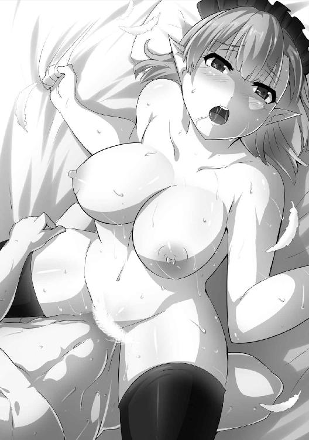

| ダンジョン暮らしの元勇者 1 ダンジョン暮らしの元勇者シリーズ (ビギニングノベルズ) | |
| 峰崎龍之介 | |
| (2016) | |
※本作品の全部あるいは一部を無断で複製・転載・配信・送信したり、ホームページ上に転載することを禁止します。本作品の内容を無断で改変、改ざん等行うことも禁止します。また、有償・無償にかかわらず本作品を第三者に譲渡することはできません。
※本作品は電子書籍配信用に再編集しております。
囲まれている。
深夜に目覚め、そのことに気づいた瞬間。ブラムは思わず舌打ちをした。
とある森の質素な小屋。
その周りに、剣呑な気配がいくつか迫っていた。人数は定かではないが、ひとりやふたりということはなさそうだ。
（......またかよ。これで何度目だ？）
うんざりと嘆息する。それから静かに上体を起こした。その間にも、殺気立った気配はじりじりとこちらに近づいている。
（......まずいな。この感じだと、もう仕掛けてくるんじゃねえか？）
ブラムは息を殺して寝台から降りると、手探りで剣帯を手に取った。慌てずゆっくりと腰に固定する。それからまた手探りだ。愛剣──聖剣と呼ばれる、かつて魔王すら両断した一振りを剣帯に固定する。
ちょうどその時だった。剣呑な気配の中からとりわけ強力なものがひとつ、ゆっくりと小屋に近づいてきた。
（......いまからじゃ脱出は無理だ。迎え撃つしかない）
ブラムが二度目の舌打ちをすると、扉がノックされた。荒々しく無遠慮な音。
「鍵ならついてないぜ。入りたければ入りな」
あえて扉には近づかず、遠くから応じた。迎え入れた瞬間に腹をぐさりという展開も、ない話ではない。返事はなかった。代わりにゆっくりと扉が開いていく。向こうも警戒しているのかもしれない。
開いた扉の向こうには全身を鎧で覆った誰かがいた。兜で顔を覆っているので性別すらわからない。それどころか鎧の材質すら見て取るのは難しかった。今夜は満月だが、流石に森の奥まで照らすほどの光量はないようだった。
「ブラム・ディルモンドだな」
無遠慮な鎧の訪問者が、低い声でそう言った。凛々しい青年とも、ハスキーな女性とも取れる曖昧な声だ。
（ツラ拝むまで正体は不明かな。......これまでの経験からすると、騎士ではあるんだろうが）
推測を脳裏に浮かべる。ブラムは現在とある事情によって、多数の人間から命を狙われていた。そしてその多くは正規の訓練を受けた王国の騎士たちだった。
「よくわかったな。こんな暗さじゃ背格好しかわからんだろうに」
剣の柄に手をやりながら答えた。同時にやや左足を引き、いつでも抜き打てるように気を張る。そうしながら、探るように問いを放った。
「......で、そういうあんたは？」
「残念ながら、名乗ることは許されていない」
騎士はさほど残念でもなさそうに言った。ブラムは小さく鼻を鳴らした。
「は、そいつはご挨拶なことだな。こんな時間に押しかけた挙句、名乗りもしねえとは。......周りで殺気を撒き散らしているお友達も含めて、失礼な話だ」
言うと、騎士はぴくりと肩を動かした。感心したように言ってくる。
「......ほう。気づいていたか。流石は『勇者』ブラム。魔王を討っただけのことはある」
ブラムはその言葉──『勇者』という言葉に眉を寄せた。一見輝かしい称号だが、いまのブラムには皮肉にしか聞こえない。騎士は更に言葉を続けた。
「だが......それも過去の話。いまの貴様は鼠だ。追い回され、泥に塗れるドブ鼠......」
「ああそうかい。ならこんな辺境で鼠を追い回してるあんたはなんだ？ 俺がドブ鼠ってこたぁ、差し詰めドブ浚いの下男か？」
「......貴様」
騎士は激昂したようだった。怒鳴ったわけでも表情が見えたわけでもないが、怒りの気配が指先に現れている。
（言い返されて震えるほど怒るなら、いらんこと言わなきゃいいのにな）
いくらか溜飲の下がったブラムは、静かに嘆息した。対する騎士は震える指先を腰元に──剣の柄に触れさせている。
いよいよ来る──そういう状況だった。だがブラムは、あえてその動きを無視した。
（ここはもう罠の中だ。見える情報は信用できない──）
ブラムは腐っても元勇者だ。その実力が過小評価されているということもないだろう。確実に策を練ってきているはずだし、勝算があると踏んだから仕掛けてきている。ならば軽率な判断は命取りだ。
（罠の定石──派手な動きは陽動）
胸中でだけ呟き、見えている騎士から視線を外した。同時に鞘を払い、抜き身の聖剣を掲げる。聖剣の切っ先が向かうのは扉とは反対側──なんでもない壁だ。それに、騎士が声をあげる。
「なにをしている。貴様の相手はこのわたし──」
「うるせえよ」
一言で斬り捨てて、ブラムは聖剣に命令を下した。
「光よ、穿て」
声とともに掲げた剣が純白の光を放ち、部屋を白く染めた。同時に剣の切っ先から鋭い棘のような、光の塊が射出される。その棘はそれ自体が純白に輝きながら壁に突き刺さった。
そして次の瞬間。壁に突き刺さった棘が、激烈な轟音を立てて爆裂した。粗末な木製の壁が吹き飛び、破片があちこちにばら撒かれる。
「がぁっ!?」
砕けた壁の向こうから悲鳴が聞こえた。少し遅れてどさりという音も聞こえる。伏兵が爆発に巻き込まれて吹き飛んだのだろう。
加減はしたから死んではいないだろうが──しばらくは動けまい。そう判断して騎士に注意を戻した。騎士は剣に手をかけただけで止まっていた。こういう対処をしてくるとは思わなかったのかもしれない。ブラムは彼──ないし彼女に向けて告げた。
「正面からひとりが姿を見せて、潜んでいる本命が急所を狙う。周囲の連中がわざわざ見つかりやすいように気配を放ってるのも、本命が既に忍び寄っているのを隠すため。......悪くなかった。相手が俺でなければな」
「くっ──化け物が！」
騎士は大きく吼えると、今度こそ抜剣した。その声が合図になったのか、小屋の周りで待機していた気配も一斉に動き出す。ブラムはそれに苦笑すると、騎士は無視して走り出した。
こんな狭い空間では、いくら聖剣が強力でも多勢に無勢だ──思いながら、先ほどぶち抜いた壁の方から小屋を飛び出した。
「いたぞ！ 逃がすな！」
「討ち取れば騎士団長も夢じゃない──俺のために死んでもらう！」
小屋から出た途端に、数人の武器を持った男が走り寄ってきた。それぞれ勝手なことを叫んでいる。闇に目を凝らして数を数えた。
（五人か。ちと多いが──いいさ。押し通るまでだ）
構わずそのまま前に向かって走った。数秒後には男たちとすれ違うだろう。
男たちの装備は先ほどの騎士とは少し違っていた。剣を持っているのは同じだが、鎧が違う。目の前の彼らの方が軽装で、しかも兜は被っていなかった。だから男とわかったわけだが。
兜のない軽装の剣士たち──心当たりがあった。ブラムを狙う殺し屋の中でも最も割合の高い連中。王国の下級騎士だ。となると最初に現れた『兜つき』が、この連中の頭なのだろう。上等な鎧で身を守っているのは上級騎士の特徴である。
──と、そんなことをつらつらと考えた頃には。
ブラムはほとんど無意識に、男たちを斬り捨てながらすれ違っていた。男たちは鎧に覆われていない関節部分から血を噴き出し、悲鳴をあげて地面に転がる。
いや──ひとりだけそれができない者もいたようだ。腕が立つのがかえって災いして、喉を斬り裂かれて絶息している者が。
（ひとり殺っちまったか。もう少し弱けりゃ死なずに済んだろうが──）
呟きながら剣を握り直した。まだ戦いは終わっていない。面倒なのが残っている。
「......全員やられるとは......！」
声に振り返ると、先ほどの騎士がいた。ブラムの足元に転がっている男たちを見据えて、悔しげに呻いている。だが即座に飛び掛かってくるということはなかった。剣を握り直し、兜の奥からじっとこちらを見据えてくる。
（案外冷静だな）
騎士の行動。奇襲を看破され、仲間を斬られたにしては理性的だった。
（......その理性がもうちょい根本的なところで働いてればな。勇者を殺すには、いくらなんでも足りねえよ）
身も蓋もないことを思いながら、最後に残った騎士に鋭い視線を向けた。
「......さて。もうあんたしかいないようだが......どうする？」
「............くっ」
騎士は息を飲み、一歩たじろいだ。だがそれでも踏み止まって、剣を構えてくる。
「......どうするもなにもない！ この任務は陛下の勅令だ。抗うことなどできぬ！」
「......あのジジイ。ついに勅まで出しやがったか」
ブラムは騎士の叫び──追い詰められた声に、胃のあたりがムカつくのを感じた。
この半年ほど散々殺し屋を送り込まれ続けてきたが、国王直々の抹殺命令が出ているとまでは思わなかった。
（しかし、これで合点がいったな。どこへ逃げても追ってくるわけだぜ）
震える手で剣を掲げている騎士を油断なく見据え、ブラムは呟いた。
その時だった。剣を構えたまま硬直していた騎士が、一歩こちらに踏み出してきた。
「策は失敗したが、わたしにはまだこの剣がある。逆賊如きに遅れは取らん！」
騎士は強い罵倒とともに地を蹴った。自らを鼓舞するような──実力差を悟ったような言い方だった。ブラムはそれに、舌打ちしつつも聖剣を構える。
「はあっ！」
騎士は鎧の重量感を感じさせない勢いで突撃してくると、気合の息吹を吐いて真一文字に剣を振るった。悪くない太刀筋だが──少々素直すぎる。
靴裏を地面につけたまま、わずかにだけ後退した。白刃が胸の前を通りすぎていく。
「その意気やよし」
言いながら隙だらけの騎士を打った。剣を持っている右腕をだ。それも鎧の隙間ではなく、篭手の上から打撃として衝撃を通す。無茶な打ち方だが、聖剣であれば刀身が折れるような心配はない。
「ぐ......っ！」
騎士が腕を打たれた衝撃で剣を取り落とし、兜の奥からくぐもった呻きを漏らす。だがブラムは容赦なく次の手を打った。剣を拾おうと動き出した騎士の足を払う。騎士はろくに受身も取れず、顔から地面に激突した。
「勝負ありだ。もうやめとけ」
呟き、聖剣の切っ先を騎士に突きつけて──そこでふと気づいた。騎士の兜がなくなって、素顔が見えている。転倒した拍子に留め具が外れでもしたか。
「ん？ お前......」
見えた騎士の素顔に目を細める。月光に照らし出されたのは、どう見ても女の顔だったのだ。完全に顔を上げていないが、それでもはっきりわかるほどの美女だった。燃えるような赤毛が、月明かりでも鮮烈に映えて見える。
どうやら歳も若いようだ。二十代前半といったところだろう。これに先ほどから聞こえるハスキーな声が加われば──なるほど、麗人騎士のでき上がりだ。
「......女だったのか。まあ、最近じゃ女騎士ってのも珍しくはねえのかな」
言いながらも、突きつけた切っ先を逸らしはしなかった。敵には平等に恐怖と傷、場合によっては死を与えるのがブラムの流儀だ。
なにせこちとら、人生の全てを魔王の殺害に捧げている。女性だから手を抜こうなどという文化は、そもそも芽生えてすらいない。
そんなことを考えているうちに、女騎士がふらふらと顔を上げた。意志の強そうな太めの眉と、それに反する雰囲気の泣き黒子が同居していた。状況によって受ける印象が変わりそうな女だと、場違いな感想が思い浮かぶ。
そして──どうやらこの場合は、泣き黒子が映える展開になりそうでもあった。
「ひっ......」
眼前に死の気配──凶器を向けられて、女騎士は喉を引きつらせたようだった。案の定恐怖で眉が寄り、泣き黒子が弱々しさを引き立てている。
「あ、あああっ！」
彼女は弾かれたように顔を上げ、死の恐怖から遠ざかろうとした。だが足が上手く動かないのか動きがひどく緩慢だった。それでも手足は動き続けている。冷徹に眉間を捉え続ける聖剣の切っ先が、彼女の心を折りにかかっていた。
「ま、待て......！ 頼む、待ってくれ！」
彼女はあからさまに狼狽して叫んだ。兜から解放された赤毛が汗で額に張りついているが、気にした様子もない。
それを淡白な目で見やりながら、告げた。
「待てと言われてもな。いきなり殺しにかかってきたのはあんただ。話し合いの余地もなくな。それが自分の番になったからって命乞いするのは、ちょいと筋が通らなくねえか？」
一歩進んだ。剣の切っ先を女騎士の眼前に突きつけたまま。
「あ、ああ......」
彼女は怯えきった表情で、ずるずると尻を地面にこすりつけて切っ先から逃れようとする。虫が這うかのようにだ。
「騎士なんだろ？ 勅命を受けて遥々やってきた殺し屋なんだろ？ なら、それなりの覚悟を決めな。──あんたの死は、もう避けられない」
ブラムは殊更酷薄な調子で、女騎士の死を宣告した。目を細め、いよいよ斬るぞと視線で伝える。
すると──
「ひっ......ひぐっ」
女騎士はいよいよしゃくりあげて泣き始めた。切っ先から目を逸らすことはできないまま、ぽろぽろと涙が頬を伝う。
──それどころかよく見ると、彼女は失禁していた。恐怖が限界を超えたらしい。
情けない醜態だ。しかし彼女を責めるのは酷な話だった。彼女を追い詰めたのは、魔王すら屠った最凶の殺戮者なのだ。
（......こんなところか）
完全に折れた──判断して剣を引いた。
流石に殺す気は失せていた。戦闘中に弾みで頸を刎ねるのは仕方ないが、抵抗する意気地のない者──しかもべそを掻いて失禁している者を殺す趣味はない。
「ひう......ぅ......」
──と、女騎士が後ろ向きに倒れた。急に死の気配が遠ざかったことで、張り詰めていたものが切れてしまったのか。そのまま、仰向けに転がって動かなくなる。どうも気絶したらしい。それを見やってから、ブラムは静かに聖剣を鞘に収めた。小さく嘆息する。
（──半年前までは、聖剣で魔王とやり合ってたんだがな。王都に凱旋した時は称えられもした。それが──）
思考を一度止め、気絶した女騎士へと視線を送る。失禁は止まっているが、情けない水溜まりは既に大きくなっていた。
（──それがいまじゃ、女を脅して失禁させてるとはな。元からガラじゃないとはいえ、勇者のやるこっちゃねえよ）
自嘲気味に呟いて、苦笑した。それから頭を振り、思考を切り替える。
これからどうするか。まずはこれを考えなければならない。
（暗殺部隊が国王の勅で動いてるってことは、これで打ち止めって線はない。この隠れ家は知られちまったし、またどこかに隠れなきゃならねえが）
小屋に向かって歩き始めながら、声に出さずに呟く。可能な限り素早くこの場を離れなければならないが──残念ながら、行く先の当てはなかった。
（......国境を越えて帝国にでも亡命するか？ いや、どっちにしろ勇者の名を政治に使われるだけか。くそ、なにが勇者だよ馬鹿が。厄介ごとばっかり運んできやがるんじゃ、疫病神と大差ねえぞ）
呻くように毒づく。思考が悪い方に空回っているのは自覚していたが、それで止まるものでもなかった。
（......王国内も帝国も駄目となると、大陸自体から逃けるしかねえが......港なんざ真っ先に張られてるだろうしな。ああ、面倒くせえ。多少不便でもいいんだ。とにかく安全なところはねえのか？）
無茶な思考だった。ブルンム大陸はもう三百年近く、キエト王国とザヴァク帝国が二分して治めている。大陸中のどこにいようが、どちらかの目に留まってしまうだろう。
（──待てよ？）
ふと歩みを止めた。なんとなしに聖剣の柄を弄りながら、呟く。
「......魔王の野郎が引きこもってた地下迷宮......」
ブラムが思い浮かべたのは、両国の国境線を跨いで存在しているかつての魔王の本拠地だった。悪意ある罠と、殺意に満ちた魔物がひしめく魔の領域。
あの場所の最奥であれば、そうそう暗殺者どもも近寄れないだろう。
「......あそこなら、いけるか？」
思いつきに、半信半疑の心地で夜空を見上げた。魔王を殺害して以来、あのダンジョンには立ち寄っていない。だからいまの状況はまったくと言っていいほど知らないのだ。もしかしたら魔王の死によって、単なる迷路と化しているかもしれない。
「その場合、不便なだけで隠れ家としての価値は低いが......いや。まずは行こう。どっちにしろ、他に行くところなんざねえしな」
ブラムは呟き、ひとり頷いた。続けて苦笑する。
──暗殺者に襲われない。それだけを求めたささやかな住処。かつて大陸を救った勇者の安住の地。もしもそれが、魔王の造ったダンジョンであるのなら。
（──皮肉にしても、きつい話だな）
そこまで考えたところで、苦笑を引っ込めて嘆息した。いやに重い嘆息だった。
森の隠れ家で女騎士に襲撃されてから数日後。ブラムは旧魔王軍の本拠地──ダンジョンのすぐ近くにいた。
「相変わらず無闇とでかいな」
巨大な地下への階段を眺めやり、ふと呟く。
このダンジョンはいわゆる地下迷宮であり、地上からではその姿を拝むことはできない。地上から確認できるのはほんの序章──入り口部分だけだ。
そして王国側と帝国側にひとつずつあるこの巨大な階段は、いくつかある入り口の中でも正規のものと認識されていた。他にもダンジョンに繋がっている洞窟などもあるにはある。しかしそれを使うと魔物の巣の真っ只中に落ちたりするため、概ね敬遠されていた。
「さて......行くか」
足元に置いていた荷物──数日分の保存食を入れた背負い袋を担ぎ、ゆっくりと歩き出した。薄暗いダンジョンの入り口に足を踏み入れる。
「......食われてるみたいだな」
一段ずつ階段を踏みしめていると、ふとそんな感想が浮かんだ。
この階段はあまりに巨大で、まるで口のように思えるのだ。ダンジョンという巨大なモンスターが開いた口。
（なら俺は......自ら食われにかかっている愚かな獲物か）
思い浮かべた感想に苦笑した。以前はこんな馬鹿げたことは考えなかった。
（......我がことながら肝が小さいな。まあ、前はひとりじゃなかったからな）
かつてこのダンジョンに挑んだ時には、仲間がいた。キエト王国とザヴァク帝国、両国から選ばれた精鋭たちが。
聖騎士ヴィオーラ、魔導師アルカノン、祭司ノア。そして聖剣の担い手ブラム。このチームで三年という時をかけてダンジョンを攻略し、魔王を殺害した。
それがもう半年前のことだ。
だがその仲間たちはもうこの場にはいない。それぞれ自身の職場に戻り、その任をまっとうしているだろう。
（自分の居場所があるってのは──いいもんだよな）
ないもの強請り。それはわかっていた。それでも居場所を欲したからここに来た。
（......行くしかねえ。進んだ先になにもないとしても。もう俺には......行くところなんかないんだ）
暗くなりつつある思考を、頭を振って追い払って。ブラムは暗く陰鬱なダンジョンへと進んでいった。
◇
──ダンジョンは地下二十五階まで続いている。少なくともブラムが最奥に到達した半年前まではそうだった。
二十五階。数字にするとそれほど多くは感じないが、実際に地下に潜るとそうも言っていられないのが事実だった。
理由はいくつかある。
まずそもそもダンジョンの面積が広い。測ったわけではないし階層によってばらつきもあるが、最小の階でも王国の宮殿と同等の広さを持つ。最大の階では、下手をすると城下町に匹敵しかねない広大さだ。そしてそのだだっ広い面積の中で、次の階に下りる道はたったひとつしかない。そこは、複数ある入り口と違うところだった。
いや、もう少し正確に表現するならこういう言い方になる。
『最奥に辿り着ける正解の道がひとつしかない』と。
次の階に下りるだけなら、実のところ抜け道はいくらかあった。だが正解以外の道を進んでも、たいていそこで行き止まりになっていたり、最悪の場合は致死の罠が待ち構えている。
加えて階層の節目には強力な守護者が門を守る『試練の間』なども存在していて、侵入者の進行をいちいち阻んでくる。実力者が揃った魔王討伐隊でも、最奥に辿り着くのに三年かかったのはそのせいでもあった。
（慎重に道を見定め、細心の注意を払って進まなければ簡単にくたばる。そいつは俺だってそうだ。油断はできない......）
──というのが、ブラムの記憶しているこのダンジョンの特徴だった。
◇
......だったのだが。
「どうなってんだ、こりゃ」
ブラムは目の前の光景をいまいち飲み込めず、渋面で呟いた。
松明代わりに使っている聖剣──命じれば無闇と光るので便利なのだ──が放つ光は、異様な光景を照らし出していた。
「......尻だよな。これ」
そう、尻だ。ダンジョンの妙につるつるした壁から、どういうわけだか人間の尻が生えていた。下着すらつけていないむき出しの尻である。股間からいちもつがぶら下がってはいないので、どうやら女の尻のようだ。
「いや、だからって納得できる要素でもないが。なんだって女の尻が生えてんだよ？」
疑わしい心地でしゃがみ込み、顔を近づけてよく観察してみる。
とはいえ、やはり尻は尻だ。いくら見つめようがただの尻でしかなかった。強いて発見を挙げるなら、肌の感じからして若い女のものだろうというくらいか。
「......死んでるのか？」
だとすると中々のホラーだな──思いながら触れてみた。すると予想に反して、謎の尻はびくびくと震えた。どうやら生きてはいるらしい。わかったからといって、どうということもないが。
「......いや。一応他にもあるか。これは......別に壁から生えてるわけじゃないな。どっちかっつーと、空いてる穴にはまり込んで抜けなくなったって感じだ」
言いながらふと見回すと、壁にはいくつか穴が空いていた。どうやらそのうちのひとつに、人間が頭から突っ込んでいる形のようだ。
もしかしたらこれもダンジョンの罠のひとつなのかもしれない。だいぶ見た目は間抜けだが。
観察を切り上げて、ブラムは大方の見当をつけた。可能性を口にする。
「盗掘屋......だろうな」
このダンジョンは大陸の中心にあり、魔力の豊富な霊脈を近くに持つ。そのため出土する鉱石は内部に魔力を溜め込んでいることが多い。それらは石の種類に関係なく、ひとくくりで魔鉱石と呼ばれている。
都市部では魔力で動く道具の需要が高まっているから、燃料になる魔鉱石はそれなりの値がつく。なのでそれを目当てにダンジョン深くまで潜り込んでくる連中はあとを絶たないのだ。半年前、魔王が存命の頃ですらたびたび見かけたほどだ。
彼らは国家から盗掘屋と呼ばれ、基本的には犯罪者として扱われている。ただし国境に跨がって広がっているというダンジョンの位置関係上、王国と帝国のどちらに裁かれるかは判然としていない。
また、勝手に危険を負って貴重な燃料を掘り出してくれるという面は利便性を見出されてもいるので、実際に逮捕される事案は実のところ少ない。
余談だが、彼ら自身は『盗掘屋』ではなく『冒険者』と名乗ることが多かったりする。危険を顧みず魔鉱石に挑む姿を指してだ。
自己陶酔の極みではあるが、こちらの名前も案外通りがいい──一般人はこちらを使うことも多いのだ──ので、傍目には呼び名が複数あってややこしいことになっていた。
まあ、それはそれとして。
ブラムは自業自得とはいえ哀れな姿の盗掘屋を見下ろして、ぼそりと呟いた。
「......様子がおかしいよな。罠にかかってるのに魔物が殺しに来ない」
ブラムがいまいるのは、地下五階あたりだった。彼は一度このダンジョンを踏破しているので、『正解の道』を把握している。
そのためここまではそれほど時間をかけずに到達できた。多少魔物によって道が崩されたり適当に繋ぎ直されたりしているところもあったが、聖剣の力で爆破して進めばそう問題にはならなかった。
だがそんな順調な行程に反して、ブラムは違和感を拭えずにいた。
以前訪れた時と、罠の質が変わっていたのだ。以前は問答無用で殺しにかかってきていたのが、かなりマイルドになっている。
「......つーか、えらく偏ったラインナップだったような」
渋面を浮かべつつ、これまでに見かけた罠を思い浮かべる。
ひとつ。床石に偽装されたスイッチを踏んだ盗掘屋が、床から急に伸びてきた触手に尻穴を突かれて悶絶していた。普通は槍か何かが突き出てきて死ぬところだ。しかし出てきたのは、うねうねとした触手だった。
ふたつ。魔導師らしき女が壁に寄りかかった瞬間スライムが降ってきた。そうなると口と鼻を塞がれて窒息死するのが通例なのだが、そのスライムは女魔導師の服だけを綺麗に溶かして帰っていった。女魔導師は羞恥で半べそだったが、体には傷ひとつなかった。
みっつ。擬態獣に引っかかった女戦士が下半身を飲み込まれていた。この場合予想されるのは血みどろの死であり、擬態獣の餌である。しかしそうはならなかった。女戦士は悲鳴ではなく嬌声をあげていた。まったく中でナニをしていたのやら。
そして挙句がこの尻である。かなりがっちりとした拘束ではあるが、殺傷能力はないように見える。となるとやはり、罠としては殺意が薄い代わりに辱めの意味合いが強い。
「......どーも性的というか、卑猥だよな。こんな感じだった覚えはねえんだが......」
頭を掻き、ひとりごちる。それに──と、ブラムは続けて思い浮かべた。
配置されている魔物も随分偏っていた気がするな、と。
元々浅い階層だと弱い魔物が多かったが、いまは輪をかけて貧弱だ。スライムや触手生物など、近づかなければなんの障害にもならない魔物ばかりが目につく。
「......魔王が死んだからか？」
魔王が存命の頃に学者が提唱した、魔王が持つ邪悪な瘴気が魔物を活性化させていたという説は、確かいまのところ覆されていない。だとすれば魔王の死によって魔物が弱体化し、結果ダンジョン内の生息分布も変わったのだ──という推測も、あながち的外れではないのかもしれない。
（進みやすいのはありがたいが......追っ手を凌ぐ隠れ家としては、ちと頼りないな）
──と、そんなことを考えていると。
こつ......と。
遠くの方から音が聞こえた。しかも背後からだ。
（俺が......背後を取られた？）
少なからぬ驚きとともに、眉を寄せる。聞こえてくる音に集中した。
（靴音......だな。ってことは、魔物ではないってことだが......）
考えながら振り返る。すると──
「......ブラム・ディルモンド様ですね？」
どこか億劫そうな声が、ブラムの耳朶を叩いた。
振り返った先にいたのは女だった。ぞっとするほど美しいが、ひどく青白い顔の女。ダンジョンにはまったく似つかわしくない、メイドの格好をしている。しかも実用性の薄そうな、やけにひらひらした衣装だった。だがそれはあえて無視した。もっと気になる部分がある。
（あれは──）
女の美しい銀髪からはみ出ている耳。そこが気になった。耳の先が尖っている。これは魔族の特徴で、つまり危険人物の証明でもある。顔が青白いのもそう考えると合点がいった。魔族はたいてい、白を通り越して青い顔をしているものだ。
（......なんだって魔族がこんな浅い階層にいやがる。魔王が存命の頃ですら、地下二十階を越えなきゃ出てこなかったはずだぞ。しかも俺の名前を知ってやがるとは──）
やはりこのダンジョンは以前となにかが違う。ブラムは警戒心を最大限に引き上げた。
「ああ、確かに俺はブラムだが......君は何者だ？」
「何者、と問われましても。見ての通りとしか」
謎のメイド服魔族は、どこか面倒そうにそんなことを言った。見ての通り──ただのメイドだと。しかしそのわりには鬱陶しげな顔でフリルを摘んで、続ける。
「一応名乗っておきましょうか。......イレーネというのが私の名前です」
「イレーネか。いい名だ。それで、そのイレーネさんがなんの用だ？ ダンジョンでメイド服を着てるような魔族に、名前を知られてる覚えはないんだがね」
そう言って肩をすくめると、イレーネと名乗った魔族はわずかに眉を寄せた。メイド服、というあたりでだ。あまり触れられたくないらしい。そんな意味のないことだけがわかった。
彼女は気を取り直すように嘆息したあと、言ってきた。
「主に言われて、あなたを迎えに来ました」
「迎えに？ それに......主だと？」
意味がわからずに聞き返す。ダンジョンの住人に知り合いを持った覚えはない。ここにいるのは敵だけだ。そして勇者が負っていた役割とは、敵を皆殺しにすることである。つまり仮に知り合いがいたとしても、とうの昔に斬り殺しているはずだった。
それに......主という言い回しが気になった。人間が言う分には一般的な言葉だが、魔族が口にすると意味が変わってくる。
（魔族の主......人はそれを魔王と呼ぶ。だがありえない。奴は確かに、この手で殺したはずだ──）
「あー、なにか考えていますね。でも無駄というか、正直私が面倒なのでやめてください。思考停止してついてくるのが吉です」
ブラムが黙考に意識を取られていると、イレーネがすたすたと近寄ってきた。
「お手をどうぞ」
言葉と同時に手が伸びてくる。細く白い、綺麗な手だ。
「......この手はなんだ？」
「転移魔法で主のところにお連れします。それとも、残り二十階をご自身で踏破されます？」
それならそれで構いませんけど──億劫そうな瞳はそう言葉を続けていた。
ブラムはそれに嘆息しつつ、ふと先ほどの壁に──というか尻に視線を移した。
（......セクハラじみた罠に、半端な魔物の配置。加えて壁から生えてる謎の尻。極めつきに魔族が『お迎え』と来たか。......どんな取り合わせだろくでもねえ。これならまだ、魔王の野郎が実は生きてましたって方がいくらかマシだぜ）
その場合はすぐさま最奥まで走って、改めて魔王をぶち殺すだけでいい。余計な考え事をしなくて済む分、精神的には健康でいられるだろう。
だがどうやら、現実は非情であり......そしていくらか間抜けであるらしい。
壁で震えている──寒いのかもしれない──裸の尻がそう言っている。まったくもってろくでもない。ブラムは握ったままの聖剣に視線を向けた。それから、また嘆息して鞘に収める。
（......ここでうだうだしててもしょうがねえか。......あとケツの前で抜き身の刃物ってな、いくらなんでもイカれてる）
くだらないことを胸中で呟き、イレーネに視線を戻した。
（この魔族を信用するかはまた別として。......主とやらには興味があるな。会って損はないだろう）
それに、どのみち最奥を目指してはいたのだ。二十階分楽をさせてくれるというなら、乗ってみるのも悪くないのかもしれない。
「............わけはわからんが。君の主とやらに会えば、説明してもらえるんだろうな？」
「さあ。それは主にお問い合わせを。私は知りませんよ」
「そうかい。......くそ、なにがなんだか」
ブラムは毒づいたが、結局差し出された手を握った。ひんやりとした柔らかな手だ。イレーネは軽く握り返してくると、小さく顎を引いた。
「では、転移します。......空間転移」
事務的な口調で言って、彼女は魔法を起動し始めた。ブラムはその手順に目を見張った。
（転移魔法を......起動呪だけで？）
通常、魔法は詠唱という名の準備段階を必要とする。しかし彼女が呟いたのは起動呪と呼ばれる必要最低限の呪文だけだった。これは省略起動式と呼ばれる、人間の魔導師ではほんの一握りの実力者だけが扱える高等技術である。
（......おいおい。転移魔法といや大魔法の一種だろ。宮廷魔導師クラスでも、くそ長い詠唱をせにゃならんはずだが......流石に魔族だな。とんでもねえ）
──と、ブラムは素直に驚愕していたのだが。
「......あれ？」
イレーネが首を傾げた。握ったブラムの手を持ち上げ、不思議そうに見つめる。
「......妙ですね。無詠唱で転移できない。私の唯一の特技なのに......」
彼女は不満そうな──あるいは不可解だという顔で呟いた。
（......ああ、そうか。俺を転移させようとしたから、予定より負荷がかかってるわけだ）
彼女が魔法に失敗した理由に心当たりがあった。これは彼女のせいというより、一方的にブラムに原因がある。
「魔力の出力そのものを上げるか、面倒がらないで詠唱を入れてみな」
「はい？ ......あ、本当だ。少し踏み込んだら行けそうですね」
ブラムの助言に、イレーネは素直に従ったようだった。ふたりの体が淡い光に包まれ始める。転移魔法の起動段階だ。
「こほん。では、改めて行きましょうか。──空間転移」
イレーネが再び起動呪を呟く。その瞬間視界が明滅し、景色が一瞬掻き消えた。
そして更に一瞬あとには、ふたりは巨大な扉の前に転移していた。
◇
見上げるほど巨大なそれは、見覚えのあるものだった。ブラムは思い出す必要すらなく、その正体を口にする。
（王座の間......）
かつて、魔王が座して侵入者を迎えた場所。死を約束する魔の深淵。目の前にあるのは、そこに続いている扉だった。
「......っ......」
この扉を見るのは二度目だったが──それでも圧倒される重厚さを感じて、ブラムは喉を鳴らした。
「では参りましょう。主が待っています」
──と、イレーネが平然と告げてきた。ブラムの心情には──かつてこの中で魔王と死闘を繰り広げた勇者の胸中には、一切触れてこない。もっとも、問われても答えるのは難しいが。
なんにしろ彼女はすたすたと扉に近寄ると、手をかざして呟いた。
「開け」
どうやらそれが開門の合図だったようだ。城砦の門のごとき巨大な扉がそれに見合わぬ静かさで、少しずつ開いていく。扉が開ききると、イレーネは無言で中に入っていった。背中からついてこいという気配が滲んでいる。逆らう意味もないので、ブラムはそれに続いた。
ただし聖剣の柄は握っていた。警戒はいくらしても毒にはならない。牙を剥いてくるのは不足した時だけだ。
（......相変わらず殺風景だな）
扉の向こうには、部屋と呼ぶには広すぎる空間があった。やや薄暗いが魔法と思しき青白い照明があるので、転ぶほどではない。
見たところ、間取りは以前とそれほど変わらないようだ。扉から王座まで真っ直ぐ赤い絨毯が敷かれていて、天井を支える太い柱が何本か見える。そして最奥には王座。
王座の傍には人影がひとつあった。この流れからすると、あれがイレーネの主なのだろう。彼女が無造作に歩いていくので、人影は急速に大きくなっていた。ほどなく完全にシルエットが確認できる距離になる。ローブを羽織っているらしいことは見て取れたが、フードで顔は見えなかった。
そこでブラムは気づいた。人影は思いのほか小柄だった。かつて見た魔王のシルエットとは重ならない。
（奴じゃないのか。......じゃあ、こいつはいったい......）
やや緊張しながら心に呟いていると、先を歩いていたイレーネが声をあげた。
「マスター。ブラム様をお連れしましたが」
その言葉に、人影はぴくりと反応した。それから、どこか気楽な調子で答えてくる。
「あ、そう？ 早かったね」
人影は軽く手を上げた。それからブラムに向けて──
「や、ブラム。しばらくぶりだね。元気してた？」
えらく気軽に声をかけてきた。ブラムはぴくりと眉を上げた。
「その声......」
聞き覚えのある声だった。しかも半年前までは毎日聞いていたほど、馴染みのある声。
（まさか......こいつ）
ブラムは心当たりを、声にして叫んだ。
「お前......アルか!?」
「正解」
ローブ姿の人影は楽しげに言ってフードを取った。そうして晒された素顔は、半年前まで命を預けあっていた戦友──魔導師アルカノン・ロイゼ以外の何者でもなかった。
かっち、こっち......。
時計の振り子の上で、レリーフで描かれた二頭の獅子が互いを食い合っている。優雅な調度品に彩られた部屋の中で、そこだけが妙に殺伐としていた。ブラムはそれを見つめながら、まだ困惑を振り払えないでいた。
（なにが......どうなってんだ？）
呟き、改めて周囲を見渡す。
部屋には見たこともない植物が飾られていた。比喩でもなんでもなく黄金の花を咲かせている、奇妙な植物だ。茎が重さに耐えきれないのか、花はだらんと下を向いている。部屋に入った時、真っ先に気になったのがそれだった。メイドのイレーネに訊ねると、日光を必要としない魔界の花だと説明してくれた。
日光を必要としない──つまりは地下でも育つということだ。
そう、ここは地下だ。地上からは何百メートルも隔たっている、太陽に見放された空間なのだ。しかもかつて地上を地獄に変えた災厄の魔人──魔王が根城にしていた地下迷宮の最奥でもある。数多くの罠があり、凶悪な魔物が跋扈する魔の領域。
だというのに......。
「いやぁ。何度も言うけど久しぶりだねえ。まさかまた地下迷宮で君と会うなんて、思いもしなかったよ」
上等そうなソファに腰掛け──これはブラムもだが──上機嫌にそう言ってくる、童顔の美青年の笑顔を見やる。その朗らかな笑顔から旧友に会えて嬉しいという以外の感情を読み取るのは、あるいは無粋なのかもしれないが──状況を考えるとそうも言っていられない。ブラムはすっと目を細め、探るように口を開いた。
「お互い様だろ、アル。俺だってこんな地の底でお前に会うとは思わなかったさ」
童顔の美青年──アル。フルネームはアルカノン・ロイゼ。歳はブラムと同じだったはずだから、二十歳ということになる。
ブラムのかつての仲間であり、ザヴァク帝国の若き宮廷魔導師でもある。本来ならこんな地の底にいるような人間ではない。だが彼は現実にここにいる。ダンジョンの最奥、王座の間から繋がっている一室に。しかもどうやらここが、彼の私室らしい。随分リラックスしているし、居住まいも自然だ。
「それにしても。君はなんだってこんなところに？ 救国の英雄として、歓待されているものとばかり思ってたけど」
アルは自身のことは棚の最上段に放り投げて、そんなことを聞いてきた。ブラムは眉を寄せて、ぽつりと呟く。
「......色々あってな。英雄でいられたのは、最初の一月だけだった。いまじゃ勅で命を狙われてる哀れな逃亡者さ。ここには、ひとまずの避難場所を求めて来たんだが」
「......おやおや。命を狙われてるとは穏やかじゃないね。理由を聞いてもいいかい？」
アルは朗らかな笑みのまま訊ねてきた。ブラムは少し迷ってから、秘密にするほどではないかと思い直して頷いた。
「一番の理由は聖剣だ」
ブラムは言って、剣帯から聖剣を外した。
「俺を勇者なんて窮屈なモノに押し込めた元凶。聖剣。武器の分際で使い手を選ぶ我が侭なこいつが、つまるところ全ての始まりだった」
憎々しげに聖剣を見つめ、ブラムは続けた。
「聖剣は元々キエト王家の持ち物だ。伝来の秘宝って奴だな。『王家に危機ある時、その輝きが暗雲を払う』なんて言い伝えが残ってるくらいだ。......難儀なことに、実際に危機は訪れたわけだが」
「十五年前の、魔王の降臨だね」
「ああ。湧いて出たような強大な敵に、王家は大いに慌てた。魔王の瘴気を取り込んだ魔物が各地で暴れ、治安が乱れては賊が跋扈した。負の連鎖の始まりだ。だがそれに対して、王家は有効な手を打てずにいた。元凶である魔王を討つのが正解だとわかってはいたが、それが上手くいかなかった。魔王は宣戦布告したものの、このダンジョンに籠もりきりだったからな。何度か大規模な討伐隊が送り込まれはしたが、全て失敗に終わった。陰湿な罠と、狭い中でも自由に動ける魔物たちの前に膝を折り続けた。そいつはたぶん、帝国も似たようなもんだったろ」
「だね。なにせその戦力を確保するために、何十年も続いていた王国と帝国の戦争を、一時的にしろ休戦したくらいだから」
アルは皮肉な笑みを浮かべた。ブラムは笑わなかったが、胸中は似たようなものだった。
なんにしろ、ブラムは話を続けた。
「そんな窮状が五年かそこら続いた頃。ついに聖剣が動き出した。宿主を選び......魔王を殺す暗殺者に仕立て上げた。ただひとりを殺すためだけの、哀れな捨石だ。......その不幸な捨石が、俺だったわけだが。で、ダンジョン攻略には大規模な軍より少数精鋭を送り込むべきだという点で合意したキエトとザヴァクが、聖剣に選ばれた俺を中心に結成したのが」
「魔王討伐一行ってわけだね」
アルが先を引き取った。ブラムは小さく頷いた。
「そうだ。そしてなんやかんやあって、どうにか魔王をぶち殺したのが半年前。各地で魔物の動きが沈静化し、俺たちは一躍英雄となったわけだ。......だが、世の中そう甘くはないってことなのかね。王都に凱旋した俺は一月でその地位から転げ落ちた。......聖剣が我が侭を続けたせいでな」
ブラムは鼻を鳴らして、聖剣を鞘の上から小突いた。それから続ける。
「この馬鹿はな、魔王って危機が去ったってのに俺を宿主として認めたままなんだよ。つまり王家に返還できなくなってやがったんだ。それに王家は──いや、王家というよりその周辺の大臣どもは怒り狂った。なんせ俺は王家とは縁もゆかりもない孤児だったからな。それが王家伝来の聖剣を持ったままってのは、いかにも政治的によくない」
「......で、『こやつは英雄気取りが度を越えている。いまに国を乗っ取る気ですぞ！』......ってわけ？」
「凄いなアル。ハゲに──ヒュケイル大臣閣下に一字一句同じことを言われたぜ。......ま、そういうことだよ。魔王がいない以上、俺の存在は邪魔なものでしかないんだろうな。ぽっと出の下民が出しゃばるなとばかりに、あっさり掌を返されちまったよ。国民感情を鑑みてか表向きは勇者のままにしてるようだが......水面下じゃ殺し屋がわんさと送り込まれてきてる」
一気に喋りきって、嘆息した。対面のアルに視線を向ける。
「俺の事情はこんなところだ。で、俺と同じく本来は英雄であるはずのお前は、なんだってこんなところにいる？ 魔族のメイドなんて侍らせて」
ブラムはアルの背後──静かに控えているイレーネを一瞥した。彼女は最初から部屋にいたが、一言も発していない。必要がなければ話さないタイプなのかもしれない。
「ああ、僕の事情？ 別に大したことはないよ。大筋では君と同じかな。僕も帝国の人間から命を狙われて、ここに逃げ延びてきた逃亡者だ」
アルは言って、肩をすくめた。
「お前が帝国に？」
眉を寄せて、声のトーンを落とした。同時にふと推測が脳裏を過ぎる。
アルは魔王を討つ旅が始まる前から宮廷魔導師だった。つまり超のつくエリートだったわけだ。しかもあまりにも若かった。その上で魔王討伐の功績が重なれば、称えられると同時にやっかみも買う。彼は嫉妬に足をすくわれ、国を追われたのだろう。
ブラムはそう推測し、同時に共感を覚えた。細かい経緯は違うだろうが、同じような境遇にある同志を見つけた気がしていた。
「そうか......お前も苦労したんだな」
しみじみ告げると、アルは苦笑して頷いた。
「いやまったく。彼らもあんなに怒らなくていいのに。たかが皇妃と皇女を、母子丼にした程度で──」
「待て」
アルの言葉を制止した。いまなにか聞き捨てならないことが含まれていなかっただろうか。
「......皇妃と皇女がなんだって？」
「え？ だから母子丼。凱旋したあとに祝勝パーティーがあってさ。そこで口説いたんだ。皇妃の寝所に招かれてね。三人で一晩中愉しんだよ」
彼はあっけらかんと告げた。背後でイレーネがゴミを見るような目をしたが、ブラムはそれに内心同意していた。そんなブラムの胸中を無視して、アルの気楽な声は続いた。
「でも、それがバレちゃってね。帝とその周囲はもうカンカン。思いっきり指名手配されて、取るものも取りあえず尻尾を巻いて逃げてきたってわけ」
「お前......」
ブラムは頭を抱えた。そういえばこいつはそういう奴だったと。見た目は実に好青年だが、皮一枚下には好色な肉食獣の貌が潜んでいる。
（前言撤回──こいつは同志じゃない。ただのアホだ）
こめかみに鈍痛を感じて、ブラムは天井を仰いだ。無機質なダンジョンの天井。無論、そんなところに慰めの言葉が書いてあるはずもなく。
「そんなことはいいじゃない。どうせ終わった話だ。大事なのはこれからどうするかってことさ」
アルは気楽に笑って見せた。国を挙げて命を狙われているとは思えない、実にいい笑顔だった。
「......そうだな」
言いたいことは色々あったが。ひとまずそれは飲み下して、ブラムは頷いた。ここでアルの行状を論っても仕方ない。
「そういやこのダンジョンの様子がおかしくないか？ 俺が見たのは地下五階までだが、それでも以前とはだいぶ違ったぜ」
気になっていたことを訊ねると、アルは頷いた。
「そうだね。僕がここに来たのは三ヶ月くらい前なんだけど、その時は様子が変どころか、ダンジョンとしては死んでいたよ。魔王がいなくなったことで機能が停止しているところが多すぎた。僕がそれを修繕したんだよ。様子が違ってたのはそのせいだと思う。修繕ついでに僕好みに改造したからね」
「......じゃあ、地下五階の壁に尻が生えてたあれは......」
「うん。僕が考えた罠。面白かったでしょ？ 壁に穴を開けて、奥に大粒の魔鉱石を仕掛けておいたんだ。釣られた獲物が手をかけると、穴が締まって抜けなくなる仕組みってわけ。あと、あのあたりにはゴブリンが巣を作ってるから、放っておけば武器から下着まで勝手に追い剥ぎしてくれるよ」
「......ああ、裸だったのはそのせいか」
呻いて、嘆息した。アルは楽しげに笑っているが。
「はは、それはともかく。ブラムはこれからどうするんだい？」
「さてな。とにかく身を隠さねえと、と思ってここに来たんだ。正直先のことなんざ考えちゃいねえよ。それが許される状況でもなかったしな」
ブラムは捨て鉢な気分で肩をすくめた。アルはそれに、ふむと呻く。
「当てはないってわけだ。ならちょうどいいかな」
アルは立ち上がった。それから芝居がかった動きで手を広げ、告げてくる。
「僕はここを──このダンジョンを僕の楽園にするつもりでいる。帝国だろうと王国だろうと手出しできない、無敵の迷宮にね」
「ああ、そいつは素敵だな」
ブラムは楽しげなアルの調子に苦笑しつつ、相槌を打った。アルは頷くと、少しだけ声のトーンを落とした。
「でも、それには足りないものがいくつもある。罠の再設置はまだまだ必要だし、魔物もだいぶ数が減っている。挙げていくとキリがないほど、色んなものが足りていない。......そしてなにより問題なのは」
「問題なのは？」
アルが言葉を切ったので、ブラムは問うた。するとアルはなにかを考えるように虚空を見つめた。だがやがて纏まったのか、真剣な表情で言ってきた。
「......これに関しては、実物を見せた方がわかりやすいと思う。ブラム、ちょっとついてきてくれるかい？」
彼はそう言うと、ブラムの返事を聞かずに歩き出した。ブラムはそれに眉を寄せ、なんとなくイレーネの方に視線を向ける。
「行ってください。いいものが見れますよ」
彼女は表情を動かさず、それだけを言った。特に説明はないらしい。
「......ま、ここまで来たら最後まで付き合うさ」
ブラムは少し悩んだものの──結局そう呟いて、アルのあとを追った。
◇
アルが向かったのは先ほどまでいた王座の間だった。それも最奥にある王座の裏に連れて行かれる。
「アル。こんなところでなにを見せてくれるっていうんだ？」
「もう少し待ってよ。すぐだから」
アルは言うと、口の中で何事か呪文のようなものを呟いた。その瞬間。
ごごごと地鳴りのような音が響き、重量感のある王座が少しずつ横にずれた。するとそこに、更に地下へと続いている階段が現れる。
「......秘密の入り口ってわけか」
「そんなところさ。さ、見せたいものはこの先だよ。──鬼火」
アルは魔法で鬼火を生むと、足元を照らしながら階段を下りていく。ブラムは肩をすくめてそれに続いた。階段はそれほど長いものではなかった。道としても一本道でしかなく、迷うようなものではない。
「ここだよ」
階段を降りきったところで、アルがそう言って前を示した。彼の示す先にはいくらか奥まった空間が広がっている。そこはアルの鬼火が必要ないほど明るかった。しかし、なぜだか心がざわめく明るさでもあった。光が無機質な青白いものだからだろうか。
（......違うな。似てるんだ。聖剣の放つ光と──）
呟いていると、アルがゆっくりと歩き出した。彼は光の根元へと向かっていた。空間の奥にあるなにかの装置。それがこの光の源だった。
「こいつはなんだ、アル。まさかただの洒落た灯りだ、なんて言わないよな？」
「はは、もちろんさ。これは魔力炉──ダンジョンコアだよ。この場所より更に下にある、大陸の霊脈......その合流地点。──霊穴。その大陸最大の圧倒的な魔力を、この装置がくみ上げて貯蔵してるんだ。原理的には魔鉱石ができ上がるのと同じものだよ。これは意図的に魔力を吸い上げているから、規模は比べるべくもないけれど。なんにしろこのダンジョンのトラップなんかは、全てこの装置から魔力を引いて作動している。つまり......ダンジョンの心臓さ」
「心臓。こいつが......」
呟き、ブラムはその装置を改めて見やった。装置は床から伸びた筒状の台と、それに設置された透明な容器のようなもので構成されていた。容器は巨大な球状であり、中には液体が満ちている。光を放っているのは、よく見るとその液体そのものだった。
「ってことは、あれは魔力か。それも物質化するほどの濃度の......」
ブラムは眉を寄せた。魔力は通常、単独では物質界に存在していない。なにかしらの物質に溶け込んでしか存在できないからだ。だが極めて高い濃度になった時だけは別だと、他でもないアルの口から聞かされたことがあった。もっとも、自然発生するものでは決してないが。
「その通り。あれは超圧縮された魔力だよ。ただし、あのままでは役に立たないけれど」
「そうなのか？」
「うん。保存には適した状態なんだけど、どうにも純度が高すぎてね。そしてこれこそが、僕が君に見せたかったものであり......このダンジョンの弱点なんだ」
アルは困り顔でそんなことを言った。ブラムは黙って頷いた。アルは続きを言おうとしていた。
「かつて魔王はこの無尽蔵に近い魔力を背景に、地上を制圧することを目論んでいた。つまり彼は、この液状化した魔力を扱えたんだ。具体的には......彼は特殊な魔法でこの魔力を加工して、ダンジョンに行き渡らせていた。同時に自分自身にもその魔力を運用して無敵を誇っていたようだね。余談だけど......魔王がこのダンジョンから出てこなかったのは、無敵でいられるこの場所から離れたくなかったからだと、僕は見ている」
「初耳だな。暗殺を命じられた俺にも、そんな情報は伝わってなかったぞ」
「だろうね。僕だってこれを知ったのはごく最近さ。よく勝てたよね、僕ら」
アルは苦笑した。それから、また続けてくる。
「ともかく......この魔力はこのままだとダンジョンに行き渡らない。もう一段階、加工してやる必要がある。そして魔王が作ったそのための術式が、幸運なことに残っていた」
「残っていたって......どこにだ？」
「物として残っていたわけじゃないよ。それは大事なところじゃない。大事なのは僕が魔王の術式を身につけたってことさ」
アルは肩をすくめて言った。簡単に言っているが、内容は明らかに常軌を逸している。
「......魔王が使ってた魔法を、お前も使えるってことかよ。その時点で人間離れした技術のような気もするが......まあいい。その様子だと、なにか問題があるんだな？」
「うん。形ができたのはいいんだけど、流石に魔王謹製の制御魔法だ。人間が扱うにはちょっと面倒なところがあってね。詳細は省くけど......起動するのに、ある特殊なものが必要になるんだ」
「アル。もったいぶらずに教えてくれ。こっちは魔法に関しちゃ門外漢だ」
ブラムは大仰に肩をすくめて見せた。アルは苦笑しつつ、頷いてくる。
「はは、ごめんごめん。術式に必要なのは強い負の魔力──生物の負の感情だよ」
「負の......感情？」
「そう。不快とか怖いとか、そういう心の動き。それが負の感情さ。そんなものが必要なあたり、実に魔王らしい術式だよね」
アルは言葉を切った。皮肉げに笑って続ける。
「感情とは力だ。特に魔道においてはね。魔王はそれをよく知っていて、この術式を編んだ。そしてこのダンジョンを造ったのさ。魔鉱石という餌をばら撒き、人間を呼び寄せ......張り巡らせた罠と従えた魔物で搦め捕る。そして恐怖と絶望を与えて負の感情を生み出させ、それを使ってコアから新たな魔力を得る。更にその得た魔力に自らの瘴気を混ぜて、霊脈に流してやれば......大陸中の魔物に彼の力が行き渡る。なにもしなくても、大陸の混乱は深まり続けるわけだ。そうなれば賊や食いっぱぐれた連中が増えて、またダンジョンに潜って魔鉱石を求める。......はは。よくできた循環構造だよね。人間の欲ってものをきちんと理解してる」
「......なるほど」
ブラムはアルと同じ笑みを浮かべた。皮肉な笑み。人間の欲望が魔王に力を与え続けていた。だから長年てこずった。笑うしかない自業自得の構図だった。
アルはこちらをじっと見つめながら、更に続けた。
「聖剣という例外がなければ、きっと人類は未来永劫戦い続けることになっただろうね。そのくらい、このダンジョンはよくできている。そしてその事実は僕にとっては福音だ。なにせ人間は、魔王が死んだところで変わりやしない。魔鉱石という金のなる木があるうちは、必ず欲望に駆られてダンジョンに踏み込んでくる。つまり僕も魔王の造ったシステムのご相伴に与れるってわけ。上手く回るようになれば......ここは真実、僕の楽園となる」
アルは一歩、こちらに近づいてきた。そしてブラムの胸を指差し、にやりと告げる。
「──そして。聖剣を持つ君が、もしも僕の同志となるなら。魔王が失敗した唯一の原因を、腹の中に収められるのなら。これはもう本当に無敵の楽園だ。それはとても、素敵なことだと思わない？」
アルはそこで言葉を切り、ゆっくりと手を差し出してきた。一緒に楽園を目指そう──そう誘われていた。
「............」
ブラムは差し出された手を、しばらく見つめた。躊躇があったからだ。この手を取る以外に、もはや生きていく術などないとわかっていた。ひとりで大陸中を逃げ回るのには限界がある。わかっていたからここに来た。
それでも躊躇した。これは別離だ。そう思ったからだ。
アルという一蓮托生の同志を得る代わりに、他の全てを──これまでの人生を無に帰す。憧れていた真っ当な人生への可能性を、完全に潰す行為。それがわかったから躊躇した。......だが。
「......どのみち、大した人生でもなかったかな」
苦笑混じりに呟いた。戦災孤児だったブラムは、親の顔もろくに覚えていなかった。物心ついていくらか世界の仕組みを知った頃には、聖剣に選ばれてしまった。そのあとに待っていたのは、勇者という名の血塗られた宿命だ。ひたすらに翻弄され、ただただ目の前の敵を殺し続けてきた。
得たものなどなかった。ありもしない持ち物を失うという、矛盾した気分だけを味わってきた。
ならば。ここから新たに人生を始めるというのも、悪くないのかもしれない。
それに──アルはダンジョンコアという、自らの生命線を晒してまでブラムの協力を求めてきている。それに応えるというのも、また一興ではないか。
「......いいさ。捨ててやる」
呟いて、ブラムはアルの手を握った。アルの整った顔が邪悪に歪む。
「......契約成立。これで僕らは改めて同志──相棒だ。あの時の一行は間違いなく最強だったけど、僕と君が相棒ってのも中々どうして悪くない。そう思わない？」
「そうだな。はぐれ者同士──実にお似合いだろうぜ。手を組んだ場所が地の底ってのも、実に俺たちらしい」
ブラムもまた邪悪に笑った。元勇者とは思えない──それこそ魔王のような笑みだった。
アルと手を組むことを決めたその夜。
ブラムは与えられた客室、その寝台にいた。
（......色々あったが。ひとまず腰を落ち着ける場所はできたか......）
ぐったりと呟きつつ、室内を見回す。
室内は広く、普通に使えば三人は寝泊まりできそうな造りになっていた。先ほど招かれていたアルの私室と違い、調度品の類はあまりない。床には灰色の絨毯が敷かれていて、天井には魔法で灯る照明がいくつかあった。
地下なので窓はないが魔法で換気されているらしく、温度や湿度も快適に保たれている。他には大きな寝台がひとつと、書き物ができそうなテーブルとイスのセットがひとつある。置いてあるのはそんなものだが、寝泊まりするには不自由ない。
（上等な部屋だよな。あの小屋は隙間風がひどかったし）
ひとしきり室内を観察して、寝台に体を預けた。それから、ぼんやりと黙考する。
これからのこと──ブラムがこのダンジョンの中で帯びる役割などのことは、明日以降に詰める予定になっていた。ブラムは今日五階までとはいえダンジョンを攻略して疲れていたからだ。
......いやそもそも、この半年間常に暗殺者を警戒していたブラムだ。その疲労は彼自身が把握しているよりも重かった。
（......言ってる傍から瞼が重くなってきやがった。──っ）
眠気に瞬殺されそうになって、体を起こした。同時に聖剣に手を伸ばす。
（......落ち着けよ。ここに敵はいない）
確認するようにして呟く。無意識の行動だった。別に眠ってしまってもよかったはずだが、周囲に敵がいないか確認してから眠るというこれまでの癖を体が覚えていたのだ。
（......いつ寝首をかかれてもおかしくはなかったからな。こりゃ、なにも気にせずぐっすり眠れるのはまだまだ先かね）
ブラムが苦笑した、その時だった。扉がノックされ、声が飛び込んできた。
「──夜分に失礼します。イレーネです」
「？ ああ、鍵なら開いてる。入ってくれ」
訝しい心地ではあったが、ひとまずそう答えた。すると扉が静かに開き、名乗った通りイレーネが部屋に入ってくる。
そこで気づいた。彼女の格好が先ほどとは違っている。いま彼女が着ているのは先ほどのメイド服ではなく、極薄の生地で作られたネグリジェだけだった。
燃えるような赤色のそれは、彼女の白い肌にはよく映えていた。率直に言って似合ってはいる。だが、問題はそこではない。
「どうした？ こんな時間にそんな格好で」
そう問いかける間にも、扇情的な格好の彼女はゆっくりとこちらに歩み寄っていた。彼女はブラムの目の前にまで来ると、相変わらず淡々とした調子で告げてくる。
「マスターに命じられて来ました。疲れてるだろうから、『いい夢』を見させてあげるようにと」
「.........あの野郎」
こめかみを押さえて呻いた。こんな格好の女が見せてくれる『いい夢』──意味することはひとつしかない。
「『余計なお世話だクソッタレ』と伝えておいてくれ」
嘆息混じりに告げると、イレーネは眉を寄せた。
「意外ですね」
「なにがだ？」
「男はみんな、下半身で生きているものかと。少なくともこれまではそうでしたので」
イレーネは淡々と言った。内容のわりに不快感や嫌悪感はなさそうな口調だ。男の性欲については妙な納得と割りきりがあるらしい。ブラムはそれを見やりながら、肩をすくめた。
「俺も基本的にはそうさ。本能に抗うつもりはそれほどない。ただ......これまであまり、女にいい思い出がなくてな。枕の下にナイフを隠してるようなのばっかりだった」
ブラムを狙って放たれた殺し屋の中には、女──それも戦いからは縁遠そうな者を装って近寄ってくるケースが多数含まれていた。そして実を言えば、一番肝が冷えたケースもその手合いだった。
「何度か殺されかけてるんでな。いくら鍛えようが、必死こいて腰振ったあとじゃ男はいまいちなのさ。それに......抱いた女を返り討ちにするってな、中々堪える」
そういう部分も含めて、直接殺しにかかってくれる方が気が楽だった。暴力はブラムが持ちうる唯一最大の武器だ。
「男ってな君が言うように単純なものでな。下半身で話をしちまうと簡単に情が移る。そうすると、どんな屈強な戦士でも簡単に頸と胴が泣き別れるハメになる。君に魅力を感じないわけじゃないが......性分でね。理解してもらいたい」
「......そうですか」
イレーネは納得したのかひとつ頷いた。だがその直後。
「でも、それでは困ります。既にマスターから命令を受け取っていますので」
そう言って、一歩近づいてきた。頑固なことだ。ブラムは目を細めた。
「なら、こういうのはどうだ。シーツなりなんなりで君を縛って行為に及ぶ。女としてというより道具の扱いだな。これで寝首を掻かれる心配はなくなる。もちろん......魔法の気配を感じれば即座に殺す」
提案というより脅しのつもりだった。これだけ吹っ掛ければいかに肝が据わっていようが躊躇うだろう。また、彼女のアルへの言い訳にもなる。これなら手ぶらで帰っても問題ないはずだ。
だが。
「ええ、それでも構いませんよ。よろしければ手錠などお持ちしますが？」
彼女は真顔でそんなことを言った。ブラムは渋面を浮かべて応じた。
「......解せねえな。君はダンジョンの中で俺の背後を取った。つまりその程度には力のある魔族だってことだ。それがこんな馬鹿げた提案に即断で頷くってな、ちょいと納得しかねるね。たとえ主人の厳命があったという前提でもだ」
言葉を切った。イレーネの反応をうかがう。だが彼女はまったく表情を動かさず、ただこちらを見つめていた。ブラムは何度目かの嘆息を漏らして、言葉を続けた。
「......そもそも。さっきはアルに気を取られて忘れていたが、君の存在は中々に謎だな。......君はいったい何者だ？」
「何者、というほどの存在でもありません。強いて言うならあなたが殺した魔王の元部下ですよ」
「なに？」
ブラムは眉を寄せ、とっさに警戒心を浮上させた。だが具体的な行動になる前に、イレーネが億劫そうに制止してくる。
「ああ、面倒なので早とちりはやめてください。別に元上司の敵討ちなど考えていませんよ。そもそも私は魔王が嫌いでしたし」
さらりととんでもないことを言うイレーネに、ブラムはいっそう眉間の皺を深くした。魔王が嫌いな元部下。それがいまは、なぜかアルの下にいる。繋がりがいまいちわからない。
「......悪いが、俺はあまり頭がよくなくてな。馬鹿にもわかるように説明してくれよ」
「......えー。面倒な......」
イレーネはついに口にまで出して面倒がった。だが、根気よく見つめていると──
「......わかりました。一度しか言いませんよ」
諦めたように嘆息して語り始めた。
「まずは認識の訂正をしましょう。先ほどあなたは『力がある魔族』と私を評しましたが、それは間違いです。私は魔界どころか人間界の力関係に照らし合わせても、弱小と言われる程度の魔族ですよ。あなたの背後を取ったのは、単に転移魔法が得意だからということです」
「............」
転移魔法なんて高等技術が得意な時点で、それなりなんじゃないのか──思いはしたが口にはしなかった。仕草で先を促すと、彼女は頷いて続けた。
「そんな弱小の私です。基本的に長いものには巻かれろで生きてきました。魔界でケイロンゼヴィウス──あ、これは前魔王の本名です──にとっ捕まって奴隷になった時も、仕方ないかなと思いながら働いてました。魔王が地上を征服しに向かう際、とりあえずで連れて来られた時も同様でした。雑魚が歯向かってどうにかなる相手ではありませんし」
思いのほかヘヴィな身の上話に、ブラムはやや身を引いた。だが当のイレーネが平気な顔をしているので、口は挟まないでおく。
「そんなわけですので、魔王があなたに殺された時は正直言って拍手したくらいです。無論もののついでで殺されてはたまりませんので、ダンジョンの片隅に避難してですが」
「人気なかったんだな魔王......」
なんとなく不憫な気分になって、ブラムは呟いた。人間に恨まれているのは当たり前としても、身内にまで死を祝われているとは。
「しかし......浮かれ気分も長くは続きませんでした」
イレーネがやや声のトーンを落とした。元々平坦な声音なのでわかりづらいが。
「魔王の支配から解かれた私ですが、ある時ふと気づきます。......『あれ？ 魔王の馬鹿魔力なしでは魔界に帰れなくない？ やばくね？』」
「急にキャラ変えんな。戸惑うから」
たまらず突っ込んだがきっぱりと無視された。淡々と続けてくる。
「しかも魔王の圧倒的な魔力制御によって成り立っていたダンジョンですので、彼がいなくなると急激にしょぼくなりました。罠は半数が停止。魔物も寄らば大樹の陰で寄って来ていたものが多かったので、あっさりと野に散っていきました。そして盗掘屋が我が物顔で入り込んでくるようになったわけです。......非常にまずい事態です。私の戦闘力では、正直言って彼らにすら勝てません。私は唯一堅牢さを維持していた最奥に......王座の間に引きこもりました」
「......人生、カウントダウンで転げ落ちてるな」
「余計なお世話です。......まあなんにしろ。しばらくはそれでどうにかなったのですが、やがて最奥すら暴かれる時が来ました。それがいまのマスター──アルカノン・ロイゼによるダンジョン制覇でした。当然のことながら、私にとっては致命の状況です。盗掘屋にすら勝てない私が、元勇者一行の魔導師になんて勝てませんし」
「......だが、アルのことだ。君を殺そうとはしなかっただろう」
それはいま彼女が生きていることからも明白だった。イレーネは小さく頷いた。
「ええ。開口一番が『君可愛いね』でしたから」
「奴らしいよ。それで、アルと君のなんらかの利害が一致していまに至る──そんなところか？」
話が現在に繋がったところで、先を引き取った。イレーネは喋り疲れたのか嘆息してから、小さく頷く。
「はい。先ほどご覧になった魔力炉......ダンジョンコア。あれに貯蔵された魔力の加工術式を、私は知っていましたから。教える代わりに、ダンジョンを安全な住処にしてくれと頼んだわけですよ。あとはメイドとして雑事をしたりもありますが。大雑把に言えばそれが私とマスターの関係......つまり利害の形です」
彼女は言葉を切って目を瞑った。それがなにを意味するのかはわからなかったが、どのみち考える前に彼女は目を開けた。
「そしてマスターは旧知の知人の訪問を労うために──あるいは再会の贈り物として。私に夜伽を命じたわけです。あなたとマスターの利害をより明確にするために」
イレーネはネグリジェの裾を摘んだ。白い太腿がちらりと挨拶してくる。ブラムがそれにふと気を取られると、彼女は寝台に座ってきた。誘うようにブラムの腕を取り、胸を押しつけてくる。
「──納得して頂けました？」
「ああ、十全に。実に奴らしい慎重さだよ」
ブラムは苦笑して、ゆっくりと立ち上がった。ぼんやりと見上げてくるイレーネを見つめて告げる。
「......さっきも言ったが......男ってのは単純だ。下半身に思考を明け渡すと、実に簡単な生き物になる。特に君みたいな美人は効果が高い。奴はそれを十分以上に知ってるだろう」
「............」
イレーネは無言でこちらを見上げてきた。答え合わせをしている。なぜかそんな気分になった。
「君は単なる贈り物なんかじゃないな。俺という暴力装置を制御するための鎖......保険ってところだろう。三年背中を預けあった信頼だけでは、奴は満足できなかったわけさ。なにしろ自分の急所──ダンジョンコアを見せちまったわけだからな。だから明確な根拠......信用に値するなにかを欲しがった。それが君だ」
「信頼と信用は、どう違うんですか？」
イレーネは内容とは異なる部分を指摘した。どこか面白がるように。笑みとまではいかないが、少し頬が緩んだ気もする。ブラムもまた笑った。少し皮肉げではあったが。
「信頼には根拠がない。『信』を『頼る』わけだからな。だから裏切られると怒る。対して信用には根拠がある。根拠に基づいて『信』を『用いる』。だから裏切られても構わない。というより、その違いを理解しているなら、そうさせない立ち回りをする。だから裏切りは、厳密には裏切りではなくなる。予定調和さ。なにかミスがあったから、当然の結果として離れていくだけだ」
言うと、イレーネは今度こそ笑った。気に入ったという笑み。
「その論理。ここに来る前にマスターが同じことを言っていました。やはりあなたとマスターは仲間ですよ。そして......この私も」
彼女は立ち上がった。それから一歩近づいてきて、ブラムの首に手を回した。拒まずに目を見つめていると、ゆっくり引き寄せられた。
口づけてくる。唇が触れるだけの口づけ。ダンジョンで握った手は冷たかったが、唇は熱かった。
数秒もしないうちに、唇は離れていった。彼女はくすくすと笑った。
「あなたの信用を買いたいのは......保険が欲しいのは。マスターだけではありません。私もそうです。そして私はあなたの暴力に、その価値があると踏んでいる。勇者ブラムの圧倒的な暴力を欲している。だから私は、私が唯一持つ財産を──この体を売ろうというわけですよ。今日ここに来たのはマスターの命も含んでいますが......遅かれ早かれ来ることになったでしょうね」
「なるほど。それが君の武器か」
息遣いが聞こえるほどの距離で、ブラムは告げた。イレーネは頷く。
「ええ。誰かに擦り寄って生を強請る。卑怯だと思います？」
小首を傾げるその仕草は、それこそ卑怯なほどの愛嬌があった。普段無表情に徹しているのは、このギャップを狙っているからか。ふとそんなことを思い浮かべ、ブラムは苦笑した。それから首を横に振る。
「いいや。誰でもなにかに縋って生きてるもんだよ。農夫は畑、兵士は剣、国王ですら血筋って無形の財産に縋ってる。それで言えば......俺は暴力、アルは魔法に縋ってしか生きていけない。それしか知らんからな。......君にとっては『女である』ということがそうなんだろう？ なら、それもひとつの生き方だ」
言い終えた瞬間に、今度はこちらから口づける。当たり前のように受け入れられた。しばらくして唇を離した。そのままイレーネの顎を掴んで上を向かせる。がっちりと視線が絡んだ。それを意識しながら告げる。
「前言撤回だ。まずは一晩君を買おう。見事俺を搦め捕れれば......アルとの共闘とは別のところで、俺と君の共存が成立する。聖剣の担い手が君の守護者となるわけだ。自分で言うのもなんだが、たぶん現状最強の護衛だろうぜ」
「最強という響き......とても素敵ですね。私自身には縁がないから、余計にそう思えます」
彼女は笑った。小さな笑みだが──元が無表情だけに随分明るく見える。
打算的ではあるが、それだけに信用できる笑みだ。長らく見ていなかった、安心できる表情だった。
（......打算を見て取ってから安心するか。我ながら歪んでるな）
そんなことを皮肉な気持ちで呟きながら。
ブラムはゆっくりと、イレーネを脱がしにかかった。
◇
ブラムは部屋の真ん中で、裸体にしたイレーネを改めて見つめていた。
赤い下着が取り除かれた彼女は、率直に言って美しい。全体としては細身のシルエットだが、乳房は程よく実っている。腰周りには肉がなくすっきりとしているが、骨格が元々そういう形なのか印象としては肉感的に映っていた。股間には髪と同じ銀髪の恥毛がひっそりと茂り、秘した女の最奥を感じさせる。
そしてなにより、肌が美しかった。どこに視線を向けてもシミひとつなく、透き通るように白い。
それは彼女自身が持つ美点であり──同時に魔族であることを改めて示してもいた。
魔界。太陽のない不毛の大地と聞いている。であればシミなどできようはずもない。くだらないことを思い浮かべ、苦笑する。
彼自身も既に裸体だった。殺戮者として鍛え抜かれた体を、イレーネもまた見つめてくる。
「......刃みたいな体ですね。それも、使い込まれた抜き身の白刃......」
彼女はこちらの胸板に触れてきた。そのまま体中に残っている傷痕に指先を這わせる。息遣いも聞こえるような距離に、美しく整った顔があった。その顔はこれから行われることに対しての期待か、わずかに朱が差しているように見えた。元が色白だけに、そうした変化は隠しようもなく現れてくる。それを見て昂るのを自覚しながら、ブラムは呟いた。
「実際そうさ。この体を刃にして、俺は魔王を殺した。それだけじゃない。色々......殺してきた」
「女も......ですか？」
からかうように言われる。ブラムは肩をすくめた。
「どうかな。俺はそのつもりだったが、死んだ振りだったかもしれない。女の嘘は手が込んでる」
イレーネがわずかに口角を上げた。二度目の微笑。
「謙虚ですね。でも、こっちはあなたと違って自信満々のようですけど？」
彼女は言って、胸板から手を引いた。そのままついと下げて、下腹部──目の前の雌の匂いに反応している男根に触れてくる。
「こっちは......刃というより槍でしょうか。これで私を殺すんでしょう？」
くすりと笑ったイレーネは、既に臨戦態勢にあるブラムの肉槍を指先で撫でた。白く細い指。繊細な触れ方に、ブラムの分身はぴくりと反応した。
ブラムは指先の愛撫を堪能しながら、ゆっくりと乳房に触れた。掌からわずかに零れる程度の程よい大きさ。持て余すことも物足りなくなることもない。力を込めるまでもなく指が沈み込む感触は、甘美であり淫猥だった。
「んっ」
乳房を弄られると、彼女は少しだけ息を詰めた。くすぐったがるような表情になる。肌が敏感な性質なのかもしれない。
嬲るように愛撫を続けた。反応のいい女は、ただ交わるのでは勿体無い。
「っ......う......」
声を堪えたような吐息が、小さな口から零れた。切なげに眉が寄ってくる。媚態だった。
ふとイレーネの目がなにかを言った気がした。察して愛撫はやめないまま口づける。今度は最初から舌を絡めにいった。
彼女はそれを受け入れると、ブラムの男根を両手でしっかりと握った。上下に擦ってくる。こちらの愛撫に対抗するような調子だった。
応じた。抱き寄せて、空いている手で背中を撫でる。乳房への愛撫を少しだけ強めた。指先を乳首に当て、押し込んでから弾くように動かす。すると柔らかい乳房の感触に、わずかに硬いものが混じり始める。
「......ん」
彼女の息が乱れた。気分が出てきている。判断して一度唇を離した。
手を引いて寝台に座らせる。それから愛撫を続けた。首筋を甘噛みしながら、乳房へと降りる。硬くなり始めた乳首に口を寄せた。
「あ......」
甘い呻きとともに愛撫の手が止まる。自分の快楽に意識が向いたのかもしれない。
口の中で硬さを増していく小さな果実には、まだ触れなかった。控えめな乳輪に舌先を這わせ、円を描くように嬲る。撫でている背中が震えた。時折吸いついてやると、リズムが狂って肩が震えたりもした。本当に反応がいい。溺れ甲斐のある体だ。
勃起してきた乳首を舌先で舐め上げた。イレーネが仰け反る。勃起した乳首はより敏感になる。くすぐったいという範囲を超えて、官能が生じ始めたのかもしれない。
（もう少し強くてもいけるか？）
乳首を甘噛みした。前歯で捉えたまま舌先で弾く。イレーネがブラムの頭を抱えるように押さえた。どうやらお気に召したようだ。
しばらくそうして愛撫を続けた。そしてイレーネの気分が高まっているのを感じると、反対の乳房にも同じ愛撫を加えていく。そうすると、刺激の強さは一度リセットされる。体に積もった淫気とは裏腹に、最初の刺激はあまりにも弱い。彼女にはもどかしい時間だろう。それはわかっていた。わかっていたが、あえてやっていた。
「っ......案外、丁寧ですね......」
焦れているのは声の調子でわかった。だが無視して、ブラムは時間をかけてイレーネの乳房を嬲り尽くした。そうして両方の乳首が哀れなほど勃起し、彼女の首筋が淫欲で赤くなった頃になってようやく口を離した。
顔を見つめた。淫情で目尻が下がり、額にはかすかに汗が浮いていた。唇が少し開き、甘い吐息を漏らしてもいる。率直に言って媚態だった。悪く言うなら、雌の表情に近づいているとも言えるか。
「いい顔だ。滾ってくるよ」
「......ヘンタイ」
一方的に自分だけが昂っている──そういう状況は彼女とて恥ずかしいのか、悔しげに罵倒の言葉を吐いた。ブラムはそれに苦笑しながら、今度は手を動かし始める。左手は背中の愛撫に使っているので、右手だ。イレーネの内腿に伸ばした。
股間には触れずにゆっくりと撫でる。徐々に中心に近づくと見せかけて、ある程度のところで反対の腿に手を移す。それを繰り返していく。じれったい刺激。
「う......ん......」
焦らされる感覚に、イレーネの声が一段甘くなる。
「まだ焦らすのですか？ もう準備なんてできているのに」
切なげに言って、彼女はブラムの手を取った。股間に導かれる。湿ったという程度では済まされない水気が、指先に触れた。確かにそろそろ挿入に耐え得る濡れ具合のようだ。
だが──
「好物は最後に食べるタイプでね。悪いがもう少し愉しませてもらう」
告げて、またイレーネの唇を奪った。舌を絡める。そうしながら、秘所に触れている指をゆっくりと動かした。膣内には入れず、秘肉をこねるように嬲る。わずかにぬめり気を帯びた愛液が、くちゅくちゅと卑猥な音を立てた。
「ふあ......んっ」
イレーネの腰が逃げるように引かれる。半端な刺激はもういらないのかもしれない。しかしそれがかえって媚態に思えて、ブラムは逃げる腰を指で追った。
白き女魔族の股間で、指をもぞもぞと蠢かせる。決定的な刺激は避けて、嬲るように。
「......っ。もう、それは......」
しばらくすると肩に噛みつかれた。痛むほどの力ではなかったが、無言の抗議は感じ取れる。そういう仕草だった。あるいは声を我慢するためもあるのかもしれない。それでもしつこく指の愛撫を続けた。そしてややあって。
ブラムはイレーネの体を引き離し、寝台に押し倒した。目が合う。ようやくその気になりましたか？ ──淫情で濡れた瞳が言っていた。
「......どうぞ」
彼女は自ら脚を開いて見せた。白くしなやかな脚が、見事なＭ字を描いている。その真ん中では、散々に焦らされた赤い花弁が、卑猥な液体でぬらぬらと光沢を放っていた。
体を武器に生きてきた──そう言った彼女だが、見る限り綺麗な秘所だ。あるいは、武器だからこそ使いどころを選んできたのかもしれない。
なんにしろ、イレーネは既に挿入を心待ちにしているようだった。熱く硬い肉棒で貫かれるというのは、わかりやすく単純な......しかし正当な快感だ。
だがブラムは、ここでもまた焦らした。
「そう焦るなよ。夜は長い。俺も興が乗ってきた」
にやりと笑い、十分以上に解されている秘所にゆっくりと顔を近づけた。
「......意地が悪いですね」
「普段はそうでもないんだがな。たぶん君のせいだ」
不貞腐れたような言い方だったのが愛らしく思えて、ブラムは苦笑交じりの答えを返した。あまりにも反応がいいものだから、つい調子に乗りたくなるのだ。
ひくひくと淫猥な蠢きをする花弁にそっと口づけた。奥から溢れてくる淫蜜を搦め捕り、火照りきって赤みを増している陰唇に吸いつく。
「はぁ......ん。......あ、んん、んっ、あ......」
彼女は鼻にかかった息を漏らすと、それを皮切りに悩ましく喘いだ。派手ではないが、それだけに真に迫った調子。
ブラムはその声に、腹の底が熱くなるのを感じた。触れもせずに勃起が強まり、もっとその声が聞きたいと吼えたててくる。男が誰しも飼う獣の叫びだ。
従った。舌先の感覚を頼りに膣口を探り、膣内に侵入させる。目一杯まで押し込んでから、舌先を蠢かせた。
「ふぅっ......ん、あ......そんな、奥まで......」
イレーネの呟きは無視して、ブラムは舌の愛撫を続けた。絶え間なく湧き出る淫蜜を啜り、熱い膣内の感覚を舌で味わう。そうしてから、今度は指を膣口にあてがった。この解れ具合ならと、縦に重ねた二本の指。
「いくぞ」
合図して、しかし返事は聞かずに。ブラムは指を膣内に侵入させた。
「う、あっ......！」
指の腹で淫壁を擦り上げると、イレーネははっきりと嬌声を張りあげた。同時に膣内が蠢き、侵入した指を締めつける。それを感じ取りながら、ブラムは擬似的な抽挿を開始した。
「あ、ああ、く......あっ」
甘い声を漏らしながら、イレーネは腰をくねらせて快楽に耐えていた。前戯で達するのはあまり好みではないのか。
（なら、なおさらそうしてみたくなるな）
ブラムは腹の底で膨らんでいる嗜虐心に、小さく苦笑した。不思議なほど逆らう気にならない。
「ああ......膣内で、擦れて......！」
指にかき回される感覚に、彼女は気を取られているようだった。この上になにか刺激を重ねれば、絶頂まで押し上げられるかもしれない。
ブラムは判断すると、まだ触れていなかった場所──陰核に目を向けた。わずかに皮を被って、大人しくしている。剥いて触れれば──ひとたまりもないだろう。
ゆっくりと空いている方の手を陰核に近づけた。そっと皮を剥いてやり、中の敏感な果実を露出させる。イレーネが反応した。やや焦った様子だ。
「っ......そ、そこは」
「ああ。万国共通、女の弱点だな。その様子だと魔族でも変わらんらしい」
無情に告げて、充血して震えている陰核をそっと口に含んだ。軽く吸いつき、柔らかに舌で舐め上げてやる。
「ひっ、あう、あ......っ！」
反応は激烈だった。一気に腰が浮き、がくがくと震え始める。絶頂が近い。そういう反応だった。だが構わず、ブラムは口の中の陰核をしつこく責め立てた。むき出しの官能の果実を散々に嬲られ、いよいよ声が大きくなってくる。
「ああ......っ！ だめ、それはだめっ。そんなの、無理に決まって......！ あ──」
イレーネは喚いて、しかし途中でぴたりと言葉を止めた。そして次の瞬間には。
「だめ──もう、果てるっ！」
大きく仰け反り、彼女は絶叫した。腰だけではなく体ごと震えながら、ぐったりと寝台に横たわる。白い肌が一気に赤みを増していた。スイッチが切り替わったようだった。平静なメイドから、乱れる雌になったような......そんな変化だった。
その姿はあまりにも淫猥であり──そして美しくもあった。
◇
「派手にイったな」
言いながら、ブラムは指を引き抜いた。すると栓が抜けた形になって、イレーネの秘所からとろりとした淫蜜が零れてくる。先ほどよりも遥かに量が多い。粘性も増したようだった。それを見やってから、イレーネの顔を覗きこんだ。だがそれに気がついた彼女は、さっと腕で顔を隠してしまう。
「どうした。いまさら顔くらい見られても、どうってことないだろ」
「......本当に意地が悪い。わかってて言っているでしょう？」
「まあな」
ブラムは肩をすくめた。肌を見られることと、淫猥に蕩けた顔を見られることとでは、羞恥の意味が違う。特に彼女は普段表情の変化が少ない。
それは本心を隠したがる者の特徴であり、翻っては素の顔を見られるのをなにより嫌う、ということでもある。もっとも......だからこそ見たくなるのだが。
ブラムはゆっくりと、イレーネの腕に触れた。彼女はぴくりと反応したが、振り払うような様子はない。それを確認してから、触れた腕を静かにどかした。
そこにはとろとろになったメスの顔があった。眉が寄り、目尻が下がっている。頬が赤らみ、額には珠の汗。魔族の特徴である長い耳も先まで真っ赤だ。
「......嫌がる女の顔を見たがるなんて、最低ですね」
彼女は蕩けたメスの顔で、そんな憎まれ口を叩いた。無論、迫力も恐怖も感じない。ただ愛らしさだけがある。それに──抵抗もなく腕をどけたということは、彼女とていまは満更でもないのだろう。
「そうだな。だが、君はこれからそんな最低野郎に犯されることになる。気分はどうだ？ ハッピーか？」
言いながら、ガチガチに勃起した男根を秘所にあてがった。亀頭が蕩けた花弁に触れ、くちゅりと水音を立てる。
「んふ、う......。ろくでもない気分です。ええ、本当に」
息を詰まらせながら、強気な言葉をぶつけてくるイレーネ。だが同時に、自ら腰を揺すってきてもいた。触れている亀頭と秘所が擦れ、ブラムにも官能の呼び水が浴びせられた。
「......でも」
イレーネは蕩けた顔をこちらに向けた。ブラムの顔を両手で挟むように持つ。
「あなたは最低ですが──そんなあなたに貫かれたくてたまらなくなっている私もまた、最低です。お相子ですね」
「そのようだ。ろくでなし同士、精々仲よくいこう」
ブラムは笑って、口づけをひとつ唇に落とした。それから、細い腰を掴んで挿入の体勢を取った。
「いくぜ」
「......いつでも」
囁き合い、挿入が始まった。亀頭がずぶりと飲み込まれる。そしてそうなってしまえばあとは容易い。一気に根元までぶち込む。熱い淫壁が絡みついてくる。暴発するかと思うほどの淫らな刺激に、ブラムは眉を寄せた。それはイレーネも同じだったようだ。元より準備万端の女の蜜壷を一気に最奥まで貫かれた衝撃は、彼女を大きく仰け反らせていた。
「あぐ......うあっ。いい......気持ち、いい......！」
白く細い腹を波打たせて、彼女は官能を声にした。鼻にかかった甘い声。男の獣性を突き刺す声だった。
表情も実にそそるものになっていた。汗の浮いた額、切なげに寄った眉根、潤んだ瞳、力なく半開きになった唇──どれを取っても淫乱で、ひどく悩ましい。ブラムは知らず震えた。腹の底から、ぞくぞくとした感覚がせり上がってくる。女が善がれば、男もまたそれを快楽に感じるものだが──それにしても。
「......いい顔だ。これほど昂ったことは、これまで一度もなかった」
いよいよ興が乗り、抽挿を開始した。暴発しても構わない気分であり、また何度でも射精できそうな高揚があった。
躊躇なく腰を打ち込んでいった。イレーネが一番悶える角度を探しながら、ひたすらに。
「あ......っ。それ、それいいっ。その角度で......！」
と──彼女もまた、既に快楽に溺れているようだった。躊躇いなく自身の弱点を告白して、淫らな催促をしてくる。彼女が擦られたがっている壁は、やや奥まったところにあった。そこだけ少しざらついた感触のある部分。こちらとしてもそのざらつきに男根が触れると心地いいので、突き込むのに否やはない。
腰を引き寄せた。狙いを定めて同じ角度で同じ場所を擦り上げる。亀頭がざらつきに擦られ、痺れるような感覚が背筋を走り抜けた。
「あ、うあ、んっ。あ、ああ、あうっ。だめ──また、私だけ......！」
イレーネが限界を訴えるような嬌声をあげるが、構わず突いた。何度も何度も、しつこいほどに擦り上げる。ブラムもまた、射精感に手が届きかけていた。止める意味はなく、それが可能な状態でもなかった。このまま射精まで突き続ける。そう決めて、ブラムは更に強く腰を叩き込んでいく。

「あふっ、あ、ああっ。──あ、ああ......」
激しさを増す抽挿に、彼女は汗だくで耐えていた。首筋が心配になるほど真っ赤になり、かくんと力が抜けてきている。目はとろんと蕩けたように潤み、淫情の光をゆらゆらと湛えていた。
「あ、んんっ。う、ん......ひう、あああっ......！」
かっと、イレーネが目を見開いた。もはや限界だったらしい。彼女はブラムより一足早く、がくがくと腰を震わせた。
「だめ、もうイク──！」
絶叫のあと、大きく背中が仰け反った。そしてその絶頂が呼び水になったか、膣内が猛烈に締まった。一段と強烈になった搾精の動きに、ブラムもまた追い詰められる。
「射精るぞ......！」
告げて、ブラムは精を放った。イレーネの膣内に無遠慮な白濁が迸る。熱い白濁に蹂躙され、白い肢体が震えた。
だが、それで終わりでもなかった。男根が脈打ち、膣内を追い打ったのだ。絶頂が引いてもいないうちに次の官能を叩き込まれ、イレーネは悲鳴のような喘ぎを張りあげる。
「ひあっ!? うあ、あ──ああああああっ」
叫びながらイレーネが震えた。というよりも、ほとんど暴れるような調子だった。
それが更に彼女を追い詰めた。射精しつつも、ブラムの男根は萎えていない。張り詰めた亀頭が動いた拍子に膣内を圧迫し、更なる官能の波となって彼女を襲っていた。そしてそうなれば、彼女の淫乱な体はここぞとばかりに卑猥な蠢きを始めてしまう。膣内に咥え込んだまだまだ硬い男根を締め上げ、精を搾ろうとしてしまう。
「ああっ、イってるのに、イってる、のが......引かないっ」
性質の悪い循環構造に陥り、イレーネは首筋を真っ赤にしてイキ続けていた。あるいは、元々絶頂が深い性質だったのかもしれない。
（なんつー、派手なイキ方だよ......！）
ブラムはその淫乱な反応に巻き込まれる形で、長い射精をした。官能で脳が焼けそうだった。こうなって初めてわかったが──ふたりの体の相性は、どうやら無闇と良好なようだった。初めて肌を重ねた女を相手に、これほどの射精をしたことはない。
「あ......う......」
痙攣じみた震えがようやく収まってきた。ブラムは繋がったまま、その顔を覗きこんだ。
「............大丈夫か？」
「......す、少し......疲れました......」
「みたいだな」
気だるそうな彼女の様子に苦笑して、ゆっくりと男根を引き抜いた。流石にあれだけ射精すると、ある程度は萎えている。
「悪かったな。ちと調子に乗りすぎたか」
肩で息をしているイレーネを見ていると、少々罪悪感があった。だが彼女は小さく首を横に振る。
「......いえ。っはぁ......、実は久しぶり、だったのと......思ったより......体の相性が、よかったもので......。あと、体力ない......から。でも......もう大丈夫。まだ、いけます......」
「人に物を言う時は、もう少し説得力に気を配るべきだな。息切れしながらの『大丈夫』なんて、子供にだって通じるかよ。君を抱くのは愉しいが、物理的にへろへろの女を嬲る趣味はないぜ。......それに」
言いながら、ブラムはイレーネを抱き起こした。それから、続ける。
「それに──焦ることもない。これからいくらでも、俺は君を抱くわけだからな」
その言葉に、イレーネは目を見開いた。意味することがわかったからだろう。
何度でも抱く──つまりはその程度の『信用』を、彼女は勝ち取った。彼女が武器と呼んだその体でだ。
「では......契約成立と？」
「そういうことだ。......その体、一度で味わい尽くしたとも思えないしな」
下品なことを言い添えて苦笑した。これまでひとりの女に拘ったことはなかったが──どうも宗旨替えの時が来たような気がしていた。
ブラムはイレーネが自力で座れそうなのを確認すると、正面から向き合う形に導いた。それから真っ直ぐ目を見つめ、告げる。
「聖剣の担い手、ブラム・ディルモンド。特技は暗殺と戦闘全般。脳筋もいいとこだが、改めてよろしく頼む」
「......ひどい自己紹介ですね」
彼女は笑った。だがすぐに表情を引き締めて、深呼吸をひとつ。息を整え、言ってくる。
「ただの魔族、イレーネ・クラウンです。特技は転移魔法と性技を一通り。それだけの女ですが、こちらこそよろしくお願いします」
彼女は言って、小さく笑った。ブラムもまた頬を掻いて苦笑した。
──こうして、深い深い地下の奥底で。
ブラムとイレーネの、打算と肉欲で結んだ──歪で奇妙な、だがある意味では真摯な関係が始まった。
「やあ、おはようブラム」
身支度を整え、しかし寝起きでぼんやりした頭を振りながら王座の間に足を運ぶと、アルが手を上げて挨拶してきた。ブラムは欠伸と一緒になった曖昧な返事をしつつ、軽く手を振る。
「ああ。早いなアル」
ブラムは言いながら、頭上を見上げた。魔法で動いているらしい灯りが──巨大な蛍のようだ──王座の間をぼんやりと照らしている。ぼんやりととはいうものの、昨日に比べれば少し明るくなったような気がしないでもない。
「あの灯り、外と連動してるのか？」
ふと思いついて問うと、アルはフードを揺らして頷いた。
「うん。僕も最初は気づかなかったんだけど、どうもそうみたいだね。魔王が設定した術式が、外の時間に合わせて光量を調節してるんだ」
「ふうん。野郎も案外細かいことしてたんだな」
肩をすくめて、アルの前に立つ。アルはブラムの顔を──昨日よりは生気の強い表情を見ると、小さく笑って見せた。
「その様子だと、贈り物は受け取ってもらえたみたいだね」
「ああ、堪能させてもらったよ。最初は蹴り帰そうかと思ったが──気が変わってな。あれはいい女だ」
「なによりだよ。で、そのいい女はどこに？」
「シーツに包まって夢の中さ。すっきりした顔で寝てるもんだから、起こすのも忍びなくてな。彼女は技術もセンスも一流だが、体力だけは村娘以下だな。まあ、それもそのうち追いついてくると期待しよう」
再び肩をすくめる。アルは頬を掻いて苦笑した。
「はは、勇者の相手は寝台の上であっても重労働ってことだね。......しかしそうか、彼女もしっかりやることはやるねえ」
アルはそう言ったあと、ふとブラムの顔を見た。いや、見たというより見つめてきたというべきか。
「なんだよアル。顔なら洗ってきたぜ？」
目やにでもついているのかと目元に手をやる。だがアルは金髪をさらりと揺らして否定の意を示した。それから、告げてくる。
「ブラム。こういう話を知ってるかな。キエトとザヴァクって国ができる前......大陸に君臨していたブルンムという大国の、滅びの話を」
「......いんや」
勘弁しろよ、朝から歴史のお勉強なんてしたら二度寝しちまうぜ──軽口は思いついていたが、アルがまるで視線を逸らさないので飲み込んだ。アルは比較的真面目な調子で、続けてくる。
「長い話じゃないよ。ただ、説教くさい話ではあるけどね。後にこの大陸の名前にもなる『ブルンム』って大国は、それはそれは栄えていたんだけど。ある時とある人物......つまりたったひとりによって滅ぶことになった」
朗々としたアルの声は非常に聞きやすいのだが、それだけに眠くなってきた。欠伸を噛み殺しつつ、ブラムは肩をすくめた。
「......たったひとりねえ。古の時代にも魔王みたいのがいたってか？」
「いや。その人物は魔族じゃないし、亜人......エルフでもないよ。ただの人間。──ま、もったいぶってもなんだしね。核心を言っておこうか」
アルはすっと手を振ると、嘆息混じりに告げてくる。
「ブルンムを滅ぼしたのは、ある街で評判の床上手──つまり娼婦さ。あんまり男の扱いが上手いもんで、彼女を巡っての内乱が頻発した。それが火種になって、結局ブルンムは地獄のような戦争を五十年近く引きずった挙句、歴史のシミになって消えたわけ」
「ああ、なるほど。確かに説教くさいな。......お前にしちゃ、持って回った言い方だよ」
ブラムは途中からだが、アルの言いたいことを理解した。小さく苦笑する。
アルが言いたいのは、つまるところイレーネのことだ。ブラムとアルの協力関係をブルンムとすると、彼女は件の床上手。なるほど奇妙な符号ではある。
「こういうことは、適当にするとまずいんだよね。あとで必ず尖った刺を踏むことになる。見つけた時に片付けるに限るのさ」
アルは言うと、すっと胸に手を当てた。彼の出身国、ザヴァク帝国式の敬礼。なにかを誓う時にも用いられるものだった。
「僕が嘘を吐くことはいくらもあるだろう。僕は必要なことなら、それをする人間だ。ただしいまから言うことだけは、僕らが互いに『信用』するための材料にする。後に致命の火種になるくらいなら、ここでそれを踏み潰そう」
ブラムはアルらしい慎重さ......几帳面さとすら言える一連の言葉たちに、喉の奥で笑った。これだから、こいつは『信用』できるのだと。
故にブラムは右手を手刀の形にして、こめかみに当ててやった。キエト王国式の敬礼。意味はアルのものと同質だった。
「──この僕、アルカノン・ロイゼは未来永劫、イレーネ・クラウンと睦み合うことはない。過去にもその事実はない。彼女との利害関係は、別の形で満たされているからだ」
「ならばこの俺......ブラム・ディルモンドは、その宣誓を受け入れよう。そして俺もまた宣誓する。誓約が満たされている限り、お前の背中に刃が来ることはないと」
互いにやや白々しくそう言って、ふたりは同時に敬礼を解いた。
そして。
「............く」
「............ふ」
ふたりは真面目くさった互いの顔を見て、やはり同時に堪えきれなくなった。
言うまでもないことを、あえて言葉にする作業。仮にも一度は命を預けあった戦友相手にこれは、正直笑うなという方が厳しい。
「あははははははっ！ ブラムその顔！ このダンジョンの地下二十二階で、魔族三百人に囲まれた時と同じだ！」
「くははははははっ！ てめえこそなんだよそのツラ！ 魔王とやり合う直前だって、そんな眉間の皺はなかったぜ！」
わりと洒落にならない思い出を例にしつつ、ふたりは互いの顔を貶しあった。
そうしてしばらくげらげらと腹を抱えたあとで。
「まったく。朝からぐったりくるほど笑わせないでよね。──あー、お腹空いてきた。ご飯行こうか」
アルは言うと、広い王座の間の一角を指差した。ブラムの私室とは反対側の壁だ。
「向こうにも部屋があるんだ。キッチンと食堂がね。ひとまず朝食を摂りながら、今後のことを話そう。噂のいい女もそのうち起きてくるだろうしね」
言われてよく見ると、向こうの壁にもいくつか扉があるのが見えた。かつて魔王と殺しあった時は、余裕がなくて気づきもしなかったが。
「なんでもあるな。いや......そうか。魔王だって生き物ではあるんだから、生活スペースがあるのは当然か」
「そういうこと。なんなら風呂もあるよ。ま、いまは関係ないけれど。とにかくまずは腹ごしらえだ」
言いながら歩いていくアル。もうこの時には、ふたりは完全にいつもの温度に戻っていた。ブラムはアルのあとに続きつつ、ふと疑問を呟いた。
（......元魔王城の食堂ねえ。魔物の丸焼きでも出てきやしないだろうな？）
ダンジョンに巣食う魔物が食材である可能性は、効率を考えればない話ではなかった。というよりこのダンジョンを攻略していた頃は、実際に数回食べた。あの時はろくな調味料もなかったので、一行全員で苦笑しあう味だったが......。
（ちゃんと調理すりゃ美味いかもしれんし。気にしない方がいいか）
雑な割りきりをしつつ、ブラムはいまさら空腹を自覚して、軽く腹を擦った。
◇
「まともだな」
食堂の大テーブルに並べられた朝食を見て、ブラムは呟いた。
柔らかそうな白パン、動物の乳を使ったと思しきスープ、見覚えのあるフルーツの数々、水の注がれたカップ。並んでいるのはそんなところだった。
普通の軽めの朝食である。想像していた魔物の姿焼きなどは、どこにも見えない。
「どんな想像をしてたのさ。元魔王城といっても、いま住んでいるのは人間の僕だよ。そりゃ、人間の食べ物が出てくるさ」
「ま、そう言われればそうだな」
頓着せずに頷く。食べ慣れたものが出てくるならそれはそれで僥倖だ。ただし別の疑問も出てくるが。ブラムは遠慮なく白パンを千切って口に放り込みつつ、問いを放った。
「しかしこんな地下の底で、どうやってこれだけのものを用意した？ 小麦だの乳牛だのがあるようには見えないが」
「そりゃ、そんなものはないからね。これらは全部外から持ってきた物だもの」
あっさりと言うアルに、ブラムは疑わしげな目を向けた。外から持ってきた。それはつまり──
「おいおい。近隣の村を襲いでもしたのかよ。だとすりゃ、それこそ魔王の所業だぜ」
そういうことになる。あまり褒められた行為ではなかった。倫理的な問題はいいとして、そんな目立つ行為を続ければ、帝国や王国に捕捉されるのは目に見えている。
だがアルは苦笑しつつ、ブラムの疑念を否定した。
「なに言ってるのさ。そんな面倒なこと──わざわざ帝国や王国に姿を晒すような間抜けなことを、この僕がすると思う？」
よしてくれよとばかりに、アルは嘆息した。ブラムは疑わしい目はそのままで呻く。
「......皇妃と皇女を母子丼にして、ケツをローストされかけたんだろ？」
「ああうん。それはそうなんだけど。それとこれとは別さ。これは本当。最低限必要な食料なんかは、ちゃんと対価を払って手に入れてるよ」
アルはこちらの視線を振り払うように手を振ると、そう説明した。ブラムはそれに、ふうむと唸る。
「......そうか。このダンジョンで採れる魔鉱石があれば、買い物に苦労はないわけだ」
「そういうこと」
「......なんの話ですか？」
──と、話の途中で声が割り込んできた。イレーネだ。ようやく起き出してきたらしい。顔は眠そうだが、メイド服はきっちり着込んでいる。
「......ふぁ、おふたりとも、おはようございます」
イレーネは小さくお辞儀をした。欠伸は隠せていないが。それでも一応、メイドの体裁を保つ気はあるらしい。
「おはようイレーネ。......おや。歩き方が変だね。君にしてはガニ股で──ああ、そうか」
アルは挨拶を向けて、ふと眉を寄せた。だがすぐに気づいたのか、にやりと笑ってブラムの方を見やる。
「贈り物はよっぽどお気に召したわけだ」
「守護者になると約束するくらいにはな。......それはこっちの話さ。それより、面子が揃ったんだ。これからの話をしようぜ」
ブラムは言って、白パンの欠片をスープで喉の奥に流し込んだ。朝っぱらから男と女の話を掘り下げられてはたまらない。それに先ほどたっぷり、それに関することで笑ったばかりでもある。
「おや、君にしては珍しい。下ネタなんていつものことだろうに。......ま、いいけどね」
アルは肩をすくめた。それから、告げる。
「それじゃあ、お望み通りこれからの話をしようか。イレーネも座りなよ。朝食も適当に摘んでて。短い話じゃないからね」
「はい」
イレーネは頷くと、迷わずブラムの隣に座った。アルはそれに──
「......贈り物の方も、よーく君を気に入ったようだ」
意味ありげに笑った。
「大きなお世話です、マスター」
イレーネは澄ました顔だったが──よく見ると、ほんの少しだけ頬が赤かった。
◇
「まずは改めて目的をはっきりさせよう」
その言葉にブラムが頷くと、アルは静かに続けた。
「僕ら三人の目的はただひとつ。『命のかからない、安全な生活がしたい』......これが共通認識だ」
「そうだな。だがそれぞれに事情があって、外の世界じゃそれが望めない」
「うん。僕は帝国に、君は王国に命を狙われている。イレーネは名指しでつけ回されているわけじゃないけれど、そもそも魔族だ。見つかったら囲んで棒で叩かれるのは、僕らと変わらない」
イレーネがそれに、無言で頷いた。アルはそれを確認して、続ける。
「よし、それじゃあ次だ。僕らの安全な生活のためには、このダンジョンの防御能力が必要不可欠。これも共通の認識だ。そしてここが問題のポイントでもある。このダンジョンは魔王の死によって、一度死んでいる。ある程度は僕とイレーネで復元したけど、まだまだ不完全と言わざるを得ない。満足のいくできにするには──例えばヴィオーラやノアのような実力者が相手でも、搦め捕れるできにするには。もう少し時間が必要だ」
「そこまでは昨日聞かされたな。だからこそ、俺の暴力が必要なんだろう？」
「だね。正直な話、昨日来たのがヴィオーラだったら本格的にまずかったよ。彼女は融通が利かない上に馬鹿に強い。でも、幸いにして来訪したのは君だった。お陰でダンジョンの完成が現実的なものになってきた」
アルは言葉を切ると、真っ直ぐにブラムを見つめてきた。
「君に頼みたいのは、昨日も言った通りのことだ。ダンジョンコアの液状魔力を、使えるように加工する術式。それに必要な負の感情──つまりは負の魔力を、盗掘屋を含む侵入者から回収して欲しい」
「オーケー、承った。で、具体的にはどうするんだ？」
ブラムはアルをじっと見返して訊ねた。これまでの話は確認事項であって、具体的な方針ではなかった。重要なのはここからだ。
アルは頷いて、懐に手を入れた。そしてなにやら小さな箱を取り出す。漆黒という表現がぴたりと当てはまる、妙な光沢がある箱。
「これは魔王が使っていたらしい魔法の道具の一種でね。『ギグスの胃袋』という。ギグスというのは......喰らうもの、あるいは大喰らいって意味の古代語だね。負の感情......つまりは負の魔力を吸収、貯蔵する効果がある」
アルは箱を──『ギグスの胃袋』をブラムの方に向け、蓋を開けた。中は空っぽだった。
「ただし......いまはこの通り、中身を使いきってしまって寂しいことになっている。そこでブラムには、これを持ってダンジョンを見回って欲しいんだ。そして侵入者をぶちのめし、中を満たしてもらいたい。これが一杯になるくらい溜まれば、ひとまず当座を凌ぐことはできる。まずはそこを目指そう」
「了解。......ところで、この箱はどうやって使うんだ？」
ブラムは順当に質問をぶつけた。アルは頷く。
「ああ、そうだね。それを説明しないと。使い方としては、蓋を開けて相手に向けるだけで作動するよ。ただし十分に負の魔力を吸うには条件があるけどね」
「条件？」
「そう。条件。そしてその条件というのが、実は僕のダンジョン運営の方針に大きく関わっていたりもするんだ。──ちょうどいいや。この際はっきり言っておこうか」
アルは大仰な身振りを交えて、そう前置きした。妙に楽しそうだった。
（魔導師ってのは、どうもこういう語りが好きだよな）
思いつつも、ブラムは好きにさせようと無言を貫いた。イレーネも同じく無言だった。彼女の場合は単に面倒だからかもしれないが。
「僕のプラン。設置する罠や配置する魔物の方向性。それは、一言で言うなら──」
アルはもったいぶって一息間を取りつつ、こう続けた。
「──『エロダンジョン』だ」
「............」
「............」
ブラムはアルの言葉に思わず閉口した。正直コメントに困っていた。困りすぎて、思わず隣に視線を転じた。
イレーネと目が合った。馬鹿を見る目をしていた。恐らく、自分も同じ目をしているだろう。
それを確認して、自分はひとりじゃないと頷いてから、ブラムはさっくりと本音を告げた。
「ひょっとしてと思うんだが。さてはお前馬鹿だろう」
「あ、馬鹿にして」
アルは眉を寄せた。それからぐっと身を乗り出して力説してくる。
「別にふざけて言ってるわけじゃないよ。ちゃんと理由があるんだから。ギグスの胃袋が十分に負の魔力を蓄えるには、向けた相手が負の感情を滾らせていて、かつ心が弱っている必要がある。魔王の場合は殺意の高いトラップや魔物の配置で恐怖と絶望を生み出し......死の直前にへし折れた心から、それを引きずり出していた。それはそれで、確かにひとつの解答だけど......ちょっと効率的じゃないんだよね。殺しちゃったらそこで終わりだ。一瞬、大きな力は生むだろうけど......逆に言えばそれだけだ」
アルは優秀な政治家のように振る舞った。声は朗々としていて、トーンに変化があるため聞きやすい。身振りも交えているあたり、本人も楽しんで演説しているようだった。
「──そこでエロトラップだ。羞恥と屈辱もまた負の感情だから、エネルギーとしては申し分ない。魔王のやり方に比べると多少時間はかかるけど、吸収できる総量としてはこっちの方が上のはずさ。そして......単純に侵入者対策の罠としても、案外優秀なんだ。死体が出ないから片付け楽だし。いいこと尽くめってやつさ」
アルは最後まで饒舌に語った。ブラムはしっかり聞き終わってから、すっと半眼になって訊いた。
「本音は？」
「罠に搦め捕られて身動きできない盗掘屋が、困惑しながら無様に痴態を晒すのって最高だよね」
アルはあっさりと、下衆なことこの上ない言葉を吐いた。しかもいい笑顔で。
「............そういやそういう奴だよな、お前って」
ブラムはこめかみを押さえた。気のせいか頭痛がした。
「細かいことはいいじゃない。君には簡単な仕事さ。それにさ、侵入者を残らず殺してくれって言われるよりは気が楽だろう？」
「......それはそうだな」
色々と思うところはあったが。
なんにしろ、現在のダンジョンマスターはアルだ。その彼がやりたいようにするべきだろう。ブラム自身に危険が及ぶプランでない限り、反対するのも野暮である。
というより既にブラムが目にしたトラップにも、よく思い返せば卑猥なものがいくつもあった。あの壁から生えていた尻も、アルの言うエロトラップのひとつなのだろう。
つまり、このダンジョンはとっくの昔に卑猥な進化を始めているのだ。いまさら止めたところで仕方あるまい。
「......オーケー、ボス。ちょいと間が抜けた絵面にはなりそうだが、ここは元々お前の城だ。俺はお前に従う」
肩をすくめて告げてから、ふとイレーネに視線をやってみる。彼女は特に表情を変えなかったが、静かに頷きはした。
基本的に面倒なことはしない性質なのだろう。ここで文句を言っても、なにがどうなるわけでもないし──文句があればもっと前に言っていただろう。
「ただな、アル。盗掘屋程度ならそれでもいいだろう。王国や帝国の追っ手も、エロトラップとやらでどうにかできると仮定しよう。しかし......ヴィオーラやノアのような実力者が来た場合は、悪いが方針から外れさせてもらうぞ」
ブラムはかつての仲間の名を例に、細部を詰めにかかった。魔力を集める仕事そのものは引き受けたが、全てをアルのプランで進めるのは危険だ。アルはああそれねと頷いた。
「そりゃもちろん、そうなったら君に任せるよ。存分に聖剣を振るってくれて構わない。あのクラスの相手なら、むしろ本気になってもらわないとこっちが危ないから。当てにしてるよ、相棒」
「あいよ」
ブラムは適当に返事をした。それからふと思いつき、彼は続けた。
「アル。もうひとつだけ聞きたいんだが。このダンジョンは馬鹿に広いが、移動はどうすりゃいい？ それに......侵入者の対処をするのはいいが、奴らがダンジョンのどこにいるかなんざ、俺にはわからねえぞ」
このダンジョンは広い階層だと王都の城下町と大差ないほどの広さがある。
とてもではないが全体を見て回ることなどできそうにない。
だがアルは、こともなげに頷いて見せた。
「ああ、それは大丈夫。イレーネを貸すつもりだよ。彼女ならダンジョン内のどこにでも、一瞬で行けるから。それにダンジョン内は色んな方法で監視してるから、侵入者の居場所なんかも問題なく把握してるよ。例えば......昨日の君を見つけたみたいにね」
「......ああ。昨日イレーネが俺の背後を取ったが......あれはそういうことか？」
ブラムが思い出して告げると、アルはあっさりと頷いた。
「うん。戦闘力はないけど思念照射が得意な魔物──単眼獣による監視や、魔道具による警報なんかがその例だ。昨日君を見つけたのも、単眼獣の仕事だよ。あとは罠に獲物が引っかかると、僕のところに知らせが来るようになってる──」
アルがそう説明していた、まさにその時だった。
「ゴシュジンー」
唐突に幼い子供のような声が聞こえた。ブラムの背後──食堂の扉の方からだ。振り返って見やると、そこには人間の赤ん坊ほどの大きさの、しかし人間ではありえない生物がいた。
背中から蝙蝠のような羽を生やして空を飛ぶ赤ん坊など、世界のどこにもいるまい。
「......インプ？」
ブラムはその生物の名を、疑わしげに呟いた。拙い知識から、該当するものを思い出す。
インプ。ごく弱い力しか持たない低級悪魔だ。頭はそれほどよくないが、そのぶん命令には比較的忠実で、魔導師が使い魔にすることも往々にある。
「アル。お前のペットか？」
「うん。何匹か飼ってるうちの一匹だよ。身軽だから簡単な伝令要員として使ってるんだ」
ブラムの問いに、アルは頷いた。
そうしている間にも、小型悪魔──インプはパタパタと忙しなく羽を動かしてブラムの傍を通り、アルの方に向かっていく。
アルは眼前まで迫ったインプに視線を向けると、にこやかに口を開いた。
「やあ、おチビ君。そんなに慌ててどうしたんだい？」
「ナナカイ、エモノ！ オンナ！ ワナー！」
インプはやはり知能が足りないのか、単語だけの報告をした。新参のブラムには、いまいちよくわからない。
「おや。そうか、このタイミングで来るか」
だが、アルにはどうやら伝わったらしい。何度か頷くと、インプの頭を撫でてやっている。
インプは「キキキ」と甲高く鳴いた。どうやら嬉しいらしいのだが、やはり悪魔だけあって表現が不気味だ。
なんにしろ、アルはインプの頭を撫でた体勢のまま言ってきた。
「ブラム、朗報だよ。君の仕事を実際にやって見せることができそうだ」
「あん？」
意味がわからず眉を寄せる。するとアルは──
「──地下七階で、手頃な獲物が罠にかかった。このダンジョンの『おもてなし』を見せてあげるよ」
にやりと笑ってそう言った。控えめに言っても、邪悪な魔王にしか見えない笑みだった。
元魔王城たる地下迷宮の七階層目、ぽっかり開いた穴の中にて──
『冒険者』レン・ジニックは、情けない心地で嘆息した。
「......まずったなぁ」
思わず弱気な呟きが漏れる。だが彼女を責めるのは酷だった。彼女はいま、弱気になるのも仕方がない状況にある。
「初めて七階層まで来れたから、調子に乗っちゃったかな。落とし穴なんて、少し注意してればわかるものに引っかかるなんて......」
そう。彼女はいまダンジョンに無数に仕掛けられている罠のひとつ、落とし穴の中にいた。幸い落下した時には怪我をしなかったのだが、落ちた穴はやけに深々と作られていて、簡単には脱出できそうにない。
結果、レンはほとほと困り果てているところだった。見上げれば随分遠く感じる天井と、それをゆらゆらと照らしているオレンジ色の光が見えた。光はレンが取り落とした松明のものだ。手に持っている時は頼もしく思えたのだが、こうして手が届かないところにあると途端に儚い光に見える。
「あれが消えたらもっと暗くなるよね......」
自身の呟きにぞっとする。ただでさえ狭い落とし穴の中で不安だというのに、この上真っ暗闇になどなったら耐えられないかもしれない。
「取り分が減るからって、ひとりで来るべきじゃなかったなぁ......」
不安な状況にあると、出てくる言葉は全てが愚痴っぽくなってしまう。生産性はなく、また自身をより落ち込ませるだけだとわかってはいたが、それでも何か言っていないと駄目になりそうだった。
とはいえ──そろそろ、なにか行動を起こさないとならないのも確かだった。自力で脱出するなり、大声を出して助けを求めるなりしなければならない。
「自力では......無理だよね」
穴の深さを改めて見やって呟く。腕を突っ張って登ることはできないでもないだろうが、ダンジョンを構成している壁石は軒並みつるつるとした素材でできているので、レンの腕力だと滑り落ちる可能性が高い。そしてその時どこかを怪我してしまえば本格的に終わりだ。
となると、声を出して通りがかりの同業者に助けを求めるのが現実的な案ということになる。実際それは冒険者の間ではよくあることだった。
冒険者同士は魔鉱石というリソースを奪い合うライバルではあるが、基本的には同じ人間であり、共闘意識は芽生えやすい。レンも同業者の苦境に出くわし、加勢した経験があった。だが......。
「......魔物が寄ってきたら、どうしようもないしなぁ」
そこが問題だった。助けを求めて出した声が、人間の耳に届くとは限らない。この七階層ではオークの姿も見かけたので、彼らに気づかれる可能性は低いとはいえない。
そして身動きの取れないこの状況で、オークになど見つかれば──相当に甘く見積もっても、命はあるまい。
「......どうしよ。博打になるけど試してみようか？ うーん......」
レンは腕組みして考え込んだ。リスクとリターンを天秤にかける。
だがいつまでも結論は出てこなかった。彼女は冒険者を自称してはいるが人並みに臆病であり、基本的に自堕落な性格をしていた。魔鉱石を狙ってダンジョンに潜り続けているのも、真面目に働くのが面倒だったからだ。今回は調子がよかったので七階層まで潜ってみたが、いつもは五階までの間に小さな魔鉱石を見つけて満足する。五階までは比較的罠が少なく、また魔物もそれほど強くない傾向があるので、見た目より命の危機は少ないのだ。彼女が覚悟している冒険者のリスクとは、その程度のものだった。だから彼女は賭けになど参加しない。可能な限り安全で楽な選択をしようとする。この場合は『待機』がそれだった。
「うん。やめよう。声を出すのは靴音が......人間である証拠が聞こえてからにしよう」
彼女がやや日和った思考を口にした、その瞬間だった。
こつこつこつ......と。彼女がいままさに望んだ音が、やや遠くから聞こえてきた。靴音──それも複数人分、
どんどん近づいてきていた。
「ラッキー。あたしって、ぎりぎりの時の運は悪くないのよね」
パチンと指を鳴らして、レンは穴の外に顔を向けた。両手で作った筒を口に当て、思いきり叫ぶ。
「おーい！ 誰かそこにいるなら、助けてー！ 落とし穴に嵌まっちゃったのー！」
この際、罠にかかった格好悪さは無視していた。いまはなにより生き残ることが重要だ。
レンの声は、ダンジョンの壁に反響しながら広がっていった。そして靴音は明確にこちらに向かって近づいてきている。どうやらこちらを見つけてくれたようだ。
靴音は穴の近くでぴたりと止まった。それから、なにやら声が聞こえてくる。
「鬼火」
その瞬間、白く眩い光がレンの目を焼いた。魔法の明かりだ。逆光で姿は見えないが、魔法を使う以上、来てくれたのは魔導師なのだろう。しかもかなりの腕前だ。たかが光源魔法とはいえ、詠唱もなく起動呪だけを口にして発動するとなると、これはただごとではない。
（やっぱりあたしってついてるね。魔法で引き上げてもらえそう）
これだけの腕がある魔導師なら、そのくらいの魔法は容易かろう。これで一安心だ。
レンは胸を撫で下ろしつつ──さて助けられたあと、謝礼をどれだけ安く済ませられるだろうかと、皮算用を始めていた。
◇
「......あーあ。安心しきっちゃって」
落とし穴の底で胸を撫で下ろしている冒険者の姿に、アルがにやにや笑いでそう言った。それを横目で見つつ、ブラムは呟く。
「......なるほどな。確かに手頃な獲物だ。この程度の深さから、自力で這い出られないようじゃな」
「というかその気すらないようだね。助けてもらえるのが当たり前だと思ってるんじゃないかな」
アルが苦笑混じりに答えてくる。それに曖昧に頷きながら、ブラムは改めて落とし穴を見やった。
アルの光源魔法で照らし出された落とし穴の底には、二十歳ほどの若い女がいた。ダンジョンに挑むにしては軽装で、武器の類は腰に吊っている短剣が一本だけ。魔法の光が強いせいか、眩しそうに目を細めている。だが、その状況でも顔立ちが整っていそうなのはわかった。つまり平素であれば、それなりの美人であろうということだが。
光の加減でわかりにくいが、どうやら黒髪のようだ。半端な長さなのか、頭の後ろで一本に纏めて垂らしている。馬の尻尾に見えなくもない。
見てわかるのはその程度のことだった。ブラムは観察を終えて、アルに声をかける。
「んで？ このダンジョンの『おもてなし』を見せるってことだったが、具体的にはどうするんだ？」
「慌てないで。イレーネが来たら始めるからさ」
アルは窘めるように告げてきた。それに、ブラムは問いを重ねる。
「そういや、イレーネはどこに行ったんだ？」
インプがわかりづらい報告をしてきたあと、ブラムとアルはイレーネの転移魔法によって、この七階層に運ばれてきた。そして彼女はその直後、アルに何事か命じられてまたどこかに転移していったのだ。
──と、その問いにアルが答える前に、解答が自分からやってきた。
「お待たせしました」
ブラムとアルのすぐ背後に、イレーネが転移を完成させて忽然と出現した。
「おかえり。例の物は集まった？」
「はい。ここに」
アルが問うと、彼女は頷いて足元を示した。そこには、取っ手のついた桶が置かれている。桶には蓋がついており、中に何が入っているのかはまだ見えなかった。
「それは？」
「イイ物さ。蓋を開けて見てごらん」
アルがもったいぶった。ブラムはなんとなく嫌な予感を覚えつつ、恐る恐る桶の蓋に手をかけた。そして桶の中身と対面し──
「......うわぁ」
そんな声をあげた。
桶にみっちり詰め込まれていたのは緑色の半液体──貪食生命体だったのだ。
スライムはその名の通り、何でも取り込んで消化する生物だ。一般的には知能はないと言われているが、生物が相手だと呼吸器に覆い被さって窒息死を狙ってくるため、実はある程度の知性があるのではないかとも言われている。そして窒息死させたあとは、獲物に覆い被さってじわじわと消化してしまう。動きが鈍重なため実際にその攻撃力を味わうことは少ないが、ひとたび取りつかれるとかなり危険な魔物と言えた。
「これをこんな逃げ場のねえ穴の中に放り込むとなると......死ぬんじゃねえかこの女。......うん？ アル、魔力を回収するんじゃなかったのか？」
ブラムは疑問を覚え、首を傾げた。このままだと、この哀れな女盗掘屋は、スライムに呼吸を邪魔されて窒息死することになる。だがアルは、小さく肩をすくめてブラムの懸念を否定した。
「いや、それは大丈夫。スライムと一口に言っても、全部が全部人を殺せるわけじゃないから。彼らにも種類があるのさ。それに、食べるものの好みもね。この子がなにを食べるかは──見てのお楽しみさ」
アルは桶を持ち上げつつ、ぱちりとウインクを向けてきた。
「さて。ここからはショータイムだ。ゆっくり愉しもうじゃないか」
彼はそんなことを楽しげに告げて、桶の中身を穴の中にぶちまけた。
◇
「──え？」
レンが唐突にぶっ掛けられた半液体の正体に気づくまで、数秒を要した。つまりはその半液体がレンの服の内側に入り込んでくるまで、彼女は棒立ちになっていた。
「あ、え、ちょ──なにこれ!?」
ぬるぬるとしたおぞましい感触が、服の中で蠢いている。そうなってようやく、彼女はその緑色のなにかの正体に思い至った。
「こ、これ──スライム!?」
わけがわからないまま、レンは服の中に手を突っ込んでスライムを払いのけた。だが狭い落とし穴の中では、いくら払いのけてもすぐにまた取りついてくる。うぞうぞと気色の悪い動きで、スライムはレンの足元から這い上がってきていた。
「ひっ、な、なんなのよ!?」
ほとんど恐慌に陥って、レンは足元を踏みつけた。しかしスライムは半液体である。その程度の衝撃を与えたところでどうにもならない。痛覚がないので、退くことはないのだ。
強いて言うなら、水分を蒸発させれば動けなくはなる。熱というよりは乾燥が弱点だ。だが魔導師ではないレンに、そんな便利なことはできない。
（あ！ そう、そうよ──上に魔導師がいるじゃない！ 助けてもらえばいいのよ！）
その魔導師自身がスライムを嗾けたとは知らない──光源魔法が逆光でなにも見えていないのだ──彼女は思いつきを即座に実行した。穴の外を見上げ、逆光でシルエットだけ見えている相手に助けを求める。
「ね、ねえ！ そこにいるの、魔導師なんでしょう？ 早く引き上げて！ スライムに襲われてるのよ！」
「............」
レンの切実な声音にも、その人影は反応しなかった。ただ無言で見下ろしてきている。いや......よく見るとどうやら何事か話してはいるようだ。ただしそれはレンに向けてではなく、穴の外にいる仲間に対して話しかけているようだが。
──と、そんなことをしている間にも、スライムの蛮行は続いていた。もうかなり危ういところまで進行している。
スライムはレンの服の中を好き放題に這い回り、ぬるぬるとした感触を与えてきていた。それは四肢や腹だけでは収まらず、いよいよ股間や乳房という、卑猥な部分にも迫ろうとしていた。
「っきゃあああ!?」
レンはおぞましい感覚と性的な部位に触れられそうな羞恥が重なり、その場にへたり込んだ。股間に手を当ててひとまずスライムの侵入を阻みつつ、涙目で絶叫する。
「な、なんで助けてくれないの!?」
その叫びにすら、人影は答えなかった。やはりただ見下ろしてくるだけだ。それに、レンは絶望的な想像をしてしまう。
（も、もしかして──あたしがヘンなことされるの、ずっと見てるつもり!?）
それはあてずっぽうの推測だったが、概ね的を射ていた。それがわかったところで、彼女にはどうすることもできないのだが。
なんにしろレンは思考を自身の体に向けた。スライムに這いずられ、服を着たまま素肌を嬲られている体に。
（こいつ......なんで隙間から入ってくるのよ!? ああもう、くすぐったい......！）
どういうわけかは知らないが、このスライムはレンの衣服を溶かしてはこなかった。一般的なスライムならば、ただの布くらいは数秒もあれば溶かしてくるところだ。それに、窒息させて安全に消化しようという気配もない。自分を殺そうという気は、まったくないようだった。
異様なことだった。痛みも苦しみも与えてこないというのは。ただその代わり、くすぐったさに似た感覚を与えてきている。少なくともいまは、おぞましいとしか言えない感覚だ。
......だが、それはあくまでいまのところだ。この感覚が秘所や乳房にもたらされた時、どのような感覚になるかは想像したくない。
「──ひっ!? あっ、ダメ、そこ触んないで！」
レンは思わず悲鳴をあげた。スライムの動きが変わったのだ。これまでは緩慢に這い回るだけだったのが、一部に集中して蠢き始める。
「な、なんで急に......ひぃんっ、わ、腋はいやっ」
スライムは股間を防御していたレンの不意を突いてきた。両腋の窪みを集中して責めてくる。感覚としては、無数の柔らかい舌に舐め回されているようなものだった。
レンは慌てて腋を締めたが、相手は半液体である。少しの隙間があれば抜けられてしまう。しかも服を着たままなので、スライムが通る隙間など無数にあった。
「く、くすぐったい......！ あは、あはは、いひっ、ひいっ」
敏感な部分を舐め回される感覚に、レンは笑い声をあげた。無論楽しいわけではない。くすぐったさが無理矢理に、彼女を笑わせていた。お陰でレンは息も絶え絶えになる。しかし、スライムにはレンの事情など当然関係がない。スライムなりの理屈──生態に従って、冷徹に行動してくる。
「え、あ......こ、今度は胸!?」
スライムの這いずる感覚が、乳房に移動してきた。レンは体を抱きしめるようにして止めようとするが──やはりスライムの自在に変形する体には、なんの効果もなかった。
スライムは巧みに隙間を見つけては入り込み、ついにレンの乳房に到達した。下着の更に内側に潜り込んでくる。そうなると、もうスライムの行動を止める術はない。服を脱いで直接叩き落とせば、まだいくらか効果があるかもしれないが......。
（み、見られてるのにそんなの......！）
穴の外にはどういうわけか助け舟を出してくれない魔導師がいる。しかも呪文の声からして男だった。それがじっと見ている中、肌を晒す勇気はなかった。
「くひっ、ん、う......！ っ......う、うう......」
レンは顔を伏せ、スライムが体を這い回る感覚に耐えた。腋と同じく、乳房は無数の舌が這う感覚に見舞われているが、とにかく声を押し殺す。スライムに嬲られて、甘い声を出すなど耐えられる羞恥ではなかった。
だがその必死の我慢も、結局は虚しいものでしかなかった。
「うあ......あ、あ、あ......！」
スライムの愛撫がレンの乳首に到達した瞬間、彼女の薄っぺらなやせ我慢がひび割れた。
（なにこれ......気持ちいいの......？）
レンは顔を真っ赤にしながら、目元をとろんとさせた。乳首に伝わってくる刺激はひどく優しい愛撫の感触だった。魔物に触れられているおぞましさを一瞬忘れるほど、甘美な感触だった。
「はう......んん、んう、うあんっ。あふ、ふあ......ひぃっ」
次第に、レンの声は恥ずかしい艶を増していった。もたらされる刺激が甘美すぎて、我慢するという選択肢が浮かばなくなってきている。
痛みや苦しみ、生理的な気味の悪さが先立てば、もっと歯を食いしばって耐えられただろう。だがただ気持ちいいだけの感覚は、耐えるということを許さなかった。
体は正直で、本能は貪欲だ。それが快楽だと知れば求めるようにできている。
気づけばレンの乳首は下着の中で哀れなほど勃起していた。そして弄りやすく形状が変化したその淫らな突起を、スライムはマイペースに弄り続けてくる。
「んぅ......そんなに、くりくりしないで......」
レンの甘い声は、いよいよ艶に満ちてきていた。するとスライムの動きに変化があった。先端に集中していた舐められるような刺激が、乳房の付け根に移動したのだ。そして今度は付け根から先端にかけて、じわりと這い上がってきた。あらゆる方向から、同時に舐め上げられているような感覚になる。
非常にもどかしい官能だった。くすぐったいのと気持ちいいのとの、中間のような感覚。乳首にまで行ってくれれば気持ちいいのが勝るはずだが、スライムはここに来て焦らしてきた。乳輪まで到達すると、ぴたりと止まるのだ。そして乳輪をなぞるようにくるくると刺激してくる。
気持ちいいのがわかっているのを目の前にして、そんなもどかしいことをされては、たまったものではなかった。お陰でレンは乳首の勃起を、先ほどよりも更に強くしてしまっていた。幸い服の中なので、見た目でわかることはないが、レン自身は無論把握していた。ギンギンに、と言えるほど硬くしこったそれは、まるでもっと触ってくれとねだっているようにすら思えてしまう。レンは急激に恥ずかしくなったが、しかし体の正直な反応には勝てず、そろそろと自身の指を乳房に向かわせた。
「ち、ちょっとだけ......」
レンはそっと、いやらしく勃起した乳首を自ら摘んでみた。両方同時に。すると──
「あっ！ あ、ああ、ああ......」
レンは思わず、うっとりと目尻を下げてしまった。くりくりと自ら指を蠢かせると、望んだ鋭い官能が乳房全体に広がったのだ。下着と服とを挟んですら、ひどく甘美な疼きだった。
「ふあ......あ、んん、ん、あ、ああ......。っ、ん、うく......あうっ！」
レンはぞくぞくとした被虐の官能を感じつつ、壁にもたれかかった。目を瞑り、貪るように乳首を指先で擦る。するとスライムはそれを後押しするように、乳房全体を優しく這い回った。
どんどん敏感になっていく乳房の肌が、スライムの這いずりを受け入れる。ぞくりとした官能の種が、乳首に溜まっていく。それを自分で摘み、擦って慰めた。時には強く捻ったりもした。ほんの少しのじんじんとした痛みと、素晴らしい快感が乳房で暴れまわった。
「はぁ......ん。こりこりいじめるの、気持ちいい......はっ!?」
そこでレンは我に返った。
──しまった。見られているというのに、なんてはしたないことを。脳裏に嫌な思考が走る。
そして次の瞬間、レンはかっと顔を赤くした。思い出してしまったのだ。
そうだ──忘れていた。レンの痴態は自分ひとりのものではない。見ている者がいる。スライムに嬲られて恥ずかしい声をあげている姿を、観察している誰かがいるのだ。
「み、見ないで......見てないで助けてよっ」
レンは涙目で再度助けを求めた。思わず自慰をしかけた照れ隠し──いや、隠せる場面でもないが──でもあった。すると──
「──駄目だよ。君はいま罰を受けているんだ。人様のものを盗み出した挙句、『冒険者』なんて名乗っている愚かな行為のね」
人影──魔導師がようやく口を利いた。しかしその内容は、レンを絶望的な心地にさせるものだった。
「ば、罰って......それじゃ、このスライムはあんたが......？」
「そうだね。僕が用意して穴に注いだ。君を罰するために。まあ安心しなよ。彼は君を殺すわけじゃない。ただ少し、恥ずかしい目に遭わせるだけさ」
「......わりと絶望的だと思うが」
魔導師の言葉にレン以外の者が反応した。男の声だ。それに、レンは絶望が深くなるのを感じた。こんな恥ずかしい場面を見ている者が増えるなど、それだけで泣きたくなる。
しかしレンは泣くことすら許されなかった。男たちの存在に気を取られた隙に、スライムはいよいよレンを追い詰めにかかっていた。
たっぷりと乳房で官能を得たことで、彼女の女の部分はもうぐしょぐしょになっていた。そこを目掛け、スライムは容赦なく這いずり寄っていたのだ。
「い、いやっ。そこは、そこだけはやめてぇ！」
必死に股を閉じ、スライムの侵入を拒もうとする。しかしスライムは後ろからも忍び寄っていて、彼女を決して逃がさなかった。
座っていてもできてしまう、不可避の隙間──尻の割れ目から滑り込むように、スライムは女の秘めた場所へと突き進んでいく。
「ひぃぃぃっ。そ、そこ違うっ。そこは、お尻の......！」
乳房で感じた甘い疼きから一転、ひたすら恥ずかしいだけの場所に触れられて、レンは震える声を張りあげた。スライムのぬるぬるした体が秘所に至るまでの通り道として、レンの菊門の上を通りすぎたのだ。ぴっちりと閉じた普段触れることすらない場所への刺激に、レンは腰を浮かせて逃げようとする。結果、彼女は股間を突き上げる卑猥な体勢となった。
「──おやおや。中々いいポーズだね。誘っているのかな？ それとも、さっきの自慰の続きかい？」
穴の外から魔導師の嬲る声が聞こえた。レンは羞恥で狂いそうになったが、言い返す気力すら湧かない。いまのレンは、虜囚だった。スライムが這いずるのに合わせて腰を震わせ、羞恥で赤くなるしかない哀れな虜囚。
「も、もういやぁっ」
レンは深く狭い穴の底で、羞恥に震えて絶叫した。
◇
「えらいことになってるな」
ブラムは落とし穴の底でスライムに絡みつかれている女盗掘屋を眺めやり、ぼそりと呟いた。
この穴にスライムを投下して、そろそろ三十分ほどは経つ。その間黒髪の女盗掘屋は服を着たまま体中をスライムに舐め回され、悲鳴だか嬌声だかをあげ続けている。
「ひぃぃっ!? や、やめてぇ！ そんなところでもぞもぞしないでっ」
言っている傍から悲鳴が聞こえた。女盗掘屋は仰け反って尻を押さえ、悶えていた。
「ありゃ、ケツをやられてんのか」
「うん。たぶんアナルを撫で撫でされてるんだろうね。情けない顔で腰振ってるし」
アルは楽しげに補足してきた。ブラムは頬を掻きつつ訊ねる。
「しかし、なんだってスライムがそんなことするんだ？ あいつらの能力っつったら、取り込んだ獲物を消化することくらいだろ。貪食生命体っていうくらいだし、それ以外にやることあんのか？」
ブラムの知る限りでは、スライムが生殖行動をすることはない。彼らの繁殖方法は単純だ。ある程度体積が大きくなったら分裂する。それだけである。つまり食うことこそが彼らの生き方であり、また種を存続する唯一の方法だ。
しかし実際にこのスライムは、女の感じるところを責め立てている。わかってやっているようにしか見えなかった。
アルはその質問に、ああそれねと苦笑した。それから指を立て、言ってくる。
「さっきも言ったけど、スライムにも種類があるんだよ。人間にも人種ってものがあるようにね。このスライムの場合は、食べ物が一般的なスライムと少し違うんだ」
アルは言葉を切り、続けた。
「このスライムは消化能力が少し弱めな種類でね。あまり大きな動物や魔物は溶かしきれないし、布や金属を溶かすこともできない。だから普段はごく小さな虫とかを食べてるんだ。あとは......動物の垢なんかもね」
「垢？」
「そう、垢。そのくらいの質量なら、彼の消化能力でも溶かしきれるみたいなんだ。だから彼らは、他の動物や魔物に取りついて食事をするのさ。自然界だと結構ありがたがられてるみたいだよ。なにせ自分では取れない背中の寄生虫とか、病気の元になる汚れなんかも溶かして食べてくれるからさ。生きた風呂みたいなものだと思われてるんじゃないかな」
「ふーん。変わった奴もいるんだな」
初めて聞いた知識に、ブラムは腕組みをした。スライムなどどれも同じだと思っていたが、世界には色んな生き物がいるらしい。
「するってーと、腋やら股間やらに殺到してるのは......そこが一番汚れてるからか？」
「そういうことだね。下着で覆われてたりすると蒸れるから、彼の餌が溜まりやすいんだと思う。あとは汗腺の多いところも狙われるね。汗は液体だから消化するまでもなく取り込めるし、彼らにとっては手軽な栄養なんだ。腋や乳輪をいじめられてるのはそのせいじゃないかな」
「じゃあ、ケツが狙われてるのは？」
「そりゃ、そこが常に綺麗な人間はいないからだよ。人間にとっては外に出したものでも、彼らにはご馳走さ」
身も蓋もない言い方だが、納得はいく言い分だった。
そんなことを真顔で話しているふたりの背後で、イレーネが無感情に呟いた。
「......デリカシーという言葉、おふたりはご存知ですか？」
ブラムとアルはその言葉に顔を見合わせ、真顔のままで肩をすくめた。
「でしょうね」
イレーネは諦めたように、そっと嘆息した。
◇
数メートル上で、くだらない話が続いている頃──
「いひぃっ。いや、お尻もういやぁっ。あ、あうぅっ」
レンは度重なる菊門へのもどかしい刺激に身悶えし、へたり込んで嬌声をあげていた。
スライムの目的が『食事』であることを知らない彼女は、魔物に犯されているのだという汚辱感も手伝って、すっかり被虐的な気分に落ちいっていた。
しかしそんなレンの気分など、スライムにはやはり関係がない。飽きることもなくレンの尻穴の上を通りすぎては引き返し、その表面にある『餌』を少しずつ溶かして吸収していく。
このスライムの食事は実にゆっくりであり、長い時は数日かけて獲物の表面を隅から隅まで舐め回すことがある。レンはそれを知らないものの、この恥辱がしばらくは終わりそうにないということだけは、直感的に察していた。そしてだからこそ、いっそう気持ちは落ち込んでいく。
「うあっ......な、なんでそんなところまで......！」
スライムの蛮行は、いよいよのっぴきならないところにまで及んでいた。菊門の皺の間すらこそぐように撫でていたのが、わずかにだが中に侵入してきたのだ。奥までは入ってこないのだが、それがかえって難儀だった。
菊門というのは中よりも浅い部分......括約筋部の方が敏感なのだ。そこを細かく撫でられながら出入りされると、なにやら奇妙な感覚に襲われてしまう。
それはひどく屈辱的な感覚だった。そんなことは決してないはずなのに、まるで何度も排泄しているような気分にさせられるのだ。しかも時間をかけて括約筋を緩められていて、ろくに締めることもできない。ひくひくと蠢きながら、スライムが往復するのを、ただ黙って耐えるしかない。
（やだよぉ......こんなの、変だよ......！ お尻の穴......ちりちりするぅ......）
なによりレンを困らせていたのは、スライムが『食事』をする感覚だった。見た目にはわからないほど微細にだが、彼は体細胞を震わせているのだ。そうして、餌に消化液を馴染ませるのである。
その振動とも呼べない微細な震えが、レンの菊門を常に苛んでいる。それははっきりとした官能では決してない。しかし状況の恥ずかしさも手伝って、レンは倒錯した官能を覚え始めてしまっていた。
それが、たまらなく恥ずかしかった。恥ずかしいが......それ故に体は更に火照っていく。
「あ、だめ......！ そこは、本当にいやっ」
──と、レンはスライムがまたずるりと蠢いたのを感じて、一際大きく悲鳴をあげた。レンの秘所に、いよいよスライムが到達しようとしていたのだ。菊門の餌は食い尽くしたらしい。蟻の門渡りを通りすぎ、そろそろと秘裂の上に覆い被さってくる。
「いや、いやぁ！ やめて、助けてっ！」
股間を苛むぬるぬるとした感覚に、レンは怖気を感じて絶叫した。下着の中に手を突っ込み、どうにかスライムを追い出そうとする。その格好は見ようによってはとても卑猥なものだった。スライムの粘液でべたべたの女が自ら股間に手を差し込んでいるのだから、当然ではある。
「おや？ とうとう我慢できなくなってオナニーかい？」
穴の外から声が降ってきた。嬲る響きと嘲弄の気配が滲んでいる。レンはそれに、自分がいまどんな格好なのか思い知らされて、涙目で呻いた。
「違うぅ......違うのに......あっ」
レンは一際甲高く甘い声をあげた。スライムが秘裂をぴったりと覆ったまま、ゆっくりと動き始めたのだ。大陰唇からヒダ、膣口に至るまで全てを舐めしゃぶられる感覚が、レンを襲っていた。
「あっ、あ、っ、あう、んん、くあっ、ひぃん......」
とても声を我慢してなどいられず、レンは甘い声を漏らした。卑猥で淫乱な声。狭い穴の中で反響して、自身の耳にも返ってくる。それがレンの羞恥心を炙り、いっそう体を熱くさせた。
（こんな......恥ずかしいのにっ。なんで、気持ちいいの......!?）
股関節ごと巨大な口の中でしゃぶり尽くされているような感覚だった。それでいてヒダの間のごく小さな隙間まで丁寧に舐められている。異様な感覚だった。
それでもなお官能がせり上がってくる。こんな状況で感じたくなどないのに、体はどんどん昂ぶってくる。
菊門をじっくりと辱められたことが、いまになって効いていた。羞恥心は時に、被虐的な官能を呼び起こすスパイスとなる。それほど心が強くないレンは、既に逃げ道を欲し始めていたのだ。ただ恥ずかしいだけではもはや耐えられない。これは気持ちいい刺激だと自分に言い聞かせていないと、駄目になってしまいそうだった。
言わばレンは快楽に酔うことで、心の弱い部分を守ろうとしているのだ。
「あ、それ......凄いっ。お尻との間、びりびりくるぅっ」
知らず、レンは淫乱なことを口走っていた。手ももはやスライムを払いのけようとはしていない。そうしようという意志はあるのに、指先は凍ったように動かない。心と体が分離したような心地だった。頭の中は羞恥と怖気でちかちかしているのに、体はスライムの愛撫を受け入れてすらいる。それだけスライムの動きは巧みであり、また害意というものを一切含んでいなかった。
とはいえこのスライムの目的はあくまで『食事』である。表面に浮いた垢や汚れを喰らうことこそ本懐であり、それ以上でも以下でもない。
スライムの動きは、段々と緩慢になっていった。喰らうべきものがなくなってきたせいだろう。レンはほっとする反面満足な官能が得られなくなり、もじもじと内腿をすり合わせた。
（お、終わったの......？）
レンは呟いて、壁にもたれかかった体を起こしかけた。
......だが。スライムの『食事』はまだ終わっていなかった。彼女の秘所には、触れられていない部分が残っている。
皮を被り、秘されて蒸れた陰核という......女体の最大の弱点が。
スライムは次なる餌を求めて、レンの陰核に辿り着いた。そして一気にその表面を擦り始める。
「いひぃぃぃぃっ!? ひぎ、ひぃいっ！ そ、そこはぁぁぁ!?」
強烈な性感に、レンは大きく仰け反った。起こしかけた体が後ろ向きに倒れ、股間がかくかくと宙に浮く。既に散々弄ばれ、昂った女の体だ。その上で容赦なく弱点を責められれば、無理もない反応だった。
スライムは皮の上からいつまでも陰核を撫で続けた。そしてそれが何度目かに達した時、ついにその時が訪れる。陰核自体が刺激に反応して勃起し、皮を押し上げ始めたのだ。
するとスライムは、皮の中にある餌──恥垢を見つけてしまい、それを喰らおうと群がってくる。
「だめ、だめぇ！ それだけはだめ！ イく、そんなの絶対イっちゃう！」
スライムが陰核の皮をどかそうと蠢くのを感じ、レンは半狂乱で叫んだが......スライムは無慈悲に行動を続け、そして。
「あ、あ、あああああああ！ つ、強すぎるぅっ！」
ついにむき出しとなった陰核を舐め回されることになり、レンはもう恥も外聞もなく嬌声を張りあげた。
「んふうっ、あん、うあああああっ。はひ、ひいっ、くあああああんっ」
持ち上がった腰がかくかくと情けない痙攣に見舞われた。だがレンにはもうそれを止める力はなかった。陰核からもたらされる鋭い性感に翻弄され、口の端から零れる涎を拭うことすら考えられず、ひたすらに声をあげる。
「イク、イクっ！ もう無理イクゥ！ あひぃぃぃっ、ひ、ひあっ。イクっ！」
レンは無様にそう口にすると、一際大きく腰を震わせた。絶頂に達したのだ。
スライムに陰核を撫で回されることによる、無理矢理な絶頂。恥ずかしく無様、そしてどこか辛いイキ方だった。
......だが、それでも官能は官能だ。体はそれをしっかりと気持ちいい刺激として受け取っている。結果レンはだらしなく口元を緩ませて、その快楽の余韻に浸った。......浸ろうとしたのだが。
「いひぃんっ!? う、うそっ!? イ、イったのに、イったのにぃ！」
──繰り返すが。このスライムの食事は基本的にゆっくりである。
液体であれば即座に吸収できるが......半固体にでもなっていれば、それなりの時間をかけて消化液を馴染ませ、擦って溶かさなければ食べられない。
そして彼女の──半日以上かけてダンジョンに潜り続けていたレンの股間は、それだけ蒸れていて。こう言ってはなんだが──皮の中にそれなりの量、恥垢を溜め込んでいた。
そうなると当然......スライムの食事は、そう簡単には終わってくれない。
ぐちゅりぐりゅりぐちゅり。くちゅ、じゅるる......っ。
そんな咀嚼音にも似た音を立てて、スライムはイった直後の敏感な陰核を貪った。腫れ上がるように勃起して卑猥な果実と化した女の弱点を、いつまでもいつまでも擦り続けてくる。
「きゃうあああっ！ 無理ぃ、もう無理よぉ！ もうイってる、イってるってば！ ひあ、きゃああああああ!?」
あまりにも鋭敏な性感に、レンはのた打ち回って絶叫した。それでもスライムは、なんの感情も見せず──まあ、そもそもないわけだが──ひたすらに陰核を撫で回し、くりくりと動かして隅々まで舐めしゃぶってくる。
「あ、ひぃっ!? うあぁ......はんっ。──あ、くぅああっ!?」
と、散々淫らに腰をくねらせたレンだったが、生憎と彼女の恥辱には続きがあった。下着がたっぷり愛液と汗を吸い込んでしまい、股間に張りつき、じりじりと食い込み始めたのだ。
「きゃあああ!? も、もうやだっ！ もうお豆くりくりいらないよぉ！」
レンは叫んだが、その声に物理法則を超える力があるわけでもない。ぐっしょりと淫らな汁に塗れた彼女の下着は、世の理に従って変化するだけだ。
哀れなほど充血して存在を主張しているレンの陰核が、食い込んだ下着にごりごりと擦られた。レンはひとたまりもなく、甘い絶叫を迸らせる。
「いやあああっ！ いや、いやぁ！ もうイキたくない、イクのいやっ！ いやなのに、いやなのに擦れるぅっ！ 自分の下着に犯されてるぅ！」
スライムのぬるぬるとした愛撫に比べると、食い込んだ下着が与えてくる刺激はあまりにも痛烈だった。言葉の通り、もうイクのが怖いと感じるほどの官能だ。
だが、レンの体はもう彼女の制御できるところから外れてしまっていた。
刺激に対して腰が痙攣し、それで下着が陰核をぐりぐりといじめてまた腰が震える。悪夢の循環構造だった。
「あお、おおおお、んおっ。んぎ、ぎひぃ！ ひぎゃああああっ！」
自分で自分を追い詰め続け、いよいよレンはどうにもならなくなった。声から甘い響きが薄れ、恐怖が混じり始める。
（いや......こんなの見られてっ！ ......もういやよ......！）
彼女はこの状況でも、見られている事実を忘れてはいなかった。だからこその恐怖だった。服を着てはいるが、それでも見られているのは自分の一番恥ずかしい姿だ。浅ましく腰を振り、快楽に震えて嬌声をあげる。『冒険者』などとは二度と言えない屈辱であり、これ以上の恥辱はありえない。
彼女はそう思っていたのだが。残念ながらそうではなかった。彼女の地獄は、もう少しだけ深いところに底があった。
（......あ、嘘。嘘よ。こんなタイミングで......）
レンは絶望的な心地で呟いた。下半身が、快楽以外のもので震えていた。
（だめ......漏れる......！）
震えの震源地は、膀胱だった。スライムに纏わりつかれて冷えたせいか、連続でイカされたせいかはわからないが、彼女の脳は急激に排尿を命じてきていた。
だがこれだけはなんとしても防がなければならなかった。これだけ痴態を見られてはいまさらだが、それでも耐えねばならないことだった。
女としての恥はもう晒してしまったが──人として、知性ある生物としての尊厳は守られねばならない。そのためには、失禁などできようはずもなかった。
「我慢我慢我慢我慢......」
陰核を嬲られるのはまだ続いていたが、それでもレンは呪文のようにそれを唱えて耐え忍んだ。
イクのはもう仕方ない。恥ずかしいが防ぎようがない。それでも尿道の防御だけは──それだけを念じて、ぎゅっと目を瞑って耐え続ける。
「う......うう......」
十数秒は耐えたレンだったが、ほんの一瞬気が緩んでしまった。ちょろりとわずかに小水が零れる。
「くあっ」
レンは目を見開き、歯を食いしばった。がちがちと奥歯を鳴らしながら、どうにか尿道口を閉め直す。
だがスライムは無慈悲にも──その存在を知ってしまった。陰核の下にある、小さな穴──尿道口から零れる液体もまた、自分の餌であると。
となれば当然。
「きゃひぃぃぃぃぃ!? もう！ なんなのよ！ そ、そこくらい、見逃してよ！ あ、ああ、ああああ......」
もぞもぞと尿道口付近を這い回られ、レンは額に汗して呻いた。だがこうなってはもう、どうにもならない。決壊の時はすぐそこにあった。
「あ、ああ......出る、出るぅ......！ もう無理、無理、無理ぃ......」
レンは半べそで喚き、ついに限界を迎えた。
ぴゅっと、小水が少しだけ漏れる。レンの意思を無視したクーデターが始まった。
わずかでも脱出を許してしまった以上、レンの尿道括約筋は、もはや防御力など皆無だった。
そして膀胱から怒濤のように駆け降りてくる恥ずかしい液体は、一切の容赦なくレンの城壁を内側から崩し、外の世界へと飛び出していった。
「ああ......出てる、漏れてるぅ！ ......お、大人なのに、ダンジョンでお漏らししてるぅ......」
レンは汗だくの体を震わせた。小水はスライムに直接取り込まれている。つまり飲まれている状態だった。なので音などはないのだが、その分、汚辱感は並々ならぬものがあった。
「もうやだぁ......スライムにおしっこ飲まれて......なのにまだ気持ちいいなんて、ヘンじゃないのよぉ！」
ほとんど白目を剥くような調子で、レンは恥辱に打ち震えた。我慢を続けたせいか、放尿は中々終わってくれない。しかも陰核への刺激も残っているので、レンは漏らしながらも小刻みに絶頂してしまっていた。
それはまるで、失禁そのものによって絶頂しているかのような状況だった。そんなわけはないとわかってはいるが、その錯覚はやけにリアルで真に迫っていた。
レンはせめて早く全て出てしまってくれと、震えながら天井を仰いだ。無意識に信じてもない神に祈っていた。
だが、彼女が見上げた先にいるのは、神などではなかった。むしろ悪魔に近いかもしれない。じっとこちらを見下している魔導師と目が合った彼女は、ぞっとして鳥肌を立てた。
ああ、こんな恥ずかしい姿まで見られたのかと。よがる姿だけでなく、スライムの中に放尿して震える、動物以下の姿まで......つぶさに見られてしまったのだと。
そう理解してしまった。......そして。そしてである。
その魔導師はいまレンが言われたくないことを、的確に告げてきた。
「──おやおや。『冒険者』ともあろう女がみっともない。人前でお漏らしとはね。くくく......ははは......はははははっ！」
しかも嘲るように大笑いまでした。たぶんに芝居がかってはいたが、それを理解する余裕など、レンにあるはずもなく。
「......う、うええ......ひっ......うああああっ」
彼女はついに本当に心が弱りきってしまい──号泣した。
◇
スライムの中に放尿しながらマジ泣きしている女。
ブラムとアルは、対照的な表情でその光景を見下ろしていた。
ブラムはこう、なんというか──非常にいたたまれない顔だった。ここまでやるならいっそ殺してやれよという顔である。対してアルは、この上なくご満悦の顔だった。嗜虐者の笑みを満面に浮かべている。
そんな彼の手元には、例の黒い小箱──『ギグスの胃袋』があった。蓋が開いていて、中に少しだけ空間の歪みのようなものが生まれている。渦巻きのような見た目のそれを見やって、ブラムは訊ねた。
「......あー、それが集まった負の魔力か？」
「うん。しっかり羞恥と屈辱を感じてくれたみたいだね。大漁でなによりだ」
アルは笑顔のまま言った。ブラムはこいつほんといい性格してるよなー、と思いつつ告げた。
「負の魔力なんて呼ばれるだけあって、えらい濁ってるな」
「禍々しいよね。でも、じっと見てると案外綺麗にも見えるよ？」
「ふーん。......まあ、いいけどよ」
ブラムはとりあえず、曖昧に頷いた。それから、ふと穴の中に視線を戻す。
穴の底では、女盗掘屋がまだめそめそと泣いていた。ブラムは頬を掻いて、呻く。
「......しかし、ひどい絵面だ。途中、介錯してやろうかと思っちまったよ」
女盗掘屋が味わったのは、生き地獄と呼ぶのが相応しい恥辱だったろう。そそる部分がなかったわけではないが、それでも中々ヘヴィな光景である。
「......でも、結局君はそうしなかった。命あっての物種ってのは、僕よりむしろ君の持論さ。昔からね。......違うかい？」
アルが横目でこちらを見ながら、見透かしたようなことを言った。ブラムは嘆息して、じっとアルの目を見つめた。アルは涼しい顔でこちらの視線を受け止めている。
根負けしたのはブラムの方だった。
「......違わねえな。いつの世だろうが、死体が少ないに越したことはねえ」
「理解が得られてなによりだよ」
「言ってろドＳめ」
ブラムはアルの軽い返事に肩をすくめつつ、最後にひとつだけ問いを放った。
「そういやこの女、あとはどうするんだ？」
「どうもしないよ。力は貰ったし、この上殺すこともないさ。この様子だとリピーターになるかは怪しいところだけどね。イレーネに頼んで入り口あたりにでも寝かしておこう」
アルは告げて、イレーネに視線を向けた。彼女は数歩引いたところで無表情に突っ立っていたが、視線を受けて億劫そうに嘆息した。
「......わかりました。あとで所定の位置に捨ててきましょう」
「お願いね」
アルは言って、にこりと笑った。屈託のない笑み──そのはずなのだが。
ブラムはその笑みに、どこか薄ら寒いものを感じた。同時にこいつを敵に回さなくてよかったと、頬を引きつらせるのだった。
二度あることは三度ある。
いつ誰が言ったものかは知らないが、まったくこいつは至言だと、ブラムはダンジョンの中を歩きながら思った。
ブラムがダンジョンの掃除──もとい魔力収集を始めて、三日ほどが経っていた。そしてブラムは今日も今日とて、ダンジョンを荒らす盗掘屋の始末に追われていた。
正直に言えば、ダンジョンに入り込んでくる盗掘屋の数は、ブラムの予想を遥かに超えていた。まさか日に三度もインプの『報告』を受けることになるとは思わなかった。
そう、三度目だ──と、ブラムはやや苛立たしい気分で呟いた。
インプが『オンナ、ワナー！』と叫びながら部屋に飛び込んできたのは数十分前のことだった。
そしてその時、ブラムは既に半裸にまでしたイレーネを組み敷こうというところだった。なにせこの日は既に二度ダンジョン内に出動し、罠にかかった盗掘屋のケツを蹴り上げている。今日はもうないだろうとタカを括っていた。
しかし──二度あることは三度あると、昔の人間は言った。繰り返すが至言だ。実によく当たる。気に入らないことに対しては特にだ。お陰でブラムは億劫なのを押し殺して、イレーネを伴いダンジョンの見回りに繰り出すことになったわけだった。
負の魔力が集まるのは喜ばしいことだが──もう少しタイミングというものを、弁えてもらいたいものである。
「あれか」
ブラムは立ち止まり、遠目で見つけた人影を観察した。女であることはインプの報告でわかっている。だからブラムが注目したのは、そいつがどんな『罠』にかかっているのかだ。
人影は奇妙な体勢で固まっていた。両足を肩幅に開き、両腕を顔の横でぴたりと止め、体を前屈させている。尻をやや上に突き出した、見る角度によっては非常に悩ましい体勢。
「そそる体勢だな。相手が女でよかったよ。昼のはどっちも男だったからな」
面白くもない昼間の仕事を思い出し、ブラムは眉を寄せた。ダンジョンで罠にかかり、ろくでもない目に遭っているのは残念ながら女ばかりではない。元々盗掘屋の割合としては、男の方が多いのだ。必然的にご対面する連中も、男の方が多くなってくる。
実際、昨日と今日でブラムがケツを蹴り上げた盗掘屋は五人ほどいたが、全て男だった。お陰でブラムは、拘束されてナーガに逆レイプされているおっさんだの、雌の触手生物に搾精されて泡を吹いていた青年だのを見たくもないのに見せられた。きちんと監視していないと、あの手の雌型魔物は男を犯し殺してしまう。盗人どもを気遣う意味があるかは正直疑問だが、少しの手間で死体が減るなら、怠けるわけにもいかなかった。
（今回まで相手が男だったらと思うと、中々ぞっとするな。日に三回もあんなもん見せられたらたまらねえ）
そういう意味では遠目に見える哀れな格好の女は、比較的やり甲斐のある仕事とも言えた。
「さて。実にいいケツだが──ここで見てるわけにもいかねえな。イレーネ。あれはいったい、どういうトラップだ？」
ブラムは背後にいるイレーネに向けて問いを投げた。彼女は律儀に着替えたメイド服姿で、淡々と説明してくる。
「あれは『晒し台』のトラップです。床石に偽装したスイッチを踏むとせり上がってきて、真上の人間を追尾して拘束します。元々はギロチンとセットでしたが、マスターが台だけを残したのでああいう形になっています。......ふむ。こちらから見ると確かに誘うような体勢ですね。別に、一発しけこんでも構いませんが」
最後の言葉の時ですら、イレーネは真顔だった。ブラムはそれに、肩をすくめる。
「魅力的な提案だがやめておこう。そのリビドーは君に取っておく。仕事は仕事、お楽しみはお楽しみだ」
「そうですか、残念。ここで一発抜いてもらえれば、このあと私が楽なのに」
イレーネはそれなりに切実な声で、そんなことを呟いた。ブラムはそれに、苦笑する。
昼間の仕事で溜まったフラストレーションは白濁として彼女の膣内に放たれることが多いので、彼女にしてみれば実際に切実なのだろう。
イレーネは性技に通じているし、本人も性交が嫌いな方ではないようなのだが──いかんせん体力がないのだ。また反応がよく感じやすい分、普通の女より体力を使うということもある。
そしてそれに対してブラムはといえば、流石に元勇者だけあって体力に優れている。具体的には、常人三人分ほどだ。まともにぶつかればイレーネが疲れるのは、無理もないことだった。
「......あー、今日は休憩にするか？ ここのところ毎日だったしな。俺も別に数日我慢できないわけじゃ......まあ、努力はする」
ブラムが自信を失いつつ語尾を結ぶと、イレーネは小さく首を横に振った。それには及ばない、と。
「働かざる者食うべからず、です。働き方を選んだのは私ですし、文句は言いませんよ。......まあ、気遣いは受け取っておきます。それに、気持ちいいのは好きですし」
最後に流し目が飛んできた。担がれたと気づいたのは、その目が少し笑っていたからだった。
「......さいで」
肩をすくめた。心配するだけ無駄だったようだ。
ブラムは嘆息して、静かに歩みを進めた。『晒し台』に拘束され、尻をこちらに向けた盗掘屋の姿が近づいてくる。目の前にまで近づいてくると、罠にかかったその女がかなり大柄であることがわかった。下手をするとブラムより背が高いかもしれない。突き出されている尻や足の感じからして、かなり鍛えているようだ。
よく見ると、女の足元には大剣が転がっていた。彼女の得物だろう。罠にかかった時に取り落としたのか。振り回すのはブラムでも苦労しそうな大きさだった。これを自在に振るえるのなら、剣士としての技量は悪くないだろうと思える。
ここは地下十階だ。到達できた時点でそれなりの実力なのは間違いないだろう。戦って負けるとも思わないが、このレベルの戦士が罠で自滅してくれているのはありがたい限りだ。
「......っ!? だ、誰かいるのかい？」
そこまで近づけば、見えていなくても気配でわかったらしい。女が体を強張らせ、息を詰めて誰何の声をあげた。
「よう兄弟。いい格好だな」
ブラムはあえて彼女の御同業を装った。イレーネが趣味が悪いですよと目線で訴えてくるが無視した。お楽しみを邪魔されたことはこれでも根に持っている。少々脅かしてやっても構うまいと、ブラムは気楽に肩をすくめた。
なんにしろ、人間の声が聞こえたことで、彼女はいくらか気を緩めたようだった。強張った筋から力が抜けるのが、見た目でもわかった。
「ああ、なんだい。脅かさないでおくれよ。てっきり豚面どもにでも見つかったのかと、肝を潰したじゃないか」
「おいおい。ひどい勘違いだな。確かに顔には自信がないが、オーク扱いは傷つくぜ」
「悪かったよ。手足が自由になったらうんと誠意を見せるから、とにかくこの馬鹿な格好をやめさせてくれないかね？」
女が蓮っ葉な調子で言うのを聞きながら、ブラムは『晒し台』を回り込んで、拘束されている女の顔を見た。
女はぱっと見た感じ、二十代半ばほどに見えた。
少しくすんだ色の金髪に、意志の強そうな太い眉。やや人相が悪いが顔立ちは整っている。明るいところで見た方が魅力が増しそうな女だった。視線を顔から体にずらすと、いかにも鍛えられた感のある背筋が映った。それだけではなく、彼女の肌はいくつかのポイントで見て取れた。かなり露出が多い格好だ。
金属の鎧を身につけているが、それはごく最低限の急所のみを守っている変わった形をしていた。
強いて言葉を当てるならビキニアーマーとでも呼ぶべき代物だ。恐らく長時間地下に潜ることを考え、軽量化を目指した結果だろう。
とはいえ相当な自信がなければ、この装備でダンジョンに挑もうとは思わないだろうが。鎧は全身を覆っているのが、やはり望ましい。
つまり彼女は、この装備でも十分に盗掘を完遂できる程度には優れた戦士なのだろう。見たところ肉体的にも経験的にも脂の乗っている雰囲気がある。ただ今回はどうやら、足元がお留守で罠に搦め捕られたようだが。
そう、罠だ。女は木製の枷で、がっちりと首と手首を封じられていた。地面から伸びた土台に備えつけられた、頑丈そうな枷である。それこそギロチンでの処刑に使われるような拘束具だ。しかし......こうしてそれだけで見ると、禍々しさよりも卑猥な体勢の方が目につくから不思議である。
なんにしろブラムは盗掘屋の同業になりきって、軽い調子で語りかけた。
「誠意と言うなら、まずは名前くらいは教えてくれよ。なあ、美人で格好のいい姐さん？」
「こんな状態じゃ、格好よくは名乗れないけどね。......ヒルダさ。これでいいかい？」
女は名乗り、やや声を丸くした。媚びる気配が漂う。それを嗅ぎ取りつつ、ブラムは続けた。
「ヒルダか。らしい名前だ。いかにも女戦士ってな風情だよ。......で、誠意ってのはどういうものかな？」
「誠意は誠意さ。......わかるだろう？」
ヒルダは目だけでこちらを見上げてきた。どこか艶のある表情で。ついでに、これ見よがしに尻を振って見せたりもした。それでわかった。彼女の言う誠意とは、どちらかといえば性意とでも言うべきものだった。
ただし。彼女はその途中で、別のことを瞳に過ぎらせもした。具体的には、足元の大剣に意識を向けていた。武器に意識が向かうということは、少なくとも大人しくしている気はそれほどないのだろう。
それはつまり──
（なるほど。蓮っ葉な女丈夫に見えるが......馬鹿な男の転がし方くらいは知ってるわけだ）
色欲を刺激しておいて、枷を解けば襲いかかってくる。そういう魂胆だろう。わかりやすいが有効な手だ。
盗掘屋同士は協力することもあるが、基本的にはリソースを奪い合う競合者だ。騙し合いになることは珍しくない。
しかし別に構わなかった。自分に持てる全てを使って戦うのは悪徳ではない。自信があるなら色気でもなんでも武器にすべきだ。少なくとも、ブラムはそう思っていた。
（ふむ）
ブラムは枷に視線を向けた。枷には錠がついているが、鍵が必要なタイプではなかった。摘みを操作して解錠できる簡便な構造のようだ。
（試してみるか）
ブラムは思いつき、わかりやすく音を立てて枷を解いてやった。ヒルダが囁いてくる。
「ああ、これで楽になるよ。ありがとう」
「気にするな。お互い様さ」
どこか白々しいやり取りが交わされた、その瞬間。
「ああ、本当に......ありがと──よっ！」
ヒルダが言って、急速に体を起こした。枷が外れ、そのまま拳を飛ばしてくる。
ブラムはそれを掌で軽く受け止めた。ヒルダが目を見開く。不意を衝いたつもりだったのだろう。だが速度も威力もタイミングも──全てが予想通りだった。笑えるほど思い通りの奇襲だった。
「──このっ！」
ヒルダは受け止められた拳を引こうとした。しかし大柄な彼女の力でもブラムの腕力には敵わないようで、ぴくりとも動かない。彼女はそれに舌打ちすると、空いているもう片方の拳も放ってきた。これもブラムは容易く受け止めた。苦笑して告げる。
「もう少し、なにかあるんじゃないかとも思ったが。こんなもんか」
「なっ──舐めんじゃないよ！」
彼が呟くと、ヒルダは激昂した様子で叫んだ。だがブラムは無視して掴んだ両拳を強引に引く。ヒルダはもがいたが、長い時間拘束されていて体が固まっているのか、十全に動くことはできなかったようだ。あっけなく押さえこんでしまえた。
ブラムはそのまま、靴裏で床石の感触を探った。ほどなく彼女が踏んだと思われる、この罠のスイッチが見つかる。躊躇わず踏んだ。すると、枷はひとりでに動き出して、先ほどと同じようにヒルダを拘束し直した。
「ぐ、う──ちくしょう！」
ヒルダは完全に元通りに拘束されて、悔しげに叫んだ。それを嘆息混じりに──どこか白々しくもあるが──見下ろして、ブラムは呟いた。
「やれやれ。ちょっと甘い顔をするとすぐこれだ。まったく、人の親切をなんだと思ってるのかね？」
「やかましい！ てめえ、騙された振りなんぞしやがって！ 腐れチンポ野郎が！」
ヒルダはもう取り繕う意味はないと開き直ったか、あるいは単にやけになったのか。中々愉快な罵倒を口にした。彼女のように気の強そうな顔でそういう口の悪さを発揮すると、一種の迫力が出る。それ自体は見物だったが──当然、ブラムにそんなものは通じない。
「ひでえ言われようだな。わざと騙されたのは確かだが」
「趣味が悪いですよね、本当に」
イレーネが無表情に呟きながら、こちらに歩み寄ってきた。するとヒルダはぎょっとして、それからまた怒鳴り出す。
「く......仲間までいやがるのかい。──しかもその耳、魔族じゃないか！ ......くそ、最初から解放する気なんてなかったわけかい。舐めやがって......！」
ヒルダは怒り心頭という様子だった。どうやら彼女の中で納得のいくストーリーができ上がったらしい。
人間の男と魔族の女が一緒にいる理由をどう納得したのかは知らないが、どのみち説明してやる義理もないので、黙って受け流しておいた。
「どうされるんですか？ このトラップは拘束するだけですから、魔力を得るには追加で責め苦を与える必要がありそうですが」
「いま考えてる。大人しくしてれば、服でも剥いで転がしておこうかと思ったが、こうも暴れられるとな。ちょいと灸が必要だろう。残念なことだがな」
ブラムがその白々しい口上を述べている間、イレーネはそれはそれは白けた視線を向けてきていたが、ブラムは気にしなかった。
わざと騙されてやったのは口実作りのためだった。ブラムはアルほど割りきって嗜虐的にはなれないが、敵に対して冷酷になることはできた。だからブラムは、十中八九約束を違えると踏んでいながらヒルダの枷を解いた。いっそのこと実際に敵対してくれた方が仕事がしやすくなるからだ。つまりは泣くほど責めても良心が痛まないよう理論武装するため、茶番を仕掛けただけのことである。
イレーネはそれをひと目で理解していた。だからこその白けた空気だった。
「白々しいですね」
「そう言うな。気持ちのいい労働には、環境作りが重要なんだ」
ブラムの軽口に、イレーネはそれはそれは億劫そうにぼそりと呟いた。
「あなたはやっぱり......マスターの友達ですね」
「主人を罵倒の代名詞に使うとは高度な技術だな、イレーネ。告げ口したら君のメイド服にスライムが標準装備される気がするんだが──どう思う？」
「わかりました、仰せのままに」
「理解が得られて嬉しいよ」
ブラムは頷くと、嘆息しているイレーネの肩を軽く叩いた。彼女の嘆息が深まった。
それに苦笑してから、ヒルダに一歩近づいた。ヒルダはいまにも噛みついてきそうな表情で、こちらを見上げてきた。それを見下ろし、告げる。
「さて。......月並みで悪いがこの言葉を送ろうか。......その威勢、いつまで続くかな？」
「はっ。若造がでかい口叩くんじゃないよ」
ヒルダは屈辱的な体勢でも、語気だけは強いままだった。そのままきっとブラムを睨み、言ってくる。
「あたしは『狂犬』ヒルダ・ローレンスだ。度胸があるなら、その腰の剣でこの頸を討ちな。だが覚悟おしよ。あたしはしつこいんだ。頸だけになっても、噛みついてあんたを殺して見せるさね」
戦士というより山賊の口調だが、見事と言っていい啖呵だった。実際その形相には、死後に力を持ちかねない怒気が漲っている。
「そうかい。そりゃおっかねえ。それじゃあ間違っても殺しちゃならんわけだ。となると、自ずとやり方は決まってくるな」
ブラムは言外に『犯すぞこの女』と言っていた。それはヒルダに正しく伝わり、彼女を更に不機嫌にさせた。
「はん。ケツの青いひよっこが色気づいたことを言うじゃないか。いいさ、それも試してみな。だが、恥を掻くのはあんたの方さ。あたしの締まりを味わったら、若造の粗チンなんざ瞬殺さ」
まったくもって理解しがたいことだが、この期に及んでもヒルダは強気だった。それが空元気なのかどうか、見た目ではいまいちわからない。
（ふむ......）
ブラムは静かに黙考した。この挑発に乗ってみるのも楽しそうではあるが──この女丈夫に白目を剥かせるほどの快楽を叩き込むのは、それなりに骨が折れそうでもある。なにより犯すと匂わせたのは脅しにすぎない。脅しは実行しないから脅しなのであって、相手が怯えていない時点で効果のないカス札だ。拘ってもいいことはあるまい。
さて、ではどうやってこの盗掘屋に仕置きをくれてやったものか。ブラムはじっと考えた。もっと言えば、彼女はなにを最も嫌がるのかが知りたかった。それがわかれば、手早く心をへし折って力の回収に移れるのだが。
（どうするかね。こういう時、アルならすぐに色んな手を思いつくんだろうが......）
例えばアルは暗所かつ閉所に閉じ込めた上でスライムを使う、という方法を採っていた。特殊なスライムの生態を利用し、殺さず盗掘屋の心をへし折って見せた。
この方法の最も優れているところは、わかりやすい苦痛を一切用いず目的を完遂しているところだ。殴りつけるでも斬り刻むでもなく、本来歓迎すべき刺激──快楽だけを使って恥辱を引き出した手管は、悪趣味だが見事というほかない。
あの悪魔じみた発想は、中々真似できるものではない。しかし、近いものを用意することはできないか。要は相手を情けない気分にさせればこと足りるのだ。なにも色責めだけに拘る必要はない。発想の幅は広く持つべきである。
「──あ」
ふと思いついたことがあり、ブラムはぽんと手を打ち合わせた。それから、にやりと悪い笑みを浮かべる。
（......ふむ。悪くないかもな）
ブラムは思いつきを咀嚼して納得すると、イレーネに呼びかけた。
「頼みがある」
「なんでしょう。表情から察するに、ろくでもないことのようですが」
「インプを連れてきてくれ。そうだな、二匹もいればいい」
イレーネはその言葉に、不思議そうに首を傾げた。
「構いませんが、なぜインプを？」
「ことが始まればわかるさ。きっと中々の見物になる」
「......はあ。わかりました」
彼女はもう食い下がろうとはしなかった。考えてみれば、ブラムの発案がどんな非道なものでも、彼女には関係がない。被害があるのはヒルダだけだ。なら、彼女が拘る理由はなかった。
イレーネは一歩退がり、口の中で呪文を呟いた。ほどなく転移魔法が完成し、姿が掻き消える。そして十数秒も経った頃には、消えたのと同じ位置に忽然と現れた。違うのは、その背後に二匹のインプを従えているということくらいだ。
「お待たせしました」
「シター」
「マタセター」
インプは小さな羽をパタパタと忙しなく動かしながら、片言の人語を操った。ブラムはその二匹を手招きして、近くまで呼び寄せる。
そこでヒルダの視界にも、インプの姿が映ったらしかった。彼女はぎょっとしつつ、呻く。
「なっ......悪魔まで従えてるなんて、あんた何者だい......？」
ヒルダの疑問は無視した。それよりもやることがあった。
「いいかチビども。これから俺が言うことをよく聞けよ。しっかりできたらなにか褒美を考えてやる。いいな？」
ブラムはそう前置きして、呼び寄せたインプに『ある命令』を囁いた。インプたちはこくこくと頷きながら、命令を飲み下した。どうやら指示は理解できたようだ。
「よし、理解したな？」
「ガッテン！」
「ショウチ！」
インプたちは片言で古臭い返事をしつつ、ブラムの指示通りに動き出した。ヒルダの側面──脇腹のあたりに飛んでいき、そこで滞空して合図を待つ。
「くっ......な、なにをする気かは知らないが、無駄なことは止すんだね。あたしは殺されたって意地を曲げないよ」
インプが死角に消えたことで不安が増加したのか、ヒルダがやや声を震わせた。ブラムはそれに、肩をすくめて応じつつ告げる。
「どうかな。やられてみないとわからないぜ。──チビども、始めな」
「アイアイ！」
「サー！」
インプたちは元気よく返事をして、行動を開始した。ブラムが命じた通り、ヒルダに向かって手を伸ばす。向かう先はヒルダの引き締まった腹の側面──脇腹だ。
インプたちはそこに指を立てて触れ、もぞもぞと動かし始めていた。つまりは、『くすぐり』だった。
「くひっ!? ふひ、ひははは、あははははははっ」
ヒルダは身を捩って大笑いを始めた。無理もない。個人差はあるものの、脇腹は非常に肌が敏感だ。しかもインプの手は人間の赤子の手と同じくらいの大きさなのである。当然指も小さく細い。そんな指で両方の脇腹など同時にくすぐられては、声を我慢するなどできるはずもなかった。
「は、きゃひはあははっ、な、なにを、くふ、うひ、いひぃあっ」
困惑して、ヒルダが笑い声混じりに疑問符を浮かべた。ブラムは屈んで目線を合わせつつ、笑いすぎて息が上がり始めたヒルダに、ゆっくりと告げた。
「これが、あんたの試練さ。こっちの都合が満たされるまでは続くから、精々楽しく笑ってくれ」
「ふ、ふざけ──きゃひっ、あは、あははははは！」
怒鳴り声は、途中で笑いの気配に飲まれて消えた。
ブラムが選択した、ヒルダから負の感情を絞り取るための方法。それは拷問にも使われるほど過酷な責め──『くすぐり』による、情けなくも笑顔の絶えない方法だった。
◇
こいつはまったくもって最低最悪の状況だと、ヒルダ・ローレンスは苦々しく胸中で呟いた。
ダンジョンを駆ける冒険者にとって、命の危機というのはそう珍しくもない。魔王の死後いくらか進みやすくなった環境にあっても、それは変わらない事実だ。魔物は相変わらず人間には理解できない理屈で生きているし、いやらしい配置のトラップも健在だ。油断すれば容易く死ぬし、そうでなくても生傷は絶えない。
それでもそれを越えた先にある一攫千金を目指すのが、この稼業の醍醐味だ。ヒルダはそう思っていたし、多くの冒険者たちもそうだろう。
だから──というのは些か乱暴だが。冒険者は身の危険を常に覚悟している。それがない若い冒険者もいるにはいるが、少なくとも、ヒルダは覚悟を持ってダンジョンに挑んでいた。
とはいえ、である。確かに悪辣な罠や凶悪な魔物に殺される悲惨な末路は覚悟していたが──だからといって、こんな状況まで想定していたかといえば、答えは否に決まっている。
こんな状況──それ即ち。
「きゃひい!? ひい、はは、あははははははっ！」
ダンジョンの通路、その真ん中で。インプに脇腹をくすぐられて息も絶え絶えなんて間の抜けた状況、いったい誰が備えられたというのか。
「はひ、ひいぃ、はひゃははははっ！ あは、あはははははっ！」
ヒルダは絶えず脇腹を這い回る指先の感触に、狂ったように笑い続けていた。
本当なら地面にでも転がって暴れまわりたいのだが、処刑台にも似た拘束具に身を縛られているので、それはできなかった。両足だけは自由なので、地面を踏みつけて気を紛らわせることはできなくもなかったが、それもあまりやりすぎると首の拘束が喉を圧迫して息が苦しくなる。ただでさえくすぐり地獄で呼吸が苦しい彼女は結局情けないガニ股で身を捩って、笑い声をあげるしかなかった。
「ひゃ、ひゃめっ......い、息が......ひはっ!?」
あまりに長く責め苦が続いたせいか、ヒルダは苦悶の声をあげた。顔は既に汗だくで、目は限界まで見開かれている。口元にはかすかに涎が垂れているが、彼女はそれを情けないと思う余裕すら持ち合わせていなかった。
「......ふむ」
ヒルダをごく平静な様子で見やっていた男が、ふと声を漏らした。彼女を悶絶させている原因であるその男は、いまにも白目を剥きそうなヒルダの様子にひとつ頷くと、さっと手を挙げた。
「よし、いったんやめよう。休んでいいぞチビども」
「ヤスミー」
「ミー」
インプは命令を雑に復唱すると、ぴたりと手を止めたようだった。脇腹で続いていたくすぐりの刺激が遠のいていく。
ヒルダはようやく落ち着く機会を与えられて、ぜえはあと大きく息をした。全力疾走のあとのような、本気の深呼吸だ。何度かそれを繰り返し、ようやく彼女は口を開いた。
「く、くそっ。なんだってこんな......」
目の前の男を睨み据え、ヒルダは疑問を口にした。男は腕組みなどしつつ、言ってくる。
「なんでもなにも、こいつが俺の仕事でね。ダンジョンを荒らす盗掘屋を、泣くほど後悔させるってのがな」
「だったら犯すなり殺すなりすればいいだろう！ なんでこんなわけのわからないことを......！」
ヒルダは顎の先から汗の滴を落としながら、切実な声を出した。本当に意味がわからなかった。
思えば、ヒルダにとってはわからないことばかりだ。そもそも、この男の素性がいまいち理解できない。
ダンジョンを荒らす盗掘屋を、後悔させるのが仕事──彼はそう言ったが、ヒルダの知る限り、そんな職業は存在しない。強いて言うなら、王国か帝国の警察機構の人間──つまりは役人がそれに当てはまるかもしれない。盗掘は一応犯罪だから、現行犯で取り押さえられる可能性はないとも言えない。しかし役人だとしたらこんな方法を採るのは妙だった。普通に考えれば、杓子定規に逮捕するだけだろう。
それに魔族の女や小型悪魔を従えているというのも奇妙な部分だ。高位の魔導師なら可能性がないでもないが、この男は魔法を使うようには見えない。
そしてなによりわからないのは、ヒルダに科されている責め苦のことだ。なぜ、くすぐりなのか。動けない女を前にした男なら、もっとわかりやすいやり方があるはずだった。実際そうする気配を感じもした。だが、結局この男は『犯す』という明快な行為をせず、こんな意味不明な責め苦を与えてきている。その意味が、ヒルダには理解できなかった。そしてだからこそ彼女は焦り、また恐怖を感じていた。
「......こんな馬鹿みたいなことで、このヒルダ様がどうにかなると思うのかい？」
ヒルダは内心の焦りを押し殺して余裕の表情を作った。実際にはくすぐりという責め苦は、ごく短時間でヒルダの余裕を奪い去っている。息苦しさも辛いが、なにより汗と涎でくしゃくしゃになった顔をじっと見つめられる羞恥が辛い。間の抜けた見た目に反して責め苦としての効果は絶大だった。
だがそれはおくびにも出さない。弱ったところを見せれば付け入られると、ヒルダは考えていた。
「男なら、据え膳を前にして腰を引くなんて間抜けは止すんだね。相手してやるから粗チンを放り出してかかってきな。それともびびって勃ちもしないのかい？ ええ？」
渾身の演技で男を挑発した。このままくすぐられ続けるよりは、わかりやすく欲望をぶつけられた方がいくらかマシだと思ったのだ。
男は白濁を吐き出しさえすれば、とりあえずは萎えてくれる。そうなれば、こちらへの興味も失せるかもしれない。そういう狙いだった。だが。
「喋りすぎだぜヒルダ。なにがそんなに怖いんだ？」
男は挑発を歯牙にもかけず、平静なまま言ってきた。
「男は馬鹿だから、そういう言い方をされれば黙っていられない。『だったら試してみるか？』となっても不思議はないな。そして俺は男だ。そういう気持ちがないわけじゃないし、あんたのでかい尻は魅力的だ。後ろに回って腰を振れば最高だろうよ。これが趣味でやってることなら、そうしてもよかったんだがな」
男は肩をすくめて言葉を切った。それから、にやりと笑って続ける。
「だが、生憎とこれは仕事でね。俺は自分の快楽よりも、あんたの心を辱めることを優先しなきゃならない。そういうわけでな、せっかくの誘いだが遠慮しておこう。──さて。いい加減お喋りがすぎたな。続きと行こう。いい顔で笑ってくれ」
男は言って、ヒルダの傍らにいるインプを見た。ヒルダは奥歯を噛み締めた。
挑発は失敗した。こうなったら、もはやヒルダにできることはほとんどない。精々哀れっぽく許しを請う、その程度の選択肢しかないだろう。だが。
（......あたしは冒険者だ。いっぱしの女だ。そう簡単に下げるほど、あたしの矜持は安くない......！）
ヒルダは、心に刃を残していた。『冒険者』の矜持。それが最後に残っている刃の名だ。
それがヒルダを支えていた。意味のない意地ではある。しかし、それを張り通してきたからこそ、彼女は冒険者と名乗り続けてこられたのだ。ならば曲げられない。情けない姿を晒してでも、顔を伏せることは許されない。
（それをしたら、あたしはもう冒険者を名乗れない。それだけは我慢ならないね......！）
ヒルダはそう呟くときっと眦を吊り上げ、男を睨み上げた。
◇
（──ふむ。まだこういう目ができるのか。強情だな）
凄絶な眼差しを涼しい顔で受け止めつつも、ブラムは内心感嘆していた。完全に拘束されてされるがままの女が、この期に及んでこういう目をするのは、中々どうして趣がある。白状すれば、それなりに好ましい気質だった。こういう女は口説き甲斐がある。
（仕事中なのが悔やまれるな。いまさら仕方ないが）
ブラムはヒルダを好ましいと断じたものの、手心を加える気はさらさらなかった。
人間には立場や役割というものがある。そしてそれらを維持するには断固たる行動が不可欠だ。
ダンジョンマスターであるアルとは友人だが、同時に共犯者でもある。手抜きの仕事では共犯者の信用は得られない。タダ飯食らいに甘んじる気もない以上、それなりの仕事をしなければならなかった。
「チビども。休憩は終わりだ」
「オワリ、オワリ」
「リー、リー」
命じると、めいめい適当な返事をしながら、インプたちが作業に戻った。彼らはヒルダのうっすら割れ目が見える腹筋に小さな手を這いずらせ、彼女を苦悶に誘っていく。
「ひっ、ふひぃっ。はは、あははははっ。はぁっ、はあーっ」
先ほどまで散々嬲られていたせいか、ヒルダの肌はかなり敏感になっているようだった。大声で笑い、苦しそうに吐息する。
「コチョー」
「コチョコチョー」
インプはどこか楽しげに、擬音を口ずさんだ。人間が苦悶する様を見るのが楽しいのだろう。見た目は比較的友好的に見えるインプだが、その本質はやはり悪魔だ。
（......さて。まだあんな目ができるんじゃ、箱を開けたところで魔力は集まらないな。もう少し責めを強くするか）
ブラムは患者の容態を観察する医者のような目でヒルダを一瞥すると、インプに向けて追加の命令を出した。
「よし、チビども。そこはもういい。別のところを責めてやれ。そうだな──イレーネ、君ならどこをくすぐられるのが一番堪える？」
責める場所を決めるのに、ふと話を振ってみる。イレーネは頬に指を当てて数秒考え、
「......腋の下ですかね」
「なるほど。確かにそこは嫌そうだな。──ということだ、チビども。ヒルダの腋の窪みに手を突っ込んでやれ」
命令が下ると、インプたちはすぐさまそれを行動に移した。ヒルダは話を聞いていたらしく、ぶるりと震えて怒鳴ってきた。
「ま、待てぇ！ わ、腋って、そこは駄目だ！ 敏感なんだ、息ができなくなる！」
叫び、ヒルダは体を揺すって拒絶の意志を示した。だが手首が拘束されているので、腋はどうしたところでがら空きだ。インプの魔の手を防ぐ術はない。
インプたちはヒルダの両腋の窪みに、その小さな掌をすっぽりと突っ込んだ。そしてそのままもぞもぞと指先を蠢かせ、ヒルダを地獄に引きずり込んでいく。
「あひあっ、ひいいいいっ！ や、やめろぉ！ そこは、しょこは......っひふっ、ふあははははっ、あはははははは！」
再びの絶叫も笑いに溶けて消え去り、ヒルダはいよいよ悶絶していく。不運なことに、腋は彼女の弱点らしい。
本人の意思とは関係なく腰が振られるのは、実に艶かしい光景だった。力が入ってラインの浮き上がった腹筋は美しく、汗で光沢を放つ背筋は奇妙な色気すら放っている。悩ましく寄った眉や汗の浮いた額など、ともすれば性感に喘いでいるようにすら見えた。
ブラムは屈みこんでその顔を見つめた。ヒルダは恥じ入って目を逸らすが、両手で頬を掴んで前を向かせる。
「ひぃあっ、み、見るなぁっ、ひはっ、あははははっ、見るなっ！」
「それはできない相談だな。──どれ、俺も少し参加するか」
言いながら、ブラムはヒルダの両耳に指を這わせた。裏側を四指で撫で、穴に母指の先を触れさせる。
「うあ......ふひっ、ひぃ、ああ......っ」
耳元で蠢く指の感触は、どこか甘い疼きをヒルダにもたらした。単体で見れば、それもくすぐったいだけの刺激だったろうが──いまのヒルダは、腋に鮮烈な感触を味わい続けている。それに比べれば、愛撫にも近いその触れ方は、まだ心地いいレベルのものでしかなかった。
だがそれがヒルダに変化をもたらした。苦しいだけ、恥ずかしいだけの責めに、官能に近い刺激が混じったことで、声がほんの少し甘くなってしまったのだ。
当然、それを聞き逃すブラムではなく。
「いい顔だ。それに、いい声になった」
嬲るように、ブラムはヒルダの耳元で囁いた。それが一番効果的だという確信があった。
「う、うるさいっ。若造が、くだらないことを言うんじゃ──くひぃっ」
ヒルダは目を見開き、怒鳴った。だが途中でくすぐりの刺激に負けてぶるりと震え、言葉を途切れさせる。
（体はもう駄目そうだな。肌が敏感になりすぎて、上手く制御できていない。──頃合か）
ブラムはヒルダの様子から、責めを一段階引き上げる決定をした。
このまま彼女が疲弊しきるまでくすぐり続けても、結果としては変わらないだろう。しかしそれでは時間がかかりすぎる気がしていた。段階的に心を折りにかかる方が効率的。それがブラムの判断だった。
「チビども。一度手を止めろ。それから、イレーネ」
ブラムはインプに停止を命じ、待機しているイレーネに視線を向けた。彼女はすぐに近寄ってきて、訊ねてくる。
「なんでしょう？」
「ヒルダの上半身を剥いてくれ。責めを強化する」
「......これ以上があるのが驚きですが......承知しました」
イレーネは息も絶え絶えでくすぐられているヒルダを一瞥して、少しだけ気の毒そうな表情を浮かべた。だが、結局ヒルダの体に手を伸ばし、てきぱきと鎧やインナーを剥ぎにかかる。
「......ま、待てっ！ ちくしょう、ひっ......脱がすなっ、やめろぉっ......！」
ヒルダは、ろくに動けないことを忘れたように暴れ始めた。結果としてはなにひとつ抵抗らしいことはできていないのだが、彼女が肌を──乳房を見られるのをかなり嫌がっていることはわかった。先ほどは色香を使ってブラムを騙そうとし、毒婦の一面も見せた彼女にしてはなんともおぼこな反応だった。
「おいおい。いまさらどうしたんだ。『狂犬』ヒルダは、胸を見られるくらいでそんな顔になっちまうのか？」
「くっ......う......っ。っ、それは......！」
ヒルダが言い淀んだ。
そのあたりでヒルダの脱衣が完了した。イレーネが剥いだ鎧とインナーを持ち、一歩下がる。
晒されたヒルダの乳房は、全体的に筋肉質な彼女の雰囲気からは想像しにくいほど大きく、また柔らかな質感だった。体勢上重力に引かれてぶら下がるような格好になっていて、ヒルダが羞恥で震えると、乳房もぷるりと震える。それでいて垂れているような雰囲気はなく、肌には弾力の気配がうかがえた。
それを一瞥して、ブラムは呟いた。
「......雌牛ってこんな感じだよな」
「だ、黙れ！」
「......あー、うん。いまのは俺が悪いか」
家畜を例に出されて、ヒルダが涙目で怒鳴る。ブラムは頬を掻いて非礼を詫びつつ、しかし嗜虐的な接し方で続ける。
「──さて。いよいよひん剥かれちまったわけだが、気分はどうだ？」
「......っ。最低に決まっているだろう。ちくしょう見るな......！」
「なぜそうも嫌がるかね。あんたはいい女だ。見られて困る体でもないだろう。武器にするやり方も知っているようだし、肌を見られる程度はいまさらなはずだ。──それとも、くすぐられてなにか変化があったか？」
ブラムは言いながら手を伸ばし、ヒルダの乳房に触れた。その先端は、まだ直に触れてなどいなかったというのに、硬くしこっている。指で摘んでやると、ヒルダは眉を寄せて息を詰まらせた。
「はんっ......く、くそっ、こんなことで......」
「なんだ、案外愉しんでるんじゃないか。ああ、これを自覚していたから見られたくなかったわけだ」
言って、ブラムは苦笑した。同時に、責め苦が順調にヒルダを苛んでいると確信する。ブラムは苦笑したままインプに視線を向けた。それから、命じる。
「──乳房を嬲れ。ただし、これまでと同じようにくすぐりでな」
「パイパイー」
「コチョー」
インプは楽しげに答えて、ヒルダの体の下へ潜り込んでいった。そして大きな木の実のようにぶら下がっている乳房に取りつき、両手で思いっきりくすぐり始める。インプの小さな手は硬くなった乳首には触れないまま、ヒルダの乳房を縦横無尽に這い回った。
「ひいいいいっ!? あ、あはっ、あう、うううううっ」
ヒルダの反応は、劇的だった。じっとしていられないのか体を揺すり、わずかに甘さの混じった悲鳴を張りあげる。
ブラムは再びヒルダの前に跪き、顔を覗きこんだ。言葉で嬲りにかかる。
「どうした『狂犬』。どうした冒険者。俺はあんたをいたぶってるんだぜ。気持ちよくしてやろうなんて、これっぽっちも思っちゃいない。なのにその声はなんだ。その顔はなんだ。それではまるで雌犬だぞ。それも発情した雌犬だ。こんなくだらないことで乳首を硬くして、恥ずかしいとは思わないのか？」
「ち、違う！ そんな......あんっ、感じてなど......いるもんかいっ！ 先が勃ってるのは、ただ寒いだけさ！」
「ほう？ そうか。それがあんたの意見か。なるほど、それもありえることだな。では、もっとわかりやすいことで確認しようか」
「え......？」
ヒルダはぞっとしたような表情になった。だがブラムは容赦なく、イレーネにひとつの命令を下す。
「ヒルダの下着を剥げ」
「や、やめろっ！ それだけはやめておくれっ！」
ヒルダは喚いたが、イレーネは粛々と命じられたことをこなした。ヒルダの突き出された尻から鎧のパーツを外し、黒い下着に手をかける。
「待っておくれよ、こんなのはあんまりだ。あんたも女ならわかるだろう？ こんな辱めはないよ。これ以上惨めな気持ちにさせないでおくれっ！」
「惨め？」
イレーネはヒルダの下着に手をかけたまま、小さく繰り返した。それからふっと微笑み──
「......そうですか。あなたはいま惨めな気持ちになっているのですね。では、ブラム様のやり方は正しかったということ。徒労にならなくてほっとしました」
彼女らしい言い方でヒルダを嬲るのに参加して、容赦なく手にかけた下着をずり下ろした。
「あ、あああああっ」
ブラムの方からは、下着の取り払われたヒルダの股間は見えなかったが──代わりにあまりの羞恥で涙目になりつつある、ある意味とてもそそる表情はしっかりと見えていた。
ブラムはその表情を堪能しながら、静かに問いを放った。
「イレーネ。ヒルダの下の口は、どんな按配だ？」
「毒婦ぶっていたわりには、綺麗な色をしていますよ。恥毛はあまり濃くないようです。奥からとろとろした蜜が溢れていて、花びらがひくひくと蠢いていますね。とてもいやらしい見た目です。それに噎せてしまいそうなほど......いやらしい匂いがしています」
彼女はブラムの意を汲んで、殊更卑猥な言い方をした。ただし言葉遣いだけは丁寧で、それがかえってヒルダを辱めている。慇懃無礼というものだろう。
「う......くぅ......っ」
女の涼やかな声でもたらされる卑猥な情報に、ヒルダは目を閉じた。
くすぐりというのは直接的に性感を呼び覚ますものではない。なのにそれによって股を濡らしてしまった。その事実はヒルダの女の部分をひどく痛めつけたことだろう。
恥じ入って耳まで赤くなっている様は、まるで少女のようだった。それはつまり蓮っ葉な女戦士としてのヒルダが、崩れ始めているということでもある。
「随分可愛いらしい顔になったな。まるで初めて肌を見られた生娘みたいだぜ」
「だ、黙れ......！」
「そう怒るな。褒めてもいるんだ。......いや。狂犬ヒルダ様に『可愛い』なんて言葉は、かえって失礼かな？」
「そうでもないようですよ」
イレーネが不意に割り込んできた。彼女はのっぺりした調子で、淡々と続ける。
「『可愛い』と言われると、彼女の花びらが嬉しそうにひくひくしていますから」
「ほう」
「う、嘘だ！」
ヒルダは泡を食って否定したが──もう遅かった。ブラムは邪悪な笑みを浮かべ、即座に行動を開始している。
「全身鍛え抜いた女戦士も、根っこは案外可愛らしいな。......なあ、『可愛い』ヒルダ？」
「黙れぇ！ もう言うな、そんなこと......！ ちくしょう、なんでこんなことで......！」
耳元で囁くと、ヒルダは全身で震えた。
間違いなく効いていた。彼女は自身を『冒険者』と定義し、また女としては『毒婦』を気取っている。そんな彼女だ。少女を愛でるような物言いをされると、羞恥心を炙られてたまらなくなるらしい。
そうとわかれば、これほど楽なこともなかった。ブラムはヒルダの頬を両手で包み、彼女の耳元に口を寄せた。そして自分でも気色が悪いなと思うような猫なで声を作り、延々と囁き続けてやる。彼女が苦手とする『可愛い』という単語を。
「うう......うあ......ああ、あああ......」
ヒルダの目が、段々と正気ではなくなってきた。哀れなほど顔を赤くし、大量の汗をかき、触れられてもいないのに秘所をひくつかせて震える。
そしていよいよその時が来た。ヒルダの羞恥心が、限界を迎える時が。
「──ひっ!?」
ヒルダは不意に、一際大きく体を震わせた。そして次の瞬間。
ぷしっ、というなにかが噴き出すような音が鳴った。それは一度ではなく、二度三度と続いた。
ヒルダはそのたびにがくがくと震えて、やがてぐったりとし始める。ブラムの位置からでは音しか聞こえなかった。なので彼は首を傾げたが、すぐに正体は知れた。
「............やってくれましたね」
ヒルダの背後から、ややイラついているような声が聞こえた。ブラムがそちらを見ると、顔中なにかの液体塗れのイレーネが、仏頂面でそこにいた。
「......まったく、言葉責めで潮を吹くなんて、雌犬にも劣ります。しかも人様の顔にかけるとは、躾がなってませんね」
どうやら、イレーネはヒルダの吹いた潮を引っかぶってしまったらしい。そしてそれが、どうも彼女の機嫌を損ねたようでもある。顔中淫らな汁塗れにされたのだから無理もないが。
「ブラム様。私も参加してよろしいですか？」
イレーネが提案してきた。少し怒った顔で。ブラムは顔を上げ、問う。
「その心は？」
彼女はすっと立ち上がり、静かにブラムに近寄ってきた。そして耳打ちしてくる。
「このまま、性的ではない刺激でイカせて差し上げましょう。それは女としても戦士としても、ひどく屈辱なはず。それをもって、粗相の返礼とします」
イレーネはさらりと告げた。イクまでくすぐる。言葉にすると短いが、それを受けるものにとっては地獄以外のなにものでもあるまい。
ヒルダは文句なく、負の魔力を奪えるレベルまで弱るだろう。となれば、ブラムの仕事にとっても悪いことではない。
だが、ブラムは苦笑した。イレーネは感情が薄いと思っていたが、案外そうでもないのだなと。
「君だって、俺やアルのことを悪くは言えないな。そいつは悪魔じみた発想だぜ」
「ええ。弱小とはいえ、魔族ですから」
そういやそうだったと、ブラムは苦笑を重ねて頷いた。
イレーネの案。採用するに決まっていた。せっかく、普段面倒がりな相棒から、積極的でいい案が出てきたのだ。
「──ヒルダ。あんたの落ちる地獄が決まったぜ。案内人は後ろの彼女だ。なに、彼女は優秀だ。きっと迷うことなく連れて行ってくれるさ」
「え......？ あ、なんだっていうのさ、これ以上なにを──？」
ヒルダは潮吹きの衝撃から目覚めると、喉を引きつらせた。ふたりのやり取りが聞こえたわけではないだろうが、ろくでもない目に遭わされることだけは確定している。無理もない反応だった。
（さて、任せてはみたが......具体的にはどうするんだろうな）
ブラムが呟きつつ見守っていると、イレーネは静かにヒルダの後ろに戻った。それから、そっと手を差し出した。向かう先はヒルダの股間──ではなく、どうやら内腿のようだった。白くしなやかな指が、鍛えられたヒルダの内腿に触れる。そうして準備が整ってから、彼女は告げた。
「......では、僭越ながら私からも一手進呈しましょう。しかし、下準備が必要ですね。まずはこちらをご堪能ください」
慇懃に告げて、イレーネは淀みなく指を動かし始めた。ブラムの位置からだと詳しくは見えないが......ヒルダの反応を見れば、それが中々の責め苦だというのは把握できた。
「ひぃっ!? な、なんだよ......急に、そんな......！ やっ、ふひ、ひぃっ！ く、くすぐったいっ」
ヒルダは呻き、もじもじと股を閉じた。そうすれば内腿からイレーネの手を追い出せると思ったのかもしれない。どうも、内腿というのは相当くすぐったいようだ。
イレーネは足を閉じたヒルダにくすりと笑みを漏らした。それでわかった。ヒルダの防御は織り込み済みだったようだ。彼女はさっと手を腿裏に移動させ、あっさりとくすぐりを続けた。場所は変わったが、ヒルダの震えは止まってはいなかった。
「無駄ですよ。どうせ腿裏だって悶絶ものの敏感さなんですから。それに、この体勢で股を閉じていられる時間には限りがあります。......そしてこうして、普段誰にも触られないところをくすぐられていると......」
イレーネが言うと、ヒルダの様子が変わった。足が震えて、体が揺れ始めたのだ。ただでさえ不安定な体勢で拘束されているヒルダは、内股になったことで上手く立てなくなっていた。その上、腿裏をイレーネに、乳房をインプにくすぐられているのでは、無理もない反応だった。
「や、やめてぇっ！ あ、足が......開く......！」
ヒルダは粗相を我慢しているような落ち着きのない態度で、足を開きかけてはまた閉じてを繰り返した。だが、繰り返すたびに少しずつ足は開き気味になっていく。徐々に筋力を削ぎ取られ、情けないガニ股にされていく。
ヒルダはそれに、ひどく恥ずかしそうな顔をした。また、悔しそうな顔でもあった。抵抗の意志はあるのに、それができない。しかも厳重に拘束されている腕とは違って、足はある程度自由だ。なのに上手く抗えない。徐々に力を奪われ、恥ずかしい体勢にされてしまう。その工程を明確に踏まれることで、ヒルダは改めて無力感を植えつけられているのだろう。
（......俺よりエグくないか、やり口）
思ったが、ブラムはとりあえず成り行きを見守った。
「く、くそっ。あははっ！ くひぃっ、いひははは！」
ヒルダの足は、いよいよ情けない形になってきていた。ふるふると震えながらのガニ股である。これは後ろから見たらさぞ卑猥だろう。なにせ彼女はいま、完全に裸体だ。尻の穴まで丸見えに違いない。
と、そこまで追い詰めてから、イレーネは一度手を止めた。
「いい具合になりましたね。ではいよいよ、私から一手進呈しましょう。これでも性技は百般の自負があります。どうぞご堪能ください」
どうやら、ここからが本番のようだ。既にヒルダはへろへろだが、イレーネはまったく容赦する様子はない。淡々と手を伸ばしていく。
その細く繊細な指先が向かったのは、ヒルダの敏感な女の部分──股間だった。いよいよ、わかりやすく性的な場所である。
「あひっ!? な、なんてところに触って......！ あ、いやだよ、そんな......ひいっ」
ヒルダは股間に触れた指の感触に、腰をひくつかせて反応した。彼女の視界ではイレーネの姿が見えないので、反応はより敏感になってしまうのだろう。また、体が火照っていたところに、官能的な刺激がわずかなりとも加わったことで、いよいよ性の情動に火がついてしまったようだった。
──しかし。彼女の地獄はここからだった。イレーネは、ヒルダをただ気持ちよくしてやろうとしたわけではなかったのだ。
「あ......？ な、なんだい、その触れ方......きゃひい!? あひっ、ひゃうあっ！」
ヒルダは一瞬、イレーネの繊細な指の動きに眉を寄せたが──すぐにその意味に気がつき、強烈に腰を跳ねさせた。
「あ、あはははっ、ひいっ。そんな、そんなところまでくすぐるなんて......！」
ヒルダは腰をひくつかせながら、悲鳴じみた声をあげた。イレーネはそれとは対照的に、冷えた口調で答える。
「如何ですか？ 恥丘をくすぐられるのは、ひどくもどかしいでしょう？ 官能に近い場所なのに、得られるのは鋭くも甘くはない疼きだけ。しかし、ご安心を。このままでも絶頂に至ることは可能です。当然、満足には遠い偽者ではありますが、それはそれでオツなものですよ。なにせ満足できませんので、何度でも達することができます」
つまるところ、『辛い？ じゃあ繰り返すね』ということだった。非道なことだが、イレーネは実に平然としている。
ヒルダはその言葉に、声すらなくしていた。怯えたような表情で、目の前のブラムを見上げてくる。ブラムが主導で責めていた時より、悲愴な顔になっていた。ブラムはそれを見つめつつ、呟く。
（......性的なことに関しては、イレーネが一枚上手か。代わった途端にこの怯えようとはな。......自分が主導だとマシだが、客観視すると結構かわいそうだな）
実はイレーネの方が、この仕事向いてるんじゃなかろうか──ブラムはそう思いながら、涙目のヒルダを静かに見下ろした。
◇
「ひあああっ、あは、あははははっ！ ──く、ああんっ!?」
ダンジョンの薄暗い道の半ばに、女の叫びが木霊していた。声は悲痛だったが、それだけでもない。どこか色気を帯びていて、聞きようによっては性感の喘ぎとも取れた。
女は処刑台にも似た拘束具で身を縛られ、立ったまま尻を突き出す屈辱の格好を取らされていた。その上で鎧や衣服も剥ぎ取られ、一糸纏わぬ姿にされている。鍛えられた女戦士の体には汗が浮き、卑猥な光沢を帯びていた。
そしてその淫猥な体には、いくつもの手が這い回っている。まず──たわわなヒルダの乳房には、二匹のインプが取りついていた。彼らは人間の赤子と同じくらいの大きさしかない、ごく小さな手を自在に這い回らせ、ヒルダの乳房をくすぐっている。固くしこった卑猥な乳首には目もくれず、あくまで『くすぐり』の範囲から逸脱しない程度の触れ方を、ずっと続けていた。
手は、もう一対あった。こちらは普通の大きさの手だ。魔族の女の、細く繊細な指だった。それが、ヒルダの股間──恥丘を捉えて離さず、やはりくすぐりの触れ方で蠢いている。官能に近いが決して甘いだけではない、刺激的な疼き。それがヒルダの口から、絶えず悲痛な声を漏らさせていた。
「いひいいいっ、あは、ふあああっ。やめろ......お願いだ、もうやめておくれっ」
「──ダメですよ。まだ、あなたはイっていないでしょう。心が折れていないでしょう。それではやめてあげられませんよ。ほら、もっと悶えてください」
「そんな......うあ、ふひぃっ。んん、あああう、ひぃんっ」
ヒルダは涙目で懇願するのだが、イレーネの責めはまるで調子が変わらなかった。それどころか更に勢いを増してすらいた。
彼女は片方の手でヒルダの恥丘をくすぐったまま、もう片方の手をヒルダの尻に置いた。そのまま、触れるか触れないかという微妙な指使いで弄り始める。
「うひいっ。ああ、いやだ......そこも、いやだよっ。ひゃうっ、うああああっ」
新たな刺激の形に、ヒルダは身を捩った。同時に秘所からどっと愛液が溢れ、内腿を伝って床へと落ちていく。
「また、蜜が零れましたね。はしたないこと。それに......もう、イキそうなほど震えて。いいんですよ？ このままイってしまっても」
「イ、イかない......こんなことで、イクもんかっ」
嬲るような言葉責めに、ヒルダは噛みつかんばかりの剣幕を見せた。
これだけ乱されてもその顔ができるというのは、見上げた根性だが──相手が悪かった。イレーネはその剣幕を涼しい顔で受け流すと、億劫そうな溜息をひとつ零す。
「はあ。まったく強情ですね。では、もっと辛くしてあげましょう」
イレーネは言うと、ついとこちらを──ブラムの方を見た。
「ブラム様。今度は私の手伝いをお願いします」
「心得た。で、なにをすればいい？」
イレーネの手管を観察していたブラムは、即座に頷いて指示を仰いだ。こと性的な責めの手管においては、ブラムよりイレーネの方が優れている。それは観察でよくわかっていた。
「インプをこちらに」
「あいよ。......なにをするか知らんが、案外ノリノリだな」
ブラムはヒルダの胸を一心不乱にくすぐり続けているインプを二匹とも掴み上げた。それから、ヒルダの尻の方へ押し出す。
「な、なんだよっ。これ以上、どう辱めようってのさ！」
乳房のくすぐりが止んだものの、新たな展開を予感して。ヒルダは不安に駆られたのか絶叫した。
だがイレーネはそれを無視して、インプに指示を与える。
「あなたは彼女のお尻を、思いきり割り開いて」
「ヒラク？ ケツアナ、ヒラク？」
「そうよ。その通り」
彼女が頷くと、インプはキキキと鳴いてヒルダの尻を掴んだ。それから、こじ開けるようにして双丘を割り開いていく。すると普段は外気に晒されることすらない秘められた穴が、無理矢理に暴かれて姿を見せた。ヒルダの羞恥心を代弁するかのように、必死に閉じている。本来は皺を持つ部分だが、いまは思いきり割り開かれていて、肌はピンと張り詰めているようだった。
「ば、馬鹿野郎！ なんとことすんだいっ！ そ、そこは違うだろう！」
「うるさいですね。違うかどうかはすぐわかりますよ。......もう一匹のあなた。このあたりをくすぐりなさい。丁寧に、そして優しくね」
「ケツアナ、コチョー」
イレーネは冷酷なまでに淡々と、手の空いているインプに指示をした。すると彼は、こくこくと頷いて、素直に小さな手を動かし始める。菊門というと、直接触れるのは躊躇われる場所にも思えるが──インプにはそんな、人間の尺度での考えは関係ないようだ。
「ひいいいいぃぃっ!? いや、いやだぁっ。なんなのさ、はあんっ......な、なんなのさあんたたち！ そんなところ、ひう、そんなところぉっ！」
だが、人間としての羞恥心を十分に持ち合わせているヒルダには、その刺激は絶望的なものだった。血の気が引くような、暗澹たる気分にさせられる。恥ずかしい排泄の穴を見られただけでも死にたくなるのに、その上『くすぐり』に晒されたとあっては、目の前が暗くなるのも無理はなかった。
「やめろぉっ。く、狂ってるのかよぉ!? そんなの、ひゃうっ、おかしいじゃないかよっ！」
二十数年生きてきたが、菊門がくすぐったいなどという異常事態は初めてのことだった。耐え方どころか、その感覚をどう受け取っていいものかすらわからない。
「やめてぇ......こんなのイカれてるよ......あ、うああっ！ ひんっ、はあああぁ......！」
ひくひくと菊門を収縮させながら、ヒルダはその言語を絶した感覚に悶えた。
後ろの穴を責められるのは情けない気持ちになるのか、声からも力が抜けてきている。まっとうな良心があれば、哀れに思わずにはいられないような弱りっぷりだ。
しかし、そんなヒルダの反応も、インプには楽しい遊び程度の認識だった。『キキキー』と嬉しそうに鳴き、よりいっそう細やかな指使いでヒルダの恥ずかしい穴をくすぐっていく。皺がなくなるほど引っ張り開けられているせいか、指は一切引っかかることなく滑らかに動き続けている。ヒルダはそれになす術なく翻弄され、ただ悲鳴と嬌声を響かせる楽器に成り果てていた。
──しかも、タチの悪いことに。責めはそれだけではないのだ。
「きゃひぁぁぁぁっ！ 前も、もうやめてぇ！ あたしの股間、玩具にしないでおくれっ。はうっ、ひぃっ......やあぁっ、いやぁっ!?」
そう、恥丘をくすぐるイレーネの指も止まってはいないのだ。
もはや、なにをどう耐えるべきなのかもわからなかった。いや、そもそもこれはくすぐったいのか？ それとも気持ちいいのか？ それすらも曖昧になってくる。平時であれば、そうでなくとももう少しヒルダが冷静なら、ありえない思考ではあった。彼女の性癖は至ってノーマルだ。こんな倒錯したことを、快楽と感じる土台はないはずだった。
だが、散々に全身をくすぐられ、恥ずかしい顔を男に眺められ。言葉で羞恥心を、殊更に嬲られ続けて。──そうして時間をかけて準備されたヒルダの体は、いまこの瞬間だけは、この刺激を快楽と錯覚してしまっていた。
そうこうしている間に、段々とヒルダの震えが痙攣じみたものに変わり始めていた。それを見て、イレーネがひとつ頷く。
「──来ました。絶頂の前触れです。もうイキますよ、彼女は。股間と菊門をくすぐられて、惨めにイキ果てますよ」
「イ、イかない！ 絶対イくもんか！ 絶対......ぜったいぃ......ひあっ!? あ、ああ、ああああああ......」
ヒルダの絶叫は、段々とかすれていった。その代わりとばかりに、体の震えはどんどん小刻みになっていく。
「いやだ......イキたくないぃ......こんなことで、いやだぁ......」
ヒルダは内股になり、本格的に泣きの入った呻きを漏らした。整った顔立ちは涙と涎で見る影もない。
ブラムは再び屈みこみ、くしゃくしゃになったヒルダの顔を見つめていた。涙目が、こっちを見るなと懇願していた。無視して見つめた。ヒルダの目から涙が零れた。
「あ、あああああああっ。イク──イクゥっ！」
全身を痙攣させて、ヒルダはついに上り詰めてしまった。唇が半開きになり、ほとんど白目を剥いたひどい表情になる。だが、そんなになっても、ヒルダにはどこか色気があった。上等な下品さとでも言うべき、奇妙な色気が。
「おひ、いあっ、イク......イグ......！ 止まらないぃ......！」
「いいぜ、好きなだけイけ。誰も止めやしない」
ブラムは言うと、ヒルダの顎を掴んだ。ヒルダはイキながらも、顔を見られるのを嫌がっていた。それを強引に前を向かせ、視線を絡める。
「見るなぁ......見るなぁぁ......！」
懇願は泣き声に変わっていた。もはやヒルダからは、冒険者としての矜持は見えない。そこには、快楽と羞恥に喘ぐ女がいるのみだった。
（そろそろ、よさそうだな）
ブラムは胸中で呟いた。『ギグスの胃袋』を開ける頃合かもしれない。ブラムはヒルダの様子から、そう判断を下した。
ブラムは懐に手を突っ込み、例の黒い箱──『ギグスの胃袋』を取り出した。蓋を開け、ヒルダの方に向ける。するとヒルダの体から、なにか靄のようなものが出てくるのがわかった。それはふらふらと漂いながら、黒い箱の中に収まっていく。この靄こそが、ブラムが仕事として集めているもの──負の魔力だった。普段は見ることなどできないが、この箱に吸われている間は少しだけ見えるようになる。
（とはいえ、男どもから吸収した時に比べると、ペースはちと遅いか。つまりそれだけ、ヒルダの心が強固だってことだが......）
負の魔力を吸い取る早さは、心の折れ具合──精神の疲労に比例して上昇する。ヒルダの体から奪えているそれは、まだまだ微々たるものだ。それはつまり、ヒルダの消耗具合がまだ足りないのだ、ということでもある。
「もう一押しってとこか」
「そのようです」
イレーネが責めの手を止めて呟いた。同時に、インプの手も止まる。ヒルダは狂おしい刺激から解放されたものの、絶頂の余韻で震えている。
イレーネは宣言通りくすぐりでイカせて溜飲が下がったのか、元の億劫そうな調子に戻っていた。彼女はその口調のまま、続けてくる。
「さて。いよいよ崖っぷちまで追い詰めたわけですが......どうされます？」
「そうだな......こういうのはどうだ」
ブラムは言って、命令がなくて暇そうにしているインプに囁きかけた。
「チビども。うろうろさせて悪いが、また腋のところへ行ってくれ。でもって、合図したらまたくすぐりだ」
「ラジャラジャー」
「ワキワキー」
インプは楽しげに返事をして、ヒルダの腋の下にぱたぱたと寄ってきた。それに、ヒルダが悲鳴をあげる。
「ひぃっ。ま、待って。腋は、腋はもう嫌だよっ」
「慌てるな。まだ始まってもいないんだぜ。......さてヒルダ。ルールを説明するぞ」
ブラムは言いながら、イレーネに目配せをした。君もよく聞いてくれと。イレーネはこくりと頷く。それを確認してから、ブラムは説明を始めた。
「これから、インプどもがあんたの腋をくすぐる。ただし、あんたにもチャンスをやろう。くすぐりの責め苦から逃げるチャンスをな。......自分で、されたいことを口にするんだ。大声でな。そうしている間は、くすぐりをやめて望み通りのことをしてやる」
「さ、されたいこと......？」
「そうだ。例えば......くすぐりではなく、ちゃんとイカせて欲しいとかな」
「そ、そんなこと言えるわけないだろう！」
ヒルダはその羞恥を想像したか、震える声で叫んだ。だが、ブラムは気にせず、淡々と告げる。
「それならそれで構わんよ。インプのくすぐり責めで、あんたが悶えるだけの話だ。......さあ、始めるぞ」
ブラムは言って、指示を待っているインプたちに頷いた。彼らは人間を苦しめるのが大好きなので、喜び勇んでヒルダの腋をくすぐり始める。
「きゃひぃっ!? いや、いや、いやぁっ。くすぐりは、もういやぁっ！」
「なら、なにかしら望みを言うんだな。......本当はもう理解してるんだろ？ なにを言えば楽になるのか。それを口にするだけでいいんだぜ」
「う......うう......」
ヒルダはくすぐりの刺激に悶えながらも、まだ躊躇していた。恐らくそれが、負の魔力の吸収率を落としている、彼女の最後の意地だ。ブラムの狙いはそこにあった。自ら最後の意地を捨て、淫乱な懇願をする。そうなれば、ヒルダの心を守るものはなにもなくなるだろう。
「......て」
ヒルダがなにか小声で口にした。ブラムは淡々と聞き返す。
「なんだって？ はっきり言わないと、責め苦は止まらないぞ」
「あふっ、うう、ちく、しょう......」
ヒルダは悔しげに呻いたが──それでも、これ以上くすぐられて耐えられるとは思わなかったのか。
「あ、あたしの......」
震える声で、ついに懇願を口にした。
「あたしのあそこ......舐めて......！」
その瞬間。ヒルダの体から漏れ出る、黒い靄──負の魔力の発生量が、爆発的に増えた。ヒルダの心を守っていた最後の鎧が、剥がれ落ちた証拠だった。
「......よくできました、だな」
ブラムはにやりと笑うと、インプたちに手を止めるように合図した。それから、イレーネに視線を向ける。
「イレーネ。君の性技、今一度体感させてやれ。女相手でも、十分通用するんだろう？」
「ええ、まあ。強力な女魔族の奴隷であったこともありましたし。たとえ女淫魔でも、昇天させる自信がありますよ」
彼女は言うと、ヒルダの股間にそっと顔を寄せた。すると、ヒルダが眦を下げて甘い声を出す。
「あ、あはぁっ。そこ......そこぉっ」
本音では長らく求めていただろう甘露な刺激に、ヒルダは内股になって震えた。それを見つめて、ブラムは淡々と告げる。
「ヒルダ。懇願を続けないと、またくすぐり地獄に逆戻りだぞ。望みを聞いてやるのは、あんたが懇願を口にしている間だけだ」
「そ、そんな......ひあっ!? わ、わかったよぉ！」
反論の途中でくすぐりが再開され、ヒルダは悲鳴をあげた。それから、再び淫らな願いを口にする。
「ああ......舐めて、あそこ舐めて......舐めて......ちゃんと、気持ちよくしておくれ......！」
「いい『おねだり』だ。ルールはわかったようだな」
言って、ブラムは手元にある箱に視線を向けた。箱には、順調に負の魔力が集まっている。これまでで一番の量になりそうだった。
これでひとまず、仕事は終了と見てよさそうだ。ヒルダの心はもう崩した。あとは回復させないよう、精々夢心地にさせてやればいい。
ブラムはそう判断しつつ、イレーネに頷きかけた。彼女はそれに目で頷くと、いまにも絶頂してしまいそうなヒルダの股間を、徹底的に嬲りにかかった。
◇
（ちくしょう......恥ずかしい......悔しい......。なのに、なんでこんなに......！）
ヒルダは女の大事なところを丁寧に愛撫されながら、丸裸の心を屈辱で真っ赤に染めていた。
陰唇が舐めしゃぶられ、愛液を啜られて卑猥な音が鳴る。陰核に吸いつかれ、舌で転がされて腰が震える。どちらも死ぬほど恥ずかしかったが──ヒルダはそれでも、もう昂る体を抑えきれなかった。
「ひうっ、あは......舐めて、あたしの......いやらしいところ、舐めて......もっと奥まで、オマ○コ舐めてぇ......！」
『ルール』を理解したヒルダは、淫らな懇願を絶えず口にしていた。しかも段々と、言葉遣いも淫乱なものになっている。くすぐりという責め苦への恐怖と、味わってしまった甘美な性感への期待で、言葉を止めることができなくなっていた。
（いやだ......こんなこと、言いたくないのにっ。こんな情けないことしたくないのに......！）
こんな風に心の中で、それを否定していたとしても。現実に空気を震わす音は、全てが淫らで屈辱的な響きだった。
「あ、そこいいよぉ......奥まで舌でほじられるの、気持ちいいっ。舐めて、もっと舐めて......！」
ヒルダは情けないガニ股で、ぐりぐりと股間を女──イレーネとかいう魔族だ──の顔に押しつけた。普通なら相手の方が怯みそうなものだが、いまヒルダを責めている女は、頓着した様子もない。まるでやるべき仕事をこなすかのように、淡々とヒルダの股間を迎え撃っている。
しかも性質の悪いことに、女の舌技は極めて巧みだった。決してヒルダの淫情を冷めさせないよう、絶えず蠢いて刺激を加えてくる。
（同じ女に舐められて......なんでこんなに気持ちいいんだよぉ......っ！ ちくしょう、もうイクっ！）
陰核を一定のペースで吸われ、無理矢理勃起させられたあたりで、ヒルダはもう限界だった。かくかくと間の抜けた震えを来たしながら──
「ああああっ！ イク！ オマ○コしゃぶられてイクぅ！」
そう絶叫してイキ果てた。ただでさえぐしょ濡れの秘所にとろとろの蜜を溢れさせ、触れられてもいないのに乳首をギンギンに勃起させてイキまくる。だがそんなになっても、秘所で蠢く舌は止まらなかった。溢れた蜜を啜りながら、更に激しく責め立ててくる。
「きゃひいいいいいっ!? もうイったぁ！ イったじゃないかっ！ 許して、もう許しておくれっ！」
「いいのか？ 舐めるのをやめたら、くすぐりがくるぞ。イキまくった直後の敏感な肌をくすぐられて、あんたは耐えられるのか？」
「お、鬼ぃ！ ああ、ちくしょう......な、舐めてっ！ イキまくりのオマ○コ、もっとぺろぺろしておくれっ！」
「だ、そうだぞイレーネ。ヒルダは随分、君の技が気に入ったようだ。存分に責めてやれ」
「ほうはいへふ」
女はヒルダの陰核をしゃぶったまま、男の言葉に返事をした。その拍子に女の前歯が陰核をこりこりと擦り、ヒルダは白目を剥く勢いで形相を変えた。
「ぎゃひいいいいっ！ つ、強すぎるっ！」
「あら、失礼」
女は口を離し、平然と言った。間違いなくわざとやったのだろうが、それを指摘する余裕は、ヒルダにはなかった。女がすぐさまヒルダの陰核に吸いついてきたのだ。そして今度はとてつもなく優しい触れ方で舌を這わせてくる。股が蕩けたのではないかというほど、甘美な感触。
「あ、ああああ......気持ちいい......気持ちいいよぉ......」
「いよいよメスの顔になってきたな、ヒルダ。いい顔だ」
男がヒルダの顎を掴み、顔を覗きこんできた。ヒルダはいま自分が、どれほど情けなく淫猥な顔つきかを想像し、涙目になって呻き声をあげる。
「やめて......言わないでおくれ......は、恥ずかしいじゃないかっ。......あ、ふあっ。やぁ、んん、また、イク......！」
「この期に及んで羞恥心を語れるのは、本当に大したもんだよ。だが、涎塗れのイキ顔で言われても説得力は皆無だな」
嬲るようなその言葉に、ヒルダは涙を零したが──それでも体はイっていた。止まることなく股から愛液を垂らし、だらしのない顔で喘ぎ狂う。
（ダメだ......もう、なにをされてもイってしまいそう......でも）
ヒルダはそのイキ方に、どこか満足できないものを感じていた。確かにこの女の舌技は凄まじく、天にも昇るような快楽だが──それでも、なにかが足りない。
いや、なにかが、などというものではなかった。足りないものなどわかっていた。ヒルダの性癖はいたってノーマルだ。満足するには、男根で貫かれる必要があるのは、わかりきっていた。
そしてこの場でその淫らな願いを叶えてくれるのは、ひとりしかいない。ヒルダを嬲り、恥辱の渦に放り込んだ張本人に頼むしかなかった。本来なら、ありえないことだった。ヒルダの気位の高さを考えれば、死んでもごめんだと言うべき場面だった。
だが。
（欲しい......）
どくんと、心臓が高鳴った。心の中で、淫らな懇願を始めた自分自身に絶望するように。だが、体はもう止まらない。奥を突かれたくてたまらなくなっている。
「欲しい......」
心臓が早鐘のようにうるさかった。ヒルダは、それを煩わしいとすら思った。
「ちんぽ......欲しいぃ......！」
ヒルダはぼろぼろと涙を零しながら、そのあまりにも屈辱的な台詞を口にした。それも、誰に言われたわけでもなく、自分から。
もう本当に駄目になっていた。ヒルダは真の意味で、心の一番深いところまで、ぽっきりと折れてしまっていた。戦士として強がるよりも、マゾの女として愉しんでしまった方が楽だと、気づいてしまったのだ。
すると男は、ほうと感心したような声をあげた。呟いてくる。
「......まだ心の鎧が残ってたのか。負の魔力の出力が更に上がりやがった」
その言葉の意味はわからなかった。だが、続く男の言葉が、ヒルダを喜ばせた。
「──オーケー、ヒルダ。これだけの魔力を吸えるなら、こっちからも礼をしないとな。『お釣り』をネコババするのは趣味じゃない。......望み通りのものをくれてやるよ」
男は言うと、ヒルダの視界から消えた。同時に、股間を舐めしゃぶられる感覚が消える。後ろの魔族女と入れ替わったらしい。
そして次の瞬間。自らの秘所に感じた硬いモノの感触に、ヒルダは熱く吐息した。
「あ......これ......」
「ええ、そうですよ。あなたが欲しがっていた、硬くて熱い肉槍です。いまから奥をごりごりしてもらえますが......気分はどうです？ ハッピーですか？」
いつの間にか目の前にしゃがみ込んできた魔族女が、頬を撫でながら言ってきた。ヒルダはそれに、泣きながら笑みを浮かべて答えた。
「悔しいけど......もう、我慢できないよ......！ 早く、犯してぇ！」
「あいよ」
と、背後で男が呟いたその瞬間。ヒルダの女の壷は、一気に肉槍に蹂躙された。
「あひいいいっ!? あ、あああっ。イク、いぐぅぅぅ！ 奥、ごりごりされてイクぅ！」
もはや恥も外聞もなく、ヒルダは喘ぎを迸らせた。もうどうでもよかった。いまはただ、この狂うような快楽の中に溶けてしまいたかった。そうすることでしか、ヒルダは自分の心を守れなくなっていた。羞恥心やプライドを残したままでは、もうこの辱めに耐えられないのだ。
「あら、はしたない顔。犯されてすぐにイくなんて、マゾの素質があるようですね。でも、素直なのはよいことです。ご褒美をあげましょう。──インプ。彼女の乳首を吸ってあげて」
「ああそんな、これ以上乳首もなんて......！」
ヒルダは口だけの否定をした。顔は笑っていた。そうしている間に、乳首に耐えがたい快楽が生まれてくる。インプに吸われているのだろう。悪魔のくせに、ひどく優しい吸い方だった。
「おほっ、おおおおおおっ。んお、おおおおおっ！」
乳首に感じる甘美な刺激と、魂まで押し潰されるような強い抽挿。それらに翻弄され、ヒルダは獣のような嬌声を張りあげる。ただ甘いだけの喘ぎではなくなっていた。
「イクっ！ またイク！ イキ顔見られながらまたイク！ 止まらない......！ 壊れる、壊れるぅ!?」
ヒルダはイった。イキまくった。情けない体勢で拘束されて後ろから犯され、小悪魔に乳首を吸われてイキ狂っていた。
気がつけば、ヒルダは犯されながら失禁していた。びちゃびちゃと床石が濡れていく。それでも容赦なく突かれた。突かれるたびに、放尿の勢いが強まる。まるで排尿そのものを男根にコントロールされているかのような錯覚が、ヒルダを襲っていた。
「あはっ、ああん、ひいっ。は、ははは、あははは！」
漏らしながら絶頂し、ヒルダは笑った。くすぐられているわけではなかった。あまりの情けなさと、それすら気持ちいいと感じてしまう自分がおかしかったのだ。
（あたし......恥ずかしいのが、こんなに気持ちいい体だったのかよ......！ ああ、もう死んでしまいたい。......恥ずかしい、でも気持ちいいっ！ お漏らし顔見られながら突かれるの、気持ちいいぃ......！）
「あははっ。ひゃう、イクっ！ 突かれるたびにイク！ お漏らししながらイクっ！ ああああ......イキ死ぬぅ！」
ヒルダは尋常ではない痙攣をしながら、ひたすら叩き込まれる快楽に打ち震え続けた。
◇
「大した乱れっぷりだな」
ブラムはヒルダの膣内を男根で味わいながら、ぼんやりと呟いた。失禁させるほど女を責め立てているわりには軽い口調だった。
ヒルダの膣内は極めて卑猥な味わいだった。イレーネのそれと比べても遜色ない名器だろう。ヒルダの方がいくらか奥に余裕を感じる造りではあるが、これはこれで腰を打ち込みやすくて心地いい。
「──っと。そろそろ射精そうだな」
早くも限界を感じた。考えなしに突き込んだせいだろう。一瞬このままぶちまけてやろうかと邪な考えが過ぎったが、それは流石にどうだろうなと自重する。ではどこに出そうかと、ブラムは視線を巡らせた。すると──
「ブラム様。射精すならこちらに」
イレーネがいつの間にか横に来て、跪いていた。彼女はなにやら口を半開きにしている。餌を待つ雛鳥のような格好だった。それの意味するところを思いついて、ブラムは呟いた。
「......いいのか？」
「膣内射精というわけにもいかないでしょう。それに」
「それに？」
聞き返すと、イレーネは肩をすくめて告げてきた。
「私はあなたのものですが、あなただって私のです。仕事なので交わるのは構いませんが、精まで他の女にはあげません」
「......案外可愛いこと言うな、君は」
そんなことを言っている間に、いよいよ限界が来た。ヒルダがあまりにもイキまくり、膣内を締めつけてくるので耐えるのも一苦労だ。
「......射精るぞ」
言って、ブラムは思いきりヒルダの奥を突き上げた。
「あああああっ！ イク、イキながらイって──゛あああああああっ!? 一番おっきいの来るっ！」
ヒルダが絶叫し、一際大きく痙攣してイキ果てた。強烈な締まりが男根を包むが、ブラムは無視して腰を引いた。ずるりと、射精寸前の張り詰めた男根が抜ける。ヒルダの秘所が切なそうにひくつき、菊門が締まった。
それを横目に、イレーネが男根を咥え込んだ。それも半端な咥え方ではなく、喉の寸前まで一気にだ。これも彼女の性技のうちなのだろうが──と、くだらないことを考える余裕もなくなってくる。
そのまま根元を手で、亀頭を舌で扱かれて、ブラムは強烈な射精をした。男根が脈打ち、イレーネの口の中に白濁をぶちまける。かなりの勢いだったはずだが、イレーネは平気な顔で全て飲み干していく。
ずちゅ、ちゅるる──と、強いて言うならそんな音が響いた。イレーネがブラムの男根に吸いつく音だった。尿道に残る分すらないほど完全に吸い尽くされてから、ブラムの男根は解放された。そうなると流石に、男根は萎えて大人しくなる。
あまりにも強烈な射精で、ブラムは軽く汗をかいていた。それを手で拭いながら、ブラムは問いを投げた。
「......君は女淫魔ではなかったよな？」
「ええ。ただの魔族です。つまりこれも、ただの技術ですよ」
平然と言いながら、イレーネは手早く口元を拭った。ブラムもそれを見ながら、流石に放り出したままではと、男根を仕舞う。
「......さて。負の魔力はどんなもんだ？」
ブラムは床に置いていた『ギグスの胃袋』を拾い上げた。黒い小箱の中では、かなりの量の靄が渦巻いている。ヒルダはどうやら、相当『おいしい』獲物だったらしい。
「大したもんだ。これが定期的にできりゃ、だいぶ仕事が捗るんだがな」
気楽に呟いて、ブラムは箱の蓋を閉じ、懐に仕舞った。それから、立っているのもやっとという状態のヒルダに近寄る。
「お疲れさん。いい具合だったぜ。色んな意味でな」
もはや必要あるまいと、ブラムはヒルダの拘束を解いた。途端にヒルダが倒れこんできたので、抱きとめる。
「......す、凄......かった......こんなイキ方、初めてだよ......」
「......あんた、本当にタフだな。最終的に言うのがセックスの感想かよ」
ブラムは苦笑して、額に張りついているヒルダの髪を払った。すると、ヒルダが何事か言ってくる。
「な、なああんた......名前は？」
ヒルダが訊いてきたのは、そんなことだった。イレーネが途中で口にしてはいたのだが、どうやら聞こえていなかったらしい。
「ブラムだ」
「ブラム？ ......へえ、勇者と同じ名前だ」
「よく言われる。お陰でこちとら名前負けみたいな扱いさ。迷惑な話だよな」
ブラムは空っとぼけた。勇者本人が元魔王城で女を泣かせているとは誰も思うまい。国家は勇者の名を美談に仕立てて利用している。
ヒルダは一度目を瞑った。それから、言ってくる。
「ブラム......ブラムか。......覚え......たよ......」
ヒルダはそれだけ言うと、そのままかくりと首から力を抜いた。眠ったらしい。というより、極度の絶頂で疲れ果て、気絶したような状態なのかもしれない。
「覚えた、ね。どういう意味やら」
ブラムは肩をすくめてから、ヒルダの衣服をかき集めにかかった。入り口に転移させる前に、服くらいは着せてやろうと思っていた。
◇
キエト王国領ヘインコールの村は、なんの特徴もない村だ。特別名産があるわけでも、見所があるわけでもない。平凡なのは村そのものだけではなく、住まう人間もまたそうだった。英雄じみた人間が出たことなど一度もない。というより、村の人間は基本的に外の世界にはそれほど興味がなかった。
農作物のできによってその一年の暮らしが変わるような、どこにでもある村。それがヘインコールだ。
ただ──それは十数年前までの話ではある。なんの変哲もなかったこの村は、十数年前に突如として他にはない特徴を手に入れた。十数年前──つまりは、魔王の降臨と広大なダンジョンの出現があった時期だ。
つまるところヘインコールが手にした特徴というのは、『魔王城最寄りの村』ということだった。
普通に考えればありえないことではある。そんな聞くからに危険な場所に、人が住み続けていたというのは。
なにせ突然魔王などという弩級の魔人が現れ、王国も帝国もてんやわんやという時代が到来したのだ。誰もが大陸中央──魔王の近くになどいたくなかったはずだ。いつどんな略奪があるかわからないし、下手をすれば村ごと消し飛ばされかねない。実際には、魔王本人は居城に引きこもりきりではあったが......それはそれでなにか不気味だというのが、世間の大方の意見だった。やはりまともな人間であれば、その場から一刻も早く離れるというのが正常な判断だろう。
だがヘインコールの住人は、そんな状況ですら外の世界に興味を持たなかった。魔王だかなんだか知らないが、あとから来た奴のせいで村から去るなどとは考えられなかったのだ。
いつもの場所でいつもの生活をする。ただそれだけのことを、彼らはひたすらに続け......そうしている間に、いつの間にか『勇者』が魔王を倒していた。
そら見ろ。無理に変わることなんてねえんだ──村人はそう言って笑い、そこから更に半年が経過した。
村最大の宿、『ゴッツの寝床』の主であるゴッツ・オロンもまた、そんな閉鎖的かつ頑固な村人のひとりだった。
五十歳を越えて久しい彼は、この日もいつも通りに起床し、いつも通りに厨房に火を入れ始めていた。この宿は魔王が存命の頃もいまも、寒村にしては多くの客で賑わっている。つまりはダンジョン──元魔王城に潜り込んで生計を立てている連中、『冒険者』の溜まり場でもあった。
彼らはとにかくよく食う。朝からがっつりとだ。早めに色々と用意しておかないと、テーブルやイスにでも齧りつきかねない。
「ここ最近、まぁた馬鹿どもが増えてやがるな。オレは商売繁盛でありがてぇが......まったくどいつもこいつも命を粗末にしやがるもんだ。若ぇのに親を泣かす気か」
作業の途中、ゴッツはぼんやりと呟いた。五十歳を迎えてから、どうにもこの手の愚痴が増えている。『最近の若い奴らは』などというのは、彼自身が若い頃に散々言われて、随分鬱陶しく思ったものだが──実際歳を重ねてみるとつい口をついて出るものなのだと、最近は諦めていた。
そのあたりで、こつこつと足音が聞こえた。
階段からだった。宿は二階建てで、部屋の多くは二階にある。一階は食堂兼酒場のスペースが大きく、部屋はそれほどなかった。
「ローレンスの嬢ちゃんか。えらく早いな」
階段から降りてきたのは、常連の『冒険者』のひとり──ヒルダ・ローレンスだった。体を守る気があるのかないのかわからない、奇っ怪な鎧を纏った女戦士だ。体つきもえらく悩ましいので、ゴッツはいつも視線の置き場に困っていた。
「......ああ、おはようオヤジさん。あんたも早いね」
「宿の主人が客より遅く起きてどうするってんだ」
寝ぼけているのか的外れなことを言うヒルダに、ゴッツは鼻を鳴らした。そうしながらも、目線はついついヒルダの胸に向かっている。
「それもそうか。......はあ」
ヒルダは溜息など吐いた。この女丈夫には珍しいことだ。彼女はゴッツの客の中でも、特に気の強いひとりである。
「なんでぇ、朝っぱらから辛気臭ぇな」
なんとなく気になり、厨房から出た。そしてぼんやりと食堂の席に座ったヒルダの肩を、何の気なしに叩いて──
「ひゃんっ」
──ついぞ聞いたことのない、ヒルダの悩ましい悲鳴に驚いて後ずさった。
「おいおいどうした嬢ちゃん。肩を叩いただけじゃねえか。あんたの立派な乳はちゃんと前にくっついてるよ。こんなところにゃ、そんな声を出すようなモンはついてねえ」
「......そ、そうだね」
ヒルダは赤い顔で呻いた。ゴッツはそれに、頬を掻いて厨房に足を戻した。
どういうわけかヒルダの様子はひどく色っぽかった。もうそれなりに大きい子供がいるゴッツだが、思わずどきりとした。目の毒、というやつだ。二十半ばの小娘になにをという気もするが、相手は客だ。万が一にも妙な気を起こすわけにはいかない。ゴッツは頭を振って、厨房に入り込む。
「......なんだか知らねえが、疲れてるなら精のつくもんを出してやる。下拵えが終わるまで待ってな」
取り繕うようにゴッツが言うと、ヒルダは慌てて首を振った。
「あ、いやいいよ。今日は早めに出たいんだ。簡単に口にできるものでいいさ。歩きながら食べられるものなら、なおいい」
言われて、ゴッツは太い眉を寄せた。確かにヒルダの格好や荷物は、よく見るとダンジョン攻略用のものだった。馬鹿でかい両手大剣も、テーブルの下に置かれているのが見えた。
「おっかねえもん引っさげてんな。ったく、ちょいと前にへろへろで帰ってきたばかりで、またあの穴ぐらに行くのかよ。とうく......いや、お宝探しに」
漏れかけた言葉を苦労して言い換えた。『冒険者』は『盗掘屋』扱いをひどく嫌う。前にそれで暴れた若いのもいたほどだ。きっちり鼻の骨を折ってやったが。
「......んな赤い顔で大丈夫なのか？ あそこは随分危険なんだろうが」
誤魔化すように、ゴッツは次の言葉を口にした。
「へ、平気さ。体調が悪いわけでは......ないからね」
ヒルダはもごもごと呻いた。最後の方は聞き取りづらいほど声が小さくなる。
「......まあ、いいけどよ」
ゴッツは宿のオヤジであって、彼女の仲間でも父親でもない。仕事のプランに口を出すべきではなかった。
ゴッツは切り替えて、ヘインコールではほぼ唯一の魔法の道具──食料を一定の温度で管理する、箱型の倉庫を開けた。『冒険者』は宿代を魔鉱石で支払いたがることも多いので、どうせならそのまま使えるものをと行商人から大枚叩いて買ったものだった。
その箱から大ぶりなトマトを取り出し、少し悩みつつ別の保管倉庫から干し肉も持ち出す。
（若ぇ娘にサービスしたくなるのは、男の病気だな）
思いながら、それらを別々に大きな葉っぱで──弁当にする時よく使われる──包み、ヒルダの前に突き出した。
「持ってけ。だが、帰ったらちゃんとしたものを食えよ」
「すまないね」
ヒルダは包みを受け取ると、まだ少し赤い顔で宿を出ていった。
それを見送りながら、ゴッツはがりがりと頭を掻いた。
「......ちょいと前のジニック嬢ちゃんもそうだったが、最近ダンジョン絡みの連中はなーんか妙だな。男どもも鬱陶しい武勇伝合戦が減ったようだしよ」
宿のオヤジとして見てきた、冒険者たちの様子を思い浮かべて、ゴッツは違和感を覚えはしたが。
「......ま、オレはいつも通りで、村もそうだ。ならいいかね」
彼はヘインコールの人間らしい割りきりで断じて、厨房にまた引っ込んだ。
なにを考えようと、日々の仕事が減りはしないのだ。
◇
──ある日の昼すぎ。ダンジョンの最奥。
「オンナ、ワナー！ ジュッカイ、ジュッカイ！」
シーツの中でイレーネとともに迎えた朝を──時間的には昼だが、地下なのでいまいち感覚は薄い──インプの甲高い声が引き裂いた。寝起きに聞くとどうにも頭が痛くなるその声に、ブラムは目つきを尖らせる。
「......うるせえな」
呟きながら、シーツからぬっと腕を突き出してインプの頭を鷲掴みにする。しかしインプはそれを遊んでもらえているとでも思ったか、『キキー！』と嬉しげに鳴いた。
「だからうるせえって......」
キンキンと脳髄に響くその声に、ブラムは渋面になるが──やがてインプ相手にムキになるのも疲れるかと思い直した。なにせインプは頭蓋を握り潰されかねないこの状況ですら『キ？』と首を傾げてきていた。脱力を誘われること夥しい。
「......なんの騒ぎですか？」
早朝からの騒ぎに、イレーネも起き出してきた。ブラムはその髪に軽く触れながら、ぐったりと答えた。
「......顔も洗わないうちから難儀なことだが、仕事だとよ」
◇
とりあえず着替えてダンジョンに赴いたものの、急には目は覚めなかった。ブラムは相変わらず尖った目つきで、前を飛ぶインプの尻を睨む。
「......眠いな、くそ」
「だったら毎晩疲れ果てるまで私をいじめるの、やめたらどうですか？」
あとをついてくるイレーネが、やや疲れた調子で言う。実際に疲れ果てていたのはイレーネだけなのだが、ブラムは突っ込みはせずに肩をすくめた。
「こんな地の底じゃ、愉しみなんてそこしかねえんだ。仕方ないだろ。昼間は例によって、男どものケツを蹴り上げるのに忙しいしな」
「それはそれで、楽しそうに暴れている気もしますが......」
くだらない会話を空回しながら、ふたりはダンジョンを進んでいく。
「っと、着いたか。って、ここは......」
そんなふたりがインプに導かれたのは、晒し台のトラップがあった場所だった。先日、ヒルダという女戦士を泣くまで責めた場所でもある。
「......まさかな」
ブラムはふと妙な予感を覚えて呟いた。イレーネと視線を合わせ、頬を掻く。彼女も同じ予感があったのか、微妙な面持ちだった。
......結論から言えば。果たしてふたりの予感は、大当たりだった。
「......よう兄弟。五日ぶりってとこだな。同じところで会うなんて奇遇じゃないか」
見覚えのある尻を見つめて、ブラムは呼びかけた。そこには五日前とまったく同じ場所、同じ格好で拘束されているヒルダがいた。しかもなぜか鎧はなく、既に下着姿である。鎧は纏めて壁際に置いてあった。
彼女はブラムの声を聞くと、どこか艶っぽい声で言ってきた。
「......覚えたって言ったろ」
「......覚えたって、そういう意味かよ」
苦笑しつつも、ブラムはヒルダの秘所を下着越しに撫でた。そこは既に濡れていた。先日と同じ罠にわざと引っかかり、ブラムを待っていただけのことはある。
覚えた──つまりは被虐の快楽を、ということだ。
ヒルダは拗ねたように、何事か言ってくる。
「あれだけの恥を晒したんだ。もう開き直るしかないじゃないのさ。そりゃあたしだって馬鹿だと思うよ。でも仕方ないだろう。......体が覚えちまったんだ。特に今朝はひどかった。夢にまで見ちまって......このザマさ」
ブラムは苦笑を重ねた。それから背後のイレーネに目配せする。
「それで......同じように気持ちよくなるために、わざわざこんなとこまでやってきたのか。挙句自分からケツを突き出してすらいる」
イレーネがこっそり忍び寄り、ヒルダの下着の中に手を入れた。ヒルダが早速喘ぎ始めた。
「あんっ......そうさ。その通りだ」
「だが、俺は別に奉仕しようと思ったわけじゃない。それなりの理由があってあんたを辱めたんだ。つまり、ただ気持ちよくなんてなれない。また泣くほど責められるぞ？」
忠告したが、ヒルダはぶるりと身を震わせただけだった。その震えというのも、どうも恐怖というより官能への期待という方が大きいようだ。
「......いいではないですか。女が犯してくれと、体にリボンを巻いて飛び込んできたのですから。素直に股間を膨らませるのが礼儀というものですよ。それに......性癖を開発したなら、ある程度責任もあるでしょう」
イレーネがヒルダの股間を弄りながら言ってきた。ブラムはそれに、半眼で告げる。
「本音は？」
「......あなたの相手を増やしておけば、毎晩泣くまでイカされなくて済むなーなんて思ってませんよ。しかも後腐れなさそうだなんて、ええ、まったく思ってませんとも」
イレーネは明後日の方向を見やりつつ、惚けた調子でそう言った。
「......実は君、俺より性格尖ってないか？」
ブラムは嘆息混じりに呟いたが──なんにしろ。
とりあえず確かなのは、突き出されている尻が相変わらず魅力的であることと。
それを拒んで蹴り返す気がそれほどないという、どうしようもないことだった。
つまりこれが......ダンジョンでしか会わない愛人という、世にも奇妙な関係の始まりではあった。
絶望的だ......と彼女は思っていた。同時に、こんなはずじゃなかったのにとも。
ああまったく、なぜ自分がこんな目に遭わなければならないのか。栄えあるパーム家に生まれ、エリート騎士として輝かしい道を行くはずだった自分が──なぜこんな辺境で、こんなろくでもない目に遭わなければいけないのか。
勝気な瞳とセクシーな泣き黒子を持つ騎士、フレデリカ・パームは絶望的な心地でそう泣き言を呟いた。
彼女はいまヘインコールという村の宿の一室で、非常に情けない状態に陥っていた。具体的には壁に手をついて尻を突き出し、ズボンと下着を膝まで下ろされているという極めて屈辱的な体勢である。
無論、好きでそんな体勢になっているわけではなかった。フレデリカにそんな趣味はない。従わざるを得ない相手から無理矢理命じられたからこそ、彼女は屈辱を感じつつもその体勢を取っているのだ。
「ほらほら、お尻が引っ込んでいるわよ。もっとしっかり突き出しなさいな」
背後で女の声がした。屈辱的なこの体勢を指示した張本人の声。フレデリカは背後の女が得意満面であろうことを想像して唇を噛み、せめてもの抵抗として指示を無視した。
すると声は、嗜虐的な響きで続けてくる。
「──あら、逆らうのね。ただでさえ罰の途中だというのに。......悪い子には、もっと厳しい罰が必要よね」
声の嗜虐性が最大限に高まった、その瞬間。バチン！ という音が部屋に響き、同時に尻に衝撃を感じた。遅れて鋭い痛みも襲ってくる。
「うあっ！」
「痛い？ そうよね、お尻を引っ叩かれたんだもの。でも仕方ないわよね。任務に失敗して降格された下級騎士の分際で、上級騎士のわたくしに──カトレア・リッケルに逆らったんですもの。文句があるなら言ってみなさい、フレデリカ・パーム下級騎士」
後ろの女──カトレア・リッケルは、『下級』という部分を再三強調して言ってきた。フレデリカは奥歯を噛み締めつつ、答える。
「......いいえ。リッケル上級騎士殿の言う通りです。どうか、任務失敗の罰をお与えください」
涙目になるほど悔しかったが、それでも彼女はこう言って尻を突き出すしかなかった。
階級の差もそうだが、実際にフレデリカはある任務に失敗していて、後任となったカトレアに処遇を握られていた。その彼女が罰を与えると言えば、それは軍人として逆らうことのできない命令だった。
「あらそう？ なら、最初から素直にそうなさいな。まったく......躾のなっていないメスガキが」
カトレアは屈辱で震える赤毛の女騎士を見やって、満足げに言った。そして再び平手を振り上げ、むき出しの尻に叩きつけてくる。
「あうっ！ う、くうっ！」
痛みと羞恥で顔が真っ赤になる。自覚していたが止めようがなかった。すると背後から、愉しげな高笑いが聞こえてくる。
「ふふふ......あははははっ！ ああ、いい様ね。普段から正義だの騎士たる者だのとうるさいあなたが、そうして屈辱に震えているのを見ると......ああ、胸がすっとするわ。......ほら、もっとみっともなく泣き喚きなさいな！」
カトレアは何度も平手を振り下ろし、フレデリカの尻を打った。見る間に白い尻が赤くなっていく。
「くうっ、くあっ、あうっ！」
拳を握り、フレデリカはひたすらに耐えた。するとやがて、尻叩きが終わる。引っ叩くことに疲れたのか、カトレアは肩で息をしていた。
「......はあ、はあ。ああ、ごめんなさいね。仕事熱心なもので、つい熱が入ってしまったわ。こんなに赤くなって、かわいそうにねえ......」
カトレアは見なくともにやにや笑っているとわかるような口調で言うと、今度は尻を優しい手つきで撫でてきた。
「ひゃあっ!? ......そ、それはどうか......お止め、ください......！」
叩かれて敏感になった尻を撫でられるのは、言語に起こしがたい感覚だった。くすぐったさと官能の中間のような、おぞましい感覚。これまでの羞恥とは別の恥ずかしさを感じて、フレデリカは懇願を口にしたが──当然、カトレアはやめようとはしない。
「あら。やりすぎたと思って手当てをしているんじゃない。上司の好意は素直に受け取りなさいな......」
もちろん、そんなものは嘘に決まっていた。この女は年若いまま自分と同じ階級に登ってきたフレデリカを、元より毛嫌いしていた。それが任務に失敗して降格になったのを好機と見て、憂さ晴らしにいじめているにすぎなかった。
「それとも、叩かれたお尻を撫でられて、なにか困ることがあるのかしら？ 例えば......」
カトレアは嬲るように言いながら、フレデリカの尻をゆっくりと撫で降りた。そしてそのまま、むき出しの秘所にまで触れてくる。ほんのわずかだが湿り気を帯び始めている、フレデリカの女の部分に。
「......ここが、こんなになっているとか......ね。まったく、罰の途中でお股を濡らすなんて、不真面目な騎士ねえ......」
「くっ......リ、リッケル上級騎士殿。これはもう、罰などでは......く、あんっ」
抗弁の途中で秘所を撫で上げられ、思わず鼻にかかった声を漏らしてしまう。それが恥ずかしくて、フレデリカは口を噤んだ。その様子がよほど愉快だったのか、背後の性悪女は嬲るように言ってきた。
「いいえ、これがあなたへの罰よ。あなたの処遇はわたくしに一任されている。......名誉挽回のチャンスが欲しいんでしょう？ なら、どうしなければいけないか、わかるわよねえ？」
「............く、うう......！」
いつか殺してやると胸中で怒鳴りながら、屈辱に歪む顔で振り返る。
そこには、長い黒髪を背中に垂らした、三十歳前後と見える女騎士が立っている。美人ではあるが、『家庭的な』という言葉とは相容れないような、そんな女だった。唇を彩っているのが紫に近い色の紅なので、余計にそう見える。
これがカトレアだった。見た目通りの嗜虐者であり、責めるにおいては男女どちらでも愉しめる変態でもある。
そんな変態に、これから自分がしなければならないことを思うと、それだけで憤死しそうだとは思った。だがそれでもフレデリカは、ここでやめるわけにはいかなかった。
──ブラム・ディルモンド暗殺。その重大な勅命に失敗した責を、まずは負わなければならない。でなければ、この女は自分を王都に送り返すだろう。
それだけはできなかった。騎士の一族パーム家の一員として、ただ任務に失敗した──しかも部下を死なせた──という結果だけを持ち帰るわけには、いかないのだ。
フレデリカは壁に背中をつけて、股間を前に突き出した。それから、にやにやと笑うカトレアに向けて、告げる。
「リッケル、上級騎士殿。どうか、わたしに裁きを。罰の途中ではしたなく濡れたわたしの花弁に......更なる罰を与えてください」
「あら、そう？ そこまで言うなら仕方ないわねえ」
カトレアは白々しく言って、こちらの股間に手を伸ばしてきた。突き出された女の部分に指を這わせてくる。
「もう熱くなってるじゃない。じきに、いやらしい汁でぬるぬるになるわ」
「そんなこと......あうっ!?」
カトレアの指は、悔しいが女の壷を心得た動き方をした。彼女は噂によれば、部下の女性騎士と懇ろな仲だという。それで培った技術なのかもしれない。
「さあ、もっとおねだりをなさい。どこに罰が欲しいのかしら？ ピンク色で綺麗な花びら？ ひくひくしているいやらしい穴？ それとも、恥ずかしがり屋のお豆ちゃんかしら？」
言いながら、順番に敏感なところを擦られる。少しずつせり上がってくる官能に、フレデリカは震えた。
「あ、ん、んん、んあ、あう、くうっ」
喘いでなどやるものか──そう思って歯を食いしばるが、声は少しずつ漏れ出てしまう。カトレアはにやにやと笑って、指をフレデリカの股間で蠢かせ続けた。
しばらくそうして嬲られて。カトレアはようやく指を離した。それから淫らな液で濡れた指先を、これ見よがしに掲げる。
「あらあら。やっぱりとんだ変態ね。罰だというのにこんなに濡らして。指がふやけてしまいそう」
「う......くっ......」
たまらなく恥ずかしくなって、濡れた指先から視線を逸らした。するとカトレアは、満足げな笑みを浮かべた。
「あっはは！ 本当にいい気味だわ。パーム家のお嬢様が、わたくしの指でこんなになってるなんてね」
「......も、もういいでしょう。もう十分、辱めを受けました......」
涙が零れそうなのを堪えながら告げた。しかし、カトレアは首を横に振る。
「なにが十分なの？ それを決めるのはわたくしよ。そんなこともわかっていないようじゃ、やめてなんてあげられないわ」
「そんな......あ、いやっ。もう許してください、リッケル上級騎士殿......！」
「ダメよ。もう一度立場をわからせてあげる。......自分で陰核の皮を剥きなさい。徹底的に教え込んで差し上げるわ。言っておくけれど、拒否権などないわよ。ブラム・ディルモンド暗殺に随行したいなら......名誉挽回がしたいなら。覚悟を決めて乱れ咲きなさい」
その言葉を聞いて、目の前が真っ暗になったような感覚に襲われた。それはつまり、この女にイクまで責められるということであり、最も無防備で情けない姿を晒すことになる、ということでもある。それも自分で陰核を差し出してとなると、それそのものが死に値するような屈辱だった。
そしてなにより、彼女を絶望的な気分にさせているのは。
その屈辱を甘んじて飲み込むしかないことを、彼女自身がよくよく理解していることだった。
（......いまは、耐えるしかない......）
フレデリカは唇を噛み切らんばかりに噛み締めて、そろそろと指を秘所に持っていった。そして自慰の時ですら剥いたことのない皮を、自ら持ち上げて陰核を晒した。
「いい子ね。それでいいのよ。......あら、とてもいやらしいお豆ね。大きくて弄りやすそう」
嗜虐的な調子は、いよいよ最高潮に達していた。頬が赤らみ、目が正気の色ではなくなる。男が見れば媚態とも取れるその姿だが、フレデリカにとっては恐怖以外のなにものでもない。
「いくわよ。あなたのお豆を揉み解してあげる。イってしまいなさい」
陰核が指先で摘まれた。それから痛みを出さない絶妙な加減でこね回される。
「あ、ああああっ！ だ、だめぇ......！」
敏感な果実を直接嬲られるのは、当然ながら極めて効果的だった。あっという間に追い詰められ、腰を震わせて喘ぎを漏らしてしまう。膝が笑い、愛液がどっと量を増して内腿へと零れ落ちていく。
「ひう、ああ、ひいっ。あん、んう、うう......あうっ」
とてもではないが立っていられず、彼女は壁に背中を擦りつけて座り込んだ。しかしカトレアは巧みに腕を操ってずり下がる股間を追い、陰核を執拗に揉み解してくる。
その結果、フレデリカは壁際で大股開きになって座り、自ら陰核を晒すという極めて卑猥な格好になった。
「ほら、ほら！ お豆の根元を揉みながら、先っぽコスコスされる気分はどう!? 男のナニみたいに扱かれてイキそうなのは恥ずかしい？ 死にたいような屈辱？ それとも、もう気にならないほど気持ちいいかしら？」
「ひいいっ。やめて、お願いぃ！ もういや、イク......！ ああ、イク、イク、イク、イク......！」
もう限界だった。がくがくと尋常ではない震えを来たしながら、どうしようもなく絶頂を迎えてしまう。
どれほど心で羞恥を感じても、実際に触れてくるカトレアの指は極めて巧みで容赦がない。女の体をどう壊せばいいのか知り尽くした動きをしてくる。まだ若く、ろくな性経験もないフレデリカでは、耐えられるわけもなかった。
「ひいいいいいっ!? な、なにかこみ上げて......！ で、出る！ 出るぅ!?」
フレデリカは腰を浮かせ、派手な嬌声をあげてイキ果てた。しかも潮まで吹いてだ。透明な液体は、屈みこんでいるカトレアの靴を濡らすほど飛び散った。
「──あら、あら。いけない子ね。上司の靴にいやらしい汁を引っかけるなんて。もっと罰してあげなくてはいけないかしら」
カトレアが艶然と言ってくる。それに、フレデリカは喉を引きつらせた。
「も、もう無理です！ お願いですから、もうやめてぇ！ ──あ、ああああ......ああんっ！ ひう、ひいいいっ!?」
切実な懇願は、途中で甘い嬌声に化けて掻き消えた。イッた直後の敏感な陰核が、しつこくこね回されたのだ。
散々嬲られた陰核は、哀れなほどに勃起していた。元より大きめであったこともあり、非常に弄りやすい形になっている。カトレアはそれを、それこそ小さな男根でも扱くようにしていた。
「辛いでしょう？ 怖いでしょう？ でも、これが女のイキ方よ。男と違って何度だって味わえるの。......そうね。あと四回、お豆でイけたら許してあげる。任務にも随行させてあげましょう。気張って耐えなさい」
「いや......！ いやだぁ！ もうイキたくないぃ......！ ──うあっ!? イ、イクっ！」
泣きじゃくりながら、しかし迫る官能の波には抗えず、フレデリカは続けて二度目の絶頂を迎えてしまった。それこそカトレアの言うように、何度でも達してしまいそうなほど容易く。
「はい、あと三回よ。ああでも、また潮を吹いてわたくしの靴を汚しでもしたら最初からだから、そこは気をつけてね？ ......ふふふ、まあ無理だろうけど。もう、小水の穴がひくひくしているものね。吹き癖でもついてしまったかしら。はは......あははっ」
（こ、殺される......？）
思わず呟く。カトレアの笑い方は異様だった。本当に責め殺されかねないと思うほどの嬌笑だった。無論性的な昂ぶりなどで死にはしないだろうが......いまの彼女には、それが現実的な結末に思えて仕方なかった。
だが実際にフレデリカが責め殺されることはなかった。カトレアが再び襲いかかろうとした瞬間、部屋の扉がノックされたからだ。
「──お姉さま。トーラです。入ってもよろしいでしょうか？」
訪ねてきたのはどうやらカトレアの子飼いの部下──愛人のようだった。カトレアはその声を聞くと、気色の悪い猫なで声を出した。
「ああ、トーラね。いいわ、入ってらっしゃい」
「え、あ、ちょっと待......」
現在進行形で痴態を晒しているフレデリカは、慌てて制止を叫ぼうとした。だがそれも虚しく、扉は軽い音を立てて開いてしまう。
「......お姉さま、会いたかっ......なぜパーム下級騎士がここに？」
部屋に入ってきた女──栗色の髪と猫のようなつり目が特徴的なトーラ・ヘストリアが、こちらを見て険悪な声をあげた。フレデリカにはとんと理解できないが、彼女はカトレアを盲信している。あるいは泥棒猫だとでも思われたのかもしれない。
「トーラ。勘違いでわたくしを困らせないでね。これはただの罰よ。まあ......趣味が入っていないとは言わないけれど」
カトレアはひとまずフレデリカの陰核を解放して、トーラに歩み寄った。
（た、助かった......）
辱めから解放されて、ほっと息をついた。とりあえず股を閉じて成り行きを見守る。
「それで、トーラ。わたくしになにか用なのでしょう？」
「......あ、はい。村での聞き込みがあらかた終了しました。ブラム・ディルモンドらしき人影の情報も、いくらか上がっています。宿の主人が人相を覚えていました。『死ぬほどおっかねえ目つきのにーちゃん』だったと」
「......！」
聞こえてきたその名前に息を飲んだ。
ブラム・ディルモンド。元勇者であり、現在は国家反逆罪に問われている犯罪者。そしてフレデリカの転落、その原因でもある憎き男だ。
──この村にはカトレアを長とした小隊が逗留していた。ブラム・ディルモンド探索の任を帯びてのことだ。トーラが報告したのはその捜査の進捗のようだった。
「そう。では流石に会議が必要ね。主だった者を隣の大部屋に集めましょう」
「は。ではそのように」
トーラが踵を合わせて敬礼をした。どうやら、小隊はようやく任務の本質──ブラム・ディルモンド暗殺に向けて動き出すようだ。
「わ、わたしも」
そう言って立ち上がりかけた。だが──
「お座りなさいな、雌犬」
「なっ、だ、誰が──」
雌犬だ。言いかけたが、結局言えなかった。カトレアがまた嗜虐者の顔になっていたからだ。
「あなたが隊に加われるかどうかはまだ決まっていないわ。ノルマのアクメが残っているでしょう？ 終わるまではそこに座っていなさい」
その言葉に思わず絶句した。合計五回、陰核でイったら隊に加える。この女は確かにそんなようなことを言っていたが......。
「ほ、本気なのですか？ 本気でそんな馬鹿なことを......」
「当然でしょう。......とはいえわたくしは会議だし、そうねえ......」
カトレアはそう言うと、ちらりとトーラに視線を向けた。
「トーラ。わたくしあなたの舌でされるの、とても好きよ。わたくしが仕込んだだけあって、天にも昇るような心地になれるいい舌技だもの」
「え？ あ、はい。ありがとうございます......」
トーラは照れたように頭を掻いた。そんなことはふたりだけの時、寝台の中ででもやってくれ──思ったが、話には続きがあった。
「そんなあなたの舌技なら、きっとこの強情な雌犬も少しは躾けられるのではないかしら。ねえトーラ。そうは思わない？」
「私が彼女を......ですか？ しかし彼女はパーム家の子女ですし、滅多なことは......」
「トーラ」
カトレアは静かに呼びかけた。だがトーラはそれだけで、びくりと肩を震わせた。怯えるようにだ。
「わたくしが同じことを言うの、大嫌いだと知っているはずよね。......トーラ？」
「は、はい！ トーラ・ヘストリア、慎んで任をお受けします！」
急に直立不動になり、トーラは冷や汗をかきながら答えた。カトレアはそれに、満足げに笑った。
「よろしい。それでこそよ、トーラ。大丈夫、あなたならきっと上手くやれるわ。そうね......会議が終わるまでの間に、あの小娘を何回イかせたか。それを報告なさい」
「......は、はい......」
トーラは微動だにせず、それだけを答えた。既に冷や汗は顎にまで伝っている。
「お願いね、トーラ」
カトレアはその頬を軽く撫でると、艶然と微笑みながら退室していった。
部屋には、話の流れについていけずに呆然とするフレデリカと、『お姉さま』の頼みには逆らえない真面目で若いトーラだけが残された。
◇
しばらく、というほども時を置いていないが。先に凍った時から抜け出したのはトーラだった。
「──パーム下級騎士。足を開け」
「......え？」
ぼんやりとしていたせいで反応が遅れた。阿呆のように聞き返すだけになる。トーラは焦れたように眉を寄せた。
「え？ ではない。足を開くんだ。早くしろ。可能な限り素早く、何度も昇天させてやる。ありがたく思え」
言いながら、トーラは整った顔立ちを焦りで歪めて迫ってきた。凄まじい力だ。あっという間に足を割り開き、フレデリカの股間に顔を近づけてくる。
そこまでことが進んでから、フレデリカは正気に戻った。もう遅かったが。
「ちょ、ちょっとヘストリア下級騎士!? あなた正気？ わたしはあなたのお姉さまではないんだ！ 他人の股座を舐めるなど騎士のすることでは......！」
「うるさい。そうしないと私がまずいんだ。あの目は前に浣腸剤を持ち出してきた時と同じだった......！」
「あ、こら、そんな無理矢理......ああうっ!? あ、......う、上手い......!?」
トーラはもはや、フレデリカの意見など右から左だった。よほど手酷く責められた夜でもあったのかもしれない。なんにしろ彼女は勝手に陰核にしゃぶりつき、いやに巧みな舌使いで股座を蕩かしてきた。
「や、そんな、丁寧に舐められ、たらっ......ん、くぅ......」
トーラの舌は生暖かく不気味な感触だった。他人の体温を直に感じているようなものなので、当然だが。しかしその気味の悪さを凌駕するほどに、陰核をしゃぶられる快感は衝撃的だった。
無論のこと、他人に──しかも同僚の女に──股間を舐めしゃぶられる経験など、初めてのことだ。耐え方などわかりはしなかった。
「あ、う......うそ......。もう、イク......!?」
元よりカトレアに嬲られ、昂っていた体とはいえ。フレデリカはほんの十数秒舐めしゃぶられた段階で、既に腰が浮き始めていた。堪えようのない波のようなものが、下半身の奥の方で生まれてもいる。そしてそこまでいってしまえば、絶頂までは遠くない。
「ああ......、だめだ、いくっ！ いくぅ！」
あっさりと、この日三度目の絶頂を極めてしまった。潮まで吹いた。それがトーラに直撃しているのだが、彼女はまるで気にした様子もない。
「敏感だなパーム下級騎士。......もう諦めて愉しんでしまえ。私はお姉さまには逆らえんのだ。貴様がグダグダになるまでは続けるから、耐えても辛いだけだぞ」
「くっ......うう......っ。で、できるわけないだろう......！」
言うと、トーラはあっさりと『そうか』とだけ応じた。そしてまた股間を舐めしゃぶってくる。
「んちゅ......そら、皮の隅まで舐め回してやる。れろ、貴様の雌チンポは......ちゅるっ......しばらく離してやらん。覚悟を決めるんだな」
トーラの舌の動きは優しかった。決して苦痛を生まない柔らかな触れ方。股間が丸ごと蕩かされているような官能に、フレデリカは悶えた。
「や、やめろっ。同じ女だぞ、こんな......こんな辱めっ......やあっ。そんな、吸いながら弾くなんて、ああ、また......イク......！」
びくびくと震えて、彼女はまたあっさりと絶頂に追いやられてしまった。
女同士という特殊な状況も手伝って、宙に浮いているような非現実感があった。あるいはこんな阿呆な現実などありえないと、逃避しているだけかもしれないが。
「も、もうやめてくれ......ああっ、んっ。いやっ、なんでこんなすぐ、イキそうに......!?」
「ちゅ......ふふん。お姉さま仕込みの舌技だ。当然だろう。あのお姉さまですら、途中で待ったをかけることもあるんだ。貴様など何度でもイカせてやれるわ」
なにやら自慢げに、トーラが言ってくる。それは騎士の特技では絶対にない──言いたかったが、口から出せるのはもはや悲鳴と嬌声だけだった。
──結局。
この日フレデリカは最初に言っていた五回など遥かに超えて、二十回ほど陰核でイカされた。お陰でブラム・ディルモンド暗殺部隊に参加する資格は得たが......フレデリカはカトレアとトーラに対して、とんだトラウマを拵えるハメになった。
この日のことにより、フレデリカは全ての元凶であるブラム・ディルモンドへの憎悪を三割り増しにするのだが......それはまた別の話である。
「──悪徳よ。渦巻く黒よ、在れ」
暗い地の底で、朗々とした声が響いた。
その声には力があり、不思議な引力があった。
口ずさむ内容は邪悪な魔法の呪文だ。しかし声の妙な朗らかさは、決してそれを感じさせない。
「──力よ。逆巻く無貌の神よ。汝が贄はここにある。食らうがいい。全て捧げよう。故に......ここに在れ」
声の主──アル。アルカノン・ロイゼ。
彼は手に小さな黒い箱──『ギグスの胃袋』を持ち、それを神への捧げ物のように掲げていた。
その整った顔に浮かんでいるのは、なにも含むところのない無表情だ。声とは矛盾するほど温度を感じない顔。冷酷なのではなく──ひたすらにフラットな表情。
「無垢なるもの、純なるもの。白きもの、輝かしきもの。──全て染めよ。不変なる黒へと」
彼はそのまま魔力炉──ダンジョンコアを見つめて呟きを続け、そして末尾の呪文をも告げた。
「黒よ......在れ」
瞬間。彼の手の中にあった小さな箱から黒い靄が溢れ出た。ブラムがダンジョンで集めた、人間の負の魔力である。それは帯状に纏まりながらダンジョンコアへと向かって行き、吸い込まれるようにして球状の容器の中に消えていく。
すると容器の中に元々入っていた液体──超圧縮された魔力に変化が起き始める。光すら放っていた輝かしい液状魔力が、次第に黒く濁り始めたのだ。ただしそれは下半分に限った話だった。上半分は依然として青白い光を放っている。魔力に重力が関わるのかどうかなどブラムは知らなかったが、見た感じだと泥が水の中に沈んでいくのに似ていた。
アルはしばらく、変化したその液体を見つめていた。だがやがて、満足のいく状態だと確信したのか、ふうと息を吐いて脱力した。
「──終わったのか？」
アルの背後、十歩ほど離れたところでこの『儀式』を観察していたブラムは、終了の気配を感じて問いかけた。アルはそれに、振り返りながら答えてくる。
「うん。これで当座は大丈夫だよ。ブラムが大量に負の魔力を集めてくれたから、一気に蓄えができたかな」
アルは満足げな表情でダンジョンコアの方を指差した。正確には、球状の容器の中の下半分をだ。先ほどとは比べ物にならないほど、黒く濁った液状魔力。見た目で言えば下半分の方がよほど有害そうだが。
「そうでもないよ。元々生物の魔力なんて濁っていて当然のものだしね。魚だって、綺麗すぎる水の中では死んでしまうものだ。人間だってそうさ。純粋で綺麗な魔力なんて、俗物たる人間には合わないんだよ。少なくとも僕には、このくらい濁った魔力でないと扱えやしない」
アルはブラムの感想を読んだように、そう解説してきた。ブラムはふうんと頷いて、告げる。
「......んで、その濁った魔力はどの程度使えるもんなんだ？ このダンジョンは......どのくらい楽園に近づいた？」
ブラムの問いは、かねてから疑問に思っていたことだった。ダンジョンで搦め捕った盗掘屋──冒険者をいたぶり、あるいは辱めて負の魔力を回収するのが、ブラムの現在の生業だ。
そして集めた負の魔力は、アルの手によって有効活用される。ダンジョンコアが蓄えた、莫大だが扱いづらい液状魔力を扱えるようにする工程。それがこの儀式である。
だが実際に儀式が行われるのは、ブラムが知る限り初めてだった。ブラムが来る前にも二度ほどは行っているらしいのだが、タイミング的にかなり前の話らしい。
だからこそブラムは自身の仕事の成果が、どの程度の結果を生むのか気になっていた。
ある程度物差しがはっきりしている方が、仕事への熱意も持続しやすい。やっていることが外道仕事であることを考えれば、それなりに切実なことだった。
「──そうだね。この量だとダンジョンの基礎的な運営だけに絞れば......うん。半年分にはなるかな。罠の再設置や改築に回すと二ヶ月がいいところだけど」
「回りくどいな。そいつはつまり二ヶ月分ってことだろう。ずっと隠れていられるなら足踏みしていてもいいだろうが、そういうわけでもない。ここだっていずれ見つかる。となりゃ、ダンジョンの強化は最優先事項だ。それは他ならぬお前が言っていたことだぜ」
「そうなるね。その通りだ」
アルは言葉を切ると、微笑して続けた。
「結構いいところまで修復が進むと思う。一番罠の停止率がひどい二十階付近も、これで手を入れられるかな。あとは......罠そのものは再設置したけど魔力が足りなくて動いてなかったってのも、動かせるようになるね」
「そこは順調だな。安心したぜ。──お、そうだ。『試練の間』はどうだ？ 俺らが通った時に、番人どもは残らずぶち殺しちまったが......あれは魔法陣が残ってりゃ、そのうちまた湧いてくるんだろ？」
ブラムは思いつき、訊ねた。このダンジョンは節目に『試練の間』と呼ばれる場所を持っているのを思い出したのだ。
少なくともブラムが魔王殺害のためにダンジョンを攻略した際には、十階、十五階、二十階から二十四階の各階に存在していた。それらは強力な番人に守られた関門であり、一定以下の実力の者を通さないようになっていた。
番人は召喚魔法によって適時呼ばれる形になっていて、一度番人を倒してもしばらくすると次の番人が用意される仕組みだった。中でも二十二階のものは強烈で、魔族三百人が一斉に襲いかかってくるという、地獄のようなお出迎えだった記憶がある。
いまは魔力不足でインプ以下の価値となっているが、もしもあれが修復されるなら守りの力としては中々頼もしい。そう思っての問いだった。
だがアルは、残念だけどと首を横に振った。
「無理だよ。いや、無理じゃないんだけど......意味がないんだ。あの自動召喚術式は一見無限に敵が湧くようにも見えるけど、実際は少し違う。あれは魔王が従えていた奴隷なんかが無理矢理呼ばれて、戦わされるシステムだったんだ。つまりあれを使うなら、戦力を自前で用意しなきゃならない。いまの僕らにそんな余力はないよ」
「......そうか。魔王なんだから当たり前だが、あの野郎無茶苦茶やってたんだな......」
「まあね。僕も大概の外道だけど彼には敵わないかな。......ま、ともかく。『試練の間』については保留するよ。余裕ができたら考えよう。──そうだ。大量の男淫魔や女淫魔とでも契約して、一斉に襲わせてみようか？ 発情しながら戦うのは難しいし、案外効果的かもよ」
「なんでもエロに繋げるな、お前。尊敬はしないが感服するぜ」
ブラムは苦笑した。続けて肩をすくめる。
「まあ、状況はわかった。進みはしてるが、まだまだ侵入者のケツを蹴り上げなきゃならんってことだな」
「はは、そうだね」
アルは苦笑した。ややトーンの低い声で。
（......？）
アルのその顔に、ブラムはふと目を細めた。顔色が悪く見えたのだ。最初はコアの魔力が黒くなったことで、光量が減ったせいかと思ったのだが......。
（......いや、光の加減のせいだけじゃねえな）
ぼそりと胸中で呟く。推測が脳裏を掠めた。
（そうか。アルが使っていたのは魔王謹製の術式だ。技術的には問題ないとしても、根本的に人体に対して悪影響がないわけじゃないはずだ。間違いなく、あいつの体は悪い方に傾いてる）
考えながら、じっとアルの顔を見つめた。
アル。アルカノン・ロイゼ。金髪碧眼の美青年。ブラムの数少ない友人で、基本的に朗らかな男だ。だが、いまはそれに翳りが見える。鈍いブラムですら気づいた変化。気にしないわけにもいかなかった。
アルは魔導師だ。自身の使う術式がどう影響するかなど、知らないわけはなかった。
つまりアルは体調が崩れるのをわかっていて、それでもコアの魔力を加工し、ダンジョンを強化しようとしている。その理由がどうにも気にかかっていた。
（このダンジョンを楽園にするため......そう言ってはいた。だが、本当にそれが目的か？ こいつは基本的に快楽主義者で、自己犠牲なんてのは馬鹿のやることだと思ってるはずだ。......いや、ダンジョンを成長させること自体が悪いわけじゃない。それはどのみち必要なんだろう。つまりはその先があるんじゃないかってことだが）
アルの目的。ダンジョンで隠棲することだけだとは思えなかった。安全な住処を得たその先の道も、きっとアルは見据えているだろう。
それはブラム自身がここに腰を落ち着け、生活に慣れたために浮かんだ発想だった。余裕ができたと言ってもいい。そしてそれはアルも同様だろう。
ブラムが味方になったことでアルの負担はかなり減ったはずであり、実務的にも精神的にも余裕ができたに違いなかった。そしてそうなれば、人間は現在だけでなく未来に目を向けるようになる。
未来。いい言葉だ。実に前向きな字の並びだ。では、アルにとってのそれはなんだろうか？
帝国の宮廷魔導師──文句なくエリートであり、輝かしい未来が約束されていたはずの立場を捨ててまで求めた彼の望み。
皇妃と皇女を母子丼に、などとアルは言っていたが......彼はそれほど迂闊ではないだろうと、ブラムとしては少々疑わしく思っていた。実際に皇族に手を出しはしたのかもしれない。しかしそれを気取られて国を追われるなど、アルの性格を考えると違和感があった。
（なにかあるんだろうな。少なくとも、帝国の宮廷魔導師では辿り着けないなにかが。だから奴はたぶん、自らの意志で国を出たんだ。......問題は、その事情に俺まで巻き込まれるだろうってことで......そいつをいま問いただすのは気が引けるってことだ）
ブラムは胸中で、気分だけ嘆息した。アルとの微妙な距離感にだ。
元勇者と魔導師。かつての戦友であり、単なる友人でもある。いまは共犯者や相棒という言い方もできるだろう。あるいは、ダンジョンマスターと守衛──雇用主と社員という見方もあるか。
（要するに、関わり方が増えすぎたんだよな。友人としてはあの見るからに体に悪そうな魔法は止めたいが......相棒としてはあいつにも仕事をしてもらわにゃならん。そして戦友として抱えている事情を聞きたくもあるが......共犯者の個人情報を知るのは得ばかりじゃないって気もする。どっちつかずだ。くそったれめ）
「......どうかした？」
考えながら顔など見ていたためか、アルが怪訝な表情になった。それから、はっと気づいたように身を引いて言ってくる。
「まさか......君はそっちの気が!?」
「ぶち殺すぞ金きら頭。......尻を隠して後ずさるな気色悪い」
口汚く突っ込みを入れる。アルはへらへら笑って肩をすくめた。
「冗談も解せないとは、いやはや。疲れてるなら今日は早く寝ちゃいなよ。イレーネの腕の中でさ」
疲れてるのはお前だろう──言いかけてやめた。アルは魔導師だ。この世で一番、理屈や論理にうるさい人種だ。無理だと思えば自分で判断して休む。ブラムが口を挟むことではない。
ブラムは渦巻く思考を嘆息で吐き出し、気分を切り替えた。
「......オーケー。確かに俺は疲れてるようだ。一刻も早く、イレーネを押し倒して癒やしてもらわなきゃな」
「それ、余計に疲れるだけじゃない？ ああ失敬。君はどちらかというと突く方か」
「そりゃあな。だがそれはお前だってそうだぜ。それこそそっちの気がない限り、男は誰しも突く側だよ」
くだらないことを言い合う。いつもの温度だった。
「......なんの話ですか？」
ふと、声が割り込んできた。イレーネだ。転移魔法ではなく、階段でこの地下玄室に降りてきたようだ。
「おや、噂をすれば突かれる側が」
「疲れる側？」
アルの軽口を、イレーネは理解し損ねたようだ。理解したところで冷ややかな視線を向けられるだけだろうが。だがなんにしろ、イレーネはさほどそれには頓着せず、淡々と告げてきた。
「マスター、それにブラム様。単眼獣とインプから侵入者の報告が上がっています。どうも盗掘屋ではないようで、浅層の魔物は鎧袖一触で蹴散らされています。既に地下十階を踏破されているので、至急確認を」
......どうやら、つまらない考え事に割く思考のリソースはなくなりそうだった。
侵入者。それも地下十階を超えて攻略してくる相手。『試練の間』はないのだということを勘定に入れても、十分強力な手合いだろう。文句なく掃除屋の仕事である。
「へえ、地下十階を。それは中々だね。了解、すぐに戻ろう」
アルはイレーネの報告に頷くと、こちらにも視線を向けてきた。にやりとして言ってくる。
「どうやら、突くより疲れる展開になりそうだね」
「上手くねえし、そんなに笑えねえよ」
ブラムは言いながら、しかし不覚にも苦笑を漏らしてしまった。アルが満足げに鼻を鳴らす。ぐうの音も出ない。苦味が混じっていても、笑いには違いなかった。
◇
地下二十五階。アルの私室にて。
「さて。単眼獣の視界はっと......」
アルは呟きながら、なにやら大きめの鏡のようなものを取り出した。人の顔より一回り大きいか、という程度のものだ。見覚えのないそれに、ブラムは眉を寄せる。
「アル。そりゃなんだ？」
「ああ、そういえばブラムは初めてだっけ。これは『イーシャの鏡』。目の前の現実以外のものを映す、魔法の鏡さ。魔王のコレクションのひとつでもある。いまは単眼獣から思念照射を受け取って、その視界をジャックして映し出してるんだよ」
「......それもう鏡じゃねえだろ」
突っ込みつつ鏡に視線を向ける。するとそこには、確かにアルの顔などは映っていなかった。
鏡が映し出しているのは、どうやらダンジョン内部の映像のようだ。どこの階層かまでは見た目ではわからないが、通路を数人の女が進んでいるのが見える。人数は五人ほど。
基本的には統率された動きをしていた。基本的に──というのはつまり、そうでない者がいるということだが。
五人中四人は一塊で周囲を警戒しているが、ひとりだけやたらと大荷物で後方に取り残されているのがいた。下っ端がいじめにでも遭っているのかもしれない。
それはそれとして。
連中は体格も年齢もばらつきがあるようだったが、共通しているものもあった。格好だ。身につけている鎧が、どうやらほぼ同一の素材でできているようだった。ブラムはその鎧に見覚えがあるのに気づき、ふと呟いた。
「あの鎧......王国軍の正規兵のだ。あいつら、王国騎士なのか」
「そうみたいだね。暗いから兜は置いてきたみたいだけど、正規兵らしい上等な装備だ。......なんかひとりだけ、軽くハブられているのがいるけど」
アルが推論を補強してきた。それに、ブラムは頬を掻く。
（王国の兵ってことは、俺の客か。......ったく。アルの事情がどうたらなんて、これだから言えやしねえんだ。とどのつまり......俺だってろくな状況じゃねえ。巻き込むのはお互い様ってことか）
ブラムは嘆息すると、アルの肩に手を置いた。
「悪いな。たぶん俺の客だろう。ここに来る前にヘインコールで一泊したからな。盗掘屋どもに紛れてたとはいえ、完全なよそ者はやっぱ目立つ。嗅ぎつけられたか」
「かもね。でも、それは仕方ないさ。そのデメリットは君自身の働きでメリットにまで転じる。僕はそう信じてる。違うかい？」
アルは気楽に言った。そうしながら、例の黒い箱を手渡してくる。負の魔力を集めるための小箱──『ギグスの胃袋』。ブラムはそれを受け取りつつ、答える。
「もちろんさ相棒。どうあれ最終的には損をさせないつもりだ。差しあたってはあいつらからも負の魔力をいただこう。相手はなにせ、誇り高い騎士様たちだ。屈辱で染めてやれば、魔力炉の中身が真っ黒になるほど負の魔力をひり出すに違いない」
「いいね、それはとても素敵なことだ」
アルは笑った。ブラムもまた笑う。それからブラムは、部屋の隅で控えていたイレーネに視線を向けた。
「イレーネ。悪いが送ってくれ。ただし、今回の仕事自体は俺ひとりでやる」
「ああ、よかった。私が雑魚魔族なのを、忘れてはいなかったわけですね」
イレーネはあっさりと頷いた。ブラムは一瞬言葉に詰まったが、なんとか続けた。
「......いや、そこまで自分を卑下する必要はないが......。今回は相手が多い。しかも訓練を受けた騎士──殺人技能者集団だ。女だけってのは気になるが......逆に言えば実力がなけりゃ、ああいう構成にはならない。聖剣を使うほどかはわからんが、それなりのド突き合いにはなる」
「はい。私のような戦闘力たったの５のゴミは、お呼びではない展開ですね」
「......実は気にしてるのか？ 体力ないの」
言いながら、ブラムはイレーネの手を取った。転移魔法に付き合うには、どこかしら触れている必要がある。
「──ブラム。行く前にこれを」
イレーネが転移魔法を使う直前、アルが不意に言ってきた。部屋のテーブルに置きっぱなしになっていた紙片を何枚かと、なにやらペンダントのような物を手渡してくる。
「これは？」
「紙の方は真実ただの紙さ。強いて言うなら地図ってところだけど。......いま侵入者がいる、十三階層の全容だよ。仕掛け直したけど魔力の通ってなかったトラップとか、新しく住み着いた魔物の情報が書いてある。さっきも話したけど、いまは『儀式』の影響でダンジョンへの魔力供給が強まってる。新しく起動できるトラップは、格段に増えてるはずさ」
「オーケー。そっちについてはわかったさ。で、この首飾りはなんだ？」
「それは『レクルの大声』。言わば糸電話さ。もちろん、魔法の品だからそのものってわけじゃないけれど。こっちの......対になってる首飾りとで、遠隔の会話ができる」
「それも魔王のコレクションか。まったく、なんでもあるな。......しかし言いたいことはわかったよ」
ブラムは苦笑して、呆れるほど周到な友人に向けて告げた。
「ここで『イーシャの鏡』を覗いてるお前が、全体を把握する。でもって現場では俺が、地図を見ながらトラップに連中を追い込むか、誘い込むかするわけだな」
「理解が早くて助かるよ」
アルは意味ありげに肩をすくめた。ブラムはそれに、苦笑を重ねる。
「その方が観戦してるお前は愉しいってわけだ。なにせお前が仕掛け直したってことは、そいつはつまり卑猥なトラップなんだろう？」
「ご名答。そしておあつらえ向きに、騎士たちは見事に女性ばかりだ。これは君の友情に期待したいところだよね」
「友情って言葉の意味については、一度とっくり語り合う必要がありそうだが......いいさ。俺だって殺しが趣味なわけじゃない。女が善がるのを眺めるってのも、イエス・ノーで問われりゃイエスと言うさ」
「そして君は、聖剣じゃなくて性剣を抜くわけだ」
くだらない言い合いは、いつまでも続けていられそうだった。イレーネが馬鹿を見る目で見つめてこなければだが。
「そんなにヌきたければ、いますぐおふたりとも昇天させて差し上げましょう。どっちの手で扱かれたいですか？ 性技に関しては両利きですので、気持ちよさは大差ありませんよ」
イレーネは真顔だった。仮に悪ノリしてふたり同時にズボンを降ろしたら、本当にナニを扱かれそうだ。ブラムとアルは、顔を見合わせて苦笑した。
「遠慮しとこう。戦友とにらめっこしながら昇天する趣味はない」
「そうだね。癒えないトラウマにでもなりそうだ」
言いながら、アルはふざけて敬礼をした。胸の前で右腕を水平にしたポーズ。ザヴァク帝国式だった。
「行ってらっしゃい。お土産よろしくね。できれば巨乳のお姉さんがいいな」
ブラムはそれに半笑いで敬礼を返した。こめかみに手刀を当てるポーズ。キエト王国式だ。
「行ってくるさ。重要なのは大きさより、形と感度だぞ」
「はいはい。もう行きますよ」
最後までくだらない言い合いをしてから、ブラムはイレーネに連れられて──ダンジョンの中へと転移していった。
いい気味ね、と。
カトレア・リッケルは含み笑いを漏らしながら、胸中でだけ呟いた。意地が悪いのは自覚していたが、こればかりは仕方ない。なにしろあの気に食わない小娘が、いまは自分の小隊の荷物持ちと化しているのだ。笑うなという方が無理だった。
「──パーム下級騎士。遅れているわよ」
歩みは止めないまま振り返って告げた。そのいかにも意地悪上司といった視線の先には、汗だくで大荷物を担いでいる完全武装の女騎士がひとり。
「......も、申し訳、ありません......」
苦しげにそう答えてきたのは、件の気に食わない小娘──フレデリカ・パームだ。家柄で出世したくせに、叩き上げのカトレアと対等かそれ以上だと勘違いしていた愚かな娘。
（剣は多少使えるようだけれど......それだけで、二十歳そこそこで上級騎士になるなんてありえないものね。まったく、パーム家の身内びいきもいい加減にして欲しいわ）
カトレアはにやにや笑いを苦労して引っ込めながら、フレデリカを見やった。彼女は食料や予備の武器を満載にした荷物を担いでいて、額に汗して息を切らしている。荷物の重量が体力を奪っているようだ。
もっとも、そうさせるために荷物を押しつけたのだ。つまりは狙い通りの結果だった。
「まったく。まだダンジョンの半分程度だというのにその調子では、先が思いやられるわね」
カトレアが皮肉を口にして、更にフレデリカをいびってやろうとした、その時だった。
「隊長。敵です」
先を行く部下たち──同時に愛人でもあるが──のひとりが足を止めて、鋭く囁いてきた。
見やると前方に犬型の魔物──ハウンドドッグが数匹、こちらを威嚇しているのが見えた。一定の縄張りを維持して生活する彼らは、その中に異物が入り込むのを極端に嫌う。どうやらこの場所──ダンジョンの地下十三階層には、彼らの巣があるらしかった。
「そのようね。痩せ犬如き、わたくしの敵ではないけれど──いいわ。お相手して差し上げましょう」
カトレアは微笑すると、ずいと進み出た。すると警告を投げてきた部下が声をあげる。
「隊長。この程度、我らだけでも......」
「姐さん。あたいらを信じてくれよ」
「ですです」
トーラの言葉に、他のふたり──こちらも愛人ではある──が追従した。普段は粗野だが夜に可愛くなるミア・カーチスと、童顔に見合わぬ巨乳を持つケイト・リンファだ。
ミアは野性的な容貌で、言ってはなんだが騎士というより盗掘屋の方がしっくりくる女だった。茶色の髪が短く切られていて、獅子のタテガミを思わせる状態になっている。
対してケイトは、こちらはこちらで騎士らしくはなかった。街の甘味屋にでもいそうな見た目である。やや桃色の入った銀髪はやけにふわふわで、いかにも『女の子』の雰囲気をばらまいていた。
三人の忠実な愛人たちは、それぞれカトレアの機嫌を取ろうと既に武器に手をかけていた。しかしカトレアは、それを微笑で受け流す。
「いいのよ。ここまではずっと頑張ってくれたからね。少しはわたくしも、上司らしいところを見せなくてはいけないわ。それに......」
カトレアは言いながら、自らの得物の鞘を払った。銘もない支給品の剣。しかしカトレアにとっては十分すぎる武器だ。その切っ先をハウンドドッグたちに向け、続ける。
「剣を振るうは騎士の務め。当然、わたくしにとってもね......」
呟きと同時、カトレアは床を蹴った。艶やかな黒髪を揺らして舞うように跳ぶ。無防備にすら見える突進に、ハウンドドッグもまた床を蹴って迎撃を開始した。彼ららしい統率された動きでだ。
一匹が真っ直ぐこちらに向かってきた。囮だろう。彼らは個の意識が乏しい。群れを生かすために自身を犠牲にすることを、それほど苦にしない習性がある。
カトレアはそれを知っていた。だから正面の一匹には剣を振るわず、左腕の手甲を差し出してやり過ごす。同時に体の右側に向けて剣を突き出した。剣はこちらの首を狙って飛び上がったばかりのハウンドドッグに直撃した。開いていた口に吸い込まれ、喉から胴を串刺しにする。
（あら？）
彼女はふと剣に違和感を覚えた。貫いた一匹から抜けなくなる。
（なるほど。犬のわりには賢いわね）
察して呟く。囮は二重だったらしい。右の一匹は命を賭して、カトレアの剣を封じたのだ。そして左腕の一匹も、まだ手甲に食いついている。両手が塞がった形だ。
そこに正面から二匹、追加でハウンドドッグが突っ込んでくる。今度こそこちらの喉を食い破るための突進。
「隊長！」
背後から切羽詰まったような声が飛んできた。トーラの声。カトレアが危ないとでも思ったのだろう。だがカトレアは、まったく動揺することはなかった。この程度──危機のうちにも入らない。
カトレアは突っ込んでくる二匹のタイミングを見ながら、微笑混じりに『それ』を唱えた。
「炎よ。猛り昇りて紅の刃とならん──紅蓮刃！」
呪文が世界に突き刺さり、望んだ現象が導かれる。カトレアの得意手であり、女の身で叩き上げの上級騎士となった決め手でもある秘儀──魔法剣が発動した。
刀身が紅蓮の炎を纏い、同時に絡みついているハウンドドッグの肉体を弾き飛ばす。軽くなった赤熱する剣を、カトレアは体を回転させながら振るった。
剣は飛び掛ってきていたハウンドドッグを二匹とも斬りつけた。すると二匹は空中で体勢を崩し、どさりと床に落ちる。どくどくと大量に出血していて、もはや起き上がることもできそうになかった。しかも剣が纏っていた炎に傷口を炭化させられているので、その傷は決して癒えない。この剣で斬られた者は、即死を免れてもじわじわと出血死する未来しか残らないのだ。
過程はどうあれ確実な死を。それがカトレアの剣だった。
「あなたも、仲間のところにお逝きなさい──」
言いながら、カトレアは最後に残った左腕のハウンドドッグを強引に壁に叩きつけた。ごり、という骨がどうにかなったとしか思えない音を立てて、ハウンドドッグが手甲から離れる。明らかに戦闘不能──しかしカトレアは油断することなく、燃え盛る剣を振り下ろした。
ぎゃう、と力なく断末魔をあげて、ハウンドドッグが絶息する。それを冷淡な瞳で見下ろしてから、カトレアは呪文の末尾を用意した。
「──解放」
呪文が完成し、魔法剣の効果が終わる。剣に纏わりついていた炎は刀身の熱ごと掻き消え、ダンジョンの淀んだ空気に溶け込んでいった。
「こんなものかしらね」
息も切らさぬまま、カトレアは静かに剣を鞘に収めた。それから、振り返る。
「──流石ですお姉さま......」
トーラが頬を赤らめて呟いた。ミアやケイトも似たような表情だ。こう言ってはなんだが、メスの顔だった。
「任務中は隊長と呼びなさい、トーラ。......でもありがとう。あなたたちのためだから、わたくしもこれほど張りきってしまうのよ？」
窘めつつも、しっかり愛人としてのフォローを入れて。カトレアは微笑した。
◇
（──あれが、カトレアの実力......）
フレデリカはやや遅れてカトレアたちの下に追いつき、胸中でそう呟きを漏らした。
ハウンドドッグは、それほど倒すのが容易い魔物ではない。一匹ならまだしも、いま襲ってきたのは四匹だった。それを単独で、しかも圧倒して全滅させたカトレアの手際は、悔しいが見事というしかなかった。
なによりも魔法剣の圧倒的な威力を見せられたあとでは、その実力を認めないわけにはいかない。
（......ただの変態女ではないということだが......くそ。これではブラム・ディルモンドが、本当に彼女に殺されかねない。奴はわたしの獲物だというのに......）
フレデリカは内心臍を噛んだ。
せっかくあれほどの恥を掻いて──もはや具体的に思い出すと死にたくなる──このダンジョン攻略隊に加わったというのに、これでは恥の掻き損になる。
フレデリカの目的はあくまでも、自らの手で先の失敗を償うことだった。またブラム・ディルモンドにも筆舌に尽くしがたい恥を掻かされたので、その報復をせねば気が済まないという面もある。
それに......剣の腕だけなら、フレデリカとてそれなりのものだという自負があった。こんな風に荷物持ちとして後方に置かれていなければ、それなりの働きができる自信があった。
そしてそれは、カトレアとて承知しているはずだった。だからこそフレデリカが功を立てられないよう、荷物で手を塞いで後方に置かれているのだ。
「あら、そんなに熱っぽく見つめて。どうしたのかしら、パーム下級騎士？」
苦々しい気持ちでカトレアを睨んでいたのだが、彼女はからかうように流し目を送ってきた。フレデリカは表情を取り繕って、答える。
「......いえ。魔法剣を見るのは初めてでしたので。感服していたところです」
「あら、そう？ わたくしには、『自分でもあれくらいできた』と言いそうな、生意気な目に見えるけれど」
嫌に鋭いことを言われる。フレデリカは焦った。この嗜虐者はなにかにつけて嫌がらせをしてくる。反骨心を見抜かれたらどんな目に遭わされるかわからない。
だがこちらの焦りなどどこ吹く風で、カトレアは思案顔になった。それから、不意に言ってくる。
「......そうねえ。そろそろあなたにも働く機会を与えようかしら。トーラ、ミア、ケイト。荷物を受け取ってあげなさい」
「いいのですか？」
代表してトーラが聞き返した。カトレアは黙って頷く。
すると渋々といった様子で、三人の愛人たちがそれぞれ荷物をフレデリカからひったくった。カトレアのものはちゃっかりトーラが確保して、胸に抱きかかえている。
「......あ、ありがとうございま......す？」
フレデリカは意外な気分で、軽くなった腕を確かめるように振った。つい声にも、疑念が少し乗っかってしまう。カトレアがフレデリカに有利なことを、たとえほんの少しでもするとは思わなかったのだ。
「おい、なんだよその口の利き方は。姐さんのせっかくの厚意だぞ」
「そうですよ。落ちぶれ女のくせに生意気です」
疑わしい声の調子に反応したのは、カトレアではなくその部下だった。ミアとケイトだ。
彼女らもまた、フレデリカを嫌っている騎士だった。ミアは貧民街出身であり、貴族の出であるフレデリカとは根本的にウマが合わない。ケイトは他人の意見に流されやすい性格のため、仲のいいミアや盲信しているカトレアの感情を受けて、特に理由もなくフレデリカを敵視していた。
「............前を歩きます。失礼」
構うとどこまででも突っかかってくるので、フレデリカは無視して一行の前に出た。先鋒は危険だが、騎士の誉れでもある。荷物持ちというのは体力的なことより戦えない歯がゆさの方が辛かったので、このくらいはなんでもないことだ。
それに──
（このまま先鋒を維持して潜り続ければ......奴を見つけた瞬間先駆けることができる。奴の首さえものにできれば、先の失敗など帳消しだ。むしろ釣りが来るくらいだろう。そうなればわたしは上級騎士への返り咲きどころか騎士団長にすら手が届く。......それに、やはりあの男を野放しにはできん。国宝たる聖剣を強奪するなど勇者......いや、王国民としてあるまじき不敬だ）
王国騎士としては標準的と言える義憤を呟きつつ、陰鬱なダンジョンの道を行く。意識は既に魔物の襲撃を警戒し始めていた。
......だから彼女は気づかなかった。背後でカトレアがまたぞろにやにや笑いをしていることに、彼女は気づけなかった。
◇
（......馬鹿な娘。どんな形であれわたくしがあなたを手助けすると、欠片でも思ったのかしら）
肩をいからせて前を進むフレデリカの背中を見ながら、カトレアは再びにやにやと笑みを浮かべた。その胸中には思惑通りにことが進んでいる愉悦が、じわじわと広がっている。
（......途中まで荷物持ちで体力を奪ってから先鋒を譲る......当然注意力は落ちているから、なにかしらの罠に引っかかる可能性は高い。そしていまのこのダンジョンの罠は、あなたの思っているようなものではないのよ......）
このダンジョン最寄りの寒村、ヘインコール。あの村での聞き込みから上がってきた情報の中に、カトレアは面白いものを見つけていた。会議に呼ばなかったフレデリカには知りようもない、愉快な情報。
（盗掘屋からの情報......魔王の死後起きた、ダンジョンの性質の変化。人を簡単には殺さず辱める傾向の出現。まったく、なんてわたくし向きのダンジョンなのかしら）
村にはここ最近このダンジョンの魔鉱石を求めて潜り込み、返り討ちに遭ったらしい盗掘屋が何人もいた。そして運よく、詳しい話を聞くことができた。
中でも面白かったのは、盗掘屋を廃業して田舎に引っ込むつもりだと語った、レン・ジニックの情報だった。彼女は少々の報酬と引き換えに、恥辱に塗れた記憶を伝えていった。
曰く──落とし穴にスライムを流し込まれ、全身を犯されたと。
そして荷物の重さで下ばかり見ていて、しかも後方を歩いていたフレデリカにはわからなかっただろうが──それらしき卑猥な罠の気配は既にカトレアの視界に入っていた。
地下五階に、なぜか裸の尻が並んでいる場所があったのだ。よく見るとちょうどゴブリンによって下着を剥がされて震えているものもあった。あのまま殺されても文句を言えないような見事な拘束っぷりだった。しかしゴブリンは追い剥ぎだけして、満足そうに帰っていった。
（恐らく......このダンジョンに新たな支配者が生まれたのね。それがブラム・ディルモンドかどうかはわからないけれど......しかしそれが人間である可能性は非常に高い。なにせ相手は人間の性というものを正確に理解している。でなければ、人を辱める罠など思いつかないもの。......そう、例えばわたくしのような嗜虐者の人間でなければ......）
カトレアは自分なりの分析を脳裏に浮かべた。それから、再びフレデリカを──あえて前に突き出した生贄の背中を、にやりと見やる。
（さあ、あなたは馬鹿げたトラップに引っかかった時、どんな顔で踊るのかしら。どんな声で、憎いはずのわたくしに助けを求めるのかしら）
カトレアは、そういうつもりでフレデリカを先行させていたのだ。もっと言えば、これ見よがしに実力を見せつけておいたのも彼女を焦らすためだった。
これが元々のこのダンジョンの特徴──殺意がむき出しの魔王城であった頃なら、こんな真似はできなかっただろう。フレデリカは遠縁とはいえ王家の血を引く貴族、パーム家の息女である。たとえ十三女という末席中の末席であろうと、任務にかこつけて殺してしまえば問題になる。
だからこそ性的な責めや、荷物持ちという嫌がらせ程度のことで済ませていた。卑猥な責めのことなど、彼女自身が決して口を割るまいと考えたからだ。そして程度の低い嫌がらせのことは、いちいち報告に上がることもない。本人の度量が問われるからだ。
それを踏まえた上での現状である。本人の意思で先走らせて、卑猥なトラップに放り込んでしまえば、これは完全犯罪で嫌がらせができるだろう。死にはしないからカトレアの経歴は安全であり、助け出してやれば恩も売れる。いいことしか起こらないプランだ。
（いまから楽しみだわ）
カトレアがそう呟いた時、ふとフレデリカの姿が消えた。曲がり角を曲がったのだ。
すると──
「ぎゃああああ!?」
色気もなにもない悲鳴が、曲がり角の向こうから聞こえた。
（早速なにかやらかしたわね）
「......隊長」
なにも知らないのはフレデリカと同じであるトーラが、不安そうにこちらを見た。カトレアは一応隊長としての顔を作りつつ、告げる。
「なにかあったようね。急ぎましょう」
言いながら、部下に先んじて角を折れた。そして彼女は、にやりとほくそ笑んだ。
「──あらあら。随分愉快なものに引っかかったわねえ」
曲がり角の先には、馬を模した拷問具──『三角木馬』に跨がり、ぷるぷると肩を震わせているフレデリカがいた。
「ぐ......な、なんなのだ、これは......!?」
馬鹿げた見た目が屈辱的なのか、怒り狂った調子で呻くのが聞こえてくる。カトレアは腹を抱えて笑い出したいのを堪えながら、フレデリカに歩み寄った。
「なにを遊んでいるの。仕事中よ？」
「あ、遊んでいるわけでは......！」
抗弁が返ってきたが、カトレアは取り合わなかった。そのまま真後ろから告げてやる。
「言い訳は結構よ。さあ、早くその玩具から降りなさい。我々には時間がないのよ」
実のところ、それが不可能だということは、カトレアの位置からもわかっていた。『三角木馬』には足枷のようなものもついていて、それがフレデリカの両足首を拘束していた。
あれでは自力で降りることはできないだろう。だがそれには気づかない振りをした。
「なにをしているの。早くなさい。それとも股にお馬さんの背中を食い込ませるのが、そんなに楽しいのかしら？」
言って、三角木馬に近寄った。見たところ床から生えるような形でせり出しているので、恐らく床下から突き出てきたトラップなのだろうと簡単に見当をつける。
そっと指を触れさせてみると、どうやら石か何かでできているらしいこともわかった。ひんやりとした触り心地だ。となると木馬というのは材質的に考えれば違うかもしれない。とはいえ『石馬』では少々収まりが悪いかしらねと他人事の気楽さで考えた。
（あら、よく見たら『三角』ですらないのね）
フレデリカの股に当たっている部分は、まったく『角』などではなかった。滑らかな曲線である。これなら少々食い込んだところで痛くはなさそうだ。
「い、いえ......足が捕らわれて、抜け出せないのです。申し訳ありませんが、手助けを......」
フレデリカが悔しげな口調で懇願してきた。先鋒を任された直後のこの失敗だ。それなりに堪えていることだろう。
「......姐さん。こりゃなんの騒ぎなんです？」
ちょうどそこに、部下たちも追いついてきた。声をかけてきたのはミアだ。彼女は三角木馬の上で屈辱に震えているフレデリカを、ぽかんとした表情で見上げている。
「見ての通りよ。この娘が罠に引っかかったの。迂闊よねえ。しかも足を拘束されて、自分では降りられないときた」
「えー、だっさーい。なにやってんのよダメ貴族ぅ」
お調子者のケイトが罵倒を口にする。フレデリカは耳まで赤くしたが、間抜けなのは彼女自身なので反論もできないようだ。歯を食いしばって黙り込んでいる。そしてミアもまた、小馬鹿にした調子で肩をすくめつつ、三角木馬に歩み寄った。
「こりゃあ拷問の道具ですね。悪趣味な仕掛けだぜ。......いや、先が丸いから拷問じゃあねえやな。なあどんな気分だ、パーム下級騎士？」
「ど、どうもこうも......」
彼女はコメントを控えた。かっと顔を赤くして目を背ける。
「なんだよ、なんとか言えよ」
ミアが無視されたとでも思ったか、苛々した様子で木馬を小突いた。
すると当然、木馬に股間が密着している赤毛の女騎士は、衝撃を感じて悲鳴をあげた。
「きゃあっ!? な、なにをする！」
「うるせえな。返事しないからだろ。にしても随分色っぽく鳴くじゃねえか。馬の背中でマスでも掻いてんのか？ はっずかしい女だな」
「き、貴様......！」
屈辱と怒りで、フレデリカは耳まで赤くなった。
「いい加減にせんか、ミア。話が進まんだろう」
カトレアの副官でもあるトーラが、呆れたように告げた。それから、不満そうなミアをやんわりと押し退ける。
「......まったく。どれ、私が見てやる」
トーラだけは、とりあえずフレデリカを降ろす方向で行動を始めた。
彼女はカトレアを盲信している以外は、単に真面目な騎士だ。フレデリカへの個人的な遺恨は特になく、強いていたぶろうという気もないようだ。
トーラは三角木馬をじっくりと見て回った。それから、ふと声をあげる。
「......ダメですね。足枷に鍵穴らしいものはありません。これ自体を壊すか、なにか別の方法があるのか......」
「これじゃないの？」
再び声をあげたのはケイトだ。彼女は木馬の胴体、前の方になにか書き刻まれているのを指差していた。
「......なにか書いてあるな。なになに、『馬は水浴びが好き』......なんのことだ？」
トーラが生真面目な声で呻き、腕組みをした。カトレアは一連の流れを見やって、ふむと頷く。
「謎掛けかしらね。解けば足枷が外れるのかもしれないわ」
「馬......というのは、恐らくこの器具のことでしょうね。では、これに水をかければ？」
言いながら、トーラが自分の荷物から水筒を取り出そうとした。だが──
「待ちなさい、トーラ。まだ先は長いのよ。湧き水が随所にあるとはいえ、無駄遣いするわけにはいかないわ」
簡単にフレデリカが解放されてもつまらないので、トーラを止めた。すると彼女は困った顔になる。
「では、どうやってパーム下級騎士を？」
トーラが聞き返すと、ケイトがにやにや笑って口を挟んだ。
「おしっことかでもいいんじゃないですかぁ？ ちょうど、お股の下にお馬さんがいるんだしぃ」
「いいわね、それ」
「ふ、ふざけるな！」
カトレアが手を打ち合わせるのと、フレデリカが怒鳴るのとはほぼ同時だった。フレデリカはそのまま、悲鳴じみた声をあげる。
「こ、こんなところで、こんな格好だぞ！ できるわけないだろう、そんなこと！」
「でもぉ。罠にかかったのはあんたの自爆だしぃ？ みんなには関係ないじゃーん？」
言い争いというより、子供の喧嘩じみたやり取りだった。もう少し見ているのも面白そうだったが、いまは一応任務の最中である。やや惜しく思いながら制止した。
「はいはい。そのへんにしておきなさい。......そうね、ちょうどいいわ。ここらで一度、小休止を入れましょう。さっきハウンドドッグを倒したから、ひとまずここらは安全でしょうし」
ハウンドドッグは魔物同士であっても縄張りにうるさい種だ。それが倒された以上、他の種が寄りつくには少し時間があるはずだった。
「それに......少し待てば、パーム下級騎士も催すかもしれないしねえ。それで足枷が外れれば、水も無駄にならないしいいこと尽くめよ」
「さんせーい！ ケイトちゃんもう疲れたもーん」
ケイトが早速壁際に寄りかかって座り、休憩の態勢に入った。続いてミアも欠伸などしつつ、ケイトの反対側の壁際に座り込む。そこは木馬に跨がるフレデリカがよく見える位置だった。嫌いな相手が晒すかもしれない大恥シーンを期待しての位置取りだろう。
カトレアもまた、困惑しているトーラの手を引いて壁際に寄った。もちろん、フレデリカの姿がよく見える位置にだ。
「あなたもそこでしばらく休むといいわ。そしてできれば、そのまま漏らしてしまいなさい」
「そ、そんな......」
フレデリカの表情が絶望的ななにかでひび割れるのを、くすくすと笑いながら。カトレアは歩き詰めで少しむくんだかしらと、ふくらはぎを呑気に揉み始めた。
◇
「......どうなってんだ、ありゃ」
ブラムは遠目に見える光景に、眉を寄せて呟いた。
薄暗い通路の奥──曲がり角の直前に、奇妙な物体がせり上がっていた。その物体は馬を模した顔を持っていた。ただし足はなく、そこが馬とは違うところだ。胴体は三角形のシルエットを持ち、しかし頂点だけは角を欠いて丸みを帯びている。拷問具である三角木馬に似ているが、どうも細部は違う物体のようだ。
苦痛を与えるというより、間の抜けた格好で拘束して辱める意味合いが強い器具だった。そしてその器具に人が乗っているのが、ブラムの位置からでも見えていた。
だがブラムが疑問に思ったのはそこではない。彼の疑問は、むしろその物体の周囲にこそあった。
三角木馬の周囲には、なにやら座り込んで休んでいる女が四人ほどいた。恐らく王国の騎士たちだろう。彼女らは仲間が三角木馬の上で震えているのを、どこか楽しげに眺めている。罠にかかった仲間を助けようという気はないようだった。
「......仲間割れ、か？」
『そのようだね』
呟いたブラムの言葉に、不意に返事が届いた。首から下げたペンダント──『レクルの大声』を通したアルの声だった。どうやら向こうから魔法具を起動して連絡を寄越してきたらしい。本人がいないのに声が聞こえるというのは、奇妙な感覚だった。
アルはペンダント越しでも楽しそうとわかる調子で、続けてくる。
『向こうも一枚岩じゃないようだね。ほら、やたらと荷物を持たされてたのがいたろう？ いま木馬に跨がってるのはその彼女だよ。かわいそうに』
「そのかわいそうな彼女の股を小突き上げてるのは、お前が設置したトラップだけどな」
言って肩をすくめた。するとアルは、苦笑気味に告げてくる。
『それにしても、なんだか暗殺部隊って感じのしない人たちだね。王国の兵ってみんなあの調子なの？』
「俺が言うのもなんだが、真面目な兵士どもが哀れになる評価だな。......ま、連中はたぶん特殊な部類だろ。なにせ暗殺対象である俺は仮にも『勇者』だ。それを追い回して頭をかち割るなんてな、外には漏らせない汚れ仕事の類だよ。そういうのを任されてる連中だ。ただの真面目な騎士ばかりってこたぁねえだろ」
『相応に曲者だろうってわけか。そうかもね』
アルが頷いたのが、気配で知れた。ブラムは女騎士たちの方をちらりと見つつ、胸中で呟く。
（それだけでもねえんだろうがな。......勅令を出したのは国王だが、実際に俺の首を欲しがってるのは別口だろう。元老院と、いくつかの貴族の家系。それに......あの野郎。怪しいのはそのあたりか）
国王をそそのかした者──つまりは裏で絵を描いた者たちがいる。それは間違いない。もっとも、それがわかったところでどうにもならないが。
末端の暗殺者を返り討ちにするのはともかく、国の上層部を実際に害すれば、いよいよ軍規模の動きが出るだろう。そうなるともはや、事態は戦争と呼ぶべき乱となる。それはいかにもナンセンスな展開だ。戦闘や暗殺には自信があるが、戦争となるとまた別だ。個人でどうこうする話ではなくなる。だからこそブラムは英雄の座を追われても王国に喧嘩を売らず、隠れ潜む道を選んだわけだが。
（......ま、んなこと考えたところでそれこそどうしようもねえな。いまはとにかく、目の前の仕事をしよう）
思いながら、アルから預かった地図を取り出した。木馬の項目を探して目を走らせ、遠目に見える木馬と見比べる。
「......『水分を一定量吸収するまで拘束し続ける。漏らすまで逃げられない。さあ漏らせ』......お前さ。どういう脳みそしてればこんなど阿呆なことを思いつくんだ？」
『はは、そう褒めないで』
「本気で褒められてると思ってるなら、あらゆる罵倒がお前には通用しないな」
肩をすくめつつ、ブラムは嘆息した。
その時。木馬の方で少し動きがあった。周りで見ていた女騎士のひとり──なんとなく粗野っぽい雰囲気の女だ──が、おもむろに立ち上がったのだ。
なにをするのかと注目していると、彼女は木馬に歩み寄り、下の方を雑に蹴飛ばした。
となれば当然、股間が木馬に密着している女騎士は、もろに衝撃を受けて悲鳴をあげる。
「ひあっ。や、やめろ！ 揺らすなぁ！ あんっ、ああ......もうやめろぉ！」
声は悲痛だったが、どうやら苦痛を感じているわけではなさそうだった。どちらかと言えば股が擦れて感じてしまったような声だ。
すると粗野っぽい女騎士は、何度も木馬を蹴飛ばして大笑いした。嫌がる様が面白いらしい。典型的ないじめっ子の行動である。しかも周囲が止めようとしないため、蹴りの威力は段々強まっていた。
「......なんかこー、陰湿な女騎士の社会をまざまざと見せられてるな。ヴィオーラが見たらなんて言うかね」
かつての仲間を思い浮かべて、ふと呟く。アルはペンダントの向こうで苦笑していた。
『騎士も人間だからね。誰もが聖騎士ヴィオーラと同じになれるわけじゃないさ。それに......彼女は彼女でどっかぶっ壊れてたよ』
「......かもな」
否定するところが見つからず、ぼやくように言う。それから、頭を振って思考を切り替える。
「しかしどうするかね。罠に誘い込むまでもなくひとり脱落してやがる。この際分断しちまうか」
『えー。もう少し見てようよ。仲間に見られながら漏らした騎士様が、どんな顔するか興味ない？』
「ないとは言わんが、優先度合いは低いな。どうせ見るなら善がり顔の方が好みだ」
適当な会話をしつつ、ブラムは方針を探った。
「アル。『見つめ合うふたり、どっちがイクでショー』と舐め腐った注釈がされてるトラップが、この近くにあるが......これはつまりふたり用ってことか？」
『あ、それね。うん、そうだよ。ふたり同時に拘束できるトラップだ。ブラムがいるあたりから、少し進むと模様の違う壁があるんだけど......そこにふたり以上の人間が近づくと、発動するようになってる。つまりブラムが前を通ってもなにも起きないけど、彼女らは引っかかるね』
「なら、そいつで分断するかな」
言いながら地図とにらめっこして、プランを考えた。どうやって誘い込んでやろうかと模索する。
（さて......相手は仮にも、王国が派遣してきた暗殺部隊だ。挑発しても保険を考えるだろうな。俺だとわかってれば全員で来るだろうが、『正体不明の賊』ならそうもいかない。いいとこツーマンセルで様子見に来る。それを釣り出して罠まで誘導するか）
『どっちがイクでショー』というふざけた罠は、この先の十字路を右に折れた先の壁にある。そう遠くないが、通路からは死角になる奥まった場所だ。誘い込めればしばらく分断できるだろう。
（駄目だったら素直にぶん殴ってから罠に蹴り込めばいいしな。殺しさえしなけりゃいいだろ）
そんな脳筋じみた結論で乱暴に結んで。ブラムはゆっくりと歩き出した。
◇
「あっ......はうっ！ ......ああっ!?」
（......マジで喘ぎ声だな。アルじゃねえが、かわいそうなこった）
ブラムは聞こえてくる女騎士の悲痛ながらも甘い声にやや同情しつつ、堂々と騎士たちとの距離を詰めた。足音も特に殺さず、普通に近づいていく。
すると彼女らがこちらに気づいて反応した。木馬を蹴飛ばすために真ん中に来ていた粗野っぽい女が一番近い。
「──あん？ なんだよてめえ」
見た目でだけでなく口調まで粗野な彼女は、唐突に現れたブラムに対して最初から喧嘩腰で睨みを利かせてきた。暗いせいもあって、こちらの顔は見えていないようだ。表情には怪訝そうな雰囲気も混じっている。
（......こいつは釣れそうだな。いかにも単純そうだ）
思いながら、ブラムはここに来る前に適当に拾っておいた石ころを握り、腕を振りかぶった。
「あ、おい！」
一番近い女騎士が慌てて制止しようとするが、もう遅かった。ブラムは腕を振り下ろし、手頃な大きさの石ころを投擲する。
といっても、明後日の方向にだが。別に当てる必要はないからだ。彼女らには、もっと特殊な形でひどい目に遭ってもらうつもりだった。
それなりの勢いで、石ころは女騎士たちの傍を通り抜けた。それを確認してから、ブラムは即座に踵を返して走り出す。
「あ、てめっ。待ちやがれ！」
ブラムをはっきり認識していた女騎士が、乱暴な口調で叫んだ。同時に激情に駆られて走り出したようだ。どたばたと足音が聞こえてくる。
「ミア！ ......まったくもう、勝手な行動をして！ ケイト、あの娘を追いなさい！」
「はーい。ミアったらもう、面倒かけないでよねー」
女騎士たちがとっさにやり取りをした。やや小柄な女騎士がひとり立ち上がり、先の女に続いて走り出す。予想通り、追ってくるのはツーマンセルとなったようだ。
（よし。食いついてはきた。あとは予定通りに行くか）
わりと呑気に呟きつつ、ブラムは薄暗いダンジョンを疾走した。
◇
「な、なにがあったのですか？」
わけもわからぬうちにミアとケイトが走り去り、フレデリカは困惑して呟いた。恥辱に耐えるために目を瞑っていて、一連の流れを掴み損ねていたのだ。それに、カトレアが困り声で呟いてくる。
「さあ、よくわからないわ。誰かが攻撃してきたようだけれど、暗い上に遠くて顔までは見えなかったしね。そして激情家のミアが猪になってしまったから、ケイトを回収に向かわせたの。......あなたがそんなことになっていなければ、全員で向かえたかもしれないのにねえ？」
ちくりと皮肉を刺されて、フレデリカは押し黙った。それを言うならフレデリカを嵌めたがったカトレアの自業自得ということにもなるのだが、彼女はそんな裏の事情など知る由もない。
「......あのふたりなら大丈夫でしょう。わたくしの部下の中でも、コンビでの動きは随一よ。それに、危なければケイトが引きずってでも帰るでしょうし」
カトレアは部下たちが走り去った方を見やりながら、余裕のある口調で呟いた。
この時は、まだ。
◇
絶賛逃亡中であるところのブラムは、一定のペースで足を動かしながら、さっと視線を周囲に走らせた。
（──模様違い。これか）
罠があるはずの模様違いの壁を横目で確認して、ブラムは一度足を止めた。少々飛ばしすぎたので、鎧に身を包んだ女騎士たちと距離が離れすぎている。ここまで誘っておいて、見失われても困るのだ。
しばらく待っていると、がちゃがちゃと鎧の音が近づいてきた。
「待てコルァァァァ！ あたいらに石投げるたぁどーいう了見だてめえ!!」
「あーもうミア！ ちょっと落ち着きなさいってばぁ！」
叫び声につられて視線をやると、粗野な女騎士が前を走り、童顔で小柄な女騎士がその少し後ろについているのが見えた。
（『どっちがイクでショー』は、このふたりで決まりか）
呟いている間に、先を走っている粗野な女騎士が、まったく無警戒で模様違いの壁に差し掛かった。走るのに夢中になりすぎているようだ。
──と、その瞬間。壁からなにか紐状のものが伸びてきて、脇ががら空きの粗野な女騎士に襲いかかった。具体的には足に絡みつき、すっ転ばせた。
「だああああ!? なんなんだよちくしょう！」
「え、なになに!? ──って、きゃああ!?」
粗野な女騎士が転んだまま怒りの声をあげ、その体に躓いた小柄な女騎士が悲鳴をあげて転ぶ。寸劇のような流れだった。
「いってえなケイト！ 人の背中蹴ってるんじゃねーぞ！」
「ごめんってば！ ってミア、そんなこと言ってる場合じゃないよ!?」
ふたりは転んだままそんなことを言い合っていた。だがその間にも、壁からは次々と紐状のなにかが伸びてきている。あっという間に、ふたりの手足が搦め捕られた。
「なんだよこれ──うお、引っ張るなてめえ！」
短髪の騎士が叫んだ。紐が彼女の体を、ぐいと壁の方に引っ張ったのだ。それは小柄な女騎士も同様にだった。ただし引き寄せられる壁は反対側だったが。なんにしろ彼女らは必死に抵抗していたが──転んだ体勢からでは上手く力が入らないのか、結局ふたりは壁に引き寄せられていった。最終的には向かい合うようにして、ふたりは壁に縫いとめられる形となった。
「な、なんだこいつは!? おいケイト、なんとかしろぉ！」
「無茶言わないでよー！ 元はといえばミアのせいじゃーん！」
ふたりはじたばたと、どうにか拘束を振りほどこうともがいた。だが紐状のそれ──よく見ると植物の蔓のようだ──は、異様な頑丈さでふたりの手足を拘束している。結果ふたりはじりじりと腕を持ち上げられ、最終的には万歳のような格好にされていた。
ブラムはしっかり拘束が済んだあたりでひょっこりと姿を見せ、ふむと頷いた。
「案外上手くいったなー。アホが混じってて助かったぜ」
「あ、てめえ！」
こちらの姿を確認した粗野な女──ミアというらしい──は、犬歯を剥いて吼えてきた。躾のなっていない犬のような女である。
ミアががるる、などと本当に犬のように呻いていると、反対側で拘束されている女──こちらはケイトだったか──が、ブラムの顔を見て絶叫した。
「......あー！ あー！ ミ、ミア！ こいつだよぉ！ 今回のお仕事！ ブラム・ディルモンドだ！」
「な、なにぃ!?」
ミアは大仰に叫んだ。どうも本気で驚いているらしい。
──と、彼女は驚いた顔を急に好戦的なものに変えた。その上へへんと鼻など鳴らしつつ──
「そっちから出てくるとはいい度胸じゃねえか。このミア様がとっ捕まえてやるから神妙に──あれ？ 動けないのにどうやって捕まえるんだあたい。ケイト！ お前わかるか!?」
「あー、もう馬鹿！ 馬鹿ミア！ できるわけないじゃん知るわけないじゃんどうしようもないじゃんー！」
ケイトは泣きそうな声で叫んだ。どうもミアというのは三秒前のことを覚えてられない鳥頭で、ケイトはそれに振り回される相方という図式らしい。
するとミアはここに来てようやく、かなりまずい状態だと悟ったようだった。たらりと汗をこめかみから垂らし、言ってくる。
「この野郎、あたいらをどうするつもりだ！」
（いまその疑問が出るのかよ。生きてる時間が俺とは違うのか？）
思ったが、言ったところでどうしようもない。ブラムは嘆息しつつ肩をすくめた。
「別になにもしねえよ。少なくとも俺はあんたらになんざ用はねえしな。......まあつまり。あんたらをいじめるのは俺じゃない。このトラップそのものだ」
「......トラップそのものぉ？」
疑わしい調子でケイトが呻く。意味がわからなかったのかもしれない。
ブラムはちょうどふたりの間に位置するあたりへ移動しつつ、懐から例の地図を取り出した。このトラップの注釈を読み上げようとする。
だがその前に、ブラムの胸元で揺れている『レクルの大声』から楽しげな説明が流れてきた。無論アルの声である。
『見つめ合うふたり、どっちがイクでショー。まずは準備から。さあ、では早速脱ぎ脱ぎしましょうか！』
声がそう言うと、壁から再び複数の紐状のもの──蔓が現れた。それらはいやに器用な動きで壁際のふたりに迫り、うぞうぞと蠢いて纏わりついていく。
「お、おい！ なんのつもりだよ！」
「ミアぁ！ こ、これ服脱がしてくるよ!?」
ふたりの怒声は無視して、蔓はてきぱきとふたりの衣服を剥いでいった。
彼女らは騎士なので鎧姿だったのだが、蔓は留め具すら認識して、しかも容易くそれを外していった。ほどなくふたりは下着だけのあられもない姿になる。
ミアは言動の男っぽさのわりには、中々いい体つきをしていた。しなやかな筋肉がついてはいるが、体の丸みもそれなりにある。乳房はそれほど大きくないが、その分脚の肉付きが一級品だった。やや色黒な肌の色と相まって、非常に肉感的な下半身である。
対してケイトは──一言で表現するなら、百人中百人が同じことを言うだろうという特徴があった。『巨乳』という一言で済むほどわかりやすい実りを、彼女は持っていたのだ。なにしろ下着から零れかけているくらいである。小柄で童顔な彼女についているのは反則に思えるサイズだった。大の男が鷲掴みにしても、思いっきり手に余りそうな我が侭加減だ。
総じてふたりともタイプは違うものの、中々の媚態だといえた。
（言動は色気もくそもないけどな）
ブラムがそんなことを考えていると、アルは楽しげな説明を続けてきた。
『はい。脱ぎ脱ぎできましたね。ふたりとも中々食べ頃じゃないですか。──ごほん。失敬。次に行きましょう。──壁に拘束されたふたりの股間に、突起が現れます』
「うお!? なんだこりゃあ!?」
「きゃあ!? なになになにー!?」
言っている傍からふたりを拘束している壁に変化が起きた。ふたりの股間あたりから、なにやら男の腕ほどの突起が伸びてくる。真っ白でやけにつるつるした見た目の、すべらかな突起だった。それは微調整するようにぐりぐりと動き、やがてふたりの股間にぴったりと密着した。
それを確認するような間があって──実際、イーシャの鏡で確認しているだろうが──アルは続けた。
『そしてルール説明。このあとその突起はとてもいやらしく、しかし気持ちいい振動を始めます。振動は始まったらいつまでも止まりません。泣き叫んでも気絶しても、ずっと敏感なところを責め続けます』
「ふざけんな！ ちくしょう離せ！」
「そうだよー！ 離せー！」
説明の意味がわかったのか、ふたりは怒り狂って怒鳴ってきた。明らかにブラムとは声が違うはずなのだが、この状況では判別できないのも無理はない。
ブラムは肩をすくめ、アルはペンダント越しに楽しげな説明を続ける。
『ただしあなた方にもチャンスがあります。振動から逃げるチャンスが。しかし逃げられるのはどちらか一方だけです。どちらかが振動から逃げている間は、もう片方がより強い振動を受けるハメになります』
（アル......お前。本当に......人の嫌がること考えさせたら、天才だな......）
彼女らと一緒になって説明を聞いていたブラムは、頬を引きつらせた。アルの恐ろしさを改めて思い知った気分だ。
『最後に振動から逃げる方法を教えます。そしてそれが終わったら振動が開始されます。仲間と一緒に恥ずかしい思いをし続けるか、裏切って自分だけ楽になるか。そこはご自分で、しっかり考えてください。では振動からの逃げ方を教えましょう。逃げ方は──』
そこでブラムは、アルが『レクルの大声』をブラムに持たせた本当の意味を理解した。
（あの野郎。自分も責めに加わりたいからってだけで、これを寄越したな──）
胸中で毒づくのと同時、アルは最後の説明を口にした。
『逃げ方はあなた方の腕を万歳の形にしている、その蔓を引っ張ることです。その蔓は突起と連動しています。一定の力で引き降ろすと、自分側の突起が股間から遠ざかるわけですね。ただしその分反対側の突起が強く押しつけられますので、相方が心配ならやめておくべきでしょう』
──と、アルの説明が終わったその瞬間。
ヴィィィィィン......というなんとも形容しがたい音が、ミアとケイトの股間から鳴り始めた。正確には、股間に押しつけられている突起からだが。
「うあっ!? こ、これが振動......？」
「ううううう......なにこれぇ......お豆がじんじんするぅ......」
ふたりは早速、震える声をあげて身を捩った。四肢を拘束されているので、もじもじと恥じ入っているような動きしかできていないが。
そしてふたりはブラム越しに視線を合わせた。そのままじっと無言で見つめ合う。そしてややあって。
「う、裏切るなよケイト......」
「ミア、信じるよ......」
早くも腰をかくかくと震わせ、振動という未知の官能に翻弄され始めているふたりは、確かめるようにそう言い合った。それを見ながら、ブラムは顎を擦った。
（なるほど。こうやって向かい合っている以上、裏切りはすぐに知れる。互いに見張らせ、疑心を育てるわけだ）
たとえここまで背中を預け合ってきた関係だとしても、こうして追い込まれると人間性が出てくる。ふたりいればどちらかは裏切る可能性が高い。そしてそうなれば、そのコンビはそれまでだろう。恐らく即座に、突起の押しつけ合いが始まる。
（やはり天才か、アル）
再びブラムは、アルのある意味での天才っぷりに感心した。悪趣味だが見事なシステムだ。
なにより素晴らしいのは、ルールさえ説明しておけばあとは自動でことが進むという点だ。ブラムは残りの女騎士の対応をして、適当なタイミングで戻ってくればそれでいい。その頃にはこのふたりは裏切り合い、互いにイカせ合ってノックダウンしているだろう。あとは目一杯に膨らんでいる互いへの不信感や羞恥心を回収すれば、このふたりに関しては任務完了だ。
（......よし。そうと決まれば、向こうから追ってこないうちに仕掛けるか）
ブラムはひとり頷いた。あまりこのふたりに時間を取られていると、残りの騎士がこちらに合流しかねない。
「んじゃ、そういうことで。精々頑張っててくれ」
しゅたっと手を上げて、ブラムはすたすたと歩き出した。アルに渡された地図を見ながら、さて次はどの罠に嵌めてやろうかと思案する。
「あ、てっめえ待ちやが──あぁんっ。く、くそぉ......股が震えて力が......！」
「あっ......あーもう、こんなのやだぁ！ ひゃう、やぁんっ。もー！ 全部ミアのせいだー！」
「なんだとケイト、あたいのせいだってのかよ！」
「だってそうでしょ馬鹿ミア！ ばーか！」
「この──これでも食らえ！」
ブラムがその場から離れもしないうちに、ミアが癇癪を起こしたようだった。本当に犬のような女だ。いや、犬の方がまだ我慢強いかもしれないが。
まあなんにしろ。
ミアが力任せに腕を引き降ろしたので、ケイトの股間に当たっている突起がぐいと上を向いた。ぐりぐりと突起が押しつけられ、振動がより強力にケイトを苛む。
「きゃううう!? ば、馬鹿ミアぁ！ お、降ろして！ 食い込みすぎて足が浮いてるよぉ！ あ、だめ......ひぃんっ。お豆、お豆壊れちゃうぅ......！」
ケイトは早くも泣き言を叫び、かくかくと腰を震わせた。股間に振動を食らうというのはいまいち感覚的にピンと来ないのだが、どうも相当に鋭い官能らしい。
「おらおら、どうしたケイト！ もうイっちまうのか!?」
「ひぃんっ、そ、そんなこと言っても......あっ、だめだめだめっ。腰動いちゃうぅ......！ て、ていうかミア！ ホントに馬鹿なの!? いま仲間割れしてどうするのよ、馬鹿ー！」
「誰が馬鹿だおっぱいチビ！ ああくそ、前から思ってたんだ。お前はあたいをずっと馬鹿扱いしてやがったな！ いい機会だ、どっちが馬鹿か思い知らせてやる！」
「その発言自体、馬鹿の証明でしょー!? あ、こらぁ！ これ以上押し込んだら、子宮にまで響いちゃうっ。ミア、やめてぇ！ やだやだ、こんなのでイクとかありえないぃ！」
──ケイトはびくびく震えながら、しかしただやられっぱなしになる気もないらしく、ぐっとこめかみに青筋を立ててミアを睨み返した。
「このぉ──いい加減に、しろぉ！」
叫んで、全体重をかけて自分を縛る蔓を引く。腕力ではミアに負けているケイトだが、そこまで全霊でかかれば少しくらいは逆転が可能だった。
「あ、おおおおおうっ!? ケイトぉ、てめえ......！ あ、やぁんっ。ひぃん、くう......あっ!? やめろぉ、股が壊れるぅ......！」
形勢が逆転し、ミア側の突起が急激に持ち上がる。その勢いはミアの股間に密着しただけでは止まらず、ぐいぐいと押し込みながら振動を叩き込んできた。陰核が押し潰されながら震わされ、ミアはかつてない異様な官能を下半身一杯に受け取ってしまう。
「ど、どう!? ちょっとは頭冷えた!?」
「うるせえ！ 今度はあたいの番だぁ！」
必死で蔓を引っ張っているケイトが怒鳴ったが、ミアはケイトを睨み返しつつ、がるると犬歯を剥いて叫び返した。
そのままふたりは、蔓を引っ張っては相手の股間を振動でいじめるという、先ほどブラムが予想した展開を早速再現し始めた。
（......アルじゃねえけど、こいつら本当に王国騎士か？ 仲違いするのが早すぎるぞ。......暗殺に組み込まれるような愚連隊なら、そういうこともある......か？）
呟き、頬を掻いた。ふたりの剣幕はどんどん悪化している。しばらくして戻ってきた時にはふたりともイキすぎて気絶してる、などという馬鹿な展開すらありえそうなほどだ。
「......まあ。そのなんだ。仲よく喧嘩しててくれ」
ブラムは気を取り直してそう言って、その場をあとにした。それでもふたりの罵声と嬌声は、しばらく続いていた。
◇
「遅いな......」
トーラ・ヘストリアはつま先で苛々と床を小突きながら、睨むように目を細めた。彼女の視線の先には薄暗いダンジョンの通路──十字に分岐している分かれ道がある。
彼女が睨むように見ているのは、なにも単なる道というわけではなかった。彼女はその道の先にいるであろう仲間の存在を見据えていたからこそ、元より凛々しい目元をいっそ険しいほどに尖らせていたのだ。
（迂闊だった。せめてふたりがどちらに曲がったかくらいは、見届けておくべきだったか......）
謎の襲撃──といっても、石ころを投げつけられたという程度だが──に激昂したミアを、ケイトが追ってから、かなりの時間が経っている。体感ではもう三十分は経過していた。いくらなんでも、賊をひとり追っているだけで経過する時間ではない。
（あのふたりのことだ。そう簡単に命を落とすとも思えんが......）
流石にそろそろ、こちらも動き出すべき時間帯だった。慎重派のケイトが一緒なので大丈夫だとは思いたいが、ミアの直情径行はかなり心配な面だ。万が一なにかあっては困る。彼女らはトーラにとって大事な同志だった。カトレアの愛人という意味ではライバルとも言えるが、それを加味しても優先すべき事柄だった。
「隊長。そろそろ、ふたりを探さないと......」
思いきって、トーラはカトレアに振り返って進言をした。
だがそのカトレアはというと──
「ほらほら、もう諦めてしまいなさい。あなたの間抜けさが、隊の足を引っ張っているのよ？ 恥ずかしがらずに幼子のように漏らしてしまいなさい。ちょっと変わった『おまる』だとでも思えばいいわ」
「で、できません......！」
......この調子だ。カトレアは仕事中とは思えないほど趣味丸出しの表情──嗜虐的な悦びを満面に浮かべて、フレデリカ・パーム下級騎士を言葉で嬲っているところだった。トーラの進言などまるで聞こえていない様子だ。
フレデリカは数十分ほど前に、間の抜けたことにダンジョンのトラップに引っかかった。拷問具の『三角木馬』と似て非なる、なんとも間抜けで卑猥なトラップにだ。先の丸まった『曲線的な頂点』とでもいうべきところに股間を食い込ませ、屈辱と羞恥、そしてかすかな官能で頬を赤らめている。
「う、くぅ......ぁ、う......」
熱い吐息とともに、気の強そうなアーモンド状の瞳が潤んで揺れる。その目尻がいかにも恥ずかしくてたまらない、という風に垂れ下がっているのは、なるほど一種の媚態であると言えた。カトレアが好きそうな、被虐に打ち震える姿だというのも確かだ。
しかもフレデリカは元より美人であり、かつ高貴な家の出だ。それがこのような姿になっているのは、嗜虐者のカトレアにはたまらないご馳走であることだろう。
「リ、リッケル上級騎士殿......！ どうか、慈悲を......！」
フレデリカが泣きそうな顔で懇願した。無理もなかった。なにしろあの間抜けな拘束から逃れるには、一定量の水分が必要なようであり──カトレアはそれを、フレデリカ自身の排尿で得ようとしているのだ。
人前、それも同僚の前で晒せる場面では決してあるまい。フレデリカは数日前にとんでもない痴態を披露したあとではあるのだが、それと比べたってあんまりな状況だろう。正直トーラは、こっそりとだが彼女に同情していた。
（それにしても......はあ）
トーラは嘆息混じりに呟きを漏らした。
（お姉さま......ふたりの安否を脇に置くほど、その女がお気に入りですか？）
フレデリカを嬲るカトレアの顔は、トーラを愛でる時よりも溌剌と輝いているように見えた。それに対する嫉妬を自覚して、トーラは小さく頭を振る。
（そうじゃないだろう......私まで仕事に私情を持ち込んだら、誰が隊を纏めるのだ）
トーラは自身を、カトレアの鞘となるべき存在だと認識していた。
故にその行動は全てカトレアのためのものであり、最終的には命を捨てても構わないとまで思っていた。
カトレアはトーラの太陽だった。女の身──それもコネなどほとんどない叩き上げの身分で男社会の騎士団を闊歩する威風は、トーラの目標であり......絶対に汚してはならない聖域だ。だからこそトーラは、今回の任務に並々ならぬ気概を持って挑んでいた。
なにせこの任務は、国王陛下直々に発した勅令だ。こなしきって凱旋すれば、女性の身では史上初となる騎士団長も夢ではない。無論国民に対して打ち明けられる内容ではないが、内々での評価は一気に上昇するだろう。これはカトレアが飛躍するためには、本当に重要な任務なのだ。
（ブラム・ディルモンド暗殺......容易いことではない。なにしろあの魔王を殺した張本人だ。しかも聖剣を強奪しているから、奴はまったく力を失っていない。間違いなく、地上で最も強い生命体のひとつだろう。いかにお姉さまでも、今回ばかりは勝てる保証があるわけではない）
実際にはブラムは聖剣を強奪したわけではなく、むしろ剣の我が侭に振り回されているのだが──聖剣の性質などそれこそトップシークレットで、トーラ程度の末端の騎士には伝わっていなかった。
とはいえ......どのみちトーラはそんなものは気にしないが。彼女にとって重要なのは、カトレアが出世するチャンスだという一点のみである。
（だというのに......ああ、お姉さま。トーラは悲しいです。よりによってこんな大事な時に、いつものご病気が鎌首をもたげているなんて......）
トーラはこっそりと嘆息を漏らした。カトレアの性癖そのものはもう諦めているし、プライベートでどれほど乱れても文句は言わない。責められる逢瀬ももう慣れてしまった。だが仕事中にその性癖を爆発させてしまう悪癖だけは、流石のトーラも飲み込みあぐねていた。
（......やむを得ん、よな）
トーラは真っ赤な顔で屈辱に震えるフレデリカを一瞥すると、カトレアには見咎められないように荷物に手を伸ばした。それから自分の水筒に中身が残っているのを確認すると、蓋を開けて木馬に近寄る。そしてカトレアに見つからないうちに、さっさと中身を木馬へとぶちまけた。
するとやはり水分が鍵となっていたらしく、木馬は拘束していたフレデリカの足首を解放した。続いてごく静かに沈んでいき、そっとフレデリカを床に降ろしたあとそのまま床下へと姿を消していった。
「た、助かった......」
フレデリカが股間を押さえながら、安堵の息を吐いた。まだ違和感があるのかガニ股だが、とりあえず動けそうではある。
「......トーラ？」
カトレアが不満そうにこちらを睥睨してきた。まだ嬲り足りないという顔。いっそあなたでもいいけれど、という顔だった。
正直に言えば背筋が凍るほど怖かった。カトレアの責めを受けた回数ではトーラが一番多く、その分この刃にも似た視線には慣れているが......それでも怖いものは怖いし、辛い責めは辛いものである。
（ああ、お姉さま......そこはモノを入れる穴では......縄の食い込みでなんてイキたくない......ああそんな、男のように腰を振れだなんて......い、いかんっ）
愛ゆえに受け入れてきた数々の責めを思い出して、嫌な汗をかきつつ。トーラは勇気を振り絞った。
「......ミ、ミアとケイトが心配です。そろそろ我らも動きましょう」
再び進言する。カトレアはふうんと鼻を鳴らし、納得したかどうか曖昧な頷き方をした。
「それで許可も得ずに行動したと。......ねえトーラ。あなた、チェスをしたことはある？」
「は、はい......」
まずい、スイッチが入りきったか──思いながら頷いた。ここで返答をしくじると、いよいよ任務が進まなくなる可能性があった。
カトレアは真顔になり、トーラの方に手を伸ばしながらそっと呟いた。
「あなたはわたくしにとって、掛け替えのない騎士だけれど......勝手に盤面で飛び跳ねる駒なんて、ゲームにはいらない。そうは思わない？」
「う......」
指し手の意図が介在しない一手。茶々が入って乱れた盤上。いかにもカトレアの嫌いそうな状況だ。
トーラはいよいよ恐怖に縛られ、言葉に詰まった。伸びてくるカトレアの手が死神の鎌に見える。
「ふふ......」
その瞬間、カトレアが微笑した。あ、もしや殺される？ とも思ったが、手は優しく頬を撫でただけだった。
「......まあいいわ。本来なら『待った』は嫌いなルールだけれど、他ならぬあなたのことだものね。わたくしを想っての行動として、一度だけ許してあげる」
言って、カトレアは壁際に歩み寄った。そして自分の荷物を取り上げると、さっさと歩き出す。ミアやケイトが走り去った方にだ。
「もう行くわよ、ふたりとも」
「は、はい！」
慌てて、トーラは自分の分の荷物を持ち、カトレアに続いた。それに更に、流れについていけず呆然としていたフレデリカも追いついてくる。
「......す、すまない。わたしのミスで」
バツが悪そうに、フレデリカは頭を下げた。トーラはカトレアに聞こえないようにこっそり嘆息しつつ、呟く。
「構わんさ。少々時間は食ったが、結果的には悪くもない。お姉さまのストレスのはけ口が貴様に集中したというだけのことだ。いつもはミアが似たような感じだ。馬鹿だからあまり気づいてはいないが」
先ほど抱いた嫉妬は心の底に沈め、フレデリカの肩を叩いた。すると彼女はうっと涙目になる。
「どうした？」
「いえ......あなたにもひどい目に遭わされたはずなのに、急にあなたがいい人に見えて。自分の軽さが情けなくて......」
「............ああ、そういえばそうか」
トーラは少し間を置いて呟いた。確かに数日前、トーラはカトレアの命でフレデリカを責めた。といっても、それほどひどいことをした覚えはなかった。だから思い出すのに少々時間を食った。
（お姉さまに責められすぎて、感覚が狂っているのかもしれんな）
苦笑する。トーラはちろりと舌を出して、数日前のあれを示唆しつつ告げた。
「慰めてやろうか？」
「......やっぱり、あなたも嫌いかも」
フレデリカは頬を赤らめて呻くと、肩をいからせて歩くペースを上げた。それに肩をすくめつつ、トーラは呟く。
（......とりあえず仕事には戻れたが......この先どうなることやら）
呟きながら、彼女は歩くペースを上げかけた。
──ちょうど、その時だった。
「止まりなさい」
低く鋭い制止の声が聞こえた。警戒心の滲んだ声。
見やるとカトレアが抜剣していた。いつの間に──思いつつ、トーラは足を止めて声をあげる。
「隊長、どうされたので──」
「ああああああああああっ!?」
トーラの声を塗り潰すような音量で、唐突にフレデリカが叫んだ。彼女はびっと指を前方に向け、目を見開いて続きを叫ぶ。
「あ、あいつ──ブ、ブラム・ディルモンド!?」
「な、なに!?」
一瞬呆けたあと、その叫びの意味を理解して。トーラはフレデリカとカトレアが見据えている前方に視線を向けた。
「なんだ。自己紹介はいらなかったか」
泰然とした雰囲気を纏って歩み寄ってくる、黒尽くめの男──手配書通りに人相の悪い元勇者は、そう言って肩をすくめた。
◇
「初めましてですわね。救国の英雄さん？」
カトレアは油断なく剣を構えつつ、しかし余裕ぶってそう告げた。目の前では今回の任務、その最終目標──暗殺の標的であるブラム・ディルモンドが、腕組みなどして突っ立っている。
（隙だらけ......そう見えるけれど。そんなはずないわね）
じっとりと手汗をかき始めているのに気づいて、表情には出さずに苦笑した。剣を抜きもせずこれだけの威圧感を与えてくる相手だ。見たままに隙だらけなはずもない。
カトレアの皮肉な挨拶を聞いた元勇者──ブラムは、小さく苦笑して呟いてくる。
「救国の英雄ねえ。確かに美女ばかりでの歓待は痛み入るが......ちと気になるところがあるな」
「あら、なにかしら？」
「あんたの手元さ。得物の物騒な方が俺に向いているってのは、さてどういうつもりなんだろうな？」
彼は面白がるように、カトレアがとっさに抜いた剣を指し示してきた。イメージよりは軽薄というか、冗談の通じる人柄らしい。カトレアはそれに、ふっと微笑を浮かべた。なるべく軽い声で答える。
「別にわたくしの意志ではないわよ。剣を抜かせたのは──ここにはいない、王都のご老人方だもの。彼ら、ひどく困っているそうでね。聖剣があなたの腰にぶら下がったままだとおっかなくて夜も眠れないそうよ。......よっぽどあなたに、後ろ暗いところがあるのねぇ？」
告げた内容は、後ろの下級騎士にはあまり聞かせたくないものだった。
例の話──それは聖剣に選ばれただけのただの子供を、人工的に英雄の座まで押し上げようという計画の話だった。人格を無視し、人間性を剥奪し、魔王を殺すためだけの道具にしようという、悪魔の如き発想の話だった。
『勇者製造計画』と銘打たれたそれは、元老院といくつかの貴族の家系......特に『剣の一族』パーム家によって進められていたらしい。王国で語られている勇者像とはまったく違う灰色の英雄譚だ。
だからこそ、この場で口にするのは危険だと思ったのだ。なにせ背後にいるフレデリカは件のパーム家の家名を背負っている。もし彼女がこの話を知っていて、カトレアがそれを噂レベルでも知っているのだと気づかれたら、後々火種になりかねない。
（......でも。正直やむを得ないわね）
こちらを泰然と見つめている黒き勇者の視線を受け止めつつ、カトレアは苦々しく認めた。なんでもいいから、この男に動揺や焦りを生じさせたかったのだ。でなければ容易く殺られる気配があった。
（わかってはいたけれど。伊達に勇者なんて呼ばれてないわけだわ。これは......まずいわね）
この短い時間でも、相手の力量の一部は見て取れていた。それがカトレアの口を軽くしていたのだ。
ブラム・ディルモンドは腕組みなどして、気楽に話しているように見える。だが同時に、常に最大限の警戒心を発揮してもいた。命を狙われる状況こそが常態となってしまい、日常と闘争の境目が曖昧になっているのかもしれない。つまりこの男はほんの数秒前まで笑顔で話していた相手を反射で斬り殺してしまえるだけの腕があり、それを疑ってもいないのだ。だから平気な顔で、カトレアの剣の前でも笑っているのだろう。
そしてそれだけの力量を持った殺人技能者が、聖剣などという例外的なまでの武器を手にしているという事実。あるいはそれこそが、この男が命を狙われている理由なのかもしれない。
「ほほう。あのボケ老人どもにも、一丁前の良心なんてものがあったのか。そいつは愉快な話題だな」
ブラムはそう言って、実際に愉快そうに笑った。カトレアはそれに、期待が外れたかと内心舌打ちをする。
彼が聖剣に選ばれたあと、勇者という名の殺人人形として完成する過程には、それはそれは人道に反した訓練があったという噂だ。故に揺さぶりとして、先ほどの話をぶつけたのだが......彼はまったく気にした様子もない。
「確かに国王や元老院の連中、それにあの野郎には貸しがあるな。それを取り立てに、鬼の形相の俺が聖剣担いで連中の枕元に現れる......ははは、なるほど。あながち妄想とも言いきれねえ話だ。その程度のことをされた覚えは──まあ、ないでもない」
「でしょうね」
カトレアはじわじわと左足を引いて重心を動かしながら、薄く笑って答えた。いつでも動き出せるような、かつ実際には待機する構え。
（......近すぎる。それに......この通路では狭すぎるわね。魔法剣を発動してからでないと聖剣に競り負けるけれど、この距離では発動前にぶつかるでしょう。つまり、まだ仕掛けられないわ）
落ち着いて状況を吟味する。見えた相手の力量は、そうお目にかかることはないほど高い水準にある。魔王を殺した実力は健在だ。
だがそれでも、カトレアは勝機を見出していた。自分には魔法剣があると。いかに彼が強くとも、肉体はしょせん人間のものだ。彼は最強ではあるが無敵ではない。また不死身でもないだろう。
全力の一太刀を浴びせる一瞬。それさえあれば勝つ目はある。
分の悪い賭けなのは間違いないが......勝負を投げるほどでもない。それがカトレアの判断だった。
「さて。そろそろいいかね」
ブラムがこちらに──カトレアの後ろにいるトーラとフレデリカにも視線を向けて、呟いた。
（焦りの気配を読まれでもした？）
舌打ちしかけて、やめた。代わりに口を開く。
「もうお喋りはお終い？ せっかちね。もう少し楽しむ余裕はないのかしら？ ......手配書で見るよりいい男よ、あなたは」
「光栄だな。俺としてもあんたみたいな美女と話すのは、決して悪い気分じゃないが──仕事をしなきゃならなくてな。そいつはあんたもそうだろう。ここはお互い、職務に専念しようじゃないか」
彼は言って、腕組みを解いた。ただそれだけだが、威圧感は先ほどの比ではなくなった。聖剣に手をかけられる体勢。それが視覚的にはっきりしただけで、これほど感覚が違うとは。
「残念ね。平和的に解決できればそれに越したことはなかったのに。男の人ってなんでも野蛮に解決するのね」
「そう悪し様に言ってくれるなよ。文句は俺をそういう風に改造した連中に言いな」
言いながら、ブラムはわずかに重心をずらした。手の位置も変わる。抜き打ってくる──そういう気配があった。
じゃっ......という音が聞こえた。ただしこれは背後からだ。見えはしないが、どうやらフレデリカが後ずさった音のようだというのが気配で掴めた。ブラムの迫力に、以前返り討ちに遭った苦い記憶でも思い出したのかもしれない。
（しょせんはその程度の女ということね。復讐にすら本気になれないなんて、お笑い種だわ）
それはそれとして、カトレアは握った剣に意識を向けた。こうなったらやれるだけやるしかないだろうと。
幸い──『盾』がふたつ、後ろで棒立ちになっている。手がないでもない。
（上手く使えば時間稼ぎにはなるはず）
カトレアは静かに判断した。視線は前に向けたまま、背後に意識を向ける。
トーラはやや惜しいが──代わりは見つかるだろう。ちょうど目障りな自我など芽生えて、扱いが面倒になりかけていたところだ。
フレデリカも戻ってからパーム家がうるさいかもしれないが......ブラム・ディルモンド暗殺さえ成れば、どうとでも抑えられる瑣末ごとに化けるだろう。
これで全ての問題──心配事はクリアされる。自分以外が犠牲になるだけならなんの躊躇いもいらなかった。
（勝手に動く駒はいらない......わたくしに仕えていたのなら、もっとしっかり刻んでおくべきだったわね、トーラ。そしてフレデリカ。あなたはいい玩具だけれど、結局それだけだったわね......）
酷薄に呟いて、カトレアは機を待った。狙いはブラムが抜剣する瞬間だ。その瞬間前には出ずに下がる。位置的には、一度の跳躍でまずフレデリカと前後が入れ替わり、二度跳べば間違いなくトーラも追い越せる。いかにブラム・ディルモンドが達人の域に達していようと、戦闘訓練を受けた騎士をふたり斬るのは片手間では済むまい。
魔法剣を発動する程度の時間はそれで稼げる──と、カトレアが部下を盾とした戦術を思い浮かべた瞬間だった。
「いくぜ」
呟きと同時、衣擦れの音すら置き去りにして、ブラムの手が動いた。異様に速く、微塵の揺るぎもない動き。だがまったく反応できないほどではなかった。故にカトレアは想定していた通り、ぐっと後ろに向かって跳ぼうとした。
だが、カトレアは跳ばなかった。跳べなかったのだ。なぜなら──
「──じゃ、そういうことで！」
......ブラム・ディルモンドが、あれだけ雰囲気を出しておきながら、なぜか脱兎の如く走り去ったからである。
「......は？」
「......え？」
「......なぜ？」
声は三人分だった。カトレアとフレデリカ、そして最後にトーラのものだ。全員呆気に取られて硬直していた。
「──はっ!? お、追わないと......！」
最も現実への復帰が早かったのは、意外なことにフレデリカだった。彼女は既に突き当たりの角を左に折れかけているブラムの背中を睨みつけて、困惑しつつも絶叫する。
「待てぇ！ 貴様、この期に及んで逃げるとはなんだ！ 絶対に逃がさんぞっ！」
フレデリカはとりあえず威勢だけはいい声をあげると、がちゃがちゃと鎧をすり合わせながら走り出した。続いてトーラがまだ呆然としているカトレアの肩を叩き、言ってくる。
「あの......お姉さま。追いましょう。正直空気のギャップで倒れそうですが......そういうわけにもいかないでしょう」
「......ええ、そうね」
カトレアはいったん剣を鞘に仕舞いつつ、トーラを従えて走り出した。だが脳裏にはまだ、疑問がこびりついている。
（......なんのつもり？ 三人相手は不利と見たの？ いえ、だとしたらそもそも姿を見せないはず。となると、自らを囮としてなにかに誘っているのかしら......）
わけがわからないまま、カトレアは唇を噛み締めた。なんだかわからないが、どうやらこちらが舐められていることだけはわかったからだ。
（いずれにしろ......このわたくしに剣を抜かせておいて、抜剣すらせずに姿を消すなんて。高くつきますわよ、これは......！）
部下を見捨てる判断すら容易く行えるカトレアだが、自分の矜持には人一倍うるさかった。彼女は苛々と奥歯を噛みながら、あの男を殺す魔法剣はどれが相応しいかと思案し始めた......。
◇
『──ブラムのことだからもう追いかけっこに飽きて、あのままぶちのめすかと思ったんだけどね』
再びダンジョンの通路を疾走し始めたブラムの胸元で、苦笑の気配が弾けた。『レクルの大声』から漏れてくるアルの声には、面白がる雰囲気が滲んでいる。
ブラムは走る速度は緩めないまま、ふんと鼻を鳴らした。
「別にそれでもよかったが......努力する前に諦めるのもなんだなと思ってな。お前の罠は悪趣味だが性能は悪くない。上手く使えば搦め捕れそうだ」
『お褒めに与り恐悦至極、だね。だけど別に、そこまで拘らなくてもいいんだよ？ 見た目の面白さはあくまで僕の趣味であって、君の仕事には関係ないんだから』
アルの言葉は概ね正論だった。だが、ブラムはまた鼻を鳴らして立ち止まった。──目当ての場所に着いたのだ。女騎士たちが追いついてくるのを待ちながら、ブラムは息を整えつつ呟いた。
「......俺は魔王を殺す剣だった。でもって、その役目はとっくに終えてる。敵はとりあえず殺すってのは、いまのご時勢じゃ流行らねえよ。......つまり、前にお前が言ってた通りでな。命あっての物種ってやつさ。いつの世も、死体が少ないに越したことはねえ。これは俺が言ったんだったか」
『......案外ナイーヴだよね、君って男は。女を殺したくなくなったなんて、遅めの思春期かい？』
抜かせ性悪め、という言葉は飲み込んだ。言っている場合ではなくなったからだ。
「──ぜえ......ブ、ブラム・ディルモンドォ......や、やっと止まりおったかぁ......」
女騎士のひとりが息を切らして追いついてきた。どうもさっき話した年嵩の騎士とは違う女のようだ。先ほどの女よりいくらか若く見える、赤毛の女だった。
気のせいか見覚えがあるが......どうも思い出せはしないので、さほど重要な記憶ではないらしい。
鎧を装着しての全力疾走は堪えたらしく、彼女はぜえはあと深呼吸をしていた。
「......おい大丈夫か？ 明らかに衰弱してるが」
「う、うるさいわっ！ 貴様に心配される謂れはないっ！」
「いやまあそうだが」
肩をすくめて言っている間に、今度は先ほどの年嵩の女ともうひとりとが追いついてきた。
「──追いかけっこは終わり？」
「............」
年嵩の方──黒髪の妖艶な美人──は、あくまで艶然と言ってきた。必死な姿を気取られるのが、尻を掘られるより嫌いなタイプの女ということだろう。
対して栗色の髪をした真面目そうな若い女騎士は、じっとこちらを睨むだけに留めている。中々慎重だが──それ故にチャンスを逃すクチだろうと、ブラムは適当に見当をつけた。
（さて......）
先に追いついてきた赤毛も含めて、ブラムは女たちを見回した。位置関係を正確に把握する。そしてそれが終わった瞬間に、ゆっくりと口を開く。
「ご足労願っておいて悪いんだが、早速次の展開に行かせてもらうぜ。......淑女のあんたらは、こういう催しはお好きかな？」
にやりと笑い、ブラムは手近な床石──に偽装してある罠のスイッチ──を踏みしめ、思いきり後ろに跳んだ。
「なにを......？」
突然の行動に赤毛の騎士が眉を寄せた、その瞬間だった。
じゅぶじゅぶじゅぶっ！ と気色の悪い音を立てて、一部の床石の下から夥しい数の触手が出現した。
『なっ......!?』
女騎士は三人とも、唐突な展開に目を見開いた。だが唐突だけになにというほどの行動はできず、呆気に取られて周囲の現象を見つめる。
そう──周囲だ。触手の出現は、彼女らを取り囲むように発生していた。つまり彼女らは、そそりたつ触手の壁に往路復路ともに阻まれた形だ。
触手はブラムの背丈を越えるほどの長さがあり、タコの脚に似た形状を持っていた。よく見ると、しっかりと吸盤も備えている。巨大なタコが本当に床の下にいるかと思うほど、そっくりそのままの形だった。
だが実際には、これは植物由来の魔法生物らしい。アルの書いた地図にそう注釈されていた。
まあなんにしろ。気味の悪い触手越しに騎士たちを見やって、ブラムは告げた。
「さてと。あんたらにいくつか言っておくことがある。まずひとつ。あんたらのお仲間であるふたり──ミアとケイトだったか？ 彼女らもまた、これとは違うが中々悪趣味な罠にかかっている。だが安心しろ。殺しはしない。ちいとばっかし、人様を付け狙って殺そうとした報いを受けてもらってるが、それだけだ。こっちの都合が満たされれば、五体満足で入り口まで蹴り返してやる」
こっちの都合とはつまり負の魔力を十分に吸わせてもらうということだが、それは説明しても意味がないので端折った。
「......こ、こんなレベルで悪趣味なものにふたりが......？」
栗色の髪をした若い女が、とてつもなく嫌そうに言った。他のふたりも生理的嫌悪感を隠せない表情で、周囲の触手を見つめている。
ブラムはそれに苦笑しつつ、続けた。
「で、だ。大事なのはここからだ。──これ以上ダンジョンを進みたいなら......あるいは、俺の頸が欲しいなら。それを突破してこの先に来い。ちなみにそいつらは触覚しか持たない特殊な植物由来の魔法生物だ。つまり無理に間を通ろうとすれば存在を知られる。そうなるとどうなるか......」
「ど、どうなるんだ......？」
恐ろしげに訪ねてきたのは、赤毛の女だった。その反応ににやりとしてやってから、ブラムは告げた。
「一言で言えば『食われる』のさ。ただし頭からがぶりってわけじゃない。そいつらの好物──というか食えるものってのが液体しかないらしくてな。なにせ植物だし。だから正確には、吸われるとか啜られるとかかな。......さて、ではここで問題だ。液体が食料とは言っても、こいつらには牙も爪もない。つまり皮膚を破って血を吸うなんて真似はできないわけだ。となるとこいつら、どうやってなにを吸うと思う？ 人間から出る液体ってのは、血液以外に何があると思う？」
「ま、まさか......」
今度は栗色の髪の女が、肌をあわ立たせながら呟いた。いいリアクションだ。アルもさぞ喜んでいることだろう。
「そう──人間から出る液体。血液や汗を除けばいくらもないよな。少なくとも、素面で女が口にできるようなものは。つまりはそういう目に遭うってことさ」
言うと、赤毛の女と栗色の髪の女が顔を見合わせ、ぞっとしたような顔で震えた。この触手に嬲られ、餌となる『体液』を啜られる様を想像したらしい。
つくづくいいリアクションだ。ブラムは肩をすくめながら、また続けた。
「ただし──俺も鬼じゃない。その辱めが不可避だとは言わないさ。......なにもかも忘れて、つまり俺の存在すら口外しないつもりでダンジョンから去るなら、俺は強いて追いはしない。あんたらだって逆らいがたい命令で動いてる。それは勘定に入れよう」
言葉の最後で、彼女らの背後を指差す。みっちり触手が生えているように見えて、一部分だけが空いている。ひとりずつ慎重に通れば、どうにか無事に逃げられそうな隙間だった。
このトラップは元より、この先にある部屋──十四階層に続く階段を守るために設置されていた。だから引き返す側には少しだけ手心が加えられている。
こうした工夫は、階層の終了間際のトラップにはよくある構造だった。こうすることで、進むより引き返す方が得だと刷り込む効果があるらしい。侵入者の心を後ろ向きにするための、アルなりの工夫だそうだ。
「さて、それじゃあ俺は一足先に行かせてもらう。俺の頸が欲しいんだろ？ しばらくはこの先の部屋で待っててやるから、その間に決めるんだな。......辱めを受けてでも任務に邁進するのか、自分の意志で勇気ある撤退をするのか。個人的には後者を勧めるがね」
言いたいことを言うと、ブラムはゆっくりと歩き出した。
「ま、待たんか重大犯罪者！ 貴様、さっきから逃げてばかりだぞ!? それでも勇者かー！ 戻ってこーい！」
ふと背中に、赤毛のものと思しき罵声が突き刺さったが──それはきっぱりと無視してやった。
場所が移り、時が少し遡る。
「はぁんっ......ホント最低ぃ......や、あぁん......」
ケイト・リンファは半裸で壁際に拘束され、震える声で泣き言を言った。声は情けない調子だったが、どこか鼻にかかった甘さも兼ね備えていて、それが独特の卑猥さを醸していた。
「もう......ひんっ......ちょっとくらい、離れなさいよぉ......」
ケイトはもじもじと内股になって、どうにかその刺激から遠ざかろうと足掻いてみた。
だが股間に押しつけられている突起はびくともせず、変わらず一定の調子で刺激を送り込んでくる。
いま彼女は股間に、振動という奇怪だが甘美な感触を味わわされていた。普通に生きていればまず感じることはないであろう不可思議な感覚だった。実際ケイトはこんな感触を味わうのは初めてであり、だからこそ困惑して耐え方すらわからないでいた。
「ど、どうだケイト......参ったかよ......？」
ケイトの正面で同じように壁に拘束されている女──ケイトの同僚である女騎士、ミア・カーチスが得意げに言ってきた。
彼女の股間にも、ケイトと同じく振動する突起があるのだが──いまはわけあって、ミアの股間にはぎりぎり触れていなかった。
わけ──彼女らを捕えているトラップの機能。彼女らの腕を万歳の形で拘束している蔓を引っ張ると、自分の側の突起が下がり、相手の側の突起が持ち上がるようになっていた。つまりやろうと思えば対面の相手だけを悶えさせ、自分は安全でいることができるというわけだった。
そしてミアは粗野な性格とのイメージに違わず腕力が強い。体格も小柄なケイトに比べると随分騎士らしいものだ。故に引っ張り合いになれば、ケイトが不利なのはどうしようもないことだった。それはいい。よくはないがそういうことにしておこう。だがひとつだけ我慢ならないこともあった。
（ああもう、馬鹿ミア！ なんでこんな状況になったか、敵が誰なのか！ もう完全に忘れてるよ！）
まあ、そういうことだった。ケイトに責め苦を押しつけているミアの顔には、いまも得意げな表情が張りついている。目の前の喧嘩に意識を奪われすぎて、いましがたこの場を離れていった全ての元凶──重大犯罪者、ブラム・ディルモンドの存在をもう忘れてしまっているのだ。
こういうことは、なにも初めてというわけではなかった。ミアは腕力に優れ、剣術の腕も悪くないのだが──とにかく短気で喧嘩っ早い。そして頭に血が上るとカトレアでもいなければ収拾がつかなくなる。
ある程度応じてしまったケイトに責がないかと言えばそうでもないが、彼女は基本的に自分本位なので、そのあたりは思いきり棚上げして考えていた。だってあたしは途中で思い出したし、という自己肯定はばっちりだった。
「ミ、ミア！ 落ち着いて......はんっ、やぁんっ。ああだめ、そんなにお豆ぶるぶるしたら......！」
「イクのか、ケイト？ いいぜ、イっちまえよ！ あたいがイカせてやるから、さ！」
ミアは言うと、また全力で腕を引いた。すると突起がぐいぐいとケイトの股間に押しつけられてきた。そうなるとケイトが感じ取る官能は更に鋭く、大きくなっていく。
「やあぁ......わかんない、こんなイキ方知らないよぉ！ ヘンだよこれ、絶対おかしいもんっ。あ、あああ......お願いミア、ミアぁ......」
本格的に絶頂が近くなり、ケイトは弱った声で懇願を口にした。だがミアは買った喧嘩をやりきるまでは止まらない性格だった。
「ひぃっ......あああああっ、イクっ。いくぅっ！」
ほとんど突起に股間を持ち上げられているような格好で、ケイトはついに絶頂に達してしまった。陰核に振動を浴びたことによる外イキだ。
初めて味わう奇怪な刺激での絶頂。それは普段の絶頂とは──愛人であるカトレアに導かれる甘い疼きとはまったく別のものだった。言葉にすれば気持ちいいと言うしかない。しかし決してそれだけでもない。どこか苦悶を孕んだ辛いイキ方。鋭い刺激ゆえに、そう何度も味わいたいとは思わない絶頂だった。
（こ、これだめなやつだ......こんなので何回もイったら、あたし馬鹿になっちゃう！）
一気に汗だくになった顔で、ケイトはミアの方を見た。一度休ませてもらわないと、もう耐えられそうにない。実際膝がかくかくと笑い始めている。
変なイキ方で、体の制御ができなくなってきていた。冷や汗も止まらないし......恥ずかしい話だが、いまので一気に火がついてしまったという自覚があった。
（やばい......あそこ湿ってきてるし、胸も擦れてきた......！）
まだ振動に苛まれている股間に、わずかだが張りつくような感覚があった。下着が濡れて肌に食い込んだのだろう。なにで濡れたかは──想像にも乗せたくない。
変化はそれだけではなかった。アピールポイントでもある豊かな胸が、下着の中で張り詰めていた。乳首も情けないほど勃起していて、下着と擦れて鋭い刺激を生んでいる。無理矢理な絶頂が、一気にケイトの体を『女』にしていた。
「うう......ミ、ミア！ わ、悪かったよぉ。謝るから、もうやめてよぉ！」
ケイトはいよいよ困り声で懇願した。するとミアも流石に手を止める。
「な、なんだよ......そんなにきついのかよ」
半ば涙目のケイトに、ミアが怯んだ声音を出す。ケイトはやっと話が通じるようになったと安堵した。
「う、うん......ごめんミア。ちょっとの間交代して？ あたしもう......気が狂っちゃいそう」
「わ、わかった。あたいに任せろ」
流石に長い付き合いだけあって、ケイトの声が本気で困っているとわかってくれたらしい。ミアは蔓を引くのをやめて力を抜いた。
それでひとまず、突起が最初の位置にまで戻る。まだじんじんと振動が襲ってきてはいるが、いますぐどうにかなりそうな強烈な刺激だけは遠のいた。
「ひ、引くよ？ すっごいの来るから、ちゃんと耐えてよ？」
「お、おう」
ケイトは合図してから、万歳している自分の手を引いた。同時に蔓が引っ張られ、突起の持ち上がり方が先ほどとは逆になっていく。つまりケイトが振動から解放されてほっと安堵の息をつき、ミアが股間を振動に犯される番になった。
陰核を押し揉まれ、普段外気にすら触れていない根元の部分にまで振動が伝わる──悪夢の時間だ。
「おひぃっ!? な、なんだよこれぇ！ ケ、ケイト......これ駄目なやつじゃねえかよぉ！」
ミアはケイトが先ほど味わったものと同じ感覚を受けたらしい。そう、これは『駄目なやつ』だ。とてもではないが制御して貪れる快楽でない。
ミアの体がピンと張り詰めた。肉食動物を思わせるミアの肢体。仰け反って震えるその姿は美しくすらあった。ケイトにはないしなやかな媚態。一緒になってカトレアに責められた夜は、羨ましく思ったものだが──いまはそんな場合でもない。
「うああああああっ。ちくしょう、なんだよこれぇ！ くそくそ！ いく、イっちまうぅ！」
ある意味らしい罵倒など口にして、ミアがびくびくと震えた。
ケイトと同じく容赦ない振動に陰核をいじめられて、イキ果てたのだろう。
ミアの股間からじゅじゅ、じゅぶじゅぶじゅ......という妙な音が聞こえた。水っぽい音だ。
ミアは潮吹き癖があるので、イクと同時に吹いてしまったのかもしれない。
「う、うう......は、ひぃんっ。ケ、ケイトぉ......」
ミアが怯えたような顔でこちらを見た。気持ちはわかっていた。イっても振動は止まらず、ずっと刺激を続けてくるのだ。すぐにまた絶頂に放り投げられるのではないかと、女であれば怯えずにはいられない感覚になる。
「わ、わかってる。交代で休憩しながら耐えよう。結構時間も経ってるし、お姉さまやトーラが探しに来てくれるはずだから......」
「そ、そうだよな」
ふたりは盲信している『お姉さま』を話題に出したことで、少しだけ余裕を取り戻した。視線を絡め、まだ自分たちは負けていないと確認し合う。
「ミ、ミア、それじゃあ......ゆっくり引いてね？ 一気に押し込んだら嫌だよ？」
いつまでもミアに振動を押しつけていると彼女がどうにかなりかねないので、ケイトは怖がりながらも促した。
「お、おう。ゆっくり、ゆっくり......」
じゅぶじゅぶと水音が鳴る股間を少し恥ずかしそうに見下ろして、ミアはゆっくりと蔓を引いた。彼女の股間で突起が降り、代わりにケイトの股間の突起が持ち上がってくる。
「ああ、来た。来ちゃったよぉ......」
再び股間に戻ってきた痛烈な官能に、ケイトは愁眉を寄せた。しかも今度はゆっくりと押しつけているので、じわじわと崖っぷちに追いやられているような気分になる。
いくらゆっくりでも、進んでしまえば崖からは落ちる。いつか必ず、耐えられない官能の波がケイトをさらっていく。自分の中の確かなものまで、振動に崩されているような錯覚があった。
「あう......う......！」
情けない格好だと知りつつも、腰をくねらせてしまう。無意識に、少しでも振動が弱くなる角度を探していた。
しかし突起はケイトの股間をぴたりと捉えて離さなかった。まるで意思があるかのようだ。結果ケイトは自ら快楽を貪っているかのような腰の動きを披露するだけとなった。
「ケイト......お前それ......変なオナニーみたいだぞ......」
「ひうっ、ば、馬鹿ぁ......そんなわけないでしょぉ......あっ、やあっ」
一度達した体だからか、先ほどよりも限界が早かった。ケイトは振動の押しつけが最大限になるよりも早く、またも陰核での辛いイキ方を強いられてしまう。
「あ......くあっ!? い、いくぅっ！」
ケイトは不自由な体を精一杯捩り、絶頂に達した。今度はケイトの股間からも、じゅぶじゅぶと水っぽい音が響いてきた。潮を吹いたわけではないが、体が官能に対して順当な反応を始めていたのだ。ケイトの下着はもう淫らな液でぐっしょりだった。それに耳まで赤くなりながら、彼女は震える腕を引き始める。
「ミア......次はミアの番だよ。いい？ 引くからね......」
「ゆ、ゆっくりだぞ？」
ミアもまた、一度振動でイカされているから、その辛さは理解しているようだった。怯えた様子で頬を引きつらせている。ケイトもそうだが、彼女もそう何度も耐えられないだろう。あまりこの不可解な絶頂が続くようなら......どこかで壊れてしまう気がしていた。
（......お姉さま、トーラ。早く見つけてね......！）
祈るような心地で仲間のことを思い浮かべた。そうしないと、もう心が挫けてしまいそうだった。
◇
──結論から述べると。いつまで待っても、彼女らの『お姉さま』が助けに来ることはなかった。
「ああああああっ！ もう無理だ！ いくぅぅぅ！」
汗だくの顔を振り回して、ミアが絶叫した。もう五度目になる絶頂だ。彼女は体中の水分がなくなるのではないかというほど激しく潮を吹きながら、かくかくと腰を震わせた。
「ケイトぉ......もう駄目だ、気持ちよすぎてヘンになるぅ......」
ミアはひとしきり震えると、がちがちと噛み合わない奥歯を食いしばって腕に力を込めた。それから言ってくる。
「つ、次頼む......もうあたいは無理だ......」
震える声で言って、ミアは蔓を目一杯に引いた。股間を苛む振動をケイトに押しつけるために。
「え、ちょっと待って......あたしだってさっきイったばっかりで、まだ全然回復してな......」
ケイトは焦ってそう言ったが、ミアはもう聞いてもいなかった。ぐいと自らを縛る蔓を引っ張る。しかも余裕がなさすぎて、一気に全力で引っ張ってしまっていた。すると当然、ケイトの股間を苛む突起は急激に持ち上がってその牙を剥いてくる。
「んきゃああああ!? い、いきなり強すぎるぅ！ ミア、ちょっと緩めてぇ！ こんなの死んじゃうよぉ！」
陰核をごりごりと押し潰されて、ケイトは悲鳴をあげた。ただでさえ敏感な果実をこんな風にいじめられるのは、たまったものではなかった。
元々何度もイカされていた昂りもあり、ケイトはもうその強烈な性感を堪えていることなどできなかった。がくがくと体ごと震えてしまう。
たわわな乳房が片方下着から零れ、恥ずかしく勃起した乳首が外気に晒された。ケイトはそれに、一瞬羞恥を覚えたが──それもすぐに、圧倒的な官能の波に押し潰されてしまう。
「あう、ああああああっ！ いくいく、いくぅ！」
下着から片乳をはみ出させてイキ狂うケイトの姿は、傍目にはひどく淫猥だった。いっそ全裸よりひどい光景かもしれない。頭の片隅ではそれがひどく恥ずかしい格好だと理解しているのだが、やはりケイトはそこにかかずらってはいられなかった。
「あ、あああああっ。と、止まらないよぉっ。ヘンなスイッチ入っちゃってるぅ！ イクの、止まんないぃ......！」
いつまでも続く振動による辱めは、ケイトを高い絶頂の空へと放り投げたっきり降ろしてくれなくなっていた。
女がたまに陥る官能の地獄──イキ狂いだ。それに、ケイトは恐怖すら感じていた。
イキ狂いの状態そのものは愛人であるカトレアに責められた夜、何度か経験したことはあった。カトレアは責め側においてはやたらと妙手であり、時折ケイトが泣き喚くほどいじめてくる。だがそれはあくまでプレイの一環であり、しょせんはお遊びだ。彼女に責められて怖いと思ったことは一度もない。
しかし......これは怖かった。なにせ相手は無機物であり──振動の刺激は新たな性感だ。堪え方も落ちていく先もわからない。だからこそ、ケイトはじわじわと涙目になっていった。
「ミア、ミアぁ！ お願い、代わってぇ！ もうイってるの、イってるのよぉ！」
半ば泣き叫ぶようにして懇願した。普段ならここまで頼めばミアは聞いてくれる。先ほどもそうだった。ミアは馬鹿だが、身内には甘いところもあった。
だが──
「む、無理だ！ まだあたいだって、イってすぐじゃないかよ！ もうちょっと我慢しろよぉ！」
交代で責めを受けることにしてから、初めてミアが拒絶を口にした。ふたりとも際限なく体が昂っていて、交代した直後には絶頂してしまうのを繰り返していたからだろう。十分に休めていない──だから代わる勇気も芽生えない。これ以上官能を詰め込めば壊れてしまう予感は、ふたりとも切実に感じ始めていた。
これはブラム・ディルモンドが去る前に起きていた押しつけ合いとは、意味が異なるものだった。あの時は良くも悪くもふたりとも元気で、だからこそいつものノリで喧嘩になった。しかしこれは違う。いつもの最後には折れてやれる喧嘩ではない。
ふたりとも本当に限界寸前で、もうどうしようもない体だった。そしてこれこそがこのトラップのいやらしい真意でもある。限界を超えた官能など誰しもが受け取りたくない。たとえ裏切るつもりがなくとも、目の前にそれがちらつけば背負うことを躊躇してしまう。
かかればどちらかが死ぬようなトラップよりも、あるいは陰湿かもしれない。死は恐ろしいものだが一瞬で、悲壮な展開は覚悟を後押しすることもある。しかし官能は意識があるうちはいつまでも精神と体を蝕むし──言ってはなんだが少々間が抜けてもいる。格好よく仲間を助けるという陶酔には、決して浸らせてもらえない。非常にいやらしい悪意だった。
「う、ううう......ひぃんっ!? きゃうああああああっ、もういやぁ！ イクのいや、いやぁっ！」
──悪意はもうひとつあった。イキ狂いで情けなく腰を振る姿は、対面に位置している以上どうしたって目に入るのだ。次にああなるのは自分だと思えば、蔓を引き降ろす腕から力が抜けないのは自然な流れである。
「ケイトぉ......悪い、でもあたいだってもう無理なんだ！ これ以上びりびりされたら、どうにかなっちまうよ！」
ミアは言い訳のようにそう繰り返しながらも、蔓を引く力は決して緩めなかった。それどころか更に体重をかけて、執拗に引き降ろしていく。
するとただでさえ股間に食い込んでいた突起が、よりいっそう凶悪な角度で振動を押しつけてきた。そのあまりに刺激の強さに、ケイトはかっと目を見開く。
「ひいぃぃぃぃ!? 無理無理無理ィ！ ミアやめて、助けてっ！ こんなのやだ、や、やだぁ......あ、あ、あああ、ああああああ......」
拘束されて不自由な体を限界まで反り、ケイトが尋常ではない痙攣を始める。放り出された片方の乳房が野放図に揺れていた。
「いく、いぐぅ──!?」
ケイトは濁点交じりの嬌声を張りあげると、ついに限界を迎えた。真っ赤になった首筋から力が抜け、がくんと垂れ下がる。
唇は半開きで、目は焦点が合わなくなっていた。あまりに連続で絶頂に達したことで、脳が刺激を受け取るのを拒絶してしまったのだろう。
それでも股間からは愛液が絶えず流れ出ていて──じゅぶじゅぶという水音は止まなかった。
「もう......イクのやだぁ......」
ケイトはほとんど気絶しながら、涎混じりの呟きを漏らした。
◇
「もう......イクのやだぁ......」
ミアはそれを、ごくりと生唾を飲みながら聞いていた。
（き、気持ちよさそうな顔......）
対面の壁で震えるケイトの姿は、あまりにも卑猥だった。同じ女であるミアですら、ぞくりとした感覚を禁じえないほどだ。
片乳が下着から放り出され、その先端はギンギンに勃起している。それだけでもケイトの昂り具合はわかろうというものだが、他にも卑猥な部分はたくさんあった。
だらしなく半開きになった唇からは、小さな舌がちょこんとはみ出している。童顔には似つかわしくない下品で淫乱な表情だ。その口元は涎と汗でべとべとだった。しかも涎は胸元にも垂れていて、彼女の大きな乳房に引っかかってテカテカと光沢を放っていた。いまなお股間で振動を続ける白い突起は、ケイトが垂れ流す女の蜜のせいかじゅぶじゅぶと卑猥な音を立て続けている。いずれは泡立つのではないかという按配だった。
（ちょ、ちょっとだけ興味あるけど......はは、あたいには耐えられそうもねーや......）
罪悪感を誤魔化すように呟いた。あんなになるほどの絶頂など、正直毛ほども迎えたくはない。なので頬は引きつりまくっていたが、それは根性で無視する。
ミアは小さく頭を振ると、ケイトを改めて見やった。そしてふと気づく。
（あ......漏らした......）
ケイトの股間から流れている液体に、数秒だけ黄色が混じった。意識を手放しかけるほどの状態だ。我慢が利かないのは仕方ないことだった。
その光景の情けなさに──こう言ってはケイトに失礼かもしれないが──ぞっとしつつ、ミアはもうひとつ気づいたことを呟く。
（ケイト......ちょっとだけ笑ってる？ そっか、気持ちいいのは気持ちいいもんな......）
ミアは再び生唾を飲んだ。それと同時に、ぞくりと薄ら寒いものを感じる。
ミアやケイトを襲っている感覚は、苦痛による拷問ではない。結果はどうあれ与えられているのは快楽なのだ。羞恥心や未知の刺激への恐怖がなければ、体にとっては歓迎すべきものでしかない。
（......それで、ケイトがあんなんになっちまうなんて......）
だからこそミアはぞっとしていた。本来歓迎すべきものであるはずの甘美な刺激が、ケイトを気絶しかけるほど追い詰めて失禁までさせたのだ。それがどれほどの快楽だったのか、ミアの拙い経験では想像もつかない。
（で、でもよ。これなら......しばらく大丈夫......だよな？）
ミアは安堵していた。ケイトの状態は心配だったが──あそこまで正体をなくしていれば、突起を押しつけてもそれほど問題ないだろうと思っていた。
女の体には、どうしようもなくなった先に至るところがある。確かカトレアはそれを『イキ終わる』と呼んでいた。あまりにも官能を受け取り続けると、どこかで打ち止めになる現象。ケイトはその域にまでいっていた。彼女は元より感じやすいが上限も浅い娘だった。
いまのケイトは少々股間が振動した程度では、なにも感じなくなっているはずだ。あの格好のケイトに突起を押しつけっぱなしというのは正直かわいそうな絵面だが......背に腹は代えられない。
（わ、悪いケイト。無事に戻ったら奢るからさ......）
言い訳を胸中で繰り返しながら、ミアは蔓を改めて引っ張り直そうとした。
──その瞬間だった。ケイトがいよいよ首どころか全身から力を抜いた。どうも本格的に気絶してしまったらしい。
──ところで。
自らを支える力を失ったケイトの腕には蔓が巻きついたままである。するとどうなるか。答えは簡単だった。蔓はケイトの全体重をもって、下に引っ張られる。つまり──ミアが先ほどケイトにした仕打ちが、そのまま跳ね返るわけである。
「......あ、え？」
気づいた時にはもうとっくに手遅れだった。ケイトの全体重のかかった蔓の引き降ろしは、容赦なくミアの側にある突起を持ち上げていた。ほとんど突起に股間を小突かれるような勢いである。
「うわああああ!? う、嘘だろ!? く、ああっ！」
また悪夢の時間が始まろうとしていた。振動責めがミアの股間を襲い始める。しかもこれまでで一番強烈な食い込みだった。あっという間に下半身が熱くなり、ミアはへこへこと情けなく腰を振ってしまった。
「ちくしょう......やっぱりだめだぁ！ あん、やあんっ！ あたいこれ、苦手だよぉ！ 止めて、止めてよぉ！」
意図して廃している女らしい声すら、知らず漏らしてしまっていた。それが少し遅れて彼女の心を辱めるが──その時にはもう、次の官能の波が迫ってきている。
突起はミアの足が浮き上がるほど──つまり股間を支点にミアを持ち上げるほどに、思いきり押しつけられていた。その上でミア自身が腰を震わせてしまうので、彼女の陰核はごりごりと揉み潰されながら、根元まで狂おしい振動に晒されてしまっている。とても耐えられる刺激の鋭さではなかった。
物言わぬトラップに、何度も絶頂を極めさせられるのは悔しかった。しかしここまで来てしまうと、もう彼女にはどうしようもない。
「ち、ちくしょう......い、いくぅ！ ああう、おう、ひゃあああああ!? くあ、出る、また出るぅ！」
ミアは絶叫し、盛大に潮を吹いた。ミアは元々潮を吹く体質ではあったが、カトレアに『教育』された結果、陰核でイク時はほぼ必ず吹いてしまう体だった。
カトレアにされる時は、恥ずかしくも甘美なことだと思っていたが......こうして淡々と潮を吹かされ続けていると、どうにも情けない心地にならざるを得なかった。びちゃびちゃと足元が濡れていく音は、ある意味官能そのものよりもミアを責め立てていた。原始的な屈辱──粗相を思わせる、肌があわ立つような恥ずかしさ。
「止まれ......あぐっ、止まれよぉ！ もうイってるだろ、なあ！」
屈辱感を怒りに転化して正気を保ちながら、ミアは叫んだ。
しかし相手はただのトラップ──仕組まれたシステムにすぎない。反応などあるはずもなく、股間の突起は相変わらず狂おしい振動を、彼女の陰核と花弁に与え続けていた。
「いぐ......！ あう、またいぐぅ......！ こわい、やだぁ......あたいがあたいじゃなくなるよぉ......」
いくら叫んでも反応がない事実は、思うよりも彼女を打ちのめした。ケイトの存在にかなり助けられていたのだと、いまさら実感する。
だがそのケイトはミアがビビって生贄にしてしまい、いまは一足先に忘我の淵にいる。いよいよどうしようもなかった。
「あおお゛おっ!? おあ、おおうっ、゛おおおおおっ」
ケイトの時と同じように、ミアの嬌声に濁点が混じり始めた。いや、ケイトよりいっそひどいかもしれない。ミアの声は、段々と獣の唸り声のように変じていった。
「おほおっ、いひっ、おごおおおっ。おう、おお、おおおおんっ」
しなやかな肢体を限界まで張り詰めて、ミアは一際大きく咆哮した。同時に股間から潮ではない液体を勢いよく噴き出させ、ほとんど白目を剥くような表情になる。
もはや恥ずかしいとか気持ちいいとか、そういう話ではなくなっていた。無理矢理絶頂という名の崖に突き落とされ、あとはただ地面に激突するのを待つような心地だった。
「ああう、おおおおおっ。いぐ、いぐいぐいくぅ......！ いぎじぬぅ......」
落下にも似たその絶頂を、ミアは十数秒かけて味わった。その間、咆哮と失禁は絶えず続いていた。
そして声と失禁が止まった時には。
ミアはケイトとまったく同じ、どうしようもなくイキ狂った淫乱な顔でかくりと首を落とし──ほとんど気絶するように意識を失った。
「いったい、どうすれば......」
困り果て、フレデリカは呆然とその言葉を呟いた。
彼女の目の前には、見るもおぞましい奇怪な生物──タコの脚のような見た目を持つ触手生命体が、うねうねとそびえ立っている。
（ええい。ようやくあの男......ブラム・ディルモンドが見つかったというのに！ 雪辱が、こんなものに邪魔されようとは......！）
壁にすら見えるほど密集している触手の群れは、はっきり言って極めて気色悪かった。タコの脚のような吸盤もそうだが、なによりぬるぬるとした粘液を纏っているのが本能的な嫌悪感を刺激してくる。とてもではないが、触れたいなどとは思わない。
だがブラム・ディルモンドを追うには、これを掻き分けて進む必要があった。だからこそフレデリカは、愁眉を寄せて嫌悪感を露にしつつも、触手の群れから目を離せないでいる。
（どうにかしなかければ──くそ、剣でならいくらか斬れるか？）
腰の得物に手を伸ばした。だがその手を横合いから掴まれ、振り返る。
「......やめておけ、パーム下級騎士。迂闊に触れたら引きずり込まれるぞ」
手を掴んできたのは、トーラだった。彼女は生真面目そうな顔を、フレデリカと同じく生理的嫌悪感で歪めていた。
「しかし......進まねば奴に逃げられる！」
フレデリカは語気を荒らげたが、トーラは力なく首を横に振った。それから、彼女は荷物の中から小さなナイフを取り出した。予備の武装のようだ。
トーラはそれを触手の群れの中に放り投げた。それなりの勢いで、投げナイフのようにしてだ。
ナイフは触手の一本に、とすっと軽い音を立てて突き刺さった。
──その瞬間、凄まじい変化が起きた。うねうねとした蠢きからは想像もつかないほど素早く、触手が動いたのだ。刺さったナイフに向かって、周囲の数本が殺到する。そしてナイフを引き抜くと、ぬるぬるとした粘液を吐きかけながら表面を撫で回し始める。だがしばらく撫で回して相手が無機物だと──自分の餌ではないと知ると、やがてぽいと投げ捨ててしまった。
べちょ、と金属が立てるべきではない音を立てて、粘液塗れのナイフが戻ってくる。それを嫌そうな顔で見下ろして、トーラは呟いた。
「......この通りだ。恐らく床下に本体がいるんだろう。一本でも触れてしまうと本体に存在を知られ、そいつが持つ触手全てが殺到してくる。触覚だけしか持たないだけあって、その感覚は鋭敏だ。思いきり飛び込んでみても、空中で搦め捕られて......こうなるのだろう」
トーラは悔しげだが、最後まで推論を言い切った。
フレデリカは触手に搦め捕られた人体──具体的には自分をうっかり想像してしまい、ぶるりと震えた。粘液塗れにされ、全身を撫で回される様はさながら地獄だ。想像だけでも怖気が止まらなくなる。
「......し、しかし......ああ、そうだ。リッケル上級騎士の魔法剣なら。あれなら突破できるのでは？」
思いつき、背後のカトレアに視線を向けた。考え事をしていたらしくやけに無口だった彼女も、それに反応して顔を上げる。
「......わたくしの剣なら、ねえ」
カトレアはつまらなそうに触手を一瞥すると、小さく肩をすくめた。続けて首を横に振る。
「無駄でしょうね。魔法剣と言っても、触れずに斬るわけではないもの。もちろん数本切断する威力はあるでしょうけれど......これだけあると、十分に切り開く前に本体に察知されるわ。あとは全方位から襲われてジ・エンドよ」
ごく冷静に、カトレアは状況をそう評した。トーラと違って悔しそうな様子すらない。他人事のような口調だった。それが気になったが、フレデリカは頭を振って触手を睨み直した。
（くそ......なにか、なにかないのか？）
ここまで来て、なにもせずに帰るなどできはしなかった。ただでさえ、先ほどブラム・ディルモンドと向き合った時、怖気づいて動けないという醜態を晒したばかりだ。
（恐怖に縛られて動けなかった。このままなにもできずに帰ったら、わたしは一生敗北者だ......！）
先ほどの件──目の前に怨敵がいるのに動けなかった事実は、フレデリカをこれ以上なく打ちのめしていた。
以前打ち負かされ、恐怖のあまり失禁までした恥というのもあるにはあるが......先ほどのことはそれ以上に、彼女の心を頑なにしている。
（相手は犯罪者だ。たとえかつて国を救った英雄でも、いまは王家に盾突き民草を裏切る重大犯罪者なのだ。それに怯えて動けないなどと......騎士失格......！）
フレデリカには拙くとも彼女なりの正義があった。思い描く騎士のあるべき姿があった。
個人的な雪辱も無論重要だが......なにもそれだけのために、こんなところまで来たわけではなかった。
（勇者が......その名を冠したものが、王家に盾突く。それは確実に乱を呼ぶ。魔物の被害が減り、帝国との戦が有耶無耶になりつつあるいま、火種は摘み取らねばならない。それに......）
拳を握り、目を閉じた。思い出す。先ほどこちらを見据えてきた、ブラム・ディルモンドの目を。
（あの目......世界の全てが無価値だとでも言いたげだった。一度は世界を救った男が、あんな目をしているなど......あってはならない）
フレデリカはゆっくりと目を開けた。剣を引き抜いて構える。それに、トーラが目を細めて呟いた。
「パーム下級騎士......いや、フレデリカ。どうするつもりだ？」
「斬る。ナイフは少なくとも、刺さるところまで入ったのだ。傷がつかないほど頑丈なわけではないだろう」
「引き込まれるぞ」
「なら帰るのか？ 奴にあそこまで言われて。......わたしはこれ以上逃げたくない。それでは、なんのためにここまで来たのかわからない」
フレデリカの言葉に、トーラは眉を寄せた。彼女とて騎士の端くれだ。ブラム・ディルモンドの嘲弄には腹を立てているだろう。
トーラはしかし、生来の慎重さから剣には手をかけられずにいた。そしてそういう時に彼女が視線を送るのは、彼女の太陽たるカトレアしかいない。
「如何しましょうか、お姉さま──え？」
トーラは振り返って、不可思議なものを見たような声を出した。それから、弾かれたように声を張りあげる。
「フレデリカ！ 後ろ......！」
「え？ う、うわっ!?」
トーラの警告に、反射的に振り返りかけて──それが成る前に、背中を誰かに押されて前向きにたたらを踏んだ。
そして彼女はそう距離のなかった触手の群れに、剣を持った右腕を突っ込んでしまった。
「なっ......しまっ。引き込まれ──うわああああ!?」
あっという間に、フレデリカは触手の群れの中に引きずり込まれた。トーラが手を伸ばしてはくれたが、間に合わない。
「ひっ、や、やめろ触るなぁ！ き、気色悪いっ！」
ろくな抵抗もできないまま、フレデリカは全身をうねうねとした触手に嬲られ始めた。鎧や服があってなお、怖気の走る感覚があった。これが素肌に触れたらなどとは、想像すらしたくなかった。
その気色悪さから目を逸らすため、というわけでもなかったが。フレデリカはかろうじて視界に映った人物──カトレアに向けて絶叫した。
「リッケル上級騎士！ なんのつもりだ!?」
「なにって──囮に決まってるでしょう。あなたなんて、その程度にしか役に立たないんだから」
言いながら、カトレアは肩をすくめた。毛ほども悪いとは思っていない顔だった。
「き、貴様......！」
カトレアを睨み、腹の底から呻いた。だが、その声がカトレアに届く前に。
「う、うあああああ!? く、来るな......！ やめろ、服の中に入ってくるなぁ！」
フレデリカは無数の触手に埋め尽くされるような格好になり、外から姿を確認することはできないほどになった。
◇
触手の群れに赤い頭が飲み込まれていくのは、それはそれで見物ではあった。
ぐじゅるぐじゅるという触手の蠕動音に混じって聞こえてくるフレデリカの悲鳴は悲痛極まりなく、聞く者の心胆を寒からしめて余りあるものだが......カトレアにとっては股が濡れてしまいそうなほど、愉悦をもたらす悲鳴だった。
（どんな顔で触手に犯されるのか......それが見られないのは残念だけれど）
やや残念な気分で、肩をすくめる。それから、呆然とフレデリカの悲鳴を聞いているトーラに声をかけた。
「さ、行きましょうか」
カトレアは言って、フレデリカが飲み込まれた触手群の隣あたりを指差した。フレデリカが餌となって触手に襲われているお陰で、そこにはほんの少しだが隙間ができている。どうにか通ることはできそうだった。
「──パーム下級騎士が身を挺して活路を開いてくれたのだから、無駄にしては悪いでしょう？」
しゃあしゃあとそんなことを言う。流石のトーラも、これには苦い口調で答えてきた。
「お、お姉さま......それはいくらなんでも非道では......」
「非道？ なにを言っているのかしら。パーム下級騎士はあくまでも、自ら任務のために身を捧げたのよ。きっとこれまで足を引っ張った償いがしたかったのね。......ほら、早く通らないと道が閉じてしまうわよ」
「し、しかし......」
トーラはもごもごと言って、まだ躊躇いを見せた。
彼女はカトレアに心酔してはいるが、人並みに良心や良識を持ち合わせてもいる。仲間を文字通り餌にして隣をすり抜けるのは、騎士の道に恥じるとでも思っているのかもしれない。
カトレアはそれを見咎めて、しかし表情には出さずに呟いた。
（──やはり頃合かしらね、トーラも）
先ほど勝手な行動をしたことといい、いまといい。従順で扱いやすいトーラではなくなってきている。これまで使い潰してきた部下兼愛人たちも概ねそうだったので、その変化は容易く見て取れた。
慣れというのは唾棄すべき毒だ。少し甘い目で見てやるとすぐに付け上がる。やがてカトレアを崇拝するだけではなくなり、その道をよりよいものにしようなどと思い上がりも甚だしいことを考え始める。
そういえば、最近は寝屋でも調子に乗っていることが多かった。カトレアはあくまで自分主体で快楽を貪りたいのであって、相手に快楽を押しつけられるのは嫌いなのだ。だから男の愛人は作らなかった。男はすぐに調子に乗るからだ。故に若い女をいじめるのが、カトレアのスタンダードな愉しみになっていた。
だがその若くて扱いやすい女も、一度図に乗ってしまえば使い道はなくなる。愛玩動物は愛でられているうちが華だ。トーラもそろそろ、処分すべきなのかもしれない。
（とはいえ......この娘はまだ、盾としては使える。ここで短気を起こすのは得策ではないわね）
トーラを斬り捨てる算段をしつつも、この場でなにか手を打つという判断はしなかった。冷酷な考えは浮かべた微笑の奥に閉じ込め、口を開く。
「トーラ。現実をしっかり捉えなさい。ここでパーム下級騎士にかかずらっているのと、先に進んでブラム・ディルモンドを討つのと。どちらが優先されるべきことかしら？」
「それは......」
トーラはそれでも散々迷ったようだった。だが現実問題、この触手の群れからフレデリカを助け出す方法などわからない。時間をかければ思いつくかもしれないが、そんな時間は与えられていない。結局彼女は、苦渋の顔で触手の壁に開いた隙間を通り抜けた。
カトレアはそれに頷きかけつつ、あとについて自身も触手の壁を潜り抜ける。
「......すまん、パーム下級騎士。いや、フレデリカ。任務を果たしたら必ず助けに戻る。だから......すまん」
トーラは往生際悪く、触手に飲まれてほとんど姿の見えないフレデリカにそんな謝罪をした。くだらない自己満足だと思いはしたが、カトレアは黙ってトーラの肩を叩いた。
それから、やはり無言で歩き出す。トーラはしばらくしてからついてきた。いよいよ、使い勝手の悪い女になっているようだ。
（......ま、いいわ。どうせブラム・ディルモンド相手では生き残れやしないでしょうし。精々わたくしのために働いて、それから死んでくれれば......それで構わないもの）
酷薄に呟いて。カトレアは来る決着の時──ブラム・ディルモンドとの戦いに、思いを馳せ始めた。
◇
十四階層へと続いている階段は、ちょっとした広間の奥にあった。この広間は魔法を交えた戦闘にも耐えうる程度には広く、暗いが狭苦しくは感じない。だが、階段そのものはそれほど大きくはなかった。ふたりも並べば進みにくくなるほどの幅しかなく、それでいて足元はひどく暗い。走って駆け降りるのは危険なほどにだ。
（つまり──ここで俺が通せんぼしてる限りは、誰も先には進めないわけだよな）
ブラムは腕組みして階段の前に立ち、ぼんやりと思考した。そんな彼の耳に、ふと明るい声が飛び込んでくる。
『──どうやら彼女ら、君と戦うことにしたみたいだよ』
アルの声。『レクルの大声』からだ。内容はそれほど驚くようなものでもなかった。
「そうか。......ったく、ここで退いとけば命を粗末にしなくて済むってのに」
嘆息して、呟く。アルは苦笑した。
『はは。あてが外れたね。......それに、君にとっては面白くないことがもうひとつあるよ』
「......なんだ？」
ブラムは胸元をふと見下ろし、訊ねた。アルは『イーシャの鏡』を使って、ダンジョン内のことはたいてい観察している。それで見つけた『面白くないこと』なのだろうが。
アルはどこか楽しげに続けてきた。
『彼女らの進み方さ。ひとりを触手に放り込んで道を開いた。本人はどうやら嫌がっているようだけど......無理矢理突き飛ばして生贄にしていたね』
「......そうか」
生贄。その耳障りな響きに、ブラムは知らず声を低くして呻いた。その資格があるとも思えなかったが、どうにも気分が優れなかった。なんとも言いがたい感覚だった。強いて言うなら、口の中が粘つくというか......なにか苦いものを口に押し込まれた気分だ。
『......やはり気になるかい？ 全人類の生贄として、魔王に挑むことになった君としては』
アルは不愉快なことに、ブラムの不機嫌の理由を正確に突いてきた。だが素直に認めるのも癪で、小さく舌打ちする。
「人様の命を狙って遠路遥々やってきた連中だ。どうなっても知るかよ」
吐き捨てるように言ってみたが、アルは特になにも言ってこなかった。ついでに言えば、口の中の苦味も消えていない。それに重ねて舌打ちして、ブラムは嘆息した。
「オーケー、認めよう。どうも俺は、人柱とか生贄とか英雄とか、そういうのが苦手だ。他の外道働きならそれほど気にならないんだがな。それだけが引っかかりやがる。......非常に個人的な理由でだ」
『その並びに英雄って言葉が入るのが君らしいけど......素直でよろしいと言っておこうかな』
アルはペンダントの向こうで、パチンと手を叩いたようだった。それから、言ってくる。
『で、そういうのが嫌いな君としては、これから現れる連中をどうしたい？ 耳から砂を詰めて上から叩く？』
「それもいいが、どうせならお前の方針に則りたいね。あの触手に身内を突き飛ばしてやってきた連中には、その方がいい薬になるだろ。俺は個人的に溜飲が下がるし、お前は眼福だ。なによりそいつが一番、仕事が捗る。誰もがハッピーな最適解だよ」
『そこに僕の都合まで入れてくれるなんて、君は天使だね。黒ずくめな上に羽がもげてて、しかも牙が生えてるけど』
「そしてお前は羽も輪っかも完備してる、真っ白な悪魔なわけだ。──っと、無駄話の時間は終わりだ相棒。お客さんがお見えだぜ」
ブラムは視界の端に人影を見つけて、鋭く囁いた。アルはすっと声のトーンを真面目にして、最後に告げてくる。
『そのようだ。『いい薬』については、僕の方でクールな代物を考えておこう。君はそれが容易くなるよう、程よくお客さんをもてなしてくれ』
それを最後に、アルの声は聞こえなくなった。ブラムは腕組みを解き、苦笑する。
（......なぁにが生贄は嫌いだ馬鹿が。自分で罠まで誘っといてよく言うぜ）
自嘲気味に呟く。くだらない拘りである自覚くらいはあった。この身は悪徳に塗れている。摘み取った命の数など、十五歳になる頃には百を超えていた。それがいまさらこんな細かい『悪』に苛立つなど、笑い話にしかならないが。
（悪党は悪党らしく......我が侭にいくかね。『俺以外の悪は死ね』ってな）
くつくつと喉の奥だけで笑い、ブラムは数歩前に出た。客はもう、姿を認識できる距離にまで近づいている。
「よう姐さん。それに若いのも。......その様子だと、生贄にされたのは赤いのか」
ブラムは客の中に、先ほどまでいた赤毛の女がいないのを確認した。すると客──妖艶な黒髪の騎士が、微笑して言ってきた。
「あの役立たずなら、自ら活路を開く役を買って出たわ。上司としては......それを無下にはできないでしょう？」
言いながら、女騎士はすらりと剣を抜き放つ。そして即座に言葉を続けてきた。
「──雷光よ。狂い走りて破軍の剣とならん──紫電剣！」
女の剣が言葉の通り紫電を纏って煌くのに、数秒とかからなかった。
魔法剣。魔道と剣技を同時に修めていなければ効果の薄い、しかし扱える者には至高と呼べる秘儀。
滅多に見れない出力と制御だった。虚仮脅しではない。そういうレベルのものではありえない威風があった。そしてブラムはその技に、どこか見覚えがあるのを感じていた。
「──そのレベルの魔法剣を使うとなると、そう候補はいない。キエトだとカトレア・リッケルが使い手だった覚えがあるが......合ってるか？」
「あら。勇者ブラムに知られているなんて光栄だわ。ええ......そうよ。わたくしはカトレア・リッケル。あなたを殺す女よ。後ろの子猫はトーラ・ヘストリア」
「............」
栗色の髪の若い女騎士が、無言で剣を抜いた。子猫というには隙のない構えだ。
「......なるほど。聖剣持ちの俺を殺すには、悪くない人選だ」
ブラムは呟き、すっと聖剣の柄に手をやった。今度はそこでは止めず、鞘を払って抜き身とする。しかし構えはせずに、ブラムは続けた。
「......だが。その剣ならあの悪趣味な牢獄を破ることも不可能じゃなかったはずだ。そして三人がかりなら、もっと楽になったはず。俺が言うのもなんだが......なんであの赤毛を囮にした？」
「本当に余計なお世話ね」
女──カトレアはくすりと笑った。それから、こともなげに言う。
「別に理由というほどのこともないわ。ただ、あのうねうねは気持ち悪いし......万が一触られたらばっちいでしょう？ 剣でだって触れたくなかったから、お荷物を壁にして安全に渡ってきた。それだけよ」
それに、トーラとかいうカトレアの部下は眉を寄せていたが──どのみちもう関係のないことだった。ブラムは嘆息し、色々と渦巻いていた思考を断ち切った。
「......実は悩んではいたんだよな。いまさら俺があんたみたいなのにイラつくなんてのは、どうも筋が違うんじゃないかってよ。だがいまのではっきりした。......間違いなく筋違いだが、その上でなお腹が立つ。よって......個人的な憂さ晴らしとして、あんたを泣かしてやろうと思う」
ブラムの宣言に、カトレアはくすくすと笑った。どころか手の甲を口元に当て、高笑いすらして見せた。
「ふふ......あはははっ！ 勇者なんて言われていたわりには、子供みたいなこと言うのね。案外可愛いじゃない。わたくしは好きよ、そういう子」
「抜かしてろ性悪が。ああくそ、そうだ。なんでこんなに腹立つのかと思ってたが、いま合点がいったぞ。あんたのやり方は王都の連中と同じだ。反吐が出るぜ」
思い出しついでに吐き捨てて、ブラムは聖剣を構えた。それから呟く。
（この気に入らない女には、飛びきりきつい罰が必要だ。アルの案とは別に、媚薬入りの浣腸をぶち込んで全裸で入り口に送り返してやる）
凄絶だがどこか間の抜けたことを思い浮かべつつ、ブラムは床を蹴った。そして一歩目の着地をする頃には。
彼の体と心は、かちりと殺戮者のものに切り替わっていた。
鋼を打つ音が聞こえる。それはどこか遠くから、反響しながら脳に直接叩き込まれてくる。
耳朶が震えない音。過去から追いすがってくる記憶の残滓。硬質なその手触りは、やがて声に化けて彼の心臓を貫いた。
──お前は剣となる。殺せぬものなどないただの一振りに。
十歳になったかどうか。そんな幼い少年に、顔のない老人たちは笑いながら告げてくる。
──魔物を殺せ。敵を殺せ。人間であろうと構うな。お前はただ、目の前のナニかを斬ればそれでいい。
少年は嫌だと言った。老人たちはまた笑った。笑いながら小さなナイフを、少年の小さな掌に握らせた。
──さあ、まずはこいつだ。もう死にかけの兎。いまのお前でも容易いだろう？
彼らは少年の声など聞いていなかった。既に虫の息の小動物を足蹴にしながら、品のない笑みを顔に張りつけて、告げてくる。
──殺せ。お前は道具だ。そして持ち主が振るうと決めたのだ。ただ黙って殺せ。
もう一度だけ、少年は嫌だと言った。老人たちは笑ったまま、また告げた。
──お前が殺さないなら......お前の仲間が殺されるだけだ。孤児院の兄弟たちには、赤ん坊も混じっていたな？
少年の表情がひび割れた。先月彼の弟分となった新たな孤児は、まだ自分で立ち上がることもできない。
少年がこの死にかけの兎を、真実永劫に動けない体にしなければ......あの小さな命が消えてしまう。老人たちはそう言っていた。
少年は泣いた。どうしようもない感情に脳髄を掻き毟られて、絶望の滲む声で慟哭した。
そして......泣きながらも、小さなナイフを振り下ろした。だが拙い殺しの技は、死にかけの小動物すら一撃では楽にしてやれなかった。
──まだだ、まだ足りない。容赦をするな。一部の隙も見せるな。確実な終焉以外、我らは認めない......。
呟き、くつくつと笑い続ける老人たち。その前で、少年は狂ったようにナイフを振り下ろし続けた。
返り血が飛び散ることはなかった。小さなナイフとそれを握るやはり小さな手だけが、赤黒く染まっていく。
やがて兎は、ぴくりとも動かなくなった。
......十歳になったかどうか。幼い彼が初めてその手で奪った命は、もう血を噴き出す力もない野兎だった。
やがて疲れきり、生気を失った目から涙を零す少年に、老人たちは朗らかに告げた。
──それでいい。そうやって×し続けろ。お前は道具で......『××』だ。
声が歪んだ。ノイズが混じる。
場面が切り替わった。老人たちが消え、少しだけ成長した少年が現れる。
その周りには、無表情の大人が数人いた。彼らは立ち尽くす少年に、いきなり魔法の炎を浴びせた。
少年が悲鳴をあげる。焼け焦げてのたうち回る。大人たちは無言でそれを見つめ、やがて少年の体を魔法で癒やした。
痛い、熱い......少年が呻く。それを掻き消すように、また彼の体が燃やされた。
──魔王とは魔道の王。この程度で死ぬようでは、役には立つまいよ。
大人たちのひとりが言った。壮年の、この場で最も力を持つ男。
そいつは、一度会えば二度と忘れられない男だった。鮮烈な炎髪と、鉛のように重い声。そして地獄を前にしても揺るぎそうにない、強烈な意志を湛えた瞳。
冷たい炎。そんな印象を抱かせる男だった。
──続けろ。鉄は熱いうちに打て。一部の隙もなくなるまで......この剣が完成するまで、手を止めることは許されない。
男がそんなことを呟く。すると周りの大人たちは、容易くそれに頷いた。
彼らは淡々と作業を進めていく。少年を焼いては癒やし、あるいは刃の魔法で斬り刻み......そしてまた癒やす。少年の涙と絶叫は、彼らの眉を動かすことすらできなかった。
──繰り返すたびに、お前は折れにくい剣となる。我らはお前を鍛えているのだ。魔王の魔法に耐えうるだけの、剣とするために......。
鉛のような重い声が、淡々と告げてくる。
その前に死んでしまう──少年は言いかけたが。誰ひとりとして、それを聞いてはいなかった。
ひたすらに続く。本当に、鍛冶師が剣を鍛えるように。淡々と、粛々と。
少年を壊し......だが完全に壊しはせずに修復する。
......『勇者』を完成させるための作業を、いつまでも続ける。
──お前は剣だ。剣になるんだ。斬れぬものなどない、絶対の剣に。
炎髪の男──ヴァンクリーフ・パームの声は揺るがない。
──魔王を殺すためだけの、勇者という名の剣となれ。それでこそ、霊長の全てを背負う......黒の『××』だ。
声がひしゃげた。鋼を打つ音に切り替わる。遠く遠く、どこかから聞こえてくる。
音はいつまでも終わらない。いつまでも、いつまでも......。
◇
（──それが、いま思い出すようなことかよ）
薄暗いダンジョンの、奥まった部屋。ちかちかと魔法剣の光が瞬く中で、ブラムは絶えずステップを踏みながら呻いた。
雷撃魔法を纏ったカトレアの魔法剣。いかにブラムといえど、直撃すれば命はない。それが頸や胴のすれすれを通りすぎていく。ここは戦場だ。一度の判断の間違いで、容易く死神に微笑まれる。それを改めて脳裏に刻んで、ブラムは大きく後ろに跳んだ。
「────」
妖艶な黒髪の騎士は距離を取りたがったブラムを、油断なく見据えた。だが深追いはしてこなかった。栗色の髪の、生真面目そうな騎士──トーラもまた然り。
それを見返しながら、ブラムはひとつ大きく呼吸した。
（......落ち着け。変なタイミングでナーバスになってんじゃねえぞ馬鹿が）
呻いて、ぺっと唾を吐き捨てた。それで口の中に広がる苦味──つまらない過去の記憶を振り払えたわけではなかったが、ひとまず思考は整理できた。
「随分余裕がないわね、勇者さん？ 二対一が辛いなら、ひとりずつでお相手しましょうか？」
カトレアは微笑して、渋面のブラムを挑発してくる。こちらを舐めているというよりは、ペースを乱させるための戦術だろう。わかってはいたが、それでもややイラついた。舌打ちしつつ、ブラムはカトレアを睨み返した。
「いらねえ気遣いだよ騎士カトレア。......勇者の力を馳走するのはこれからさ」
言って、床を蹴る。だが剣の間合いに辿り着く前に、ずいとトーラが割り込んできた。
「お姉さまには触れさせん......！」
トーラは手本のような受けの構えをして、ブラムの突撃を迎え撃とうとした。しかし手本に近いということは、それだけ読みやすくもある。
ブラムは膝を使って一瞬突撃をやめ、即座に進路を切り替えた。唐突な切り返しに、トーラがこちらの姿を一瞬見失う。その隙にトーラの側面に回った。即座に胴を蹴りつける。
トーラは悲鳴もなく吹き飛ぶと、床の上を滑りながら遠ざかった。
──と、ちょうど蹴り足を戻したタイミングで、カトレアが魔法剣を掲げて突っ込んでくる。
「はあっ！」
「光よ、阻め！」
鋭く命じて聖剣に燐光を纏わせ、真っ向からカトレアの剣撃を受け止めた。聖剣の光と魔法剣の光とが火花を散らし、薄暗い広間をちかちかと照らす。
「くっ......！」
カトレアが焦ったように呻いた。彼女の剣は雷撃を纏っている。本来なら聖剣越しでもブラムの体を焼いただろうが──そうならなかった。予想が外れて焦っているのだろう。
だがブラムにとっては当然の結果だった。聖剣にはいくつもの秘密があり、秘儀がある。
そのひとつ──聖剣技、光刃不惑。あらゆる変化を拒絶する燐光を纏わせ、聖剣を『盾』として使う技。かつて魔王の魔法を弾いた実績を持つ技でもある。人間程度の魔法で破るのは不可能に近い。
「っ。まだよ──！」
カトレアは舌打ちしつつ、即座に二の太刀三の太刀を放ってきた。剣そのもので斬り殺すプランに切り替えたようだ。ブラムはそれを、全て聖剣で受けきった。
（悪くない。本当に悪くない腕だ。俺を相手に一歩も引かない連撃。そうあるもんじゃない）
カトレアの剣には研鑽と経験に裏打ちされた冴えがあった。ただ強いだけ、速いだけの打ち込みではない。敵を殺しきるためのプランが明確にあり、しかもそれを臨機応変に組み替えながら、自在に剣を振るっている。
だがそれだけでもなかった。カトレアは卓越した技術がありながら、それほどスタンドプレイでは押してこない。トーラという手駒を最大限使い、自身の安全を図りながら攻めてきている。
（一度退くな）
ブラムは烈火の如き連撃を防ぎながら、しかし冷静に判断を下した。このまま駆け引きを続けても十分勝機があるはずだが──彼女は決してそうしないだろうという確信があった。
「──ふっ」
カトレアは一瞬脇に──ようやく起き上がってきたトーラに視線を送ると、大きく後ろに跳んだ。追えば戦線に戻ったトーラに背中を斬られるタイミングだ。なのでブラムは舌打ちしつつも深追いをせず、視線だけでカトレアを追った。
（......部下を盾にできる。そういう状況でしか仕掛けてこないのは......まあ、そういうことなんだろうな）
気に入らないが有効な手段ではあった。トーラ自体の腕も悪いものではない。なにかの拍子に間違いが起こり得る程度の腕はある。故にブラムは彼女を無視できない。
そしてカトレアはそれを見越した戦術を採っていた。ブラムがカトレアだけに集中できないよう、トーラを壁に......盾にするように、常に位置を調整している。
いや、それどころか......。
（......俺が蹴飛ばさなかったら、そのまま部下ごと斬るつもりだったんじゃねえか？）
呟いていると、カトレアとトーラが再び合流した。やはりトーラが前で、カトレアが後ろという位置取りだ。
（......試してみるか）
ほぼ間違いないと思いつつ、ブラムは眉を寄せて聖剣を掲げた。まるで射撃武器のようにだ。狙いは──無論カトレアただひとり。
「光よ──」
ブラムは呟きつつ、胸中で聖剣に命じた。
──求めるは破裂の棘。いつか森の中の小屋でも使った聖剣技のひとつ──爆砕棘光。
聖剣が光を強めた。段々と燐光というレベルではなくなっていき、やがて目を焼くほどになる。するとカトレアはなにか危機を感じ取ったのか、じりじりと立ち位置を変えた。トーラの体に隠れるように。
それどころかトーラの肩に手を置きかけてすらいた。なにかあれば突き飛ばし、安全圏で受け止めさせようという意図が見える。
やっぱりかよくそが──思いながらも、ブラムは命令の末尾を口にした。
「──穿て！」
聖剣の放つ光が切っ先に凝った。そして次の瞬間には矢のように放たれ、反応すらできていなかったトーラの顔の横を通りすぎていく。光の棘は彼女らの背後の壁に激突すると、突き刺さったあと間もなく強烈な爆発を起こした。
「なっ!?」
遅れて反応したトーラが、背後を思わず見やって叫ぶ。ダンジョンの壁は流石に砕けはしなかったが、表面には大量の煤が付着していた。爆発がかなりの熱量を伴っていたという証左だ。
「......聖剣。わかってはいたが、これほどか」
トーラが呻き、こちらを向き直した。その背後からカトレアがしれっと姿を見せ、平然と剣を構える。
「......ふふ」
絡んだ視線の根元──微笑しているカトレアの目には、罪悪感などはまるでない。時間が経つごとにこの女が嫌いになるなと思いながら、ブラムはひとつの決定を下した。
（ああくそ、馬鹿馬鹿しいが決めたぞ。トーラとかいうのは意地でも殺してやらん。あの性悪だけ狙い打ってろくでもねえ目に遭わせてやる）
はっきり言って無意味もいいところな拘りだった。このレベルの相手なら、有無を言わせず全開で殺しにかかるのが理想だった。
だがその理想的で当然の判断を、いまのブラムはできずにいた。個人的な事情により、あの涼しい顔を散々な泣き顔にしてやらないと、いよいよ気が済まなくなっていた。
ブラムは何度目かの舌打ちをしつつ、元々凶悪な眼光を更に鋭くしていった。
◇
（──思っていたより、更にやるわね）
カトレアは何度目かの突撃──トーラを隠れ蓑にした安全な攻撃をしつつ、胸中で呟いた。
ブラム・ディルモンドとの戦闘が始まって、もう十数分の時が流れている。剣を合わせたのも五回ではきかないほどになっていた。
現状だけで言えばこちらが優勢と言っていい状況のはずだ。二対一の優位は崩れていないし、魔法剣を維持する魔力も十分に残っている。強いて不安を言うなら、魔法剣は器である剣そのものの寿命を著しく縮めるため、あまり長期戦にはしたくないという程度だ。
（とはいえこれだけ打ちかかってかすり傷ひとつ負わせていないというのは、腹立たしい限りね。なによりあの剣......やっぱり反則だわ）
乾いてきた唇を舌で湿しながら、苛々と呟く。わかってはいたが、聖剣はやはり脅威だ。たった一声で魔法剣を平然と受け止め、しかも遠距離への対策まで完備している。王家伝来の秘宝とはよく言ったものだ。しかもその攻撃性能ですら、言わば『おまけ』の部分にすぎないはずなのだ。なにせ聖剣と呼ばれるくらいである。『魔』に対してこそ真価を発揮するのは間違いない。
（......『おまけ』で殺されては、死んでも死にきれないわね）
愚痴じみたことを呟いていると、戦況が変わった。
「く、うっ......！」
トーラがブラムに剣撃をいなされ、体勢を崩した。前のめりにたたらを踏む。
（──これは、好機かしら）
ブラムがそれに追撃を加えると読んだカトレアは、滑るような足捌きで移動した。
狙いはブラムの背後だ。致命傷でなくてもいい。トーラを斬りつけようと振るった腕の先を撫でるだけでも構わない。このレベルの争いで利き腕に傷を負えば、それは即ち後の致命傷となる。
だがその思惑に反して、ブラムはトーラの足を払い転倒させただけだった。そのままカトレアを視線で追うように振り返ってくる。
流石に狙いが露骨すぎたか──思うが、いまさら止まるわけにもいかない。
やむなくそのまま、剣を横に薙いだ。ブラムは足捌きだけでわずかに体を後ろにずらし、その剣撃をやり過ごす。その時トーラの体が邪魔になったらしく、反撃まではしてこなかった。鬱陶しげに舌打ちしつつ、立ち上がりかけたトーラの足をまた払って転倒させている。
（......よくないわね。最初からずっとトーラを盾にしていたから、もう狙いがすっかりばれているわ。それにしては、トーラを始末する様子がないけれど......）
ブラムはしつこくトーラを蹴り転がしてはいるが、止めを刺そうとはしていなかった。なにか狙いがあるのか──それとも、勇者は女性を殺せないとでもいうつもりだろうか？ だとすればお笑い種だ。思いながら、剣をその場で掲げた。
（遠距離への備えがあるのは、なにも聖剣だけではないわよ）
顔には出さずにやりとして呟く。
魔法剣にはある仕掛けがあった。滅多に見せるものではないし、この位置取りだとトーラを巻き込むが──それはいまさらだ。
「──強制解放！」
一声叫んだ瞬間。魔法剣として完成していた紫電が、急速に変化を始めた。奇しくも先ほど聖剣が見せたものと似た変化。光が切っ先に凝っていく。矢のように飛び出す前準備だ。
そして次の瞬間には、掲げた剣の先から稲妻が迸った。落雷の向きを変えたような格好だ。真横に走る奇怪なその稲妻は、迷わずブラム目掛けて突撃していく。
これはカトレア奥の手だった。剣に纏っていた魔法は通常の攻撃魔法と違って、一切のタメを必要としない。故に相手は虚を突かれる。特に接近戦に意識を割かれている時、間合いの外から攻撃されれば対処するのは難しい。
「──っ！ そこまでするかっ！」
ブラムが舌打ちし、足元のトーラを大きく蹴飛ばした。まるで彼女を庇ったような動き。だがそのせいで、彼自身は殺到する稲妻をかわす時間を失った。
「ぐ、が......！」
致命的な一撃──稲妻の直撃を受け、ブラムが後ろによろめいた。カトレアはそれに、胸中で快哉を叫ぶ。
（殺った！）
いくら彼が聖剣持ちの英雄だろうが、体は人間のものだ。理不尽に頑丈な高位魔族などとは違う。
しかもこの技はカトレアが持つ手札の中でも、生物に対する殺傷力が特に高い。まともに受けた以上、死は避けられないだろう。
（......いえ、念には念を。頸を落とすまで、勝ったとは思わない方がいい）
浮かれそうになる胸中を宥めつつ、カトレアは再び剣に魔法を纏うべく呪文を口にしかけた。
だが──
「──ああくそ！ いまのは流石に痛えぞ......！」
よろめいた体勢から、ブラムがゆらりと復帰した。それに気を取られ、カトレアは口にしかけた呪文を中断した。
「そんな──虎でも即死する威力なのよ!?」
思わず喚く。ブラムはそれににやりとすると、即座に床を蹴って躍りかかってきた。
「はっ。虎より弱くて、魔王を殺せるかよ！」
「くっ......」
カトレアは剣を受けの形で構え、ブラムの剣撃に備えた。
トーラも魔法剣の準備も間に合わないタイミングだ。素の実力だけで切り抜けるしかない。この戦闘が始まってから、最も不利な時間だった。
ブラムの剣撃が縦横に走った。カトレアの柔軟な剣術とは好対照な、暴力的なまでの──あるいは真実暴力と呼ぶべき剛剣の乱舞。
（攻め手が多い......それに、速すぎる！ 読みが間に合わないわ！）
魔法剣は攻撃の手段というだけではなかった。その攻撃力の高さから、ブラムの攻めの選択肢をいくつか事前に潰しておく防御の要でもあったのだ。
魔法剣の『守り』がないこの状況では、一撃を受ける、いなす──ただそれだけのことをするのに、いくつもの選択肢を読んで対処しなければならない。魔法剣があった時は反撃を怖れて採れなかった攻撃的な選択肢も、いまのブラムは自在に繰り出せるからだ。見た目以上に、いまのカトレアは不利だった。
案の定数合ともたず、カトレアはじりじりと退がり始めた。そして更に数合打ち合ったあと。
ぴしりと、カトレアの剣にひびが入った。
（まずい──負荷をかけすぎた！）
武器を失う未来を想像してぞっとするが──もう遅かった。
パキン──聞こえたのはそんな、軽いが致命的な音だった。やや遅れて、剣が根元からへし折れたのが見える。魔法剣による消耗と、打ち合いの負担に耐えかねたのだろう。
「しまっ......」
呻くが、どうにもならなかった。カトレアはいつの間にか壁際に追い詰められていた。どすんと背中が壁につき、退路すらなくなる。
「チェックメイトだ」
言葉とともに、喉元に聖剣の切っ先が突きつけられる。カトレアは歯噛みし、足掻くように怒鳴った。
「──トーラ！ なにをしているの、早くわたくしを──」
カトレアは最後までは言えなかった。ブラムの背後に、倒れたまま動かないトーラを見つけてしまったのだ。死んでいるか気絶しているかはわからないが、どのみちもう戦力にはならないだろう。
「......ここまで、かしら」
もはや手詰まり──そう理解して。カトレアは柄だけになった剣を、その場で手放した。からんと音を立てて、ほぼ柄だけとなった剣が床に転がる。
「......意味があるかは知らないけれど......『参った』よ」
カトレアは嘆息混じりにそう言って、そっと両手を上げた。
◇
「......あなた本当に人間？ 直撃だったと思うのだけれど」
喉に感じる冷たい気配──死を約束する切っ先に冷や汗を流しながら、カトレアは訊ねてきた。ブラムはそれに、鼻を鳴らしつつ答える。
「俺の体は......抗魔力は特別製なんだよ。ガキの頃受けた、アホみたいな訓練の賜物でな」
その言葉に、カトレアは眉を寄せた。意味がわからないという顔だった。
──坑魔力というのは、言葉の通り魔力に対する抵抗力のことだ。これに優れていると魔法によって引き起こされた事象に限り、その干渉をいくらか軽減することができる。
これは魔力の扱いそのものとは違うもので、坑魔力が高いからといって魔法が使えるわけではない。あくまで外部からの魔力の干渉に対して、体が返す反応の強弱の話にすぎないのだ。
しかしこんなことは、魔法剣を扱うカトレアなら知っているはずだった。彼女が眉を寄せた理由は別のものだろう。
そして実を言えばブラムは、カトレアの疑問に見当をつけていた。彼女は『訓練』という部分が引っかかったのだろう。
「わからねえって顔だな。まあ確かに、訓練して坑魔力が鍛えられるなんて話は世間じゃ出回ってないだろう。坑魔力ってな言わば体質のようなもんで......つまり天性の素養として備わる以外に身につける方法はない。......普通はな」
言葉を切り、ブラムはにやりと笑った。続ける。
「だが生憎、こちとら『勇者』だ。そして挑む敵は『魔王』だ。普通なんかじゃ済みはしねえさ。......坑魔力はな、魔法を食らうとほんの少しだけ上がるんだよ。筋肉が負荷で大きくなるようにな。つまり魔力によるストレスが、唯一坑魔力を鍛えられる要因なのさ。......でだ。普通の訓練では済まされない立場だったブラム少年は......なにをされたと思う？」
「────っ」
想像が追いついたのか、カトレアは息を詰まらせた。流石の性悪も、苦い顔になる。それにまたにやりとした笑みを向けてやりながら、ブラムは続けた。
「簡単だ。実に簡単なことだ。魔法をぶち込んで坑魔力が鍛えられるなら、そうすればいい。魔法で半殺しにして、魔法で治せばいい。何千回でも何万回でも、納得いくまで繰り返せばいい。それだけのことだ。そして俺は実際にそういう目に遭って、このミラクルボディを手にしたわけだ。魔法による干渉に限り半分も受け付けない......この馬鹿らしい体をな」
「......胡散臭い体ね」
カトレアは軽口を叩いた。だが、ぞっとした顔にはなっていた。
多少はブラムについて知っていたようだが、具体的な内容までは知らなかったようだ。
ブラムは小さく苦笑した。不幸自慢は趣味ではないが──この性悪にこういう顔をさせられるのなら、たまには悪くない。
「まったくだ。医療魔法の効きすら軽減するから、迂闊に怪我もできねえんだ。本末転倒だよな」
実のところ、医療魔法のエキスパートである祭司ノアがパーティーに入っていたのはそのせいだったりする。半端な力量の医療魔法では、ブラムの擦り傷を癒やすのも難しいからだ。
ブラムはさて、と気分を切り替えながら続けた。
「あんたの部下は......死んではいないが、ちと大げさに蹴りすぎたな。なんにしろ、気絶しちまって動けない。そしてあんたは俺に負けた」
「そうね。......残念ながら暗殺は失敗。そういうことでしょう。そして......敗者には相応しい末路がある」
カトレアは喉元の切っ先に、意識を割いたようだった。殺される──そう信じているらしい。
当然の結論だった。殺し屋を撃退したその標的──それがいまのブラムだ。撃退された側が死を覚悟するのは自然な流れだろう。
だが生憎とブラムは、彼女を騎士らしく殉職させてやる気はさらさらない。もっと相応しい地獄に突き落としてやるつもりだった。
──と、その時。首から下げている『レクルの大声』が、愉しげなアルの声を運んできた。
『流石はブラム、相変わらず素敵に無敵だね。あれ食らったら素直に死んどくのが、一般的な人類の反応だよ？』
「一般的なんて言葉、十歳頃にサイズが合わなくて捨てちまったよ」
言い返すと、アルはだろうねと笑った。それから言ってくる。
『プレゼントを持たせて、イレーネをそっちに送る。きっと君は気に入るはずだ。ああそれと、イレーネはそのままそっちで使って。色責めには最適の人材だしね。そこのお姉さんは、泣いて悦ぶことになるだろう』
アルがそう言うと、ふっとブラムの背後の空間が歪んだ。そしてそこに、忽然とイレーネが現れる。
「............」
彼女は出現したと同時に、つかつかとブラムに──というかカトレアに歩み寄った。なぜか不機嫌そうな無言で。
唐突に魔族が──しかもメイド服を着た女が押し黙ったまま近寄ってくるのに、カトレアがなんとも言えない顔を向ける。しかし彼女はきっぱりそれを無視すると、なにやら物々しい錠をカトレアの手足にはめ込んだ。
錠は魔法の品なのか、ひとりでに壁に張りついてカトレアを釘付け状態にした。腕を真横に上げ、足を肩幅に開いた状態でだ。固い拘束にカトレアが表情を歪める。
「くっ......嬲り殺しにでもするのかしら？ 趣味がいいとは言えないわね」
ぐうの音もでない文句だったが、イレーネはそれすら無視した。そしてブラムの方を向く。
「......今日は楽だと思ったのに」
億劫そうな顔と声だった。急に仕事を振られたのが嫌らしい。ブラムは聖剣をカトレアの喉元から引っ込め、鞘に収めつつ苦笑した。
「そう言うな。労働は精神を豊かにするそうだぜ」
「それ、本当に労働者の言葉ですか？」
「いや。人を顎で使う貴族サマの格言だ」
イレーネが嘆息した。だがやがて頭を振って気持ちを切り替え、告げてくる。
「......まあいいです。とりあえず、マスターに責め具を持たされたので、それを使ってお仕事といきましょう。錠はある程度の力量までなら魔法を封じるので、反撃は一切気にしなくていいですよ」
彼女は言って、一緒に転移させたらしい桶を指し示した。前にスライムが入っていたのと同じ型だ。
「ああその前に。もうひとりいましたね。目を覚まして暴れられても面倒なので、いまのうちに縛っちゃいましょう」
イレーネは存外てきぱきと働いた。少し離れたところで気絶しているトーラに歩み寄り、足先を持ってずるずると引っ張ってくる。畑で採れた根菜のような扱いだった。そしてカトレアの傍まで持ってくると、彼女と同じように物々しい錠を嵌める。すると錠はやはり勝手に動いて、トーラを壁に拘束した。
「スタンバイ完了です。あとのことは桶を開けてから説明します」
「なにからなにまで悪いな。──さて、カトレア・リッケル」
ブラムはことの流れが掴めないらしく困惑しているカトレアに、ずいと歩み寄った。
「──さっきも言ったが、俺はあんたが気に入らん。よって、あんたを楽に死なせてやろうとは思わない。あんたが『生贄』にしてきた赤毛と同じか、それ以上にろくでもない目に遭ってもらうつもりでいる」
「......ふうん。わたくしを犯すと？ 別に構わないけれど......」
余裕のある表情で、カトレアは呟いた。ただし声はかすかに震えているので、見た目ほど平気なわけでもないようだが。
「好きに言ってればいいさ。どうあれ、あんたが泣くのはもう決定事項だ」
言って、ブラムは桶に──アルからの『プレゼント』に歩み寄る。迷いなく蓋を開けた。
「......なるほど。こいつは強烈そうだ」
中身を見ただけで責めの苛烈さを想像し、ブラムはにやりと笑った。
桶一杯に入っていたのは、人の指ほどのサイズの──どこかヒルに似た生物だった。
ダンジョンの十三階層......その最奥。十四階層へ続く階段のある、ちょっとした広間にて。
「......それで？ いったいなにをするつもりなのかしら」
両手を魔法具の手錠で壁に縫いつけられている黒髪の妖艶な騎士──カトレア・リッケルは、そう言って紫の紅で彩られた唇をかすかに震わせた。
ややきつめの目元は、これから自身に降りかかる責め苦への恐怖からかより鋭く引き絞られている。額に浮くかすかな汗も、戦闘の直後だからという以外の理由がありそうだった。
そんなカトレアの視線を泰然と受け止めて、ブラムは小さく肩をすくめた。
「そう急くなよ。足掻こうが喚こうが、あんたに関しちゃ程々で逃がしてやるつもりはないんだ。きっちり泣いてもらうから、覚悟だけするんだな」
ブラムはというと、カトレアの体を守っている鎧に手をかけた。留め具を探り、ゆっくりと外していく。
「......ふん。偉そうなことを言っているけれど、結局は『そういうこと』なんでしょう？ あなたもしょせんはただの雄ということね」
カトレアはこの期に及んでもそんな調子だった。声の歪みは避けられないようだが、それでも内容は余裕のあるものだ。
恐らくこれが、彼女の持つ真の鎧なのだろう。虚勢......あるいは虚栄心。水鳥が澄ました顔で、その実必死に水中を掻いているのに似ていた。
（そいつを引っぺがす。むき出しの心を嬲られて、あんたは同じ顔をしてるかな）
それならそれでいいという気もしていた。そこまでされてそれでも張り続ける虚勢であれば価値がある。ブラムとは相容れないが、それもひとつの悪党の道だ。
だがそうでないのなら。もしもほんの少し責められただけで信条を曲げてくるようなら。
その時こそ、彼女には地獄を見てもらうつもりだった。
そんなことを考えながらも、ブラムの手はてきぱきとカトレアを剥いていった。ほどなく、下半身を覆う下着を残して裸体になる。
カトレアは見た目は妙齢の美女だが、恐らく実際には三十路付近だろうとブラムは読んでいた。
（二十歳そこらじゃ、あの老獪な剣術は身につかねえだろうしな）
その予想を加味して言えば、彼女の裸体は非常に美しいと言えた。単に肌艶だけを見ても、二十代前半で通るほど保たれている。乳房はたわわに実っていて、鎧とインナーから解放された途端にぷるりと揺れた。ケイトとかいう童顔の騎士もかなりのサイズだったが、こちらも負けず劣らずの巨乳だった。とはいえ形は少し違う。ケイトはまん丸な果実のようだったが、こちらはやや前に突き出るような形である。
乳輪はやや大きめで、乳首もどうやら少し大ぶりなようだ。勃起する前から中々卑猥な見た目と言える。そして意外なことに──というと失礼だろうが──その色づきは淡いものだった。無論歳を重ねた程度には色づいているのだが、彼女の妖艶なイメージに照らし合わせると随分と愛らしい色合いだ。
そしてそこから続く白い腹は、これまた見事な具合だった。流石に前線に出てくるような騎士だけあって、しっかりと引き締まっている。ただし腹筋が透けて見えるほどではなく、ある程度歳を重ねた女特有の肉付きも確かに存在していた。肌を重ねればさぞ心地いいだろう。
更にその下、濃い紫色の下着に覆われている三角地帯もまた、中々卑猥な具合だった。恥毛などはきっちり処理されているようで、下着の外にはみ出ていたりしない。あるいは肉体関係のある者が、連れている部隊の中にいるのかもしれないなと、ブラムは適当に推測した。
「ふうん。腹は黒いが体は綺麗なもんだな」
「............それはどうも」
カトレアはブラムの言葉に素っ気なく応えつつ、静かにこちらを睨み返した。それでもよく見ると、肩が震えているが。彼女は彼女が思っているよりは隠し事が上手くない。そんなことを思いつつ、ブラムは背後のイレーネに告げた。
「よし。始めよう」
「はいはい。まったく、すっかり助手みたいな扱いですね」
億劫そうに言うものの、イレーネはすぐに桶を──例のアルからの『プレゼント』を手渡してきた。イレーネの腕力だと両手で抱える程度には重いそれを受け取って、ブラムは少し横にずれる。
イレーネの性的な責めに関する手管は、ヒルダ・ローレンスで実証済みだ。アルから桶の中身について説明を受けてもいるだろうし、序盤は任せようという判断だった。
「では、僭越ながらお仕事をさせていただきましょう。ご堪能ください」
言いながら、イレーネは桶の中に手を突っ込んだ。そして中のもの──とある『生物』を一匹摘んで取り出し、カトレアの眼前に突きつけた。するとカトレアは、ぎょっとして喉を引きつらせる。
「っ......な、なにかしら、その気色の悪いものは......」
突きつけたもの──人の指ほどの大きさのヒルに似た生物。それをとてつもなく嫌そうに見やって、彼女は呟いた。イレーネは淡々と解説を加えた。
「大陸の南部......特に帝国領の南端に生息している、ヒル科の生き物です。正確には霊脈の近くで過ごすうちに魔王の瘴気を浴びまくってしまい、一代で魔物化した種だそうですが」
「そ、それをどうするつもり......？」
ごくりと喉を鳴らして、カトレア。彼女は例の触手の罠もかなり嫌っていたようなので、もしかしたらこの手の生き物が苦手なのかもしれない。
だとすれば、ますますベストな方法だ。偶然だろうが、やはりアルの責め苦は天才的な気がした。
まあ、なんにしろ。イレーネはさっぱりとした口調で──まるっきり他人事なので当然だが──説明を続けた。
「この子......マスター曰く『魔ヒル』には、仮の学名があるそうです。その名も『チチドロボウムシ』。彼らは魔物化の影響で吸血能力を失ったのですが、体が求める栄養の量は変わらなかったらしいんです。結果彼らが種として選択したのは、他の生物......哺乳類やそれに近い生態の母体から母乳を盗み、食料とすることでした。栄養価は抜群ですからね、母乳」
イレーネは言いながら、掲げた一匹──魔ヒルをカトレアの乳房に近づけていった。
「なっ、お、おやめなさい！ そんな気持ち悪いもの、近づけないで......！」
カトレアは肌をあわ立たせて叫んだが、イレーネは聞いてもいなかった。淡々とカトレアの乳首に魔ヒルの口を近づける。
すると魔ヒルはぴくりと反応し、目の前の乳首に食いついた。ぱくりと頬張るようにして、思いきり吸いついていく。
「ひっ......、す、吸ってる......？」
世にもおぞましいものを見たような声だった。確かにあんなものが体にくっついているのは、いい気分ではないだろうが。
しかしそんな様子にも、やはりイレーネはそ知らぬ顔だった。
それどころか、ブラムが持っている桶に手を突っ込んでもう一匹を摘み、空いているもう片方の乳首にも吸いつかせていく。
それから、彼女はのっぺりとした口調で告げた。
「──このように、彼らは母乳が出そうな突起を見つけると、とりあえず吸いつく習性があります。そして母乳を盗むのを気取られて叩き潰されないように、刺激を開始します。つまりヒルのように噛みついたりはしないんです。吸いつきながらとてつもなく柔らかくて長い舌を動かして、母体を『気持ちよく』して母乳を出させるわけですね」
「ふ、ふざけ......っ。う、うああ......」
抗弁の途中でカトレアが呻いた。どこか甘い調子。脱力を誘われているような、甘美な響きが混じっていた。
「始まりましたね。それが魔ヒルの愛撫です。マスター曰く『母乳の出が悪い人間の母親への治療法になるのではないか』と帝国の医師の間で注目の舌使いだそうですよ。あと一部の帝国貴族は自慰に使って遊んでいるそうです。慣れると乳首だけで絶頂するほど責めてくれるそうなので、是非堪能してください」
「そんな......わ、わたくしは母乳なんて出ないわよ！」
カトレアはもっともなことを叫んだ。しかし、イレーネはでしょうねと頷くだけだ。
「わかりませんか？ だからこそその子たちは、延々とあなたのいやらしい突起を舐め続けます。知能はそれほどないので、それが餌の出ないものだと理解するのに時間がかかるんです。......そしてもうひとつ。これは忠告のようなものですが」
イレーネは言葉を切ると、カトレアの耳元に口を寄せた。それから、何事か囁きかける。
「......女の体には、もうひとつ突起がありますよね？ もしも乳首を吸いたてられて、そちらを勃起させるようなことがあれば......彼らが吸いつける大きさにしてしまうようなことがあれば。私は容赦なくあなたの下着を剥いで、もう一匹あなたに嗾けます。意味はわかりますね？」
「んうっ......あ、あなた......悪魔かなにかなの？」
カトレアは魔ヒルの愛撫に眉を切なげに寄せつつ、イレーネを詰った。しかしイレーネはそっと微笑んで、慇懃にお辞儀すらして見せた。
「いいえ。私はただの魔族......それも弱小の類ですよ。あなたなら、そんな状況でなければ一刀の下に斬り殺せるでしょう」
正直な告白──しかし、だからこそ鋭く切り込む言葉だった。そんなか弱い存在にすら、いまのカトレアはただ嬲られるしかない。それを思い知らされたのだ。
彼女を叩き伏せた災厄の如き男......ブラム・ディルモンドではなく、ただのひ弱な女魔族にすら、抵抗してやることはできない。それを骨身までわからせる言葉だった。
「あ......くぅ......っ。この、はぁ、ん......ムシケラの分際でぇ......」
改めて立場を思い知らされたカトレアは、絶望的な心地で嬌声を漏らし始めた。
悔しげな......しかし蕩けた嬌声。それは彼女を襲う魔ヒルの愛撫が、甘く蕩けるものだと物語っていた。
◇
「あ......ん、はう......」
カトレアは愁眉を寄せ、長い黒髪を揺らして甘く吐息した。卑猥に勃起した彼女の乳首は、かれこれ十数分もの間、魔ヒルの丁寧な愛撫に晒されている。
（く......おぞましいムシケラの分際で、なぜこんなに巧みに......）
胸中で呻き、彼女は奥歯を噛み締めた。油断すると自分でも淫らだと思うような、はっきりした嬌声を口にしてしまいそうになるからだ。
性をただ恥ずかしいものと捉えるほどおぼこではないカトレアだが、流石にこの状況では──ブラム・ディルモンドがすぐ近くにいて、じっと見つめてきているこの状況では、快楽を素直に叫ぶことなどできはしなかった。
だからこそ彼女は必死に声を殺し、ひたすら時間が経過するのを待ち続けていた。不可思議な枷で身動きを封じられ、しかもどういう理屈なのか魔法をも使えなくされたいま、彼女にできることはそう多くない。
魔ヒルが──そしてブラムが飽きるまで、そうして耐える。それ以外に採れる手段がなかった。
「どうした性悪。股が閉じてきてるぜ。内股で震えるような理由があるのか？」
件の男──ブラムが嬲るような声音で告げてきた。彼はイレーネとかいう女魔族を身振りで脇に退かせると、ゆっくりとカトレアの正面に立ってくる。
そして官能と羞恥で哀れなほど赤くなっているカトレアの顔を覗きこみ、更に言葉を続けた。
「目が潤んできているな。顔どころか首筋まで赤くなってもいる。魔ヒルの愛撫はそれほど気持ちいいか？」
「............」
カトレアは答えなかったが。気持ちいいかどうかという明瞭なその問いへの答えは、正直改めて言うまでもないことだった。
悔しいが、心の底から腹立たしいが......魔ヒルの舌は極めて柔らかに、カトレアの乳首を苛んでいる。吸いつきも殊更に優しく、決して苦痛を与えるものではなかった。
お陰で彼女の乳首はかつてないほど淫らな有様となっていた。元より乳首が少々大ぶりで、しかも乳房自体がつんと突き出している関係上、その勃起具合は男根もかくやという状態だった。魔ヒルにしゃぶられていて、実際には姿を見せていないのが唯一の救いだ。
そして成熟した女性であり、乳首が十分に性感帯として発達しているカトレアだ。その執拗な刺激は彼女のもっと深い女の部分にも、淫らな反応を促し始めている。内股なのはそのせいだ。下着に恥ずかしいシミができ始めているのを無意識に隠したくなって、彼女は身を捩り、股を閉じているのだった。
だが、それはしょせん悪あがきだった。いかに羞恥を感じようと、そしてそれを隠そうとしようと。目の前の男がその気になって確認すれば、それは容易く白日の下に晒される。
「返事がないな。それだと俺はこうせざるを得ないが」
ブラムは笑いもせず、淡々とカトレアを見つめて呟いた。すっと手を伸ばしてくる。内股になったカトレアの股間にだ。
「さ......触る、な......」
無駄だと知りつつ呻いた。だがそんな願いを聞く神は、この世界にはいない。
ブラムは無慈悲に、カトレアの白い腹に触れた。そこからじわじわと、嬲るように指先を滑らせてくる。そのくすぐったい刺激すら、いまのカトレアには毒だった。
彼女は甘く吐息してしまいながら、ひくひくと白い腹を波打たせて腰を引いた。
「はうっ......ふぅ、うぁ......」
内股でそうして腰を引くと、粗相を堪えるような情けない格好になる。それを自覚して火を噴くような顔色になるが、ブラムの指が下着の中に侵入してくると、顔色は一気に蒼白にまで転じた。
（やめろ......いま、そこに触れられたら......！）
もはや声に出す余裕もなく、カトレアは胸中で悲鳴をあげた。しかしいざブラムの指が茂みをざらりと撫で、更にその下にまで及ぶと──
「はぁあああっ！ あ、ん......！ あ、うぅ......っ」
カトレアは耐えきれず、紫色の紅に彩られた妖艶な唇を開き、悩ましい声で喘いでしまった。
ブラムの指は、わかりやすく男の指だった。がっちりと太くごつごつとしている。いくつか剣ダコの感触を感じ取れるところは、剣士の指でもあった。そんな細かいことが秘所の感覚で知れてしまった。それほどその瞬間の彼女は、ブラムの指に集中していた。
「あっ、くぅう......そ、そんなにじっくり、触らないで......」
思わず弱気な言葉が漏れ出た。ブラムの指は固いが、触れ方は異様に優しかった。そのギャップがどうにも心地よい愛撫に感じられて、カトレアはいよいよ恥じ入ってしまう。
そしてちょうどそのあたりで、彼女の体に異変が起きた。少しずつだが、腰が震え始めたのだ。制御を外れた細かい震え。成熟した女である彼女には、馴染みのものだった。
（う、うそ......。この、わたくしが......この程度で、イクなんて、嘘だわ......！）
近年は同性をいじめるのに執心していたカトレアだが、若い頃には男を貪った時期もあった。そのため通常の営みについても、彼女は一定の自負がある。
だというのに、彼女はもう絶頂を目の前にしていた。妙な生物に乳首を舐め吸われ、十歳は年下の男に秘所をそっと撫でられた程度でだ。
許せない容易さだった。自分はそんな安い女ではないと、胸中では怒り狂った。だが体はもう止まりそうにない。かくかくと、腰の震えが大きくなってきた。するとブラムはにやりと笑い、呟いてくる。
「カトレア。えらく目尻を下げて俺を見つめているが......それはどういう意味だ？」
「え？」
思いも寄らぬ指摘に、カトレアはさっと血の気を引かせた。だがブラムは、続けて言葉のナイフを振りかざした。そしてそのまま嬲るように斬りつけてくる。
「眉を寄せて舌を出し、目尻の下がった目で見上げてくる。あんたはいま、そういう淫乱な女に見えるが......気のせいか？」
言われてようやく気づいた。カトレアは真実、そういう格好になっていたのだ。浅ましく口づけでも求めるように男を見上げ、犬のように舌を突き出し、その上で腰をいやらしく震わせていた。
「ち、ちがっ......んむっ」
反射的に違うと言いかけた。状況はなにひとつとして否定できる要素を持たないが、言葉だけでも否定しようとした。しかし、ブラムはそれすら許さなかった。
秘所を撫でているのとは反対の手が、カトレアの顎を掴んだ。背けようとした顔が、無理矢理に前を向かされる。強制的に絡んだ視線の先で、男は酷薄に笑う。
「どうされたい？」
それだけだった。男がカトレアに告げたことは。
彼女はそれに、一瞬黙り込んだ。そしてぎりと奥歯を噛み締める。
考えてしまったのだ。いまの一瞬で、反射的に『イキたい』と思い浮かべてしまった。このまま魔ヒルに優しく乳首を吸われ、この男に唇でも奪われながら、膣内を激しくほじり回される。......そんな妄想をしてしまった。自分には似つかわしくないはずの被虐的な官能。それを鮮明に想起してしまったのだ。
最悪の気分だった。仮にも一隊を率いている、つまりひとつの集団の長たる自分が......そんな情けない絶頂を、一瞬でも是としてしまうなんて。挙句、その想像だけで下腹の奥がきゅんとはしたない疼きを発しているなどと、到底認められなかった。
「......な、なにも。強いて言うなら、いますぐこの下手くそな指をどかしていただきたい、という程度よ」
振り絞った罵倒を、声を震わせながらもどうにか口にした。するとブラムは、ほうと呟いてにやりと笑った。
「いいぜ。そういう態度の方が悪党らしい。しおらしくなられると、どこかで加減したくなっちまうからな。精々張り詰めて、最後の最後で大泣きしてくれ」
どこか嬉しそうな調子で言って、ブラムはゆっくりと指を引いた。
「あ......。っ、んん！」
いざ男の指が離れると、カトレアの秘所は切なげにひくついた。悔しいが顔にもそれが出た。咳払いなどしてみたが、誤魔化せたとは思えない。
それに──もっとまずいことがあった。秘所の疼きが満たされぬまま放置されたことで、ぬめりを帯びた愛液がとろとろと流れ出るようになってしまったのだ。
いまのやり取りに勝ち負けの概念を付与するなら、間違いなくカトレアの完敗だ。救いは妄想通りに浅ましく絶頂を求めなかったことと、まだ実際には絶頂を極めていないことくらいか。
ただし......悪い面はまだあるが。体が昂るだけ昂った状態で秘所への刺激がなくなったことで、乳首をしゃぶっている魔ヒルの存在感がぐっと増していた。結果カトレアはブラムを睨みながらも、ぐっしょりと濡れた下着をまたぞろ内股で誤魔化すこととなった。
（だめ......このままずっとされたら、どこかで弾けてしまいそう......。乳首だけでイクなんて......それもこんなムシケラにイカされるなんて、耐えられないわ......）
思うが、かといって状況を変える術があるわけでもない。いまのカトレアは剣も魔法もない......それどころか鎧すら剥がれた、裸の女でしかないのだ。
（っ！ いえ、そうだわ。ひとつだけ手があるかも......）
唐突に。まったく唐突に閃くものがあり、カトレアははっと視線を横に向けた。そこには鎧や服はそのままのトーラが、気絶した状態で拘束されている。魔法具の手錠の効果なのか、疲れて目覚める様子もなかった。
（この娘を生贄にできれば......そういう交渉ができれば。まだ望みはある......）
──その発想こそ、ブラムがカトレアを『泣かしてやりたい』と思う根源なのだが、彼女はそこには気づけなかった。
いつも通り、自分が助かるためにはなんでも犠牲にするつもりなのだ。それは彼女の本質であり、三十路まで貫いてきた人生哲学だった。土壇場だからこそ露になるし、急に変えられるものでもない。
カトレアはそれこそが破滅への第一歩とは露とも思わないまま、どうにかトーラを差し出して逃げ延びる流れに持っていけないかと思案し始めた。
（この男だって突き詰めれば雄。最後には欲望を果たしたいはず。でも最初から犯してこないということは、そういうのは趣味ではないのかもしれないわ。とすると、従順に奉仕する女がお好み？ ......トーラには女性用の技術しか仕込んでないけれど、筋は悪くないし......売り込んで取引できれば......）
悪辣な思考になった途端、カトレアの頭脳は高速回転し始めた。懲りない女である。
（......問題は、トーラを説得する時間ね。それさえ得られれば......）
カトレアは乳房を苛む官能に耐えながら、じっと考えを巡らせ続けた。
◇
（まーたなにか企んでるな、この女）
ブラムはカトレアの様子を見ながら、胸中でそう断じた。一見恥辱に耐えているだけに見えるカトレアだが、時折脇の方に視線を向けて目を伏せている。つまりは、トーラに視線を向けて何事か考えているということだ。
（部下を心配して、せめてこの娘だけでも......って話ならわかるが。どうもこいつは真逆のことを考えてそーだな）
懲りない女だと思う反面、思わず感心してもいた。ここまで徹底して悪辣だと、いっそ清々しい。常に他人を犠牲にしてその上で胡坐を掻こうという思考の流れは、やはり王都の老人たち......元老院の連中に通ずるものがある。
（どうしてくれるかな、この馬鹿たれは。あんまり手早く降参されても困るが、いつまでもイラつかせてくれるとマジでぶっ壊したくなっちまう。いくらなんでも、そいつは酷だ）
苛々と呟き、ブラムは天井など見上げた。当たり前だが、そんなところに妙案が書いてあるわけでもない。
（......このまま俺やイレーネが責めても、こいつはこの調子だろうな。ってことは、程よく涙目にさせるには別の手がいる。──例えば、この女が嫌ってる身内にやらせてみるとか......あ）
──と、ふと思いついたことがあり、ブラムはぴしりと動きを止めた。
（......忘れてた。あの赤毛......触手の罠にかかったままだ。仲間に裏切られた挙句ひとりきりで放置は......まずい、よな？）
ブラムはそう呟くと、頬を引きつらせてイレーネに歩み寄った。こっそりと耳打ちする。
「イレーネ。ちとここを頼めるか？」
「構いませんが、なにをされるつもりですか？」
イレーネは小首を傾げた。それに、ブラムは頷きかけて答える。
「かわいそうな生贄を回収する。流石にこのまま放置は不憫すぎるからな」
「......はあ」
意図がわからないのか、イレーネは曖昧な返事をした。ブラムはその肩を叩きつつ、続ける。
「あー、とにかく。程々で帰ってくるから、こっち頼むわ。こっちで寝てるやつも起こして、魔ヒルをくっつけるだけでもいい。万が一なにかあって危なくなったら、一も二もなく転移して逃げろ。オーケー？」
「......正直さっぱりですが、まあいいです。ここで見張っていればいいんでしょう？」
イレーネはまだわからないという顔ではあった。だが、そもそもそれほど興味もないのか、断ることはしなかった。
ブラムはそんな彼女に頼んだぜともう一度頷きかけると、カトレアに視線を向けた。
「さて性悪。つきっきりだと疲れちまうし、俺は一度退散する。しかしあんたへの魔ヒルの責めはそのままだ。精々悶えて体力を使っていてくれ」
ざっくりと言い渡して、ブラムはさっさとダンジョンの通路に向かって歩き出した。
◇
──時間は、カトレアがブラムに敗北した瞬間あたりまで遡る。
「ひいっ......やめろ、やめてくれっ......！」
フレデリカは全身を這い回るぬるぬるとした感触に、全身総毛立ちながら呻いた。
彼女は両手両足を触手に縛られ、空中に担ぎ上げられるような格好にされていた。しかも既に半裸にまで剥かれている状況だ。触手は見た目とは裏腹に器用であり、鎧の留め具なども平気で外してフレデリカを脱がしにかかってきている。
「く、くそ......こんなバケモノに......う、うわやめろ！ 下着まで脱がすんじゃない！」
言っている間に、触手は妙な丁寧さでフレデリカの下着に絡みつき、ずるずると引っ張って脱がしていった。
これで下半身は完全に裸体になる。そこにすかさず触手たちが絡みついてきた。
こりこりする吸盤を押しつけながら、なにかを探るように肌を擦ってくる。それがまるで奇怪な愛撫のように感じて、フレデリカは身を捩った。
フレデリカはしばらくじたばたと暴れていたが......やがて絡みつく触手に体力を奪われ、ぐったりとし始めた。ちょうどそのあたりで、触手はいよいよフレデリカの股間に──秘所に迫ろうとしていた。
ブラム・ディルモンドによれば、この触手は液体を餌にするという。それが女の秘所に触れてくる理由など、そう多くはない。淫蜜、あるいは小水。それらを啜って滋養とするために、こいつは全能力を駆使して襲ってくるのだ。
「あ、そんな......擦る、なぁっ！」
触手の中でも特に太い一本が、フレデリカの股間に押しつけられていた。
そしてそのままこすりつけてくる。ちょうど吸盤が秘所に当たるようにしてだ。妙にこりこりとした吸盤の感触が、ぬるぬるした感触に混じって秘裂をなぞってくる。これまで経験したことのない感触だった。
未知の感触はそれだけでは終わらなかった。どうも、この吸盤は触手の口でもあるらしく──フレデリカの秘所に触れるたびに、くちゅくちゅと音を立てて吸いついてくるのだ。決して痛みを出さない緩やかな吸引。なにを吸い出したいのかは、正直考えたくもなかったが。
「くあっ......そ、そんなにしても、出ないものは出ないぞ......！」
言葉が通じるとは思わなかったが、フレデリカはたまらずそんなことを呟いた。そんなところを擦ったからといって、すぐに股が濡れるわけもない。こんな気色の悪いバケモノに触られて快楽を感じるなど、ありえないとすら思った。
強いて言うなら、体が冷えて小水を漏らしてしまうことだけは不安だったが......それ以外のもので触手に餌を与えたりすまいと、フレデリカは奥歯を噛み締めた。
実際そのままなにもなければ、そう簡単に彼女が体を熱くすることなどなかっただろう。
だが彼女は甘く見ていた。このトラップが──現在のダンジョンマスターの方針が。こんな程度の責めで終わらせるはずがないと、まだ思えていなかった。
変化は唐突だった。何度か触手に股を擦られ、その感触に悲鳴を漏らしたあと。
「──あぁんっ」
我知らず甘い声を漏らしてしまい、フレデリカは顔を赤くした。
「......い、いまの......」
本当に自分の声だったのかどうかすら曖昧なほど、無意識に漏れた声だった。奇妙な感覚にフレデリカは眉を寄せた。
だが次の瞬間──
「ひゃあんっ、あ、はぁあんっ。あ、ん、んうぅ......」
言い訳できないほど甘く卑猥な声を、続け様にあげてしまった。
（こ、これは......！ な、なんだ？ 体が......火照って......！）
全身──特に下半身に、じんわりとした熱が生まれ始めていた。それは少しずつ確かなものとなり、やがてはっきりとした疼きとして全身を苛み始める。
「う、嘘だ......ひっ、やぁんっ。こんな、こんなことで気持ちいいなんて、嘘だっ」
フレデリカは、間違いなく官能の疼きを感じ始めていた。ぬるぬるした触手が股を擦るたびに、脱力感にも似た感覚が襲ってくる。吸盤がこりこりと陰核を擦るたびに、びりびりと痺れるような官能が走る。
しかもそれだけではなかった。触手はフレデリカの体のどこから『餌』が出るか、まだ知らないらしく、全身隈なく擦り上げてきたのだ。いつの間にか全裸にされている体を、味わうようにしゃぶり尽くしてくる。
先端で擦り、吸盤で吸いつく。それも決して強すぎない力で。探るように、どこもかしこももみくちゃにされる。
「やぁ、ん......やめろっ......腋など吸っても、なにも出ん......！ ば、馬鹿、そこはお尻の──う、うわっ。待て、わたしはまだ乳など出ない、ひゃんっ、そ、そんなに吸うなあ......」
異様な感覚だった。気持ち悪いはずの感触が全て、快楽に置き換わっているような違和感があった。だがフレデリカの体は既にその変化を受け入れてしまっている。いまさら感情だけでは修正できなかった。
「お、おかしい......いくらなんでも、こんなすぐに......きゃんっ。く、くそっ。絶対なにかあるぞ、これは......！」
女の体をこれほど急激に変えてしまう......言わば強制的に性の疼きに目覚めさせる。あまり考えたくはなかったが、フレデリカは推論を口にした。
「び、媚薬の類か。あんっ、くそ......どこまでも人を虚仮にしおって......！」
まあ、そういうことだった。ブラムは説明を忘れていたのだが、この触手は特殊な毒の力を持っているのだ。
牙も爪も持たない彼らは獲物を逃がしてしまわないように、一種の快楽物質を粘液に混ぜている。それがフレデリカの肌から血液中に浸透し、既に効果を顕していたのだ。
快楽に酔わせて動きを鈍くし、心行くまで餌を探す。それが彼らの生態だった。官能によって愛液──彼らの餌である体液の一種を分泌する人間の女は、そういう意味では理想の食料庫である。
それはそれとして。体に起こった変化の意味はわかっても、フレデリカにはどうしようもなかった。実際に体は火照り始めている。
腰は無意識にかくかくと振られ、吸盤の吸いつきで得られる官能を貪ろうと動き出してすらいた。
嫌に決まっていた。こんなバケモノで気持ちよくなどなりなくなかった。しかし、体はもう止まってくれなかった。
「ああ......いやだ、やだ......イったら、吸われる......もっと餌を求めてくる......！ これ以上されたら狂ってしまいそうだ......！」
言いながらも、フレデリカは触手の動きに合わせて腰を蠢かせた。押しつけるように──吸盤の感触がもっと強くなるようにだ。すると吸盤が陰核を弾く感触と、吸いつかれる感触とがぐっと鮮烈になった。媚薬による火照りも手伝って、フレデリカはもう絶頂してしまいそうなほど、官能の瀬戸際にいた。
「ああっ......だめだ、いくっ......！」
──と、フレデリカは早速性感の極みに達してしまった。目の前がちかちかして、全身が戦慄く。そして彼女の秘所からは、一段階とろみを増した愛液がはしたなく垂れ下がってきた。
触手はすぐさま反応した。吸盤をイったばかりの花弁に吸いつかせ、ぶるぶると震えるように幹を蠢かせる。どうやらそれが、彼らの食事の方法らしい。
絶頂直後で更に敏感になった体に、その刺激はあまりに強烈だった。フレデリカはかっと目を見開き、幼子のように首を横に振る。
「やめっ......イ、イったばかりはやめろぉっ！ やあっ、くう......あんっ。ひ、ひぃ......も、もう次が......！ す、少しは休ませろ......！」
吸盤の吸いつきは決して乱暴ではなく、むしろ慈しみすら感じる丁寧さだった。食事のために、フレデリカの淫情を冷めさせるような無茶はしないということなのかもしれない。
なんであれ、吸盤に吸いたてられた秘所──とりわけ陰核はもう限界だった。元よりフレデリカのその果実は大きめであり、また最近カトレアやトーラによって散々性感を叩き込まれたことで、どうしようもない弱点と化していた。
「あああああああっ。そんな、そんなすぐにイけるわけ......ないのにぃ！ ああ、嘘だ......もういくぅ！」
かくかくと腰を震わせて、フレデリカは早すぎる二度目の絶頂を迎えた。粘液塗れの体が、ぐっと赤みを増す。
しかし女の性感は、ある意味ここからが本番だ。射精が終わりの男とは違いある程度までは昂りが持続し、かつ上昇していく。
そして触手の愛撫もまた、まだ止まらない。彼らはいまひどく空腹だった。地下十三階層まで潜ってくる盗掘屋は、まだそれほど数がいないのだ。彼らは久方ぶりにありつく上等かつ量に優れた餌を、そう簡単に逃がしはしない。それはつまり、彼女の地獄がまだまだ終わらないことを意味していた。
「あ......くうっ。あ、ああ......そこは、そこは吸うなぁ......」
フレデリカは官能以外のもの──強烈な羞恥で体を震わせた。吸盤が秘所だけでなく菊門にまで吸いついてきたのだ。
やはりこの触手はあまり知能が高くないらしい。穴ならなんでも餌を吐き出すのだと、勘違いしたようだった。
当たり前だが、菊門をいくら吸おうが彼らの餌──液体など出てはこない。しかし彼らがそれを理解するのには、少々時間がかかるのだろう。
──と、吸盤はいくら吸っても餌が出ないのに業を煮やしたか、吸いつく力を強めてきた。フレデリカは必死でその恥ずかしい穴を閉じていたが、括約筋の頑張りには限度がある。
「あ、あ、あああ......ひ、開く......無理矢理開かれるぅ......」
フレデリカの菊門は、徐々に開門を余儀なくされていった。ひくひくと恥じ入りながらも、淡い桃色の秘められた肉を晒し始めてしまう。
「いや......いやだっ......こ、こんな情けないこと......もういやだぁ......」
これ以上ないほど顔を赤くして、フレデリカは喚いた。だがその羞恥は嫌がる心に反して、いよいよ体に火をつけていく。
「うう......なんで......なんで、こんなことで......！ 乳首が、こんなに......！」
あまりの情けなさで泣きそうな彼女だが、体は順調に鋭敏になっており、また形状的にも卑猥な変化を始めていた。
代表的なのは彼女の程よい実りの頂点でギンギンに勃起している乳首だ。元は淡い色づきの可憐な蕾だったが、いまは見る影もなく卑猥な形になっている。幸い触手はそこに餌があるとは思っていないようで、まだ集中的に触れられてはいないが──これに吸盤が吸いついたらと思うと、いまからぞっとする気分だった。
「あ......え？」
──そんなことを具体的に考えたのがまずかったのか。それはわからなかったが。
なんにしろ触手は、その無闇と目立つ形になった突起──フレデリカの乳首に興味を示してしまったようだった。
ずるずると体の上を這いずりながら、吸盤が両方の乳首に覆い被さる。というより、乳房全体にしゃぶりついたような格好だった
「やめてぇ！ そ、そこ吸わないで......！ あ、やあっ!? ふぅ、ん、うあああああっ！」
必死の懇願も、言葉を解せぬ魔物相手では通じなかった。吸盤は出もしない乳を吸おうとするように、妙なリズムをつけて乳房に吸いついてくる。
吸盤のこりこりとした弾力に乳首が転がされ、同時に吸われる感覚。恐らくこの触手にされなければ一生得ることのない官能だったろう。そんな未知の刺激に、フレデリカはなす術なくびくびくと身を反らし、股から大量の愛液を垂れ流させる。
「きゃひいっ、ふ、はぁんっ!? ひう、ひぃぃん......ああ、また啜られてる......！ いやらしい汁、飲まれてるっ」
フレデリカはどうしようもない深みに引きずり込まれていると感じながら、しかし逃れる術を見つけられずにいた。
乳房と菊門を吸われ、陰核を擦られ......そうして昂った結果零れる愛液は、彼らの餌として啜られる。すると彼らは拙い知性ながらもそのシステム──循環性を理解してしまう。なにをすれば餌が湧き出てくるのか......フレデリカが感じるのか。理解した上で行動するようになってしまう。
「ああああああっ！ もう無理だ......こんなイキ方、もうさせるな......！ も、戻れなくなるぅ......。お、お願い、やめてぇ......」
再びの懇願──しかし、やはり通じはしなかった。どころか触手はフレデリカの嬲り方に馴染んできて、少しずつ責めの強度を上げてきている。どの程度までなら壊れないか、試すように少しずつ......。
「きゃあああああ!? あう、あああッ！ 死ぬ、死ぬぅ！ こんなのだめだ！ 頭が割れる......！ ......しょ、触手に犯し殺される！」
ほんの少しずつ、空に向かって引き上げられるような気分だった。いつ天高くから放り投げられるか......いつ硬い地面に叩きつけられ、赤い花を咲かせることになるのか。
それに怯えながら、しかしいつまでも落としてはもらえない感覚。いっそ落としてくれと思いながら、だがやはり落ちるのは怖いとも思う。そんな矛盾した感情に引っ掻き回されながら、フレデリカは悶え狂った。
そんな中で、はたとフレデリカはある感覚を覚えた。狂おしい官能の中でも掴み取れた、ある意味最悪の感覚。
「あ、ああ......あああああ......」
情けなく呻きながら自覚した感覚......それは尿意だった。
フレデリカは全身を嬲られながら、強烈な尿意を覚えていた。最悪だった。彼女は少し前、ブラム・ディルモンドに返り討ちに遭った際に、その目の前で恐怖のあまり失禁するという醜態を晒している。いまは人目こそないが......この場で漏らしてしまうことは、あのどうしようもない屈辱を思い出す行為だ。
（それは......それだけは、いやだ......！）
もはや声を出すことすら無駄な力に思えた。フレデリカは最悪の事態を避けるために、ひたすら歯を食いしばる。
......だが。事態は思わぬ形で、彼女を真の地獄に突き落とそうと動き出していた。
こつ......と。
靴音が、彼女に近づいてきていたのだ。尿意と全身への愛撫に気を取られていた彼女の耳にも、その音はなぜかはっきりと聞こえた。
（う......嘘。誰か来た......？ こ、こんな時に！）
唯一の救いだった人目がないという条件すらなくなり、フレデリカは頬を引きつらせた。はっきり言って、もう尿意は限界だ。数秒と持たずに我慢が崩壊する予感があった。
靴音はちょうどそんなタイミングで聞こえてきていた。まるで彼女に、止めを刺そうとしているかのように。
（む、無理だ......もう、もう出る......出る、出る、出る、出るぅ......）
尋常ではない震えを来たしながら、フレデリカは内股で涙目になった。本当に最悪だが──もう、どうしようもない。
漏れる。それだけを淡白に脳内で繰り返し、ついに彼女は限界を迎えた。羞恥のあまりかくかくと情けなく震えながら、小水を迸らせる。
ぷしゃああぁ......と。我慢していたからか放尿はえらく勢いがあった。とはいえ、大半は触手が餌として啜ってしまったが。
「............」
もはや感情が飽和したような状態になり、フレデリカは震えながらも無表情になった。すっと頬の引きつり緩んでいく。
色んなものがどうでもよくなっていくのを感じた。ケチのつき始め──ブラム・ディルモンドに返り討ちにされた日からの、屈辱の日々が走馬灯のように脳裏を駆けるが、それでも彼女は無表情だった。
ある程度放尿が終わると、触手はどうもそれなりに腹を満たしたらしかった。すっと、フレデリカの体が床に降ろされていく。どうでもいいことだが、思ったよりは小食らしい。
それどころか触手は先ほどまでの勢いはどこへやらという態でしおしおと床下の方に萎んでいき、やがて何事もなかったかのように姿を消してしまった。
結果──ぺたんと、まさしく陵辱された乙女の座り方のフレデリカだけが残された。
そこに。ああまったく、これほどタイミングの悪いこともそうないだろうが。
先ほどの靴音の主がやってきた。そいつは本来ならこの先の部屋で、カトレアたちと遭遇しているはずの男だった。
ブラム・ディルモンド。彼は困り顔でこちらを見つめていた。
彼はフレデリカが失禁する姿をつぶさに見ていたらしく、中々気まずそうな顔で頬を掻き、呟いた。
「......あー、そのなんだ。一応言っておくが、別にわざとってわけじゃないぞ。むしろ俺はあんたを心配してだな......」
「............」
フレデリカはその言葉を、聞いているような聞いていないような曖昧な気持ちで受け止めた。正確には、聞いてはいたがどうでもよかった。
いま確かなのは、もはや自分は人として......女として生きていけない心の傷を負ったということ。
そしてこの男はどうあっても殺さねばならないという、ぼんやりとした殺意だけだった。
「............」
フレデリカは黙ったままふらりと立ち上がった。それから触手に脱がされた時に落ちていたらしい自分の剣をのろのろと拾い上げ、震える腕で構える。
「あー、おい。やめとけよ。──ってあれ。あんた、どっかで会ったか？」
男はなにやら、いまさらなことを呟いた。だがフレデリカは、無視してじっとブラム・ディルモンドを睨みつけ──
「......あのよ。厠でちゃんとしてない時って全部出てなかったりするから、あんまり動かない方がいいと思うぞ」
──そう忠告された瞬間、重ね重ね最悪のタイミングでちょろりと残りの尿を失禁してしまった。
「............」
「............」
恐ろしく気まずい時間だった。剣を構えた全裸の女と棒立ちの男というだけでもかなりイカれた状況だったが、その上女が内股で失禁しているとあってはもうどうしようもない。
その時だった。まったくもって空気の読めないことに、ブラム・ディルモンドがこんなことを呟いた。
「......あ。あの時のお漏らし騎士」
「......う」
フレデリカの目尻にじわりと涙の粒が生まれた。現状の恥辱に重ねて怨敵にそんな覚え方をされていたとわかっては、無理もないことだった。
「............もうやだぁ」
結局。長々と見つめ合った挙句──フレデリカは心の芯までぽっきりと折れてしまって、両手で顔を覆って泣き崩れた。
◇
「落ち着いたか......？」
ブラムは、全裸で失禁したあと泣き崩れるという、これまでの人生でまずお目にかかったことがない状況の女の背中を撫でながら、ぼそりと呟いた。
「う、うるさい......貴様が言うなぁ......」
女は強気に聞こえることを口にしたが、口調はひどく弱々しかった。無理もないが。失禁という知性体にとって最高に近い醜態を、ごく間近で異性に見られたのだ。しかもそれが怨敵として付け狙っていた男とあれば、情けなくなるのは仕方ない。
「............もうだめだ......わたしなんて生まれてこなければよかったんだ......うう、なんでわたしばかりこんな目に......」
めそめそと、女は泣き言を漏らした。ブラムは気まずい心地になりながら、とりあえず口を開いた。
「あー。あんた、名前は？」
「............」
「睨むなよ。別になにってほどの意図はない。ただほら、前もあんたは名乗ってくれなかったろ？」
女はそれでも半眼だった。しかし抗弁するほどの元気はないのか、やがてぽつりと呟く。
「......フレデリカ・パーム」
「フレデリカか。いい名だ──うん？ パーム？」
ブラムは聞き覚えのある家名に、ひくりと頬を引きつらせた。
パーム。そうある名前ではない。彼女が王国の人間であることを考えると、符合する推測はひとつだけだ。
（いや......待て。勘違いかもしれねえだろ）
ほとんど自己暗示のような調子で呟く。それから彼女──フレデリカに問いかけた。
「......あんた。ヴァンクリーフ・パームの関係者か？」
その名前に、フレデリカはぴくりと片眉を動かした。なぜそんなことを、という顔で言ってくる。
「......ヴァンクリーフ・パームは......わたしの父だ」
（ファック）
ブラムは片手で顔を覆い、仰け反る勢いで天井を見上げた。
（......おい。おいおいおい。なんだよ今日は厄日だってか？ あの性悪のせいでいらんこと思い出したのといい、どうなってやがんだ）
呟きながら、ブラムは脇腹に意識を向けた。そこに残っている火傷の痕が疼いた気がしたのだ。
王国を守る『剣の一族』パーム家。そしてその現当主、ヴァンクリーフ・パーム。ブラムとは......いや、『勇者』とは少々因縁のある相手だった。
「ひっ......」
フレデリカが怯えたように喉を鳴らした。
どうも知らず悪鬼のような表情にでもなっていたらしい。それにブラムは、軽く頭を振る。
（落ち着け。短気は損気だぜブラム・ディルモンド。パーム家の女だっつっても、こいつは俺と歳が変わらん。つまり俺が奴らに小突き回されてるクソガキの頃、こいつもまたハナタレのガキだったんだ）
気を抜くと反射でぶち殺してしまいそうだ──物騒な心のざわめきを、ブラムは苦労して押さえ込んだ。脳裏にロジックを並べ立て、なんとか落ち着こうと試みる。
（あの時俺を半生に焼き上げてくれやがったのはこいつの父親......どうやらそういうことらしい。だが、それでもこいつ自体はただの殺し屋だ。しかも失敗した大間抜けだ。わかるか俺？ いまこいつを刻んで転がすのは、八つ当たりってもんだよ。筋が違う。悪徳は遺伝しない、違うか？）
半ば言い聞かせるような形になった。すると少しだけだが、ブラムは平静さを取り戻す。それでもひくひくと頬を痙攣させながら、ブラムはどうにか口を開いた。
「......わ、悪かった。裸の女を見ると人相が変わる病気なんだ。医者にも匙を投げられてる難病だ。許せ」
声色を低く抑えた。落ち着かせるような音を心がける。
自分の命を狙っていた女──しかも百回殺しても足りないくらい憎んでいる一族の女に、なぜこんな気を遣っているのだろうとは思ったが、それはとりあえず無視した。
「............さて、王国騎士のフレデリカ・パーム。あんたに言っておくことがある。よく聞いて理解しろ。あんたを生贄にして俺に挑んだカトレア・リッケルは、とうに敗れて虜囚となった。一緒にいた部下も同様だ。そしてミアとケイトとかいうのもとっくに捕えているし、あんたはここでべそをかいている。......この意味がわかるな？」
喋りながら、心を落ち着けた。しばらくは仕事に徹するべきかもなと自嘲気味に判断する。
「......全滅。わたしたちは、負けた......」
フレデリカの声は乾いていた。彼女は荒涼としたその声のまま、続ける。
「......そうか。わたしはいよいよ死ぬのか」
彼女は泣き笑いの顔になった。あまりに絶望的な状況に、感情が飽和しているのかもしれない。
その表情を見て、ブラムはふと眉を寄せた。もしや引っ張り出すのが遅すぎたかと。
（見た目ではわかんねえけど......ああ、そうだ）
ブラムはこっそりと懐に手を差し入れ、例の黒い小箱を取り出した。こっそり蓋を開け、赤毛の女騎士に向ける。
完全に感情が壊れていれば、負の感情は爆発的な勢いで噴き出すはずだ。なにしろ精神的な防御がゼロなのだから。つまりこの箱は、相手の精神状態をざっくりと可視化できるのだとも言えた。
（──げ。こいつは......）
フレデリカから漏れ出てくる黒い靄──負の魔力の量を見て、ブラムは胸中で呻いた。
彼女の体から出てくる靄は、想定したものよりはマシだったが......。
（......やべえ。踏んだり蹴ったりでぼろぼろだ、こいつ。応急処置しねえとぶっ壊れるぞ）
カトレアにイラついて時間をかけすぎたのか、彼女はかなりまずいところまで精神を消耗しているようだった。
「......フレデリカ。あんた、生き残りたいか？」
ブラムは噛んで含めるように言った。元より殺す気などなかった。彼女は十分に痛い目に遭っている。
彼女の家名には少々驚かされたが、仕事の方針に変更はない。あくまでクールに接する必要があった。
だからあえてああいう言い方をした。気つけのようなものだった。
「............」
フレデリカは答えなかった。ただ黙って見返してくるだけだ。だが目に光が残っているのも見て取れる。
それだけわかれば十分だった。ブラムはさっと上着を脱ぐと、フレデリカの肩にかけてやる。そうしてから、言った。
「......ついてこい。面白いものを見せてやる」
手を取り、引いてみた。フレデリカは眉を寄せたが、やがてふらふらと立ち上がる。
（......生き残るって言葉で、とりあえず線が繋がったか）
ブラムはフレデリカの手を引き、ある場所に──少し前ミアとケイトという騎士を捕えた地点へと向かった。元よりあのふたりから負の魔力を回収するつもりではいたのだ。ついでにフレデリカの精神に応急手当てをしておこうという魂胆だった。
（......奴らには酷だが、しゃあねえわな）
自業自得。そう言う他ない。ブラムは他人事の温度で、思考をそう結んだ。
「ここだ」
なぜかブラムに手を引かれたフレデリカは、そう言われて伏せていた目を上げた。
そこはダンジョンの十三階層の半ばほどの場所だった。彼女は知らないが、先立ってミアとケイトという女騎士が罠に嵌まった地点だった。
「あ、あれ......」
フレデリカはやや震える声で呟き、そっと指を前に向けた。指が示す先には、通路の両側の壁に張りつけられているミアとケイトの姿がある。しかもなぜか半裸だった。
ブラムはつかつかとそれに歩み寄りながら、どうということのない口調で告げてきた。
「触手の罠に誘い込んだ時、一度教えていたな。彼女らにも悪趣味な罠を味わってもらっていると。......あれがそうだ」
「......うわぁ......」
フレデリカは整った眉を寄せた。ミアとケイトは現在意識がないらしいのだが、下着にしか覆われていない股間からじゅぶじゅぶという水音が聞こえているのだ。
その音の発信源は、ふたりの股間に押しつけられている白い突起──壁から生えた男根のような卑猥な代物である。それがふたりの股間でヴゥゥゥゥン......と振動し、秘所から零れた愛液をも震わせているのだ。言うまでもなく卑猥であり、淫猥な光景だった。
ブラムはその振動による飛沫がかかるのではないかというほど近づいてから、再び口を開いた。
「経験がないからピンと来ないかもしれないが、ふたりはこの振動によって強引に官能を叩き込まれていた。股間......特に陰核を微細に刺激されて、失禁して気絶するまでイカされまくったんだろうな。これはそういうトラップだ」
「ひどいな......」
フレデリカは怖れたように呟いた。いや、実際に少し怖いと思ったのだ。
するとブラムはついと振り返り、フレデリカの顔を覗きこんだ。がっちりと視線が絡まってから、告げてくる。
「本当にそう思うか？」
「......え？」
フレデリカは聞き返した。だが、それは純粋な疑問とは少し違っていた。彼女はびくりと身をすくませたのだ。嘘を見破られた子供のように。
ブラムはそんなフレデリカを見ながら、硬い声で突き刺すように言ってきた。
「......こんな卑猥な目に遭わされた女。なるほど確かにひどい有様だ。いまは気絶しているからなにも言わないが、彼女らだってそう言って怒るだろうな。──だがあんた......君にとっては本当にそうだろうか？ 真面目に仕事をしようとしていた君を、彼女らは嘲笑っていなかったか？」
「そ、それは......」
視線が泳いだ。だがブラムに顎を掴まれ、前を向かされた。振り払えなかった理由は腕力だけではない──それは薄々感じたが、心の底に押し込めた。
「俺を見ろフレデリカ・パーム。違うなら俺の目を見てはっきりと否定しろ」
「う......うう......」
フレデリカは退こうとした。だがじっと見つめられると、逃げているような気にさせられた。思わず踏み止まる。
口元が震えた。泣きそうな顔になる。情けないが、どうしようもなかった。
それを見て取ったか。ブラムは声から棘を抜いた。調子が問い詰めるものから、言い聞かせるものへと変化する。
「不安に思うことはない。俺は君を責めてるわけじゃない。君の扱いは結構な部分を把握している。だから俺の見方は、どちらかと言えば君に同情的だ」
彼はまた視線を絡めてきた。フレデリカはまだ目の奥に涙の気配を感じたが──それでも目は合った。
「憎くないか？ 腹立たしくないか？ 特にミアは、物理的にも君に辛く当たっただろう。ケイトというのも、決してそれを止めはしなかった。......悔しいと本当に思わないのか？」
──思わないわけないじゃないか。口には出さなかったが、胸中では絶叫していた。ブラムはまだ続けてきた。
「このふたりだけじゃない。特にひどいのはカトレア・リッケルだった。違うか？ 道中で君をいじめたのは、騎士の上下関係だと割りきるとしても。最後にされた仕打ちは──生贄にされたあの恐怖は、決して許せるものじゃない。......俺の言葉になにか違うところがあるか？ あるなら教えてくれ。俺の目を見てだ」
なにも違わない。少なくとも、訂正の言葉は思い浮かばなかった。
それでもなにかを言おうとした。騎士たるもの、仲間に対しての負の感情を、敵になど見せられないと思った。
だがそれを先読みしたかのように、ブラムは──怨敵であるはずの男は囁いてきた。
「騎士がどうとか、そういうお題目は置いておけ。......状況を把握するんだ。順番に考えるんだ。仲間たちと俺と。君個人にとって本当に敵となるのはどちらなんだ？」
そんなものは決まっている。貴様こそ全ての元凶だ。あの勅令をまっとうできなかったから、自分はこんなにも辱められた──淀みなく脳裏に思い浮かぶ言葉たち。
しかし実際に声にはできなかった。喉が......体がそうではないと拒否しているかのように。
ブラムはそっと両手を、フレデリカの肩に置いた。子供をあやすような仕草だった。
「俺は色々と、君の恥ずかしいところを見たな。だが君を嘲笑った目をしていないだろう。笑ったりしていないだろう。俺は......君の敵か？」
フレデリカは、肩にほんのりと温かみを感じた。ブラムの手の温度。そしてそれにつられてはたと気づく。裸の肩にかかっている黒い上着。これはいったい、誰のものだったか。
「はぁ......はっ......はぁっ......」
汗が噴き出た。悪いものを全て吐き出すように。視線はブラムの強烈な眼光に縫いとめられて動かせなくなっている。
脳裏に嫌な記憶が蘇った。ブラムに失禁を見られた、最悪の記憶。同時にふたつ蘇ってくる。
ひとつめ。森の小屋で返り討ちに遭った。そういえばあの時、なぜ自分は殺されなかったのだろう。
ふたつめ。ついさっきのこと。そういえば背中を撫でられた手つきは、ひどく優しかった。
「......はあっ......はあーっ......」
記憶と感情が空回った。絡み合って解けなくなる。意味の取りにくい独白が胸中を埋めていく。
なぜこの男の手はこんなに温かいのだろう。なぜこんなに優しい声で語りかけてくるのだろう。
なぜ自分にとって優しい人が、敵にしかいないのだろう。いや......優しくしてくれるそいつは、果たして本当に敵なのか？
（ここ数週間──こんなにしっかりわたしを見てくれた人が、他にいた？）
明確な呟きが、胸中で響いた。同時に独白と汗が止まった。代わりに少しだけ涙が出た。
そしてフレデリカは本音を呟いた。
「......お前だけが......わたしに優しい」
◇
（──治った、か）
ブラムは急激に生気を取り戻し始めたフレデリカを見つめて、内心ほっと安堵していた。
余裕ぶってはみたが、正直どこでぼろが出るかとひやひやしていた。
仲間にいじめられ、裏切られて。その上に辱めを受けたことでひび割れた、フレデリカの精神。だがとりあえず、応急処置はできたと見てよさそうだった。
（つっても、手段は悪質もいいとこだが）
フレデリカは騎士としての信条......任務遂行を心の中心に置いていた。そしてそれと結びついたブラムへの殺意もまた、心の支えだったはずだ。仲間からの仕打ちをそれでやり過ごしていたのだ。ブラムはそれを暴論で殴りつけてぶち壊した。そして敵意の矢印を仲間の方に向けた。結果、完全無欠に孤立したフレデリカの心に、改めて甘言を──『俺だけは味方なんじゃないか』と吹き込んだ。そうやって順序を踏まえ、依存心を引き出しただけだった。
思考を誘導され、本格的に独りぼっちにされたところでひたすら甘やかされれば、心を閉じてはいられない。それが数秒前まで敵だったとしても、まったく興味のない他人よりは依存しやすいものである。
要するに詐欺に近いやり口である。しかもかなり悪質な。
（......疲れた。慣れねえことはするもんじゃねえな。この手の言いくるめはアルの領分じゃねえか。しかも......くそ。言ったことはほとんどブーメランじゃねえかよ。ああちくしょう、もう酒でもかっくらって寝てえ......）
ブラムはぐったりとした疲労感を覚えていた。正直カトレアの魔法剣の遠隔放射を食らったダメージより、こちらの気疲れの方がひどい気がしている。
ブラムが口説くようにしてフレデリカに言った言葉たちは、ある意味自分に向けたものだった。過去の......どうしようもなく独りきりだった自分にだ。
魔王を殺す勇者へと『改造』されていく中で、誰かに言って欲しかった言葉......それがあの一連の流れに繋がっていた。だから脳筋勇者の分際で、アルの真似事などできたわけだが。
（くっそ、なんだか死にたくなってきたぞ。こんなことをよりにもよってパーム家の人間に言うなんてな。本物の馬鹿か俺は）
「な、なあ......」
フレデリカがいまさらながらにむき出しの乳房を腕で隠し、頬を赤らめて声をあげた。ブラムは胸を掻き毟って暴れたい自己嫌悪を飲み込みつつ、答える。
「......どうした、フレデリカ」
声を丸くするのにひどく精神力を使った。元々ブラムの声はかなり低く、素の響きが酷薄なのだ。気を抜いて返事をするといまのフレデリカは泣いてしまいかねない。
「なんて呼べばいい？ その......貴様というわけにもいかないし......」
「そんなことか。ブラムでいいさ。俺も君をファーストネームで呼んでるしな」
「そ、そうか......では、ブラムと......」
フレデリカは不器用に笑った。媚びるような笑みだった。恐ろしく下手だが。
思考誘導により、いまの彼女はブラムしか味方がいないと思い込んでいる。だから慣れない作り笑いをしてまで取り入ろうと必死になっているのだろう。だがそれにしても、少々効きすぎな気がしていた。
（......やっべ。やっぱ慣れねえことするんじゃなかったか。まるで加減ができてねえ。......仕方ねえ、なにかこいつの役割を考えよう。仕事をさせないと、床にめり込むまで卑屈になりかねん）
ブラムは呟き、じっとりと冷や汗をかき始めた。
──と、ちょうどその時だった。
「ん......うあ......？」
すぐ近くでこれだけ騒げば当たり前ではあるが。気絶していたミアが、呻きながら覚醒したようだった。
彼女はぼんやりとした目でこちらをふらふら見たあと、すっと目の焦点を合わせた。
「......あ？ お、おお？ お前......ああ！ お前ぇ！」
ミアはへろへろの舌で曖昧に呟き、はっとなにかに気づいたように叫び、最後には急激に身を起こして喚いた。
「てっめえ、ブランケット！ よくもあたいにこんな恥をかかせ──ひぃんっ!? ま、まだ終わってねえのかよぉ!? ちくしょう、もういくぅ！」
「一度の発言に許される突っ込みどころはひとつだけだぞ鳥頭。俺はブラム・ディルモンドだ。膝掛けみたいに呼ぶんじゃねえ。そして起き抜けに絶頂するとかどんな体の構造だ」
とりあえずブラムが呻くと、ミアはうるせえと怒鳴った。そしてぐいと腕を縛っている蔓を引っ張る。そうすると、ミアの股間をいじめている突起が遠ざかる仕組みになっていた。鳥頭のわりにはよく覚えていたものだ。
......まあその分、反対側で気絶しているケイトの股間が、思いきり小突かれる仕組みでもあるわけだが。
「きゅうっ!? な、なに!? なんなの!?」
股間を小突かれるというおよそ最悪と言っていい目覚め方をしたケイトは、困惑したように喚いた。だがすぐに股間の振動にも気がついたようで、早速腰をくねらせ始めてもいた。
「あ、嘘これまだ動いてるの!? ミアー！ いい加減にしてよぉ！ あ、くぅんっ」
じゅぶじゅぶじゅぶじゅぶ！ ......そんな具合に、ケイトの股間の水音はとてつもなく大きく、そして卑猥になっていた。
彼女は絶頂まではしていなかったが、押しつけられる突起の振動に甘いながらも苦しげな声をあげ、まん丸な巨乳をぶるぶると震わせていく。
それを頬を掻いて見ながら、ブラムはとりあえず思いついたことを呟いた。
「......どうやらフレデリカに任せる仕事は、できたみたいだな......」
◇
「──はあ。......フレデリカ。君に頼みたいことがある」
ブラムは気を取り直すように嘆息したあと、まだ下手くそな作り笑いをしている彼女の背中をそっと撫でた。すると彼女は、ぱっと弾かれたようにこちらを見上げてくる。
「わ、わかった。なにをすればいい？」
砂漠で水場を見つけたような顔だった。やはり『応急処置』が効きすぎている。
その反応にありもしない良心が疼く気配を感じたが、ブラムはそれを胸中で踏み潰した。
「......俺はこのふたりから、あるものを回収するのが仕事でね。君にはその手伝いをしてもらいたい。具体的には......まあ、そう難しいことじゃない。君は君の憂さを晴らせばそれでいいんだ」
「う、憂さ晴らし......？」
彼女は意味がわからない、という表情になった。ブラムは頑張れ俺の忍耐と胸中で呟きながら、辛抱強く説明した。
「そうだ。君をいじめたこのふたりを、君のしたいようにしていい。既に中々の目には遭っているが、それでも君の溜飲が下がったわけではないだろう？ ミアは君が木馬の罠にかかった時、蹴飛ばして追い討ちした。ケイトはそれを笑って見ていた。そういうことへの仕返しをするのさ。例えば......」
言いながら、ブラムはフレデリカの背中を押してケイトの前に導いた。ケイトは股間で続く振動責めに悶えつつ、フレデリカに視線を向けて呟く。
「あ、あれ？ パーム下級騎士じゃん。なんでそいつと......」
どうやらケイトは、いまさらフレデリカの存在に気づいたらしかった。困惑して眉を寄せている。
ブラムはきっちりそれを無視して、ケイトの乳房に手を伸ばした。彼女はいま乳房が下着から片方だけ零れている。つまり異様に卑猥な格好なのだ。その零れて乳首が晒されている方に、ぐいと指を食い込ませた。
「え、あ、ちょ......な、なにすんの！」
ケイトは暴れたが、いまさら拘束から逃げられるわけでもない。ブラムはむき出しのケイトの乳房を、ぐにぐにと揉みしだいた。
ブラムの掌ですら、完全に覆うことはできないサイズだった。はみ出た淫らな肉は非常に卑猥な見た目になる。そして元より振動責めで乳首を尖らせているケイトは、そんな刺激でも容易く官能を感じてしまうようだった。
「や、やめてよっ。そんな......あん、くぅ......か、勝手に揉むなぁっ」
ケイトは男の前で晒す痴態に、悔しそうな顔になった。それを確認してから、ブラムは呟いた。
「フレデリカ、この顔をどう思う？ ほぼ初対面の男に胸を揉まれて悶える顔は、どんな風に見える？」
「く、悔しそうだ」
「そうだな。そして仮にこれを君がされたらと想像すると、極めて屈辱的だろう？ そいつを、このお調子者に思い知らせてやればいい。それが君の仕事だ。簡単だろう？」
「............わ、わかった」
「いい子だ」
返事を確認して、ブラムは手を引いた。そしてフレデリカの背中を押す。
フレデリカはわずかにだけ躊躇したが......すぐに開き直ったようだ。ぐいとやや乱暴に手を伸ばし、半ば機能していなかったケイトの下着を剥ぎ取った。
そして完全に晒された我が侭そうな巨乳を、正面から鷲掴みにする。女の手なのではみ出る肉は先ほどよりも多い。これはこれで卑猥である。
「あ、あんたなに考えて──きゃんっ。ちょっと、乱暴にしないでよへっぽこ下級騎士！」
「う、うるさい腰巾着め！ くそ、ほんの少しあった迷いもいまので消えたぞ、ケイト・リンファ！」
ケイトの罵倒に反応する形で、フレデリカの手の動きが活発になった。
（キレたか。あんだけいじめられてた上に、この期に及んで反省の色なしじゃな）
ブラムが呑気に呟いていると。ふと背後から怒声が聞こえてきた。
「てめえ、ブラコン！ ケイトになにしやがる！」
「兄弟はいねえし、そもそも俺の名前はブラム・ディルモンドだ。......はあ。お前はちとうるさいな」
ブラムは半眼をミアに向けると、つかつかと歩み寄った。それから、ミアの乳房を覆っている下着......素っ気ない色合いのそれを、無造作に毟り取る。
ミアは『なっ』と息を詰まらせ、続いてまた怒鳴ろうとした。だがその前に──
「しばらく黙ってろ」
言いながら、毟り取った下着を丸めて口に詰め込む。ミアはむがむがとよくわからないことを喚いた。
「お前はあとでじっくり相手してやる。......ま、やんのはフレデリカだが」
ブラムは肩をすくめると、件のフレデリカに視線を向けた。彼女はようやく本格的に復讐心を燃やし始めて、ケイトに挑みかかっているところだった。
（あの様子なら、またすぐに壊れることはないか）
ブラムの用意した彼女の仕事は、『応急処置』の続きでもあった。バランスを欠いた彼女の精神には、新たな支柱が必要なのだ。
しかし騎士としての清く正しい誇りを思い出すには、それなりに時間がいる。意地や誇りは維持できて初めて輝きを発するものだ。
なのでブラムは、その逆にフレデリカを導いた。暗い悦びを是とする方向に......自分を虐げたものへの逆襲にだ。怒りに身を浸している間は、問題なく心を誤魔化していられるはずだ。
全てが終わったら......カトレアへの逆襲すら終わったら、また別の処置をしなければならないだろうが。
（......キャラじゃねえな、とことん。なにやってんだか）
がりがりと頭を掻きつつ。ブラムは今日何度目かわからない嘆息を、そっと呼気に混ぜ込んだ。
◇
（なんなのよこいつ。本当にサイテー！）
ぐにぐにと巨乳を揉みしだかれながら、ケイト・リンファはかつてないほどの屈辱を感じていた。
ケイトの乳房を一心不乱に揉んでいるのは、フレデリカ・パーム下級騎士だ。つまり本来味方であるはずの女である。
（なにがなんだかわからないけど、こいつ裏切ったのね。鼻持ちならないお嬢様の上に裏切り者なんて、死んじゃえばいいのに！）
物理的に抵抗できない状態であるケイトは、とりあえず思いつく限りの罵倒を並べた。すると──
「貴様......欠片も省みていないな」
フレデリカが妙に鋭いことを言って、きっと視線を険しくした。そして単に揉んでいただけの手の動きを、別の動きに変えてくる。
「......はしたない女め。先っぽをこんなにしおって。これは、こうされたいということか？」
フレデリカはケイトの乳首──未だ続いている股間の振動責めによってギンギンに勃起しているそれを、両方同時に摘んできた。そして痛みを出さないぎりぎりの力加減でくりくりといじめたり、あるいは軽く引っ張ったりと、様々な刺激を与えてくる。
「や、やめなさいよ......そ、そんなにしたら、乳首ヘンになるでしょ！」
じんじんと官能を訴え始めた乳首を意識して、ケイトは眉を八の字にした。悔しいが、剣しか振ってこなかったような女の愛撫でも、いまのケイトには甘い毒だった。
「やめてよ......ただでさえ、お豆でイっちゃいそうなのに、そんなにしたら......」
ケイトの声音は、少しずつ弱気なものになっていった。迫る官能の波が、裏切り者への怒りをぐずぐずに崩していく。無論、乳首への刺激だけでイキそうなわけではなかった。本命はやはり陰核をしつこくいじめている振動だ。いまはそれほど強く押しつけられているわけではないが、乳首への愛撫で我慢する精神力を散らされてしまい、ケイトは徐々に絶頂へと近づいていた。
「まだだ......もっと辛くしてやる......！」
フレデリカがそう言って指の動きをまた変えた。それに、ケイトはぴくんと肩を震わせてしまった。
「はうっ！ ......う、うう......そ、それやだ......」
フレデリカは乳首を摘んでいたのから、真っ直ぐ上から指を押し込む形に変えていた。
自らの乳房に、乳首を埋め込まれるような形だ。しかもフレデリカは更にそこから、指先を小刻みに動かして乳首を弾いてくる。つまり乳首が自分の乳房の柔らかさに包まれた上で、ぐりぐりといじめられるわけである。そう考えると間の抜けたことだが、どうにもケイトはその感触が苦手だった。
いや、苦手というか......実を言えば、自慰の時にはよくやる方法ではあった。自分が一番気楽に、官能を貪れるやり方なのだ。フレデリカがそれを探り当てたのは偶然だろうが、なんであれ実際にもたらされる刺激が変わるわけではない。
「うっ......だ、だめ......！ またいくっ」
苦手なやり方で乳首をいじめられ、そして相変わらず鋭い振動の疼きに飲み込まれたケイトは、びくんと体を跳ねさせて絶頂を迎えた。
一度は気絶するほどイカされまくり、官能に対して極端に鈍くなる状態......『イキ終わり』にまで到達したケイトだが、しばらく意識を失っていたせいかある程度回復してしまっていた。そしてその状態で思いきりイカされた彼女は、またぞろイキ狂いの入り口に足を踏み入れかけてしまう。
（や、やばい......おっぱい、これ以上続けられたら......。ま、また無茶苦茶にイっちゃいそう......！）
びくびくと小刻みに震えながら、ケイトはぞっとして呻いた。ちらりとフレデリカに目を向けると、彼女は無様に絶頂したケイトをどこか愉しそうに見つめていた。
自らの指で憎い相手を辱めてやった優越感。彼女の顔に浮かんでいるのは、そういう表情だった。
「ま、待ってよ......」
ケイトは屈辱を堪えつつ、フレデリカに呼びかけた。裏切り者に頼みごとをするなど本来ならごめんだが、背に腹は代えられない。
「あ、あたしは別に、あんたをいじめたわけじゃないよ。そりゃ、見てはいたけど、でも......」
「............」
ケイトの言い訳に、フレデリカは無言で応じた。一応胸をいじめる手は止まっている。
実際、ケイト自身がフレデリカになにかをしたことはなかった。ミアやカトレアがするのを愉しく見守っていただけである。消極的共犯ではあるが、主犯でも実行犯でもない。
「......むう」
しかしフレデリカは、ふと困った顔になった。復讐鬼にはなりきれない人格なのかもしれない。
「確かに貴様は意地が悪かっただけで、実際になにかしたわけではないか......」
フレデリカが、そう言ってケイトの乳房から手を引いた。こう言ってはなんだが、ちょろい女である。
（いける。丸め込める）
ケイトは強かにそう思考した。具体的には......実行犯であるミアに責任を押しつけることは、どうやらできそうだ。
ケイトが腹黒く行動しようとした、その矢先。
「フレデリカ」
いつの間にかフレデリカの背後に立っていたブラム・ディルモンドが、そっとフレデリカの耳元に顔を寄せた。
「よく考えろよ。これだけ恥ずかしい目に遭えば誰だって逃れたくなる。こいつはそれ故に甘言を弄しているが、決めるのは君だ。......見ていただけなら本当に許せるか？ 例えばカトレアの蛮行は部下であるこいつには止められなかっただろう。だがミアの行動はどうだ？ 同格であるケイトが少しでも君を不憫に感じ、止める努力をしていれば......君がああいう目に遭うことはなかったんじゃないか？」
「た、確かに」
（余計なこと言うな、聖剣強奪犯！ あとこの女ちょろすぎ！）
思ったが、いま遮ると余計に立場が悪くなる気がして、ケイトはぎりと奥歯を噛んだ。
フレデリカは少しだけ悩んだようだった。だが結局はブラム・ディルモンドの囁きを優先したようで、また瞳に怒りの炎を灯して手を伸ばしてきた。
今度は乳房ではなく股間に向かっていた。ただでさえ細やかかつ強烈な振動に苛まれている、とっくに蕩けた秘所。
フレデリカは振動する突起という奇怪な見た目に、やや気後れしたようだった。だが、それでも手を止めはしなかった。そろりとケイトの下着の隙間に手を差し入れ、ぬるぬるの秘裂に指を這わせてくる。
「んひぃ!? や、やめろよ馬鹿ぁ！ いまそこ触んなよぉ！」
思わず口悪く叫ぶ。別に同性に触れられるのが不快だったわけではない。それはカトレアで慣れている。叫んだのは別の理由だった。彼女はむしろ、気持ちよすぎて声を荒らげていた。
（こ、このぶるぶる......人肌だともっと気持ちよくなるの......？）
フレデリカの指は、振動する突起に触れながらケイトの秘所を弄っている。つまり人肌の温かみを持った振動責めが、改めてケイトを襲っていたのだ。
突起は無機物であり、しかも壁から生えているので冷たかった。しかしフレデリカの指は蕩けるような、ちょうどいい熱を持って秘所を撫でてくる。
微妙なようでいて、その差は大きかった。官能から辛い感覚が薄れるのだ。冷たい突起が与えてくる刺激は、確かに官能ではあったが......徒労感というか、虚しさが一定量存在していた。しかしこの温かい指にはそれがない。やはりなんだかんだ言って、人の手で触れられるのが一番気持ちいいものなのだと、ケイトは苦い気分で噛み締めた。
（もう、サイテー！ こいつの、こいつの指がこんなに......ああ、もう！ なに考えてるの、あたし！）
ケイトは我知らず腰をくねらせ、フレデリカの指を堪能した。
指は突起からの振動を中継している。もしもこの状態で、もっと奥までかき回されたら......振動と同時に一番気持ちいいポイントを擦ってもらえたら。
それはどれほどの官能だろうかと夢想する。......そしてその夢想の途中で、ケイトは自身を罵倒した。
（......はっ!? あ、ありえない......馬鹿じゃないの、あたしっ。こいつに、もっとして欲しいと思うなんて......！）
ぐるぐると、思考が空回る感覚があった。屈辱で赤熱している部分があり、その反対側では官能で爛れた淫らな感情もある。どちらを優先することもできない板ばさみだった。
そんなケイトを、更に苛む出来事が起きた。
フレデリカがコツでも掴んだか、ゆっくりと指を膣口にあてがったのだ。そしてそのまま、突起の振動を含んだしなやかな指を、膣内にずぶりと差し込んでくる。
「やぁ、んっ。はぁぁ......っ！ ひうっつ、ひぃん......ああっ！」
強烈だった。膣内が直接、振動に晒される感覚というのは。
（なに、これぇ......子宮、きゅんきゅんするぅ......）
もはや表情を繕うこともできず、ケイトはとろんと目元を垂れ下がらせた。口の端からははしたなく涎まで零れてくる。
恥ずかしかった。もう見ないでくれと思った。だがそれを塗り潰しても余るほど、強い感情があった。
「──もっとほじって欲しいか？」
「──っ!?」
ケイトの心情を見透かして、ブラム・ディルモンドが告げてきた。彼は酷薄な声音で──彼にとっては素の声だが──続けてくる。
「これまでと違って、ひたすら気持ちいいんだろう。物言わぬトラップではなく、人肌の温度を持った指にいじめられるのは甘美だろう。......もっと奥まで、フレデリカの指に蹂躙されたいんじゃないのか？」
言いながら、ブラムはすっとケイトの乳房に触れた。しかも彼女が苦手なあのやり方で。
男の無骨な指。それがはしたなく勃起した乳首を、乳房の中に押し込んでいく。そして指先がくりくりと動かされ、敏感な果実が弄ばれる。
「あうっ。そ、それやめへぇ......」
ケイトは首を横に振り、拒絶を口にした。だがそんなものは上っ面だけだった。彼女は体を少しでも前に倒そうと足掻いていた。もっとしっかり、乳首を弄ってもらいたがっていた。
ありえないことだった。ケイトは男が苦手なはずなのだ。どいつもこいつも、それしかないのかというほどケイトの胸だけを見たからだ。だからカトレアのように、他のところも見てくれる者に擦り寄った。
そしていつしかケイトは、男が苦手というより嫌いになっていた。思い込みとカトレアの洗脳じみた寵愛で、価値観が凝り固まっていた。
だがいまこの瞬間。ケイトは嫌いなはずの男の指を求めていた。それが可能な体になっていた。
ブラム・ディルモンドはこれ以上ないタイミングで手を出してきたのだ。ケイトがはちきれそうな、いやはちきれる瞬間に触れてきた。だから男に触れられる汚辱感がなかった。ただ気持ちいい刺激として受け取れた。
「......凄い。指が締めつけられる......」
フレデリカが呟いた。乳首へのたったあれだけの刺激で、ケイトの膣内は猛烈な締まりを発揮していた。食い千切らんばかりにフレデリカの指を締めつけている。まるで逃がしたくないかのように。もっと奥まで触れてもらうために、捕まえておくようにだ。
「ケイトとか言ったな。......いまあんたを満足させられるのは誰か、もうわかるだろう。そしてそいつになにを言えばいいのかも」
ブラム・ディルモンドが目を見つめてきた。ケイトはぼんやりとそれを見返したあと、ついとフレデリカを見た。
（言えば......もっとしてくれる......？）
思考が単純になっていく。羞恥と淫欲が知能を下げ続けている。わかっていたが止めようもない。
ケイトは諦観の中、涙目で口を開いた。
「もっと......もっとしてください......」
フレデリカの目が軽く見開かれた。ケイトは震える声で続けた。
「謝るから......これまで見ない振りしたの、謝るから！」
一気にこみ上げてきたなにか。どうしようもない淫情を、ケイトは思いきり叫んだ。
「あたしの......いやらしいおま○こ、奥までほじって！ その指で......無茶苦茶にイカせてぇ！」
◇
「────」
フレデリカはケイトの豹変を、ぽかんとした顔で見つめた。それから、ちらりとブラムの方を見る。彼は小さく顎を引いた。
「君次第だ。彼女は恥を晒して、見下していた君にああいうことを頼んだ。一応、過去のことは過ちだったとも言った。許せなければ指を抜いてやればいいし、許せると思うなら存分に奥をいじめてやればいい」
フレデリカはその言葉に、再び視線をケイトに向けた。腹立たしく思っていた日和見な女。しかしいまは、股間を自分に弄られて涙目になっている。
それがどこか清々しかった。騎士たる者が抱くには、少々歪んだ感情。しかし事実、胸がすく思いだった。
（......してやったりというのかな。こういうのは......）
実際に止めを刺したのはブラムだったが。なんにしろフレデリカはケイトを見つめて、口を開いた。
「いいだろう。イカせてやる」
そう言った瞬間の優越感は、これまで抱いたことのないものだった。フレデリカはなんだかんだ言ってもパーム家のお嬢様であり、受けた教育は善性に基づいていた。彼女自身も比較的人がいいタイプであり、こういった暗い悦びには縁がなかった。
しかし......一度得てしまえば、中々どうして悪くないと思えた。嗜虐的になり、誰かを組み敷くのは......悪くなかった。
「さあ、始めるぞ......」
フレデリカは知らず嗜虐者の笑みを浮かべつつ、ケイトの膣内に食い込んだ指を蠢かせた。突起から振動を得て震える、しなやかな女の指を。
「ああっ。それ、それよっ。それが欲しかった......！」
ケイトは仰け反り、ぶるぶると乳房を震わせた。卑猥な光景。これを自分が導いているのだと思うと、愉しくて仕方なかった。
「凄い......奥の壁、ぶるぶるされるの気持ちいいよぉっ」
散々垂れ流しになり、少し量が減っていたケイトの愛液は、新たな官能の形を得たことでまたどっと溢れるようになっていた。膣内を実際にかき回しているフレデリカには、それがよくわかっていた。
ケイトの膣内は熱かった。そしてその熱い淫壁は、フレデリカの指に絶えず絡みついては蠢いている。だがとろとろの愛液が常に滑りをよくしているので、指が動けなくなることはない。どこまでも淫らな反応だ。
「ね、ねえ......」
息を乱して官能に打ち震えているケイトが、期待するような声を出した。彼女はフレデリカを見つめて、続ける。
「お願い......おっぱいも......おっぱいもいじめて......」
再び口にした淫らな願い。一度思いきり吐き出してしまったからか、躊躇が減っているようだ。それでもどこか恥ずかしそうなのは、大きな胸がコンプレックスでもあるからか。
（自慢げにしているようだったが......こやつも色々あるのか）
思いながら、フレデリカはすっとブラムを見上げた。すると彼は、眉を少しだけ動かして呟く。
「君が決めていい。いまは君の復讐のための時間だ。俺の手が必要なら協力しよう」
どうやら、主導権をフレデリカに委ねてくれているらしい。フレデリカはそれに小さく頷き、答えた。
「......目一杯いじめてやってくれ。わたしは......こいつがもっと、どうしようもなくなって顔を蕩かすのが見たい」
「心得た」
頼むと、ブラムはもう聞き返したり忠告したりはしなかった。即座にケイトの乳房に手を伸ばし、例の動きでケイトの乳房を弄んでいく。
人差し指で乳首を押し込みながら、他の指で乳房全体を揉むように動かす。そうしながら人差し指の先を小刻みに動かし、乳首を苛む。ケイトが苦手らしい動き。当然、そうされたケイトはひとたまりもなく反応する。
「ああっ......くるっ！ もうくるよぉ！ おっぱいいじめられて、おま○こぶるぶるほじられてイクぅ！」
それは、フレデリカの指の感覚でもわかっていた。膣内が一段と強烈に締まりながら、痙攣するように蠢いている。だが構わず、フレデリカは絡みつく淫壁を掻き分け、突起から中継した振動を膣内の奥に運んでいく。そうしながら、指そのものも軽く曲げ伸ばしして壁を擦り上げた。
「......はしたないな、ケイト・リンファ。苦手なはずの男に触れられ、わたしに膣内をほじり回されてイくのか？」
フレデリカは拙いながらも、言葉の責めを重ねた。ケイトは最後に残った羞恥心の欠片で、それに反応した。びくんと大きく体を震わせて──
「──あああああああっ！ いく、いくっ！ いくぅぅぅぅっ！」
ケイトは絶叫した。小柄な体を目一杯に仰け反らせ、フレデリカの指をぐいぐいと締めつけながら絶頂する。たわわな乳房を男の掌の中で淫乱に震わせ、長い長い絶頂に体を砕かれていく。
しばらくケイトは震えていた。かくかくと腰をくねらせ、絶頂の余韻に浸る。首筋が真っ赤になり、力が抜けてふらふらと頭が彷徨う。
それを見ながら、フレデリカは指を引いた。ケイトの秘所が名残惜しそうにきゅんと締めつけたが、無視する。
「......ひどい顔だな」
相当に大きな絶頂だったらしく、ケイトの目の色は覚醒と気絶との中間あたりのものだった。表情もかなり卑猥に蕩けている。顎のあたりは唾液でべたべただった。
フレデリカはそんなケイトの口元に、愛液に塗れた指をそっと差し出した。そして仕上げの一言を口にする。
「舐めろ」
ケイトは一瞬、意味がわからないような顔をしたが──すぐにこくりと頷いた。ふらふらと口を指まで持っていき、制御の甘い舌使いでぺろぺろと舐め始める。
まるで男根に奉仕させているような絵面だった。そう思うと、フレデリカにも錯覚が訪れる。舐めさせている指が自身の男根であるかのような、倒錯した妄想。そんなはずはないとわかっていながら、否定できない官能があった。
「......んちゅ......ありふぁとう、ごあいましたぁ......」
ケイトが指を丁寧に舐め続けながら、呟いた。あるいは、カトレアに責められた時にいつも口にしている挨拶なのかもしれない。
そう思い至った瞬間。フレデリカの背筋にぞくりとしたものが走った。
それは暗い悦びだった。逆襲が成った達成感だった。愉悦すら含まれていた。荒れ狂う渦のようなそれらを味わいながら、フレデリカはふっと笑った。声はなく、ただ頬を吊り上げて。
王国騎士たる者が浮かべるには、あまりにも暗い笑みだった。だが構わなかった。フレデリカはぞくぞくと駆け上ってくる快感を、熱く吐息しながら堪能した。
しばらくそうしていた。だがやがて、フレデリカはブラムにぽんと肩を叩かれ、さっと振り返った。
「......満足したなら次に行こうか。ミアが待ちきれずにもがいてる。彼女にはケイトより苦い薬が必要だ」
「......そうだな」
フレデリカは頷いた。もう『騎士たるもの』という思考は浮かばなくなっている。腹の底から込みあがってくる黒い感情だけが、いまのフレデリカには確かなものだ。
やってやる──自分に降りかかっていた火の粉は、残らず当人たちに送り返してやる。そんな気になっていた。
そして同時に、それをさせてくれるブラムへの依存心もまた、徐々にだが深くなっていた。あれほど憎かった怨敵が、いまはなによりも頼もしかった。
◇
「行ってくる」
「しっかりな」
フレデリカがやる気満々でミアの方に歩いていくのを見送って、ブラムは小さく肩をすくめた。
少々時間はかかったが、思考誘導は上手くいったようだ。
（っと、それはそれとして。俺は俺の仕事をしねえとな）
ブラムはぐったりとしたケイトの体を一瞥すると、懐に手を差し入れて『ギグスの胃袋』を取り出した。フレデリカの逆襲によって、快楽に堕ちた騎士。負の魔力を発生させる土台としては申し分ないはずだ。
（もう十分だろ。これ以上は死体に鞭ってやつだし）
思いながら蓋を開ける。するとケイトの体から、かなりの量の黒い靄......負の魔力が溢れ出した。靄は『ギグスの胃袋』に飲み込まれると、ぐるぐると渦を巻いて存在を主張した。
（流石に前線に出されてる騎士だけあるな。中々いい量だ）
良好な収穫に、ブラムはふむと頷いた。
アルによれば、負の魔力の発生量は個人によってかなり差があるそうだ。考え方としては、位置エネルギーと似ているらしい。
実際、高潔だったり高飛車だったりする方が、それが崩れた時により多く負の魔力を生み出す傾向があった。ヒルダ・ローレンスなどがいい例だ。
心が折れる......それはつまり、精神のあり方が一時的にしろ変わるということだ。そしてその変化の過程こそが、負の魔力を生み出しているらしい。だから元より強靭な精神を持っている方が、それがへし折れた時に墜落するエネルギー量が多いのだと、アルは愉しそうに語っていた。
（となるときちんと心の鎧を剥がしさえすれば、靄の量で人の心の強さまで推し量れるな。そういう見方だと、いまのところフレデリカがかなり優秀な量だったが......それがへし折れる原因になったカトレアは、いったいどれだけフレデリカをいじめたんだ？）
ことあるごとにカトレアが嫌いになる要素が増え、ブラムは苦笑した。ここまで徹底して腹立たしい女というのも、中々いないだろう。
（......それはいいか。いまはもうひとりに集中しよう。っと、その前に）
ブラムは黒い箱──『ギグスの胃袋』を懐に仕舞った。それから、聖剣を抜いてケイトの拘束を断ち切る。
縛めから解放され、ケイトの体がかくんと前に倒れた。責め苦で疲れきった体はまともに立っていることすらできないようだ。
このまま行くと彼女は床と熱烈な口づけをすることになるだろう。流石にそれは酷だった。仕方なくケイトの体を抱きとめ、ゆっくりと床に降ろした。
「......あ」
焦点の怪しい目で、ケイトが呻く。ブラムは手短に囁いた。
「限界だろうから、あんたはもう勘弁してやる。ただし大人しくしてる限りはだがな。ま、暴れるほど体力が残ってるとも思わんが」
言って、ブラムは触手が剥ぎ取ったケイトの衣服の中から、比較的損傷の軽いものを摘み上げた。それを寝かしたケイトの体に被せて、最後に告げる。
「とりあえずはそれで我慢しろ。全部終わったら最低限の服はやる。でもって入り口に蹴り返す。死にたくなければそこで寝てることだ」
一方的に告げて、ブラムはフレデリカの様子を見に向かう。といっても、振り返って数歩歩くだけだが。
「ふごっ。へへえ、ふはへんは！」
「なにを言っているかわからんな」
ブラムがフレデリカとミアに近づいた時、ふたりはちょうどそんな会話をしていた。ミアの口はまだ詰め込まれた下着で塞がっているので、意思疎通が成立しているかは怪しいところだが。
フレデリカもそう思ったのか、少しだけ迷ったあと手を伸ばし、ミアの口から丸まった下着を取り出した。
「ぷはっ。て、てめえら！ あたいをどうするつもりだよ！」
ケイトがされていた卑猥な『復讐』をずっと見ていたミアは、やや怯えたような調子で声を荒らげた。フレデリカはそれに、ふふんと笑って答える。
「無論、貴様にもたっぷり礼をしてやるつもりだ。いや......貴様はケイト以上の屈辱を叩き込んでやる。貴様には、それなりに世話になったからなぁ......」
フレデリカの口調は、随分嗜虐的なものだった。ケイトを相手に責めきったことで、いくらか元気を取り戻したらしい。また、暗い悦びの味を占めたようでもあった。
ミアはこれまでと様子の違うフレデリカに、ひくりと頬を引きつらせた。だがそのすぐあとに──
「ふっざけんなアバズレ貴族が！ 温室育ちが調子くれてんじゃねーぞ！ いますぐあたいを解放しやがれ！」
どうも彼女はこの期に及んでも立場というものが理解できないらしかった。この状況でフレデリカを刺激すれば、それはそのまま責め苦に上乗せされて返ってくるのは子供でもわかりそうなものなのだが。
「............泣かす。貴様は絶対泣かす」
案の定、フレデリカは低い声で呻いた。ひどく気に障ったという声だ。
（相性悪いな、こいつら）
後ろから眺めていたブラムは、他人事ながら呆れるような心地で呟いた。どういう経緯で同じ隊になったかは知らないが、よくこんな調子でダンジョンを攻略してきたものだ。
（そこんとこはカトレアが優秀だったってことかね。......っと、始まるな）
考えている間に、フレデリカの責めが始まっていた。彼女はケイトにしたのと同じように、まず乳房に手を伸ばした。ケイトとは違って大きい乳房ではないが、その分張りがあってつんと上を向いている。頂点の勃起具合は、どうやらケイトとそう変わらないようだ。
ケイトを拘束から解放したため、突起の位置は比較的浅いところに戻っていた。そしてよく見ると、ミアは爪先立ちで突起から股間を遠ざけてはいた。ほんの少しだが。
しかしやはりその程度では完全に振動から逃げられているわけではないようで、じゅぶじゅぶという卑猥な水音は、まだ止んでいなかった。
そして──ミアは気絶から回復してすぐ絶頂するほど敏感だったのだ。振動が少しでも続いている限り、体の火照りは収まらないだろう。
「行くぞ、ミア・カーチス。精々犬のように吼えているがいい」
フレデリカは言って、ミアの硬くしこった小さな果実を指先で摘んだ。それから、指の腹を使ってくりくりと擦り始める。決して強くはないが、かといって無視もできない微妙な刺激。
「うく......んんっ......」
ミアは野生動物のようなしなやかな肢体をピンと張り詰めて、鼻にかかった声を漏らした。粗野な言動に反して、官能に対する反応は女性的な艶が強い。あるいは、そちらの方が素のミアなのか。
「気持ちよさそうだな。もっと続けてやる......」
フレデリカはその反応に手ごたえを感じたか、焦らずじっくりと嬲ることにしたようだった。急に刺激を強くしたりはせず、同じ調子でくりくりと乳首をいじめ続けた。
「く......や、やめろよっ。あたいに触れていいのは、姐さんだけだ......！」
ミアは拒絶の意志を口にした。ケイトはこの時点で折れる気配があったが、ミアはもう少し強情らしい。
とはいえ、体の敏感さでは、ミアとケイトはいい勝負のようだ。いくら強情を貫こうと、それで体の反応が変わるわけではない。
「う、くぅうっ。ふあっ、うぅん......っ」
ケイトと同じように、ミアは徐々に絶頂へと近づいていた。股間に感じる振動はそれほどまでに甘美なのだろう。そして勃起して敏感になった乳首を弄られるのは、どうしても我慢を散らされる茶々となっているのだろう。
ミアの体は少しずつ張り詰めていた。フレデリカの指が優しく蠢くほどに、それは顕著になっていく。そしてそれが十数秒も続いた頃。
かくんとミアの体の位置が変わった。爪先立ちだったのが、力が入らなくなって落ちたのだ。そうなれば当然、少しなりとも遠ざけていた突起の振動が、もろに彼女の股間を襲うことになる。
「あっ」
ミアが漏らしたのは、思わずという言葉がこれ以上なく似合う声だった。更に続いて、体の方にも意図せぬ反応が現れる。
引き締まった腹が波打ち、腰が前後に揺れる。四肢にぐっと力が入り、眉間には深い縦皺が生まれる。そしてなによりわかりやすいのは──
ぷしっ、という音とともに、ミアが股間から透明な液体を噴き出した。潮吹きだ。どうやら彼女は、そうなってしまいやすい体質らしい。
（イったか）
反応からはそう読み取れた。だがミアは、歯を食いしばって明確な嬌声だけは堪えて見せた。それから、きっと視線を鋭くした。
「へ、下手くそめ。そんなもん、屁でもねえや......」
声に粗野な雰囲気が戻った。目の光もだ。あっさりイカされたはずだが、かえって反抗心が強まったように見える。それに、ブラムは胸中でだけ唸った。
（ふむ。叩かれるとその分逆らうタイプか。......しかしどうやら、粗野なのは素じゃなさそうだな。いや、厳密には少し違うか。それもこいつの一部ではあるんだろう。ただ、どっちが心を守る仮面なのかってことを考えると、自ずと答えは出てくる。......つまりは普段の振る舞いの方が、フェイクの可能性が高い。粗野な男のように振る舞う理由は......騎士だからってのが妥当か）
昔に比べればマシだろうが、騎士というのは男社会だ。それは帝国も王国も変わらない。その中で女騎士が採る方針は、大きく分けてふたつ。
ひとつ。男に迎合する。これは別に媚びるというわけではなく、つまりは利用する方向で生きていくというやり方だ。
そしてもうひとつ。徹底して意地を張る。騎士に男も女もあるかと牙を磨き続ける。
恐らくミアは後者だろう。そしてその意地の張り方として、粗野で男っぽい言動を心がけている。舐められないための殻を被っている。
（だとすりゃ、このやり方は間違いではないってわけだ。こいつが一番折れやすいのは、自分が女だと思い知る瞬間だ。的中したのはただの偶然だが。......さて、それに対してフレデリカはどうするかね）
ブラムはあえて助言はせず、フレデリカの行動を見守ることにした。彼女は既に堕ちている。騎士の王道を忘れ、復讐心に突き動かされている。
ならばその復讐は彼女だけのものだ。自分でやりきった方が気も晴れるだろう。
（......なんだってこんな、やたらめったら気ぃ遣ってんだろうな。いや、やめとこう。蛇が出てくる予感しかしねえ）
鎌首をもたげた余計な思考を嘆息して追い払いつつ。ブラムは観戦の態勢に入った。
◇
（......強情な奴だ）
フレデリカは躾のなっていない犬のように睨みつけてくるミアを見返しながら、胸中で呟いた。その間も手は休めず、柔らかい手つきでミアの乳首をいじめていく。するとミアは一瞬官能に負けたように眉を寄せるのだが、すぐに持ち直してまた睨みつけてくるのだ。
正直に白状すれば、大した根性だとは思った。フレデリカが指先で感じるミアの乳首の勃起具合は、とても平静でいられるような状態ではなかった。
しかもミアは、既にフレデリカの手によって絶頂を味わっている。さっきの震えは間違いなくその証明たる動きだった。
だというのにこの目だ。隙を見せれば噛み殺してやると言わんばかりの眼光。どうやっても身動きできないほどに拘束されているので、実際にそうなることはないだろうが。
（どうする。このままケイト・リンファと同じようにしても、こやつは省みない気がする。イカせればイカせるほど、頑なに睨み返してきそうだ。......む。では逆に、イカせなければどうなる？）
フレデリカはふと思いつき、ぴたりと指を止めた。それから、ううむと黙考する。
（......責めはするが、決して満足はさせない......そんなことを続ければ、いかにこやつといえど参るのではないだろうか）
それは言わば、連続絶頂の責めとは逆のこと。寸止め地獄だ。女の快楽を与えておきながら、満たすことなく引き返させる。想像するだけでもひどい責め苦だとわかる代物。
（少々かわいそ......いや。わたしの時はどんなに言ってもやめなかったんだ。わたしだけ情けをかけるのは、なにか気に入らん）
ひょっこりと顔を出した自分の善性──外道には堕ちきれない側面を、途中で気づいて振り払った。そしてミアに向き直る。
「ふん。そんなにイクのが嫌ならそういう風にしてくれる。だが後悔するなよ」
「うるせえ！ あたいはなにされようが、てめえに侘びなんて入れねえからな！」
（......うむ。やはり情けはいらんな）
ミアの怒声を聞きながら、フレデリカは責めに戻った。こうなったら本当に泣くまで責めてやろうと決意する。
フレデリカは手を移動させた。イカせない責め──寸止めの下準備だ。
手をミアの下着の中に潜り込ませた。突起の間に挟むように。それも、両手を重ねてだ。掌がミアの股間を包み、握るような格好にした。
突起の振動を緩めるためだった。これがあると、ミアはなにをしても勝手にイってしまう。それでは思い描く責めにならない。片手ではケイトのようにかえって気持ちよくさせてしまうが、両手なら十分に振動を中和できる。
「っ......さ、触んなよ......！ あ、う......」
やはり冷たい突起よりは人の手の方が心地よいのか、ミアは少しだけ声を甘くした。それにしてやったりと笑いつつ、フレデリカはゆっくりと手を動かし始めた。
慎重に、ぐにゃりぐにゃりと掌と指を蠢かせる。ミアの股間を揉み解すような形だ。既に愛液やら潮やらでずぶ濡れの股間は、やがてくちゅくちゅと水音を響かせ始める。
「あう......う、ん......んんっ」
ミアの声が更に蕩けた。ごく微細な振動を伴った、人肌の愛撫。それも極めて穏やかな触れ方だ。上手く拒絶できず、ミアはどんどん声を甘くしていく。
ケイトと同じく、これまでの鋭い官能と比べてしまったのかもしれない。
「あ、あ......あ、ん......」
ごくゆっくりと、ミアの腰が動いた。フレデリカの掌の動きに合わせるように。やはり彼女とて、体そのものは正直にできている。温かく優しい愛撫には、それなりの反応をしてしまうのだろう。やがてフレデリカの掌は、ミアの愛液でふやけるほどになった。
そしてちょうどそのあたりで。
「ああっ......ち、ちくしょう......」
ふるふると悔しげに睫毛を揺らして、ミアが呻く。額に汗して眉を寄せ、迫る絶頂を覚悟し始める。腰の動きでもそれはわかった。かくかくと、時折力が抜けたような動きが混じっている。もうイきそうなのだろう。
（──いまだ）
判断して、フレデリカは予め決めていた行動を開始した。ミアの股間にある重ねた両手の蠢きを止め、腕にぐっと力を入れた。そしてそのままミアの股間を持ち上げた。
無論、それほど大きく浮き上がったわけではない。精々、ほんの少し振動から遠ざける程度だ。
だがそれこそが狙いだった。
「あ、え......？」
掌の蠢きも振動もなくなったことで、ミアがびくんと震えた。イった動きではなかった。むしろそれを無理矢理に止められて、困惑したような動きだ。
「どうした？ 辛そうだから少し休ませてやろうと思ったのだがな」
もちろん嘘だが、なるべく自然に言ってやった。するとミアはぐっと呻いて肩を震わせた。
平気なはずはなかった。あと少し、あとほんの少しの刺激で素晴らしい快感が手に入るのに、直前でそれを取り上げられたのだ。
実際ミアの腰はどうにか快感を貪れないかと動き始めている。フレデリカの掌を下に押し、突起に触れさせて振動を得ようとしている。さっきまであれほど嫌そうだったのが、まったく逆の反応をしていた。
フレデリカは全霊でそれを阻止した。彼女の官能の波が小康状態になるまで、絶対に腰を降ろさせないつもりだった。
そしてしばらくして。ミアの震えが収まった頃に、フレデリカは腕の力を抜いた。それからミアの股間を再び、微細な振動を持つ掌で揉み解し始める。
「うあああ......っ！ うう、うっ。くあぁっ！」
ミアはいよいよ、明確に嬌声を迸らせた。一度は手をかけた甘美な絶頂。その幻影に振り回され、我慢が利かなくなっているのだろう。
「どうした？」
ミアが辛いことなどわかっていた。わかった上で言ってやった。ミアもきっとこんな気持ちで、フレデリカが引っかかった木馬のトラップを蹴りつけたのだろうと思いながら。
そうだ──こんなわかりやすいこと、見てわからないはずがないのだ。フレデリカが泣きそうなほど恥ずかしかったことも、お願いだからやめてくれと訴えていたことも。
この女は全部わかってやったのだ。加害者の立場に立ってそれがよくわかった。故にフレデリカは、一切容赦せずに責めに没頭した。
ミアがイキそうだと掌で感じては、振動から引き離して休ませた。そして体が落ち着いたらまた責めてやる。それ自体は極めて優しく、甘美なものを心がけて。
楽な作業ではなかった。数センチもないとはいえ、人を腕だけで動かすのはひどく疲れた。だがそれが気にならないほど、ミアが悶えるのは愉しかった。
「うあ......い、いく......」
ミアがまた絶頂に手をかけた。どんどんペースが速くなっている。つまりそれだけ、辛い時間が増えている。
力一杯持ち上げてやった。これまでで一番、振動から遠ざかる。本当に一切合切、振動が伝わらなくなる。
「......！ っ！ ぅ......」
ミアはもう声も出なくなっていた。はちきれそうな官能を溜め込んだ体は、真っ赤になった上に汗塗れだ。そしてつぅと汗が伝う感触すらもはや我慢ならないらしく、ミアはそれだけでぶるぶると震えた。
だが、だがそれでも。フレデリカはじっと、ミアの体が落ち着くまで待ってやった。本当に泣くまでやめないつもりだった。
「はぁっ......はあ......あぅ......」
ミアが小康状態になった。だがフレデリカはふと思いつき、責め苦を加えることにした。
しばらく触れていなかった、しかし勃起は維持しているいやらしい乳首にそっと吸いついてやったのだ。股間には──彼女がイクために必要な部分には、一切刺激を与えてやらないまま。
「ひぎぃっ!? やあぁ......もう、もうやだぁ......」
ただ乳首を吸われただけで、ミアは鼻声で呻いた。同時にフレデリカには、ぴしりという音も聞こえた気がしていた。
ミアの心がひび割れた音。フレデリカ自身も経験した、精神が崩れる前兆の音。
あと少しだ。あと一押しで、フレデリカが見た地獄と同じ光景をこの女にも見せてやれる。
確信して、フレデリカはミアの乳首を解放してやった。そして物理的に見上げながら心の中で思いきり見下し、告げた。
「言いたいことがあるなら、聞いてやる」
その言葉に。ミアは目の端から涙を零した。そうしながら、震える唇で呻く。
「イカせてぇ......」
「聞こえないな」
ほんの少しだけ、掌を動かした。陰核が擦れるように。だが一瞬でやめる。ミアは短い髪を振り乱した。
「イカせて！ もうイカせてよ！ もうやだ、無理だぁっ！ 無理だよぉ！」
「ちゃんと言え。どこをどうされてイキたいんだ」
言いながら、フレデリカはぞくぞくと這い上がってくる感情に震えた。ケイトの時と同じだった。暗い悦び。嗜虐的な快感。あまりにも熱く甘い痺れ。
そして──ミアがぼろぼろと泣きながら、なにもかも投げ捨てて絶叫した。
「お、おま○こっ。おま○こ弄って！ な、中まで指を突っ込んで！ クリトリス揉み潰して！ そ、それから......ち、乳首も吸って！」
フレデリカはとうとう堪えきれず、にぃと笑った。人生で初めて浮かべる笑みの形──狂笑だった。
「我が侭だな。だがいいだろう。叶えてやる。ああでも、手が足りないな......」
わざとらしく言って、フレデリカは振り返った。現状唯一、彼女の『味方』である男を見つめる。
「ブラム。手伝ってくれ......どうしたんだ？ 顔なんて覆って」
なにやら『あちゃあ』という様子のブラムに、首を傾げる。こんなに上手くいったのに、なぜ彼はあんな様子なのだろう。
彼はしばらく、顔を片手で覆ったまま上を見ていた。だがやがてフレデリカを見て、呟く。
「......教訓だな。人にはそれぞれ向き不向きがあって、そこを逸脱するとろくでもないことになる。前衛で馬鹿騒ぎだけしときゃよかったのにな。勉強になったよ。色々と手遅れなのを除けば、今日は学びが多くて実にいい日だ」
立て続けに言ってから、ブラムはフレデリカに歩み寄ってきた。
「で、どうすりゃいい？」
「乳首を吸ってやってくれ。こいつの顔がとろとろになるまで」
「......了解」
なにやらやけくそのような気配もしたが。なんにしろブラムは頷いて、ミアの乳房に口を寄せた。
フレデリカが吸いたてていじめたのとは反対側。刺激を欲している小さな果実。それがブラムの口の中に消え、ほどなくミアが仰け反る。
「ああっ。それ、いいっ！ で、出ないはずなのに、なにか出ちゃいそうっ！」
ブラムはそれほど激しく吸いついたわけでもなかったが、ミアは満足そうに震えた。フレデリカはそれを確認してから、改めて自分の作業に没頭していく。
まずミアの股間を持ち上げていた腕から力を抜いた。手の甲が突起に触れ、振動を中継し始める。そうなってから片手を引いた。ケイトを責めたのと同じ形にする。つまり指を膣内に突き込んでやる。人差し指と中指、二本纏めてくれてやった。
「うああああっ。き、来た！ 膣内にぶるぶる来たぁ！」
ミアの絶叫。いつの間にか涙の気配はない。色に狂いきっている。
堕ちた。そう確信しながら、フレデリカは止めを刺しにかかった。
親指を陰核に添えてやる。この指も振動を得た指だ。このまま押し込んでやれば、ひとたまりもなくミアはイクだろう。
思いながら、実際にそうしてやった。二本の指で膣内をかき回し、それと挟み撃ちにする形で親指を押し込む。ぐりぐりと陰核をいじめてやる。
「んぎいぃぃぃっ!? いく、いぐぅ！ 耐えられないぃ！」
ぷしゃあっ、と。ミアが潮を吹いた。生暖かい液体がフレデリカの手を叩く。構わなかった。別に汚いものだとも思わない。これはフレデリカが勝った証で、ミアが負けた証拠なのだ。
フレデリカは、ミアが一度絶頂した程度では手を止めなかった。
遮二無二、膣内を擦ってやった。弱そうだと思う壁もそうでないところも蹂躙してやった。望み通り陰核を揉み潰す勢いでいじめてやった。
ミアは全てに淫乱に反応した。嬌声に濁点を混じらせながら、官能を迸らせている。
「゛おおおおおおっ。おほぉっ！ いぐ、いぐぅ！ おま○こぉ、クリト○スっ、乳首ぃっ！ 全部いくのぉ！」
ミアの震えは、もはや完全に痙攣の域に達していた。ぼたぼたと、涙と涎が零れてくる。体に山積していた官能が、全て纏めて弾けているようだ。
そして。もう外からでは何度イったのか判別できなくなった頃。
ミアはようやく力尽きた。かくりと首を落とし、動きが鈍くなる。気絶したようだった。
フレデリカはそうなってからようやく手を引いた。ブラムも同じタイミングで口を離し、手の甲で口元を拭っている。
するとミアの股間から、ちょろりとなにかが漏れ出た。失禁だ。もう残りわずかだっただろう水分を、最後の最後で吐き出していた。
それを見て、フレデリカは胸中から黒い感情がすっと引くのを感じた。これもケイトの時と同じだ。達成感があり、恍惚があった。
同じ目に遭わせてやった。無茶苦茶にイカされて、最後は漏らして。フレデリカが味わった淫獄と同じものを見せてやった。
強いて言うなら意識があるうちに漏らさせてやりたかったが、それは構わなかった。
「......満足したか？」
ブラムが訊ねてきた。フレデリカは迷わず頷いた。だが、続けてこうも言った。
「ああ、とてもすっきりした。しかし、まだ親玉が残っている......」
胸中から引いていったものの他に、まだ滾っている感情があった。
カトレア・リッケル。あの女にもまたこの地獄を見せつけてやらねばならないと、腹の底で沸騰した泥のようなものが渦巻いている。
「......そうか。そうだな。なら早速行こう。鉄は熱いうちに打つべきだ」
ブラムが静かに言ってくる。
なぜか気まずそうに頬など掻いていたり、謎の黒い箱をそそくさと懐に仕舞っていたりしたが、フレデリカは気にしなかった。
なぜなら彼は味方だからだ。しかも、フレデリカの復讐を後押ししてくれている。
ならば問題はなかった。状況は極めてクリアだ。
（......待っていろ、カトレア・リッケル）
フレデリカはブラムに手を引かれて、ゆっくりと歩き出した。
（遅いですねー）
イレーネはなんとなく上を見ながら、ぼんやりと呟いた。見えているのはダンジョン十三階層の天井だ。無機質でのっぺりとした質感の、ただの天井。
別になにかが楽しくて天井など見上げているわけではなかった。強いて言うなら退屈で、他にやることもないので仕方なしにというところだ。
（暇ですね。魔ヒルを嗾けたら、やることがなくなってしまいました）
呟く。平坦かつ淡々と。
イレーネはついと天井から視線を下ろすと、ふと壁際に目を向けた。そこには哀れな虜囚がふたり、並んで立っている。
彼女らは物理的な抵抗どころか魔法まで封じる特殊な錠で、壁際に縫いつけられていた。ブラムによって倒され、捕縛された女騎士たちだ。
「あう......くぅぅ......！」
「ぁ......ぅ......」
彼女らは現在、アル発案イレーネ実行の責め苦、魔ヒル責めによって乳首を苛まれているところだった。ふたりともほぼ全裸にされ、びくびくと体を震わせている。
ただし、部下の方はまだ気絶しているが。
ブラムがなにやら用があると言って歩き去ったあと、イレーネは気絶していた方の若い騎士も適当に服を剥いで魔ヒルを嗾け放置していたのだが、彼女はそれでも目を覚ましていなかった。よほどしっかり気絶しているらしい。それでも体は魔ヒルの責めを受け入れて、時折びくんと反応しているが。
（あの調子なら、目が覚めた時には絶頂寸前......なんて、面白い絵になるかもしれませんね）
他人事のように呟く。実際他人事だが。
（カトレアとトーラでしたか。彼女らも災難ですね。人の命を狙って遥々やってきた以上、返り討ちに遭ったからといって言える文句もないでしょうが。......どっちにしても、私の知ったことではありませんね）
同情的なのか酷薄なのかわからないことを呟きつつ、彼女はもぞもぞと座り直した。彼女は立ってブラムを待つのも疲れるし、ということで、床に三角座りで待機していた。しかし、十三階層は生活スペースではない迷宮部分なので、床はひたすらひんやりしている。座り込むには向いていない冷たさだった。
（しかし、どうしましょうか。マスターのプランだと、基本の責めは魔ヒルに任せるべきだということでしたし）
主であるアルカノン・ロイゼは、イレーネに魔ヒルの入った桶を手渡しながら、楽しそうにこう言っていた。
『重要なのは、彼女らがきちんと責めを嫌がることだ。快楽だけを打ち込むのは情事であって責め苦じゃない。本来なら踏み潰せば済むような小さな魔物に、一方的に蹂躙されるからこそ汚辱感が出る。それでいて、きちんと官能を覚えさせるんだ。人ならざる快感に溺れる浅ましさは、きっと彼女らの心を折るだろう』
その若さでよくぞそこまで外道に、という主の言葉を思い出しつつ、イレーネは立てた膝に顎を乗せた。子供のような仕草だが、これが妙に落ち着くのだ。
なんにしろ、マスターのプランに沿って行動するとなると、イレーネのやることはもうないのだった。魔ヒルは順調に女騎士たちの乳首をいじめている。そして彼女らは、プラン通り嫌がりながらも官能を感じてしまっている。だからこそイレーネは退屈であり、これだったらもう帰らせてくれないかしらと考えてしまうわけだ。
ちょうどその時だった。やや遠い音だが、こつこつと靴音らしきものが聞こえてきた。恐らくブラムのものだろう。
（あ、帰ってきた）
呟き、イレーネはぱっと立ち上がりかけて──ふと思いつき、やめた。あまり急いで立つと、なんだか彼の帰りを待ち侘びていたようだと思えたのだ。彼女のマスターは『イーシャの鏡』でいまもここらを見ているだろうから、そういう様子はなるべく省く必要があった。あの性格が歪みきった結果かえって真っ直ぐにすら見える主は、確実にくだらない軽口でからかってくるだろうから。
（......そんなことに拘る時点で、私もそれなりにやられているのかもしれませんが）
自嘲気味に呟く。なんだかんだで、自分はあのふたりを気に入っているのだろうと、彼女は静かに認めた。
ブラム・ディルモンドとアルカノン・ロイゼは、彼女がこれまで仕えていた連中に比べると、かなりまともな類だった。少なくとも前の主であるケイロンゼヴィウス──魔王の下よりは、百倍ほど働きやすい環境と言える。
彼らはあんな風にろくでなしを気取ってはいるが、少なくとも約束は守る。むしろその部分に関しては、類まれなほど義理堅い。なにより組み敷いてしまえば終わるイレーネと対等な約束をしようという時点で、かつての主たちとは根本から違っていた。
（だから多少面倒でも付き合う気になるわけですが。......それに......本人たちにその気がないにしても、恩人だという面もありますし）
彼らは半年前、人類の安寧のために魔王を討った。だがそれで救われたのは、なにも人類だけではなかった。
イレーネを含めた魔界でケイロンゼヴィウスに奴隷にされた連中。その全てが魔王から解放されたのだ。その筆頭は、『試練の間』で召喚される番人たちだった。彼らは召喚術式に呼ばれれば戦うしかないという、ひどく不自由な立場にあった。だが彼らは解放された。奴隷契約の魔法は、主が死ねばそれまでのものだからだ。
（......そして私も解放された。間接的ではありますが、やはり彼らは恩人なのでしょうね）
──実のところ。イレーネが最初からブラムに体を許したのには、そういう背景が多少なりとも影響していた。こう言ってはなんだが、恩返しという意味がないでもなかったのだ。
いや、それ以前に。イレーネは本気で帰ろうと思えば、魔界に帰ることができないでもなかった。ダンジョンコアの魔力を使えばという注釈はつくものの、単独でも十分に魔界へ転移できる自信はあった。
しかしイレーネはそれをしなかった。魔界に帰っても、またどこぞの有力魔族に捕まる可能性があったからだ。
結果としてその判断は正解だった。イレーネは外道だが話のわかる主を得て、対等な守護者をも得た。それにより、彼女はもう魔界に帰ろうなどとはほとんど思っていなかった。
特にブラムはかつてない優良な買い物だった。魔王を討つほどの怪物が力ずくでイレーネを従えようとしないなど、実際に出会うまで想像したこともなかったほどだ。
強いて不満を挙げるとすれば、もう少し夜の生活で体力を使わなくてもよくなれば言うことなしではあった。
（......いけませんね。こんなこと、本人に知られたら死にたくなります）
イレーネは危険な方向に傾きかけた思考を閉じて、ゆっくりと立ち上がった。
いかにも億劫そうな、なんだ帰ってきたんですか？ という態度でブラムを迎えるためにだ。いまのところ、最も相応しい態度だろう。彼との関係はまだまだドライに徹する必要がある。
（......長持ちの秘訣は執着しないこと。少なくともそれを態度に出さないこと）
心の準備はできた。あとはあの角を曲がってきたブラムの姿が見えたら、適当に皮肉でも言ってやればいい。いつも通り億劫そうな溜息を披露してやればいいのだ。
......と。イレーネは思っていたのだが。
「......は？」
実際にブラムの姿が見えた時。彼女は思わず素の声で呟いて、首を傾げてしまった。
なぜなら、気まずそうに頬を掻きながら歩み寄ってくるブラムの背後には、なにやら半裸の女がいて──幼子のように、彼の服の裾を摘んでいるからだった。
「......ええと」
とりあえずイレーネは呻き、さてなにから訊けば面倒が少ないだろうと考えた。
だが──
（......なにを訊いても面倒そう）
結局そういう結論しか出ず、彼女は演技ではない溜息を──今日一番億劫そうな溜息を吐いた。
◇
「なにを訊いても面倒そうだって顔だな」
ブラムはイレーネのところに戻った瞬間彼女に見せつけられた溜息に対して、とりあえずそんな言葉を投げた。それから、肩をすくめて続ける。
「おめでとうイレーネ。──完全無欠に君が正しい。どこを説明しても面倒にしかなり得ねえ、けったいな状況だよ。半分は俺の不徳の致すところだが」
「なるほど。では私は巻き込まれ事故の被害者だと。ところでブラム様、慰謝料って知ってます？」
軽口に応じたイレーネに、ブラムは苦笑を返した。それから小声で囁きかける。
「虜囚への責めは？」
「順調です。若い方の騎士もひん剥いて、上司と同じ目に遭わせています。そろそろ出るはずのない母乳が出そうなほど、乳首が蕩けているはずですよ」
「そいつは結構。......そんじゃま、先に仕事をしますかね」
ブラムはイレーネに『ちょっと待て』と目配せだけして、振り返った。背後にいたフレデリカに視線を向ける。
「フレデリカ。あそこの壁際を見てみろ」
「──あ、ああ」
フレデリカは魔族が珍しいのかイレーネをじっと見つめていたが、ブラムの声に反応して視線を転じた。
この広間の壁際の、ある一画。そこでは、カトレアとトーラが魔法の錠で拘束されていた。それを見やりながら、ブラムは告げた。
「既に奴らへの責めは始めちまってるが──本格的にどうこうってのはこれからだ。俺は君にそれをしてもらおうと思う。ミアやケイトにやったように、存分に仕返しをしてやるといい」
「......わかった」
フレデリカはこくりと頷くと、カトレアたちの方に歩いていった。それを見送ってから、ブラムは胸元のペンダントを小突いて呟いた。
「アル。聞いてるか？」
『はいはい。聞いてるよ』
『レクルの大声』から、アルの声が返ってくる。ブラムはなんとなしにペンダントを弄りながら、告げた。
「わざわざ考えさせておいて悪いが、ちょいと作戦変更だ。奴らの身内をひとり手懐けた。最後の詰めは彼女に任せる。俺やイレーネがやるより、カトレアたちに対して効果的なはずだ」
大雑把に説明をする。するとアルは、ペンダントの向こうでくすくすと笑った。
『了解。作戦なんて水モノだし、現場の君に任せるよ。──ただ、言いたいことはあるかな。ねえブラム。......あの赤毛の彼女さ。手懐けたってのは正確じゃないと思うよ。あれはむしろ、口説いたと言うべきじゃない？』
「────」
ブラムはアルのその言葉に、ふと違和感を覚えた。というより、かなり明確な嫌な予感に見舞われたのだが。ブラムは声を低くして、呻くように告げた。
「......おいアル。ひとつだけ答えろ」
『なにかな？』
「『レクルの大声』......これの主体は、お前の持ってる方なんじゃねえのか？」
我ながら刺々しいなと思うような声だった。だがアルは、こともなげに答えてくる。
『もちろんそうさ。でないと操作できないじゃない。君は魔導師ではないし。だからさ、色々と聞こえてたよ。とはいえ、別に盗み聞きがしたかったわけじゃないけど。......うん、ごめん。ぶっちゃけ通話切るの忘れてた』
ごめんちゃい、とアルは続けた。ブラムは片手で顔を覆った。どうやらこの世界には悪魔はいるのに神などはいないらしい。
ブラムが問うたのは、『レクルの大声』の音声を繋げる主導権が、どちらにあるのかという話だった。もしもアルの方でオンオフを切り替えられるなら、フレデリカとのあれこれを全て聞かれていたのではないか──ブラムが気づいたのはそういうことだ。
そしてその予想は見事的中したようだった。
彼女がパーム家の人間であること。ブラムがどうやってフレデリカを懐柔したか。似合いもしない優しげな口調。ついさっき生まれた暗黒の記憶である。しかもどうやら、それらは全て筒抜けだったらしい。よくよく考えれば、アルの返事はいつも早すぎた。常に通話ができる状態で黙っていただけだったというのが真相だろう。つまり半分はブラムが間抜けなせいだった。
「......アル。ここらに落とし穴はなかったか。深くて二度と這い出れないようなやつだ」
『そんなものどうする気だい？』
アルは半笑いで聞き返してきた。こちらの言いたいことなど、わかっているだろうに。
ブラムは万感を込めて告げた。
「決まってんだろ。......俺が埋まるんだよ」
『はは。穴があったら入りたいって気持ちはわかるけどね。残念ながら君を殺せるような穴ぼこは、いまのこのダンジョンにはないよ』
「なら今度自作しておくかな。......ああくそ、今日は厄日だ」
『悪かったよ。じゃ、今度こそちゃんと通話を切っておこう』
アルが逃げるようなタイミングでそう言うと、なにやらぷつんという音が聞こえた。恐ろしく小さい音だが、確かに聞こえた。どうやらこれが通話が切れた合図らしい。いまさら気づいても仕方ないが。
ブラムは聖剣を完全励起して暴れたい衝動を、苦労して飲み込んだ。それから、振り返る。
「............」
イレーネがどこか気の毒そうな目で見つめてきていた。それにかえって頬が引きつるのを感じながら、ブラムはぼそりと呟いた。
「なにから聞きたい？」
「......言いたいことだけどうぞ」
イレーネの声は妙に優しかった。ブラムは口の中でだけくそったれがと呻きつつ、仕事を続けるのに必要な情報を伝達していった。
イレーネは余計なことは言わず、とりあえず静かに話を聞いていた。
「......はあ、なるほど。彼女の崩壊しかけた精神を繋いでみたら、ちょっと効きが強すぎたと」
彼女は簡単に纏めて頷いた。ブラムは頷き返し、ぼやく。
「そういうことになる。......内容は勘弁してくれ。今度は俺が精神崩壊しそうなんでな」
「はいはい。わかっていますよ」
イレーネはありがたいことに、さほど突っ込んだ質問はしてこなかった。その代わり、ついとカトレアたちの方に視線を向けて言ってくる。
「......とりあえず私たちも行きましょう。あの赤毛の女性──フレデリカでしたっけ。彼女の復讐心が本物なら、あまり目を離すのは得策ではありませんし」
言いながら、イレーネはすたすたと歩いていく。ブラムは頬を掻きながら、それに続いた。
◇
「さて、どうなってる？」
歩いている間に気を取り直し──そういうことにしておいた──ブラムはフレデリカの背中に呼びかけた。
彼女はまだカトレアたちの体には触れず、じっと睨みやっているところだった。そしてカトレアもまた、それを睨み返している。とはいえ、長いこと魔ヒルに乳首を責められ続けていたカトレアはやや息を乱してはいた。体も赤らんでいるし、順調に開発されているのがうかがえた。
ふと隣に視線を移すと同じように裸に剥かれ、魔ヒルの責めに晒されているトーラの姿もある。どうやら彼女の状態は、カトレアよりはマシなようだった。体の震えが少ない。
（......いや。違うな。これは単に、まだ目が覚めていないのか）
緊急事態とはいえかなり強めに蹴ったから、仕方ないことではあった。ブラムはとりあえずそれは気にしないことにして、意識のあるカトレアに視線を向ける。
「よう性悪。随分色っぽくなってきたじゃねえか」
「......っ。あ、くぅ......！」
カトレアはきっと目元を険しく吊り上げた。だが次の瞬間にはとろんと垂れ下がる。やはり魔ヒルの責めは、随分と効いているようだった。
それを確認してから、ブラムはにやりとした顔を作った。ぽんとフレデリカの背中を押しながら、告げる。
「ここからの責めは彼女が担当する。あんたらが虐げ、生贄にまでした女にだ。どんな気分だ？」
「......黙れ」
カトレアは絞り出すようにそれだけ言うと、口を噤んだ。余計なことを言うと喘ぎが漏れるからか。
「この通りだ、フレデリカ。既に土台はできている。カトレアはあの虫みたいなの──魔ヒルに乳首を舐められて、いたく興奮しているようだ。向こうの部下はまだ気絶しているが......あの感じだと、それでも体はでき上がってきてるな。つまり、君は止めを刺せばいい」
ブラムが告げると、フレデリカはカトレアを見つめ、次にトーラを見た。
「......ああ、願ってもないことだ。......しかし」
フレデリカはそこで、ふと困った顔になった。彼女の視線は、まだ意識を取り戻していないトーラに注がれている。ブラムは気になり、訊ねた。
「どうした？」
「いや......その。......ブラム、トーラは助けてやれないか？ 彼女もまたわたしを責めたことがあるが......わたしを助けてくれもした。ああして、意識はないが辱めを受けていることだし、その......」
（......ふむ）
フレデリカの様子を見て、ブラムは眉を寄せた。現在の『ギグスの胃袋』の状態を思い浮かべる。
（......ミアとケイトからかなり負の魔力を奪えたし......これにカトレアの分を加えれば、十分ではあるか）
呟き、判断する。フレデリカの肩を叩いた。
「いいだろ。君の好きにするといい。目覚めて暴れられると面倒だから、しばらくはあのままだが......強いて責めを加えなくてもいいさ」
「あ、ありがとう」
フレデリカは安堵したように笑うと、力強く頷いた。
「では、話も纏まったところで。簡単に説明をしておきましょう」
すっとイレーネが前に出てきた。フレデリカがぎょっとして身を引く。しかしイレーネは構わず、相変わらずのっぺりとした口調で淡々と呟く。
「こちらは、帝国領原産の魔ヒルです。突起に近づけると吸いついて舐めます。その効果はこの通りです」
イレーネはカトレアの乳首に吸いついている魔ヒルを、指先できゅっと摘んだ。すると魔ヒルが口を開けて、すぽんと離れる。
晒されたカトレアの乳首は小ぶりな男根かというほど勃起していた。しかも魔ヒルの唾液でぬらぬらと光沢を放っているので、見た目の卑猥さが尋常ではなかった。
「これは......凄いな」
フレデリカがごくりと生唾を飲み、呟いた。それを確認してから、イレーネは魔ヒルをカトレアの乳首に戻す。
「う......ぁ......」
数秒でも刺激から逃れたのが、かえって堪えたのか。カトレアは甘い呻きを漏らした。フレデリカを睨む視線も緩む。
「というわけです。突起に関してはこの子たちの責めは非常に優秀ですので、どうぞご利用ください。ギンギンの乳首を捻り上げてやりたいというならお腹を摘んで引っ張れば取れますので、そのように」
「ああ、ありがとう」
フレデリカはイレーネがどういう立場なのかわからなかったろうが、とりあえず礼を言って会釈した。このあたりは根っこの礼儀正しさが出ているようだ。
フレデリカはとうとうカトレアの正面に進み出た。じっと顔を見て、告げる。
「......カトレア・リッケル。色々と世話になったな。返礼をしてやる」
その言葉に、カトレアはすっと目を細めた。それから、嘲弄を交えて微笑する。
「......ふん、どういうつもりか知らないけれど。その様子だと裏切ったのね、あなた。半端者のコネ女には似合いの姿だけれど」
「貴様こそ、使い捨てる部下がいなければそのザマか。......まあいい。言葉など不要だ。体に教え込んでやる」
フレデリカは怒りを徐々に再燃させながら、カトレアを睥睨した。それから、視線をカトレアの股間に落とす。魔ヒルの責めで濡れた下着が張りついていて、既に卑猥な状態だった。具体的には、下着が透けて恥毛の色が見えている。髪と同じく黒々としていた。
「ふん。いくら強気なことを言おうが、ここはこんなザマではないか。下着が透けて、恥ずかしい色が見えているぞ。......む。そうだ」
フレデリカはそこに向けて手を伸ばしかけたが、ふと動きを止めた。振り返り、言ってくる。
「ブラム。少し相談がある」
「......なんだ？」
そのまま責めに移行するものと思っていたので、やや反応が遅れた。フレデリカはじっとこちらを見つめ、告げた。
「......切れ味のいいナイフが欲しい。それと、肌を保護するような溶液も。......都合がよすぎるかな？」
都合がどうこう以前に、そんなもんなにに使うんだとは思った。だが、ブラムはとりあえずイレーネに視線を向けた。
「......いや。どうだろうな。イレーネ、フレデリカの言うようなもん、あったか？」
訊かれると、イレーネはこともなげに頷いた。
「ありますよ。マスターが用意した責め具の中に、確かあったはずです」
イレーネは言って、口の中で呪文を呟いた。空間転移の魔法だ。一瞬で姿が掻き消える。そして数十秒も待つと。
「お待たせしました」
ナイフと小瓶を手にしたイレーネが戻ってきた。彼女は手にしたものを、フレデリカに手渡した。
「小瓶の中身は、粘性の強い媚薬です。ですが剃毛剤としても使えないことはないでしょう」
「うってつけだな。うむ、ありがとう」
イレーネは、ブラムにはよくわからないことを呟いた。だがフレデリカは躊躇いなくそれらを受け取って、カトレアに向き直った。
「......イレーネ。あいつ、なにする気なんだ？」
いまいち展開が読めないブラムは、こっそりとイレーネに耳打ちした。するとイレーネは、他人事の気楽さで告げてくる。
「彼女はカトレアの下の毛を剃るつもりなんですよ。つまり、無毛にするつもりなんです。あの雰囲気の女には、特によく効くでしょうね」
「............そ、そうか」
意味がわかったらわかったで、ブラムはなんとも言えない気持ちになった。
無毛。子供のようなつるつるの股間にされるということだ。三十がらみの美女が受けるには中々の辱めだろう。
（それをフレデリカ自ら提案か。......よっぽどいじめられたんだな、こいつ）
フレデリカが溜め込んでいた怒りの強さを改めて見た気がして、ブラムは頬を掻いた。
「な......なによそれは。わたくしになにをする気......？」
数歩離れたところでは、いよいよフレデリカの復讐が始まろうとしていた。カトレアはフレデリカの手の中にあるものを見て流石にぎょっとしている。
（......ま、いよいよやりすぎとなったら止めるか。......にしても。突撃前衛役たる俺がストッパーにならなきゃならんって、どういう集団だ。なにもかも間違ってるぞ）
そんなことを思いつつ、ブラムはフレデリカの逆襲を見守る態勢に入った。
◇
（小娘が、調子に乗って......！）
カトレアは乳首を苛む魔ヒルの責めに耐えながら、ぐっと奥歯を噛み締めた。その視線の先には、ほんのりと笑みを浮かべたフレデリカ・パーム下級騎士がいる。
彼女はどういうわけかブラム・ディルモンドと行動を共にしているようだった。挙句拘束されて動けないカトレアに対して『返礼』をするなどと言い、なにやらナイフと小瓶を手ににじり寄ってきている。
「......貴様には、こんなものはいらんだろう」
フレデリカが呟き、カトレアの前で屈みこんだ。そしてナイフを鞘から抜き、そっとカトレアの下着の紐に這わせた。ぷつりと軽い音を立て、下着の紐が切れる。下着がはらりと落ち、股間が丸出しになる。
「......っ......」
むき出しの股間を見られる羞恥に、カトレアはなにか罵声を浴びせてやろうと口を開きかけた。だが寸前で飲み込んだ。フレデリカがどういうつもりかは知らないが──刃物を持った者に刺激を加えるのは得策ではないと、脳裏のどこかで判断したのだ。
しかしそれは取り越し苦労というか、的外れな心配だった。フレデリカは続けて、小瓶の蓋を開けにかかったのだ。彼女が小瓶から取り出したのは、どろりとした濃い桃色の液体だった。
「......いかにも、という色だな」
フレデリカがにやりと笑って呟いた。それから妖しげな色の液体を、カトレアの股間に塗りつけてくる。
「冷たっ......な、なにを塗っているの？」
ひんやりとした感触に、カトレアは思わず喉を引きつらせた。だがフレデリカはそれには答えず、淡々と液体を塗りたくり、またナイフを手に取った。そこまでいけばカトレアにも、フレデリカの意図は理解できた。
「あ、あなたまさか......！」
「気づいたか。だがもう遅い。......なにもかも丸出しにしてやる」
フレデリカは言って、粘液塗れのカトレアの股間にナイフを触れさせた。ひんやりとした金属の感触に怖気が走る。
「や、やめなさいっ！ そんなふざけた真似、許さないわ......！」
「馬鹿め、貴様の許しなどいらんわ。それより、動くなよ。手元が狂えば血塗れになるぞ」
ふざけるな──そう怒鳴ってやりたかった。暴れてナイフを遠ざけたかった。どちらもできなかった。下手に動くとナイフが肌に食い込んでしまうのは自明の理だ。結果カトレアは動くに動けないまま、フレデリカの行動を見下ろすしかなかった。
じょりじょり、じょり......と。恥ずかしい音がしばらく続いた。数分もないうちに、フレデリカはさっとナイフを引いた。
「......ふふ、いい格好になったな、カトレア・リッケル。まるで幼子のような有様だぞ」
よほど切れ味のいいナイフだったのか、カトレアの股間は見事なまでにつるつるだった。それはカトレア自身にもよくわかった。あまりにも股間が涼やかなのだ。そこを覆っていた恥毛が、完全に剃り取られたのは間違いない。
「あ、あ、あなた......！」
引きつる喉で、カトレアは呻いた。恥毛を剃られたのが思った以上に恥ずかしかったのだ。これなら素直に犯された方がマシだと思えるほどだ。体勢上あまりよくは見えないのだが......それでもなお、カトレアはかつてないほど赤面していた。
「なんだ。乳首を虫に吸われるよりもこっちの方が恥ずかしいのか？ ......ふん、まあそうだろうな。そう思ったからやった。......だがこれで終わりではないぞ」
フレデリカはナイフと小瓶を脇に置き、カトレアと目線を合わせた。それから、たったいま無毛にされたばかりのカトレアの股間にそっと手を伸ばしてくる。
恥丘から秘裂まで、じわじわと手が這い下りてきた。本来あるはずの守りがない分なのか、妙に感覚が鋭敏だった。カトレアは思わず、ぴくんと腰を震わせる。
「まずは、いつぞやのお返しだ。わたし自身の手で責めてやる」
フレデリカは言いながら、既に手を動かし始めていた。つるつるになったカトレアの股間を、ゆっくりと撫で回してくる。
「く......へ、下手くそ。そんな触れ方では、イけるものもイけないわ」
カトレアは無駄だと知りつつ、しかしフレデリカ如き小娘には屈せないと意地を張った。だがフレデリカはにやりと笑いかけてくる。
「そうか。それは残念だな。......ところで先ほど貴様に塗りたくった液体なのだがな。......あれは媚薬だそうだぞ？」
「え？」
聞き返した瞬間だった。彼女の体に変化が起き始めた。
まずちりちりと日焼けでもしたような感覚が股間を襲った。痛みに似ているが、決して苦ではない異様な感覚。いや、むしろ極めて奇怪な心地よさとでもいうべき疼きだった。
「な、なんなの、これ......？」
思わず呻くが、変化はそれだけでは終わらなかった。じんわりと下腹部が熱くなってきたのだ。これは股間だけではない。気のせいでなければ、子宮を中心に熱を持っているような感じだった。そしてそれも、決して苦になる熱さではない。むしろ気持ちいい。体がふわりと浮くような錯覚があるほどだ。
「効いてきたらしいな。......どれ、少し強く触れてやろう」
フレデリカがカトレアの秘所に指を這わせた。秘肉をこね回すような動きでだ。
その瞬間。ぞくりと体に稲妻が走った。それは触れられた秘所から一気に迸り、カトレアの全身を駆け巡る。稲妻はカトレアの体を蹂躙してから、また秘所に戻ってきた。そしてその時には、媚薬の効果は完全に発現していた。
「あ、ああああ、ああああっ!?」
カトレアは拘束された不自由な体を目一杯に仰け反らせ、絶叫した。秘所が異様な熱を発し、フレデリカのひと撫でごとに体が震える。腰が抜けたようになり、秘所からどっと愛液が溢れた。
元より魔ヒルによって昂りを覚えてはいた。だがそれはしょせん、まともに会話ができる程度の、言わば刺激に対する当然の反応でしかなかった。
だがこれは違った。明らかに異常だった。一発で体ができ上がってしまった。
相当にじっくり官能に浸っていなければ到達しないであろう、イキ狂いの入り口。カトレアはそこに、あっさりと片足をかけてしまっていた。
強制的な発情──そう呼ぶに相応しい変化だった。
「......す、凄まじい効果だな」
カトレアのあまりに激烈な反応に、フレデリカが一瞬身を引いた。
「あの媚薬は本来、あんなどろっとした状態では使いませんから。水で薄めるのが普通です」
あっさりと女魔族が補足した。腹立たしいほど淡々とした調子。だがそれに怒声を返す余裕など、カトレアにはなかった。
「あ、んん、ああっ......！ ひぃっ。も、燃える......わたくしの、あそこが......！」
「......いい格好だな、カトレア・リッケル。浅ましく腰を振るその姿、貴様にも見せてやりたいものだ」
フレデリカは言いながら、ゆっくりと指を蠢かせてきた。秘裂をなぞり、蟻の門渡りを撫で、膣口をくすぐってくる。ただそれだけでも、耐えがたい官能が弾けた。
しかも責めはそれだけではないのだ。魔ヒルの愛撫もまた、延々と続いている。はしたなく勃起して敏感になった乳首が、いつまでもいじめられている。
「はぁっ、んんっ！ うあ、くぅんっ。あああああ、あうっ！」
嬌声を我慢することなどできなかった。同時に込みあがってくる甘い疼きは、あっという間にカトレアを突き崩していた。
「......いまからそんな調子でどうするのだ。責めはこれからが本番だぞ」
フレデリカは酷薄なことを呟いた。そして指を徐々に動かしていく。向かう先は......陰核だった。
「ま、待って！ だめ、それだけはっ！ いま、触られたら......！」
ぞっとして、カトレアは叫んだ。こんな異様な体の状態で、陰核など責められたらどうなるかわからない。だがフレデリカは一切手を止めなかった。ゆっくりとだが確実に、指は陰核に近づいていく。
「い、いや......やめなさ──」
カトレアの懇願は無視され、いよいよ指が陰核に触れた。しかもかろうじて被っていた皮を剥かれ、直接だ。
「ひぃぃいぃっ!?」
カトレアは絶叫した。完全に制御から外れた声だった。なにしろ、昂った体の最も敏感な果実だ。生み出す官能はあまりにも鮮烈だった。
（だめ、これは......無理っ！ 無理だわっ！）
胸中で絶叫し、現実の体もまたあっけなく反応した。つまりカトレアは気を遣ってしまっていた。
「あああああっ！ い、いく......イってる！ イかされてるっ。こ、小娘如きにぃ！」
悔しさは押し留められず、声となって迸った。
「......イったな。わたしの手で、はしたなくイき果てたな。いい気分だよ、カトレア・リッケル。貴様もこんな気分で、わたしを苛んでいたのかな」
フレデリカは恍惚の表情でそんなことを呟き、すっと手を持ち上げた。カトレアの愛液に塗れた指が、眼前に突き出される。
「舐めろ。貴様の吐き出した蜜で汚れたんだ。貴様が掃除しろ」
「......っ。だ、誰がそんなこと！」
叫び、顔を背けた。するとフレデリカは、ふっと笑って呟く。
「そうか。そうだろうな。......そうでなくてはな」
フレデリカは振り返り、視線を巡らせた。その視線の先に、タイミングを図っていたように女魔族が現れる。
「これをお探しなんでしょう。どうぞ」
女魔族──イレーネは魔ヒルの詰め込まれた桶を持っていた。フレデリカはそれに、かたじけないと呟いて頷く。
そして桶に手を突っ込み......魔ヒルを一匹摘んで、カトレアの前に屈みこんだ。それに、カトレアはひくりと頬を引きつらせる。
（──まさか。まさか、まさかっ。それを、わたくしの陰核に......!?）
体の芯まで凍るような予想だった。乳首で味わい続けている魔ヒルの愛撫。これがもし、陰核になどもたらされたら......。
「ま、待ちなさい！ ねえ、フレデリカ、本当に待って！ それだけは、お願いだからやめて！」
一気に余裕を失って、カトレアは叫んだ。フレデリカはそれに、一応手を止めはした。それからカトレアを見上げて言ってくる。
「カトレア・リッケル。貴様、わたしがそう頼んだ時はどうした？ やめてくれたか？」
「そ、それは......」
言葉に詰まった。ヘインコールの宿でフレデリカを責めた時は、確かにどう懇願されてもやめはしなかった。むしろフレデリカの痴態に昂り、より強く責め苦を与えた。
「それが答えだ、カトレア・リッケル。貴様に関しては一片の容赦もせん」
言って、フレデリカは魔ヒルを掲げた。嬲るように、少しずつカトレアの股間に近づけてくる。
「やめろ、やめなさい！ そんなもの、もう近づけるなっ！」
カトレアは目を剥き、恥も外聞もなく腰を振った。少しでも責め苦を遠ざけるため、必死に足掻く。しかしカトレアの股間は、恥毛を剃り上げられて見晴らしがよくなっている。魔ヒルに吸わせる陰核もよく見えていた。どう足掻いても逃げられはしない。
「地獄に堕ちろ、カトレア・リッケル」
その言葉と同時に。いよいよ魔ヒルが、カトレアの陰核に取りつけられた。
「うあっ！ す、吸い出され......っ!?」
吸いたてながらぶら下がってくるので、カトレアの陰核は徐々に外へと誘い出されていく。しかも陰核は乳首よりも小ぶりなせいか、魔ヒルの重量を明確に感じた。
（こ、これ......だめよ、こんなの狂う！）
無理矢理に陰核を勃起させられて、カトレアは恐怖すら感じていた。魔ヒルは重力に引かれて落ちないよう吸いつくのに執心していて、まだ舌を動かしてはいないが......この状態で乳首と同じように愛撫されたら、ひとたまりもないという予感があった。
「はっ。いいザマだぞ、雌豚め。そうして魔ヒルが股間からぶら下がっていると、まるで小ぶりな男根のようだな」
フレデリカの嘲弄。鋭く臓腑に突き刺さってくる。羞恥と屈辱で、カトレアは震えたが──もうどうしようもなかった。ぬるりと、おぞましくも甘美な刺激が、いよいよ陰核にもたらされた。
魔ヒルの愛撫。生暖かく、柔らかく、長い舌の蠢き。
（あ、ああ......っ。きた、きて、しまった......！）
蕩けるような官能の到来に、カトレアは奥歯を噛み締めようとした。甘い声など出してやるものかと。だが、歯はがちがちと噛み合わなかった。カトレアにはもう、耐える権利すら与えられないのだ。魔物に優しく愛撫され、情けなくイキ果てる──そんな死にたくなるような恥辱を受け入れるしかなかった。
「ぅあ......い、いく......」
静かにカトレアは呟き、気を遣った。フレデリカに見下すような目で見られながら、魔物に嬲られて果ててしまった。あまりにもすんなりとイった。陰核での絶頂だというのに、鋭すぎる感覚に突き落とされるような辛いイキ方ではなかった。
それがかえって怖かった。永遠に終わることができないのではないかと、そんな錯覚があった。その錯覚はある意味では合っていた。魔ヒルはあくまで、彼なりの食事の方法として突起を嬲っているのだ。一度イったからといって舌を止めたりはしない。
「い、いく......イってるのに......なんでっ......」
静かに絶頂が積み重ねられ、愛液が内腿を伝って零れ落ちていく。だらだらと、はしたなく垂れ流しになる。カトレアはどうしようもなく女だった。熟れきった体は正直だった。心は魔物のおぞましさで涙目になっていても、体は刺激に対して冷徹なまでに反応する。
「またいく......こんなの、変なのに......気持ち、よすぎて......！」
かくかくと腰が震えた。白い腹が波打った。目がとろんとして、唇が半開きになっていく。涎が零れ、顎の先までべたべたになる。
「終わらない......イクの、終わらないぃ......っ。死ぬ、このまま......死んでしまうっ」
「死にはしない。わたしもそうだった。死にたいとは思ったがな」
フレデリカが告げてきた。いつの間にか覗きこむようにしてカトレアを見つめている。彼女はそのまま、続けてきた。
「それでも貴様はやめなかった。そのあとも、散々嫌がらせをした。挙句、わたしを生贄にした。......まだだ、カトレア・リッケル。もっともっと辛くしてやる」
フレデリカは憎悪の凝った声で言うと、また指を秘所に這わせてきた。それどころか膣口に指を差し入れてくる。そして合図もなく激しく動かし始めた。ぐちゅぐちゅと卑猥な音を立てて、思いきりかき回される。静かな官能に重ねて打ち込まれた怒濤のような責めに、カトレアはいよいよ嬌声を張りあげた。
「ひぎぃっ!? うあ、あああああ！ やめてぇ！ お願い！ もうだめぇ！」
「やめるものか......やめるものか！ 貴様はこのまま壊れろ！ イキ狂ってしまえ！」
フレデリカの指の動きは、更に激しくなった。腰が浮くほど指を叩き込まれる。
「んぎいぃぃぃ！ いあ、ひいぃ!? やめて、やめてぇ！ いく、いぐぅ！ ゛ああ、あ、ああああああああああっ！」
それはもはや、官能と呼べる代物かどうかも怪しかった。気持ちいい、怖い、恥ずかしい、息苦しい──様々な感情が入り混じって、意味不明な感覚へと化けていく。
体はイっていたが、心はもう判断力を失っていた。カトレアは嬲られるまま声を張りあげ、体を震わせるだけの人形に成り果てていた。
「おおおおおっ、あぐ、くひぃ！ あぇ、うあああっ！ おひ、ひぃ、んぎぃぃぃ！」
嬌声と悲鳴の境界すらもう曖昧だ。カトレアは段々と、なにも考えられなくなっていった。
その状態はフレデリカが腕の疲れを覚えて手を止めるまで、延々と続いた......。
◇
「あう......あぇ......ぅ......」
カトレアの反応が幾分鈍くなったのを感じて、フレデリカは手を止めた。
（............ふむ）
静かな心地で呟き、彼女はすっと立ち上がった。それから責めに夢中でろくに見ていなかったカトレアの顔を覗きこむ。その顔は元の美しく整ったものではなくなっていた。冷然とした美貌は見る影もない。淫乱としか言いようのない、蕩けきった表情。
「ゆ......許ひて......」
カトレアがふと呻いた。懇願だった。回らない舌と震える声が、どうにもならない恐怖を滲ませている。
（許す？ ......馬鹿な。まだまだ足りぬわ......）
暗く呟き、フレデリカはまた手を伸ばした。カトレアが喉を引きつらせる。力なく首が横に振られもした。
「フレデリカ」
ふと背後から声が聞こえた。低い男の声。ブラムの声だった。
「そのへんにしておけ。......もう一度、カトレアの顔を見てみろ」
言われて、フレデリカはカトレアの顔に視線を向け直した。するとブラムは、囁くように言ってくる。
「これ以上、耐えられる顔に見えるか？」
「......いや」
改めて見たカトレアの表情。よく見ると涙目になっていた。あれほど高慢な女も、こういう顔をするのかと感慨深い気分になる。ブラムはあやすようにフレデリカの背中に触れながら、続けてくる。
「君がカトレアにされたことは、許しがたいだろう。だがそれでも、これ以上はしない方がいい。完全に壊すまでするのは、俺の趣味じゃないし......なにより君の傷になる。ここが分水嶺だ。いまは退いておけ」
「............」
フレデリカは押し黙った。正直に言えば、こんな女壊してしまえとすら思っていた。
だが他ならぬ『唯一の味方』の忠告だ。無視することもできなかった。
「......じゃあ、最後にひとつだけ。ひとつだけしたいことがある」
結局妥協するような気分で、フレデリカは答えた。ブラムはそれに、また囁くように言ってくる。
「ことによるが......どうするんだ？」
「......いや。正確にはわたしがどうこうするわけじゃない。ただ提案するだけだ」
言いながら、一歩前に出た。カトレアの目を見つめて告げる。
「カトレア・リッケル。解放されたいか？」
「......っ」
カトレアは声もなく、首を縦に大きく振った。フレデリカはそれに頷き、すっと手を伸ばした。乳首の魔ヒルを摘み、カトレアから引き剥がす。陰核のものも同じようにした。すると卑猥に勃起したみっつの突起が完全に露になる。
なんにしろ。魔ヒルから解放されたカトレアは、大きく息を吐いた。それを見ながら、フレデリカはまた口を開く。
「......条件がある。そのまま放尿しろ。ガニ股で腰を突き出してだ」
「え......そ、そんなこと」
魔ヒルの愛撫がなくなったからか、カトレアはまともな人語で呟いた。この有様ではいまさらだが、やはり排泄を人に見られるというのは特別な羞恥があるらしい。
だがフレデリカはそれを味わった。カトレアに突き飛ばされて堕ちた先──触手地獄で羞恥の炎に焼かれた。この女にも味わわせてやらなければ気が済まなかった。
フレデリカは目を細め、一気に語気を荒くした。
「やるんだ、カトレア・リッケル！ またこいつらを嗾けられたいか！」
「ひっ......わ、わかったわ！ わかったから、もうそれは......！」
すっかり弱った調子で、カトレアは頷いた。フレデリカはそれを確認してから、ゆっくりと後ろに下がった。
「さあ、さっさとやれ。惨めな姿をわたしに見せろ」
「う......くぅ......」
カトレアは一瞬だけ躊躇するように震えた。だがもはやどうにもならないと思ったのだろう。拘束されて不自由な体で、精一杯腰を突き出して見せた。
「あ......で、出る......本当に、出る......！」
裸にされてから時間が経っていることもあってか、カトレアはあっさりと催したようだった。彼女は無毛にされた股間を突き出したまま、羞恥と屈辱で真っ赤になり......そして。
「ああっ。で、出る......っ！」
カトレアは叫び、いよいよ放尿を始めた。突き出した股間から、恥ずかしい液体を迸らせる。男と違って立ってできる体の構造ではないので、小水はびちゃびちゃとカトレアの足元を濡らした。そしてフレデリカは最後の仕上げに取り掛かった。取って置きの言葉の責めを、思いきりぶつける。
「よく見えているぞカトレア・リッケル。つるつるに剃り上げてやった甲斐があったな。......全て見えているぞ、雌豚ぁ！」
「......う、うう......」
カトレアはそれこそ死にたいと切実に思っているような、羞恥心が限界を迎えた顔になった。最後には涙を零し、すすり泣き始める。
「......あはっ」
フレデリカは怨敵の情けない姿に、思わず吹き出し──大笑した。
「あは......あははっ。あははははは！ ざまあみろ！ ざまあみろだ、カトレア・リッケル！」
フレデリカは笑った。笑い続けた。疲れ果ててふらりと後ろ向きに倒れそうになるまで、ずっと笑っていた。その背中がぽすんとなにかに当たった。気づけばブラムに抱きとめられていた。フレデリカはそこでようやく笑いの衝動を飲み込み、振り返らないまま呟いた。
「......すっきりした。ああ、これですっきりしたよ。ありがとう、ブラム」
「......そ、そうか。まあ、よかったな」
どこか引きつったような......というか、ドン引きしたような声だったが。どうでもよかった。どうあれ労われているのが嬉しかった。なにやら目の端に、黒い靄のようなものが見えたり、それはカトレアの体から立ち上っていたりもしたが......それも別にどうでもいい。
（......温かいな、ブラムの体......）
呟いた瞬間、フレデリカはふと眠気を覚えた。思えば今日はとんだ一日だった。体も心もとうにぼろぼろだ。
「......寝てもいいぞ」
ブラムはフレデリカを慮ってくれたのか、そう言って背中を撫でてくれた。悪い気はした。したが迫る眠気は本物で、ブラムの体温は心地よすぎた。
結局フレデリカは、そのままブラムに全てを預け、墜落するようにして眠りに入っていった。
◇
「............」
フレデリカの安らかな寝息を聞きながら、ブラムはゆっくりと手を引いた。その手の中には、こっそりと蓋を開けてカトレアに向けていた『ギグスの胃袋』がある。
カトレアから吸収した負の魔力は夥しい量だった。いつかのヒルダ・ローレンスすら上回っているのは間違いない。下手をすると全容量の半分に匹敵しかねない量だった。
それはつまり、カトレアの心はそれだけ強靭だったはずで......フレデリカの責めはそれをも叩き潰したということになる。
（なんで俺の周りの奴らは、最凶の殺戮者であるはずの俺より鬼畜なんだよ。なんだ？ 俺が手緩いってのか？）
ブラムはひくりと頬を引きつらせて、胸中で呻いた。それから重々しく嘆息して頭を振る。
（......とりあえずそれはいい。しかし......それにしてもだ。こっちはこっちで、どうすんだよこの状況......）
思いながら、周囲を軽く見回す。
ほぼ全裸で寝入ってしまったフレデリカに、まだすすり泣いているカトレア、魔ヒルに乳首を吸われたまま一度も目覚めていないトーラ。見えたのは、そんなどうしようもない状況だった。
混沌である。あまりにもろくでもない。気のせいではない頭痛が、ブラムのこめかみを襲っていた。
（ここのふたりと、向こうのふたり......とりあえずこいつらは服を着せて入り口に送り返そう。流石にここまでされりゃ、挫けて王都に帰るだろ。......問題はどっちかっつーと、フレデリカだな......）
腕の中の赤毛の女に意識を向ける。必要だったとはいえ、甘言でほぼ洗脳状態にした女。だがそれは期間限定のものだ。
洗脳の核として用いた、カトレアたちへの敵意が晴れれば──つまり次に目が覚めた時には、人並みに罪悪感を感じられるようになっているだろう。
そうなった時、この元は真面目そうな女が正気でいられるかどうか。やらかしてしまった騎士としてあるまじき行動の数々に、心を砕かれないかどうか。賭けとしては分が悪すぎる。
（......色んな意味で、こいつをこのまま蹴り返すのはナシだな。送り返した途端にぶっ壊れて自害、なんて目覚めが悪すぎる。アルには笑われるだろうが......こいつは一度連れて帰ろう）
陰鬱に呟き、ブラムは嘆息した。重い溜息。しかし現実は嘆息では変わらない。変えられるのは行動だけだ。なのでブラムはぐったりとしつつも、イレーネに言葉を投げた。
「......とりあえず、五人分の服を持ってきてくれ。......面倒かけてすまんが、後片付けをしよう」
その言葉に、イレーネはぱちりと瞬きした。それから、相変わらずの平坦な声音で言ってくる。
「......面倒なので嫌ですと言いたいところですが。なんだか珍しく弱っているようなので、お付き合いしましょう」
そう言うイレーネの顔は、ほんの少しだけ笑っていた。仕方ないですね、というような笑み。
「すまん。なんだろうな、君が女神かなにかに見えてきたよ」
「そういうことは、ふたりっきりで寝台にいる時に言ってください。半裸の女を抱きとめながら言ったのでは苦笑いも出ませんよ」
まったくだ、とブラムは苦笑した。笑いというには、どうも苦味が多すぎる気はしたが。
──なんにしろ。
ひとまず王国より訪れた侵入者どものケツを蹴り上げることはできた。とりあえずはそれでよしとしよう。そうしてよかった探しをしつつ、ブラムは事態の後片付けに奔走し始めた。
翌日。大方の後始末が済んだあと。
「あのさ、ブラム。前から思ってはいたんだけど」
「............」
ブラムはダンジョンの最奥、アルの私室にいた。そして向き合っているアルが呆れ交じりの笑みを浮かべて言ってくるのに、渋面を浮かべた。更にさっと目を逸らしつつ、無言を貫く。
白状すれば、アルの言いたいことなどとうにわかっていた。それが不可避だということもだ。だがそれでも気まずい気持ちがあり、ブラムは口を開けないでいた。
「気まずいって顔だね」
こちらの心中を察したように、アルが告げてきた。ブラムは渋面を色濃くして、ひくりと頬を引きつらせる。アルはそれに、小さく肩をすくめた。それからにやにや笑いつつ言ってくる。
「ま、気持ちはわかるけどね。僕は君の事情をいくらか知ってる。だからこそ、これがとんだ笑い話だとわかるわけだけど」
アルのにやにや笑いが更に深くなった。目を背けてはいるが、気配だけでもそれはわかった。ブラムは眉間に皺を寄せ、アルにも聞こえるように舌打ちした。しかしアルはそれをきっぱりと無視した。淀みなく続けてくる。
「君が口説いて連れて帰って来た彼女。フレデリカだっけ。中々美人だよね。泣き黒子がチャーミングだ。うん、それはいいことだ。美人は世界の宝だからね。......でもさ、彼女の家名はいただけないよ。実にナンセンスだ」
嬲るように、アルは遠まわしな言い方をした。ブラムはそれに、ぬぐと喉の奥で呻く。
「......うるせえな」
とりあえず反抗してみたが、気分はいまいち優れなかった。ついでに言えば、そんなもので怯むアルではない。
「ふう。......まったく君は」
彼は嘆息をひとつ挟んだ。にやにや笑いが引っ込む。それからアルは、すっと表情を消した。無の顔。怒っているわけでも冷酷に徹しているのでもない、アル特有の顔だった。
空気が軋んだ。ふたりの間に不可視のなにかが凝っていく。それを切り裂くように、アルは言葉を投げてきた。
「彼女の家名──パーム。フルネームでフレデリカ・パームか。覚えのある名だよ。僕ですらね。......君にとっては、もっと身近な響きなはずだ」
言いながら、アルは探るような視線をこちらに向けてきた。ブラムはそれを、気まずい気分で見返す。
「......あのさ、ブラム。そろそろ自分からなにか言い出してくれないと、僕は君が一番聞きたくない悪罵を言わなきゃならないよ」
「............」
アルはそう言ったが、ブラムは無言を貫いた。死刑執行を待つ受刑者は、あるいはこんな気分なのかもなと夢想する。アルは肩をすくめた。
「じゃ、言うよ。......君さ、案外お人よしだよね」
ブラムは天井を仰いだ。わかってはいたが痛烈な罵倒である。この世で一等気に入らない言葉だった。だがあえてそれを噛み締めた。今回ブラムがやらかしたのは、その誹りに値するだけの愚行だったからだ。
「......キエトを守る剣の一族、パーム家。古くから王家を守護していた名家であり......君を壊した一族でもある。君にとっては、何度殺しても足りない連中のはずだ。憂さ晴らしに彼女をなますにしたところで、僕は君を責めないよ」
「......なんでお前が怒ってるんだよ」
視線を下ろし、ブラムは呟いた。細く嘆息しつつ、告げる。
「それとこれとはまた別だ。血の繋がりだけでそっ首刎ねるってのは、いくらなんでも感情的すぎるさ。それに......男らしくないだろう」
「おや、君がそんなことを気にしていたとは初耳だ。──やれやれ、わかっちゃいたけど頑固だねえ」
アルは片目を閉じた。半分だけの視界でこちらを見つつ、呟く。
「ま、いいさ。君が決めたことに僕がどうこう言うのは筋違いだ。......んで、どうするの？」
どうする──なんの話か。決まっていた。フレデリカのことだ。いまは空き部屋に放り込み、イレーネがなにかと世話をしている。といっても、フレデリカはまだ寝入ったまま目覚めてもいないが。その彼女の処遇をどうするのか。アルはそれを気にしていた。
「どうもしねえさ。あれはキエトが放った単なる殺し屋で、しかも二度も失敗した大間抜けだ。俺の命を狙った分も十分しっぺ返しを受けてる。これ以上なにかすることもねえだろうよ。少し話を聞いたら、適当に追い出せばいい。王都に帰ったところで、任務失敗の責を問われて降格にでもなるだろ。そうなりゃ、二度と面見ることもねえさ」
言葉の途中で、アルは苦笑した。軋んでいた空気が正常に動き出す。彼は半笑いで呟いた。
「意訳しようか。『かわいそうだから保護した。これ以上いじめるのもかわいそうだ』」
ぐさりと言葉のナイフが臓腑に刺さり、ブラムは仰け反った。そのままソファの背もたれに力なく体を預け、呻く。
「......久しぶりに実感した。そういやお前って嫌な奴だよな」
アルは小さく笑った。いつもの笑みだった。ブラムも遅れて苦笑する。体を起こした。
「あーそうだよ。あいつは俺の大嫌いな生贄にされたんだ。ちょいとばかり同情的に見てなにが悪い」
やけくそ気味に告げる。アルは肩をすくめた。
「悪いとは一言も言ってないよ。ただ、お人よしだなぁと言っただけで」
「意訳し返そう。『こいつ馬鹿だなぁ』だ。......十分悪口じゃねえか」
「それは穿った見方だよ。僕の発言に裏はないさ」
言ってろくそったれと、ブラムは口の中だけで呟いた。アルはまた笑った。
「はは。調子が出てきたね。......ま、それはそれとして。彼女は君が拾ってきた。なら、その処分は君が決めなよ。追い返すなり懐柔し直すなり好きにすればいい。性奴隷にしたいなら、道具なんかは貸すよ？」
「最後の、お前が言うとまるで冗談に聞こえねえぞ」
──と、そんないつも通りにくだらないやり取りをしたその時。
扉がノックされた。そしてすぐさま、イレーネの声が飛び込んでくる。
「おふたりとも、ちょっといいですか？」
ブラムとアルは顔を見合わせてから、ゆっくりと立ち上がった。扉を開け、揃ってイレーネを迎える。
「どうした？」
ブラムが訊ねると、イレーネは淡々と報告した。
「いえ、例の彼女なんですが。目を覚ましたんですが、ちょっと困った状態なんですよ」
「............そうか」
思いのほか早かったが、予想はしていた。一度ゆっくり眠ったことで、正気に戻ったのだろう。そしてやらかしたことについて冷静に考え、脂汗をかいているに違いなかった。
「わかった、すぐ行く」
ブラムは呟いて、フレデリカのいる部屋に向かった。
◇
部屋に入ると、フレデリカがどういう状態なのかはすぐにわかった。
「............」
彼女は部屋に備えつけの寝台の上に膝を立てて座り、なにやら虚ろな目で天井など見上げていた。どよんと雨雲でも背負っていそうな雰囲気であり、いかにも気落ちしている体勢である。
「あー、完全に後ろ向きにスイッチが入ってるね。元々、思い込み激しい娘なんだろうねー」
ついてきたアルが、ひょこりと顔を出して呟いた。他人事なので非常に気楽そうだ。
とりあえずそれは無視して、ブラムはフレデリカに歩み寄った。ある程度近づくと、彼女はこちらに気づいたようだった。
「......貴様か」
ぼそりと、フレデリカが呟く。ブラムを『貴様』と呼んでいるあたり、どうやら正気に戻ったのは間違いないようだ。
「......よう。随分不景気な顔だな」
ブラムは無造作に距離を詰め、フレデリカを見つめた。以前の彼女なら、烈火の如き視線で睨み返してくるような距離感だった。
だが彼女はひたすら暗い調子で嘆息し、呻くように言う。
「......貴様がわたしの立場だったら、溌剌としていられるか？」
「......ま、無理だな」
ブラムは他にどう言うこともできず、苦笑して告げた。フレデリカは勅命に失敗し、一時的とはいえ敵に与した。同僚や上司を害したのも忘れてはならないポイントだ。王都に戻ってもろくなことにはなるまい。暗くなるのも無理はなかった。
「同情はするがね。さんざいびられた挙句に大恥掻いて、任務には失敗。ないない尽くしだ」
「違う」
フレデリカはぽつりと呟いた。それから、泣きそうな顔で続ける。
「......別に、奴らにされたことはもういいんだ。済んだことだし、仕返しもした。......問題なのはわたしの中身の方さ」
「中身？」
意味がわからず、問い返す。すると彼女は細く吐息しつつ答えた。
「......何度思い返しても『してやったり』としか思えない。仮にも仲間に手をかけたのに、罪悪感がないんだ。......騎士失格だ」
フレデリカは自嘲気味にそう言った。内容に反して顔色は優れない。罪悪感を得ていない者の顔ではなかった。
（......なるほど。罪悪感がないことに、罪悪感を覚えているわけだ。仲間に背を向けたのに、それを悪いことと思えない......『清く正しい騎士』の在り方からはかけ離れてる。それが気落ちの理由か）
ブラムはそれに、口を噤んだ。同時に、ふと納得する。
（......そうか。こいつ......まともなんだな）
フレデリカは、絶対に折れない鋼の精神力を持っているわけでも、折られても折られても立ち上がれる雑草魂があるわけでもない。
強い力で心を殴られればへし折れるし......折られれば立ち上がるのに時間がかかる。そして......人並みに悪の心と、正義感を持ち合わせている。そういう、ただの女でしかなかった。
剣の腕はそれなりだったが......それはつまり、それなり以上のことはできない、ということでもある。だからまともと評した。普通だと言い換えてもいい。ブラムが知るパーム家の出にしては、あまりにも人並みだ。
（邪悪でも冷徹でも、狂ったように潔癖でもない。普通の精神構造だ。そりゃ、それであの家の娘は務まらないよな）
きつい言い方をすれば、生き方が身の丈に合っていないのだ。パームの名は、彼女には重すぎる。だからこんなところで、背中を丸めて座り込んでいるのだろう。
......それはどこか、既視感のある姿だった。荷物が重すぎて、転んだら立ち上がれないほど打ちのめされた姿。ブラムにとっては、ひどく身近なものだ。
（......似てない。似てないぞ。俺がアルに出会わなかったらこうなってただろう、なんて思ってもいねえ）
胸中を掠めていった感情に苦いものを感じて、ブラムはそんなことを思い浮かべた。だがそんなことを並べ立てた時点で、語るに落ちてはいた。
（......ろくでもねえ。マジでろくでもねえぞ。──死ね俺。死んでから生き返ってもっぺん死ねくそったれ。......くそ。カトレアをそのまま返してやるんじゃなかった。やっぱり追い浣腸は必要だったか）
あんまりにもあんまりなことを思いつつも、ブラムは背後を振り返った。アルに視線を向け、告げる。
「......俺が決めていいんだったな？」
「任せるよ。ダンジョンマスターとして認められないようなこと以外は、止めるつもりはない」
アルは穏やかに応えた。だがその実、ブラムの決定を楽しみに待っているようでもある。それにこっそり嘆息してから、フレデリカに向き直った。彼女はぼんやりとこちらを見上げてきた。
「フレデリカ・パーム。あんたに提案がある」
「......提案？」
よくわからないという風に、フレデリカは首を傾げた。だがブラムは構わず、淡々と告げる。
「......俺のものになれ」
「......な、なに？」
流石にこれは意外だったか、フレデリカが目を見開いた。ついでに言えば、背後でアルが吹き出したりもしているが、それは断固として無視した。ブラムは屈みこんでフレデリカと視線を合わせ、続けた。
「悪い話じゃないはずだ。どうせ王国に帰ったところでろくなことにはならねえだろ。ならいっそ、開き直ってみろよ」
「............」
ブラムの言葉に、フレデリカは呆気にとられた顔になった。ブラムはその顔に向かって、続けて言葉を投げつける。
「王家のために命を捨てるだけがあんたの人生でもないだろ。『清く正しく』だけが騎士道でもない。あんたにはあんたで、歩きやすい道がある。俺がそうだとは言わねえが、王国に仕え続けるよりかは息苦しくないはずだ」
彼女はまだ無言だった。ぽかんと口を開けて見上げてきている。だがやがて彼女は口を閉じ、ごく小さく苦笑した。
「なんでだろうな」
フレデリカはゆっくりと立ち上がった。そのまま、ブラムの前に歩み寄ってくる。
「......否定するべきだ。そんな甘言は。数日前のわたしならそうしただろう。だが......いまは何故か、それがひどく魅力的に聞こえる。......あの時のように、ふわふわと流される感じもしない。あくまでわたしの価値観の中で、明確にそれが欲しいと思えている」
あの時というのは、つまりブラムにそそのかされていた時だろう。催眠......あるいは洗脳に近い精神状態。それとは違うだろうと、彼女は言っていた。
「それがあんたの本音だ。パーム家の女ではなく、フレデリカという個人の考え方だ。あんたは清廉潔白じゃない。そうあれと枠に押し込まれて勘違いしていただけだ。あんたには正義感と同じだけの悪徳がある。当たり前の人間としてのバランスがある。それを認めたから楽になった。ただそれだけのことだ」
「そうか......そうかもな」
フレデリカは笑った。泣いているようにも見えるのは、泣き黒子のせいだろうか。思いながら、ブラムはゆっくりと手を差し出した。彼女はおずおずと、それを握ってくる。
「......やっぱり、温かいな。ブラムの手......」
ほんのりと頬を赤くして、彼女。その手を握り返してから、ブラムは告げた。
「これであんたは──君は、俺のものとなった。以後は俺に従ってもらう。だがそう悪いようにはしない」
「そう願うよ」
フレデリカは、どこかさっぱりとした顔で笑った。今度こそ涙の気配はない。あるいは、これが彼女の素の顔なのかもしれなかった。
（......ま、いままでに比べれば......いくらかマシな顔だな）
素直に魅力的だと言うのも癪で、ブラムは胸中でだけ呟いた。
◇
「ま、君らしいんじゃない？」
ひとまずフレデリカをイレーネに任せ──つまりは女性の方が都合のいい世話を任せて──部屋を出たところで。
アルに穏やかに語りかけられ、ブラムは足を止めた。
「......悪かったよ。いらねえ面倒が増えたのは確かだ。なにかあったら、俺が責任を持つ」
渋面で告げる。アルにしてみれば、フレデリカがどうなろうと知ったことではないはずだ。面倒を見ると決めたのは、ブラムの一方的な我が侭に近い。だからいくらかの気まずさがあった。
だがアルは、そうじゃないよと肩をすくめた。
「責めてるつもりはないよ。問題がありそうならあの場で止めたさ。こう言っちゃなんだけど、内部から僕らをどうこうする気骨は、彼女には見えない」
「......かもな」
それについてはブラムも同意だった。気骨もそうだが単に性格上の問題として、フレデリカにそういう小細工は難しいだろう。アルは小さく笑みを浮かべると、ゆっくりと口を開いた。
「誰にでもあることだよ。急所というか、嫌でも拘ってしまう部分ってのはね。僕が言いたいのは、それを気に病むのはカロリーの無駄遣いだってことさ」
見透かしたような──というか、本当に心を読んだようなアルの口調。ブラムはそれに、小さく鼻を鳴らした。
「気に病んでるつもりはねえよ。ただ......口の中から、苦いのが消えねえってだけだ」
それだけ言って、自分の部屋へと歩き出す。アルは追ってはこなかった。引き際の潔さは、流石というべきところか。
（つーか、どういう脳の構造してやがる。この状況で俺を気遣えるか、普通）
ふと足を止め、顔だけで振り返る。アルはもう視界内にはいなかった。本当にはっきりした引き際だ。アルは意味のないことをしない。わざわざ声をかけてきたからには、相応の理由がある。
今回はパンク寸前のブラムの図星を突き、適度に空気を抜かせたというところか。
実際一瞬イラついたあとは、胸中の重さがいくらか減っていた。口の中の苦味はそのままだが、確かに気が楽になっていた。
──ブラムがフレデリカを見捨てられなかった理由。それは別に、優しさから出たものではなかった。
パーム家という明らかに身の程を超えた荷物を押しつけられ、右往左往するフレデリカの姿。それが、かつての自分に重なった。
聖剣を押しつけられ、血反吐を吐きながら魔王に挑んだかつてのブラム。このダンジョンに費やしていた三年という期間は、ずっと焦燥で狂いそうだった。
だが......結果的にブラムはアルやヴィオーラ、ノアの力もあって役目を果たせた。押しつけられた荷物を捨てることができた。
だがもし、それができなければ？ いつまでも魔王を討てず、いまなおこのダンジョンに挑み続けていれば？
そんなものは、簡単に想像がついた。ブラムもまた、フレデリカのようになっていたかもしれなかった。できもしないことに縛られ、壊れていったかもしれなかったのだ。
それに思い至った。そうしたら見捨てる選択肢が採れなくなった。結局はそういう、自己愛に基づいた選択をしたにすぎなかった。
それに対する自己嫌悪があった。煮えた泥のような自身への憎悪があった。
アルはそれを、会話だけでさらりと拭っていった。寒気がするようなタイミングのよさでだ。
（......実はってほどのことでもないが。あいつの方が、ある意味魔王より性質悪いかもな）
相手のいない軽口を思い浮かべつつ、ブラムは自室の扉を押し開いた。
「──危ねえな」
言葉に反して危機感のない声で呟いて、ブラムは頭上から降ってきた物体を片手で受け止めた。
「気をつけろよ。そこにあるのはほとんどが魔法の道具だ。魔力がなけりゃ無害なはずだが、落っことしていいもんでもねえぞ」
彼は元々鋭い──というか単に険悪に見える目つきを更に尖らせつつ、頭上に向かって告げた。すると言われた側──棚の最上段で作業をしていたインプが、十数匹ほど同時にこちらを見てきた。どうも、誰が呼ばれたのか判断できなかったらしい。
彼らはしばらくブラムを見つめると、やがて『キィ？』と鳴いて首を傾げた。棚を掃除するために持たせたはたきが、その動きに合わせて頼りなく揺れる。しかも十数匹全てがほぼ同時にその動きをしているので、見た目の間抜けさが尋常ではなかった。ブラムはそれに脱力を誘われ、ぐったりと肩を落とす。
「......いや、いい。そのまま続けろ」
そもそもあまり知能の高くないインプに説教をするのも馬鹿らしく思えて、ブラムは嘆息混じりに呟く。するとインプたちは即座に『キ！』と鳴いて頷き──これも同時だった──元の作業に戻っていった。赦免の言葉にだけは、やけに素早く反応するものである。
（......こいつら、実はちゃんとわかってるんじゃないだろうな？）
詮無いことを思いながら、ブラムはまた嘆息した。それから彼は、ふと周囲を見回した。
そこは元魔王城の最奥にある、とある一室だった。その広さは王座の間と比べても遜色ないほどで、部屋というよりは広間に近い面積である。ただし実際中にいて感じるのは、広さではく狭苦しさだが。
なぜならそこは倉庫だからだ。ダンジョンの元々の主である魔王ケイロンゼヴィウスが、長い時をかけて蒐集した品々。それらが所狭しと並べられているのが、この倉庫である。狭苦しく感じるのは、その圧倒的な物量のせいだった。もっと言えば、照明が少ないためかなり薄暗いのも理由のひとつだが。
（ふむ。ちと光量を増やすか）
呟き、ブラムは腰に提げている聖剣の柄に手をかけた。雑に鞘を払う。かつてここの主を抹殺した一振りが、埃っぽい倉庫の空気に触れた。
「光よ」
聖剣を松明のように掲げて告げると、白銀の刀身が青白い光を放った。一気に光量が増え、倉庫の見通しが随分よくなる。
そうなってから、再び視線を転じた。
いまブラムがいるところは、倉庫の中でもやや奥まった位置だった。主に魔法具の類が収められている区画だ。天井に届くほどの大きな棚があり、それでも溢れかけるほど物が置かれている。
更に奥に視線を向けると、武具の類が置かれている一画が見えた。大小様々な剣や槍が、飼い葉かなにかのように積み上げられている。鎧の類もあったが、胴が赤いのに手甲は黒、具足は緑という適当な組み合わせで放置されていた。どちらの管理も極めて雑である。
だがそういう雑さがある反面、倉庫の換気の状態は万全のようだった。空気がわずかに、草の香りを帯びている。魔法で隠された換気口が、ダンジョンの直上の小さな森に開いているせいだろう。
（魔王の蒐集品、か。魔界にいた頃からの物も多いらしいが......にしても、度を超えた量だよな）
と、そんなことを呟いていると。
「や、ブラム。調子はどう？」
背後から声をかけられ、ブラムは振り返った。するとそこには、金髪碧眼の美青年が、朗らかな顔で立っている。
「アルか。まあ、それなりさ。......そっちはどうだった？ 倉庫の目録を探してたんだろ？」
青年──現在のダンジョンマスターであるアルカノン・ロイゼに向けて、ブラムは問いを放った。
この倉庫を片付けよう──そう言い出したのは、他ならぬアルだった。だがあまりにも物量が膨大なので、まずは魔王が管理していた頃の名残を探そうという話になっていた。一応魔王『軍』と銘打たれていた集団なので、物品の目録くらいはあるだろうという判断である。
結果、アルが目録を捜索し、ブラムがインプを率いて埃落としをするという役割分担に落ち着いていた。
「ああ、それね。あるにはあったよ」
アルは言って、肩をすくめた。それから一冊の本を掲げる。振りかぶって頭でも殴れば、人が死にそうな分厚さである。
彼はそれをぱらぱら捲りながら、うんざりしたように言う。
「あるにはあった──ていうか、一杯あった。これと同じ分厚さのがあと三冊。目を通すだけで三日はかかるんじゃないかな」
「そりゃご苦労なこった。で、早速文字との取っ組み合いが嫌になってきたと──そんなところか？」
「心外だな。嫌になったんじゃなくて、単に飽きただけさ」
「似たようなもんだろ」
ブラムがそう言って苦笑すると、アルもまあねと呟いて微笑した。と、アルはその時に、ふとブラムの手元に目をやっていた。
「あれ？ ブラム、それはなんだい？」
「あん？ ああ、これか。いや、俺も落っこちてきたのを掴んだだけでな。よくは知らん」
先ほど受け止めた物体を掲げつつ、告げる。アルはふうんと呟きながら顔を寄せてきて、まじまじと観察を始める。つられてブラムも、なんとなく視線を向けてみた。
乳白色のやけにつるつるした素材でできているそれは、どうやら人形のようだった。言い方が曖昧なのは、ブラム自身それを人形と呼んでいいか迷ったせいだ。
その人形には、なぜか凹凸と呼べるものがまったく見当たらなかった。なので人形と判断できる指標は、頭部と四肢らしきパーツがある、ということくらいしかない。
「この棚から落ちてきたってことは、魔法具の類なんだろうが。いまいちなんに使うのかわからねえな」
よく見たところで収穫もなく、ブラムは呻いた。が、アルはどうもなにかに気づいたらしく、ぽんと手など打った。
「これ、もしかして......」
彼は呟くと、手に持っていた本──倉庫の目録のページをぱらぱらと捲った。そして、あるページでぴたりと止め、目を走らせる。それから彼は、また呟く。
「そうだ。やっぱりこれ、『アキエスの人形』だ」
「なんだ、それ？」
ブラムが訊くと、アルは目録を閉じて口を開いた。
「その人形は、いわゆる拷問具だよ」
「拷問って、こんなもんがか？ 鼠だって殺せそうにないが......」
ブラムは眉を寄せて、手の中の人形を見つめた。つるつるしてのっぺりとしただけの人形。いまいち拷問という過激な言葉とは結びつかない。するとアルは、そうじゃないよと手を振った。
「そりゃ、それ自体で人をぶっ叩くわけじゃないからね。それは擬似的な同調を発生させる、特殊な魔法具なんだ。つまり、その人形と人間とで、感覚を共有できるわけさ。いや、この場合はヒトガタの生物と、という方が正しいかな」
心なしか楽しそうに、アルは続けた。
「誰かにこの人形を持たせて起動すると、本体と知覚が繋がるんだ。人形の頭を小突くと、本体も殴られたように感じるって具合にね。あと、見た目も変化するみたい。持たせた人物の情報を読み込んで、本人そっくりに変化するそうだよ。もちろん、物理的に同一のものになるわけじゃないから、人形を叩いたからって、本体は怪我をしないけれど」
「......ああ、なるほど。それで拷問か。殺さず苦痛だけを与えることもできるから、安全にいたぶれるって仕組みなわけだ。......見た目のわりにえらく悪趣味だな、これ」
なんとなく嫌な気分になって、人形を見つめる。アルは苦笑した。
「ま、なにせ魔王の蒐集品だからね。......それにしても、面白いものを見つけちゃったな。これ、今度増築するトラップに使えるよ。侵入者と感覚を繋げてからスライムに丸呑みさせたりすると、きっと面白い。本来は窒息死する責め方だけど、人形を通じてならおぞましい触覚だけを叩き込めるし」
アルはにこにこと、そんな外道じみたことを呟いた。相変わらずといえば相変わらずだが。
「......お前のそういうとこ、尊敬するよ。真似しようとは思わんが」
「そりゃどうも。しかし、どうしよっかな。トラップに組み込むなら、一度動作確認をしたいとこだけど。あ、ブラム。ちょっと詠唱するからそのままでいてくれない？」
「この流れで了承するとでも思ったか？」
ブラムは半眼で、アルの顔を見返した。アルは苦笑して、肩をすくめる。
「ま、そりゃそうか。僕だってそう言うだろうし──」
──と、その時。ふたりの間に音が割り込んできた。こつこつという小さな足音だ。
このダンジョンで──つまりは最奥部で暮らしているのは、いまここにいるふたりを除くとあとひとりしかいない。アルの従者であり、ブラムの愛人であるイレーネ・クラウンしか。
ふたりは会話をやめて、同時に音のした方を見た。するとやはり、メイド服姿の女が徐々にこちらに近づいてきている。まだ少し遠いが、じきにここに辿り着くだろう。
「............」
「............」
ブラムとアルは近づいてくるイレーネを視界に入れた瞬間、ふと顔を見合わせた。そして、お互いの表情をうかがい合って小さく笑う。
「やるか？」
「もちろん」
それだけで打ち合わせを済ませて、ふたりはイレーネを待ち構えた。彼女はほどなく、長い銀髪を揺らしてふたりの下に歩いてきた。そして小さく会釈してから、いつも通りの淡々とした調子で口を開く。
「マスター、ブラム様。お茶を淹れたので一息入れては如何──なんです、ふたりとも。その不吉なにやにや笑いは」
イレーネは言葉の途中で嫌な予感を覚えでもしたか、とても嫌そうな顔になった。だがふたりは気にせず、口を開く。
「いや、気にするな。俺らが軽薄なのはいつものことだろ」
「そうだね。いつものことだ。......ところでイレーネ。ひとつ頼みがあるんだけれど」
アルが言うと、イレーネはそっと眉間に皺を寄せた。
「......どうせろくでもないことなんでしょうが、一応聞くだけ聞いておきましょう」
「ひどいな。別にろくでもないことなんかじゃないよ。ダンジョンの発展のために必要な、とても重要なことさ。......で、だけど。イレーネ、これを持っててくれない？」
アルがブラムの手にある人形を指差し、さっくりと核心を告げる。するとイレーネは、いよいよ怪訝な顔になった。
「......なんですか？ そのいかにも怪しい物体」
「まあまあ。いいじゃない、減るもんじゃないし」
にこにこと、アル。イレーネはそれに、困り顔で嘆息した。それから、縋るべき藁を求めてこちらを見てくる。だが生憎とブラムは、既に悪魔に魂を売却済みである。にやりと笑って『アキエスの人形』を差し出すと、彼女はまた嘆息した。
「......ああ、もう。この人たちは......」
イレーネはぶつぶつと文句を言ったが。結局は折れて、のっぺりした人形を受け取った。
◇
「じゃ、始めるよ」
『アキエスの人形』を持ち、ぼんやりと立ち尽くすイレーネを前にして、アルは朗らかに告げた。それからすっと表情を消して、静かに呟き始める。
「──我は告げる。汝は無為に非ず。可分にして同一。贄たるものはここにある──」
朗々とした声。魔道具の起動呪文──その詠唱部分だろう。目録に書いてあったものを、もう諳んじているらしかった。このあたりは抜け目がないというか、やはり超一流の魔導師である。
「......なにが始まるんですか？」
結局状況を把握できていないイレーネは、不安そうに訊いてきた。ブラムはそれに、肩をすくめる。
「ま、安心しろ。そう危ないことじゃないはずだ」
言っている間にも、アルの呪文は順調に末尾に向かっていた。
「──我は求める。汝が業よ、ここに在れ。......擬似同調」
アルが呪文の末尾を呟くと、『アキエスの人形』に変化が生じた。仄かに発光し始めたのだ。それから、徐々にだがシルエットが変わっていく。まったく凹凸のなかった姿が、少しずつ角や曲線を得ているようだった。
それを魔導師としての目でじっと観察し、アルはふうと息を吐く。
「......よし。これで起動は成功だね」
アルはにこりと笑って、イレーネの手元を指差した。
「ほら見てよ。イレーネそっくりじゃない？」
アルは言ってにこりと笑った。ブラムは軽く身を屈めて、変化を終えたらしい人形を見つめる。
「......おお、こりゃ凄いな。ほとんど完全再現じゃねえか」
人形の変化は、怖ろしく精巧だった。顔つきも体のラインも、ブラムがよく知るイレーネそのものである。しかも、どういう理屈か着ているメイド服まで再現されている。それこそ、イレーネがこのサイズに縮めばこうなるだろう、という状態だった。
「......確かに、見事といえば見事ですが......」
イレーネもまた、その精巧な造りの人形を見つめて呟いた。が、ブラムやアルほど気楽でもない様子だ。まあ自分そっくりな人形など、見方によっては気味が悪いだけかもしれない。
「......で、これがなんだっていうんです？」
イレーネが訊いてきた。アルが、人形に向かってすっと手を伸ばし、その頭の部分を指で撫でた。すると──
「え？」
ぴくりと肩を震わせて、イレーネが瞬きした。片手を自身の頭に触れさせる。
「......なにもない。マスター、いまのは？」
「それがその人形の効果さ。いま君とその人形とは、感覚を共有してるんだ。だから人形に触れると、君にもその感覚が送られる」
アルが言うと、彼女は自分そっくりの人形に視線を落とし、それから呆れ混じりに呟いた。
「......マスター。そういうことは早く言ってください。危うく落とすところだったじゃないですか」
「はは、ごめんごめん。まあでも安心して。弱めに起動したから、苦痛みたいな強い刺激は伝わらないはずだよ。精々、皮膚が誰かに触られてるってのがわかるくらいかな」
アルはあくまで気楽だった。イレーネはまったくもうと嘆息する。それを見ながら、ブラムはふと呟いた。
「しかし、マジで似てるな。......服引っぺがしても、やっぱ同じようになってんのかね？」
「ブラム様。失言を取り消すならいまのうちですよ？」
ブラムの下世話な発言に、イレーネはじっとりとした視線を注いできた。ブラムはそれに、おお怖ぇと肩をすくめ──そして。
「......あ」
あるものが見えて、そんな間の抜けた声をあげた。
見えたのは、三対の目だった。やけにきらきらした、子供のような目。インプの目だった。
──インプ。それは、好奇心の権化のような存在である。与えられた命令にはある程度忠実だが──そもそも知能がそれほど高くない彼らは、命令そのものを忘れてしまうことも少なくない。言わば、人間の幼児と大差ない堪え性しか持っていないのだ。
そんな彼らである。棚の埃落としなどという退屈で単調な作業の最中、なにやら眼下で楽しそうなことが起きていればどうするか。そんなものは火を見るより明らかである。
『キキキィー！』
ブラムの視線の先で、三匹のインプが甲高い鳴き声をあげた。強いて訳するなら、『オレたちも混ぜろー！』というところか。なんにしろ彼らは物凄い速度で滑空してくると、つむじ風のようにブラムたちの間を通り抜けていった。そしてその直後。
「え？」
「あちゃあ」
「あらら」
イレーネが空になった掌を見つめて、困惑の声をあげた。ブラムは額に手を当てて軽く仰け反り、アルは微苦笑を浮かべる。
『キキッ！ キキキー！』
三者三様のリアクションを見下ろして、三匹のインプが楽しそうな鳴き声をあげた。それから彼らは、手に入れた戦利品──『アキエスの人形』を抱えて、倉庫の外に向かって飛び去っていく。
「え、あ、ちょっと──待ちなさい、あなたたち！」
イレーネが珍しく血相を変えて、インプを怒鳴りつけた。無理もないことではある。なにしろあの人形は、イレーネと感覚を共有しているのだ。人形への刺激は全て、イレーネの元に跳ね返ってくる。そしてインプが戦利品をどう扱うかなど、予想もつかない。
「ああ、もう！」
苛立たしげに言って、イレーネは飛び去ったインプたちを追おうと走り出し──すぐにぴたりと止まった。
「......どした？」
急停止したイレーネに歩み寄り、ブラムはぽんと肩を叩いた。すると──
「あ......くぅっ。あ、あの子たち......！」
イレーネはなにやら悩ましい声を漏らし、きゅっと内股になった。よく見ると顔が赤く、手は股間あたりを押さえている。ブラムはあー、と喉の奥で唸った。
「......その、なんだ。股を擦られてるのか？」
訊くと、イレーネは眉を寄せつつ頷いた。それから、ぷるぷると震えながら振り返ってくる。
「......マスター。ブラム様」
イレーネのその声は、いままで聞いた中でも最も低い響きだった。有り体に言って怒っているようだ。
「あ、はい」
呑気に頭の後ろで手を組んでなどいたアルも、流石にその声には背筋を伸ばした。
「......どうしなければいけないか、わかりますよね？」
「あー、うん。そうだね」
アルはあははと乾いた笑いを漏らしつつ、歩き出した。去り際に、言ってくる。
「......えーと、じゃあちょっと行ってくるから、こっちお願いね」
「俺は行かなくていいのか？」
「イレーネをひとりにするのもなんだし、いいよ。あと君は加減が下手くそすぎるから、うっかり人形ごと真っ二つにしかねないし。......じゃ、そういうことで」
アルはそれらしいことを並べ立てて、そそくさと倉庫から立ち去っていった。
「......ん、あ......」
アルの姿が見えなくなったあたりで、イレーネがまた悩ましく呻いた。ブラムはとりあえず歩み寄り、訊ねる。
「......あー、大丈夫......か？」
「......誰のせいだか、あんっ。ちゃんとわかってますか？」
イレーネは半眼で言ってきた。内股で震えているのはそのままなので、あまり迫力はないが。
「悪かったよ。ちと悪ノリがすぎた。......立ってられないなら、部屋まで運ぼうか？」
訊くと、イレーネはわずかに逡巡した。だがどのみち立っているのは限界だったらしい。おずおずと頷いた。ブラムは頷き返し、イレーネを抱え上げにかかった。
「あの、その抱き方はちょっと......」
と、イレーネが注文をつけてきたが、ブラムは無視した。そのまま『お姫様抱っこ』で抱え上げる。
「......もう」
イレーネは頬を赤らめたが、結局諦めたように嘆息すると、そっと身を委ねてきた。
◇
（......この格好が一番恥ずかしい......）
イレーネはブラムに運ばれながら、目を閉じてひとりごちた。『お姫様抱っこ』と呼ばれるその体勢は、いまも続く『アキエスの人形』を通じての愛撫よりも、イレーネの顔を赤くさせていた。
「よし、降ろすぞ」
──と、いつの間にか部屋に着いていたらしく、ブラムが言ってきた。そして返事も聞かずに、寝台の上にそっと降ろしてくる。恥ずかしい体勢から解放されて、イレーネはほっと息を吐いた。だが同時に、なにかもやもやしたものを感じて、彼女は胸中で呟いた。
（......なんでしょう。降ろされたら降ろされたで、なにか惜しいような......いえ。やめましょう）
危険な方向に思考が向かったのを感じ、イレーネは小さく頭を振った。
そんなイレーネの胸中を知ってか知らずか、ブラムは寝台の縁に腰掛けて言ってくる。
「......どうだ？ まだ体を触られてる感覚は続いてるか？」
「ええ。むしろひどくなっています」
ブラムの問いに、イレーネはきっぱりと頷いた。実際、体中を這い回る手の感触は、時を経るごとにひどくなっていた。というより、単純に量が増えている。恐らくあの三匹のインプがどこかに着地し、本格的に人形で遊び始めたのだろう。
ブラムはなにやらふむと頷き、それからまた口を開いてきた。
「ちなみに......いまは体、どうなってんだ？」
「それ、訊きますか？」
イレーネは呆れたように呟いた。だがブラムの顔は別にふざけているようにも見えなかった。いまさらといえばいまさらだが、一応こちらを気遣ってくれているようだ。
イレーネは少し迷ったが、結局口を開いた。
「......あちこち弄られています。気紛れに場所が変わるのですが......いまは胸と、んっ、股間......ですね」
声が一瞬上擦る。ちょうど股間を撫で上げられたからだ。インプはよほど、あのイレーネの形をした人形が気に入ったらしい。ずっと休まず、体中を撫で回されている。イレーネはあのインプたちにはあとでなにか罰を与えようと決意した。
ブラムはそうかと呟いてから、続けた。
「まあ、インプのことだ。大した意図はないんだろう。窪みとか突起は目立つから、興味を惹かれて触ってるんじゃねえかな」
「どっちでもいいですよ、そんなの。......ん、あ......触られる感触は、結局同じなんですから」
胸と股間をそれぞれ片手で押さえて、イレーネは毒づくように言う。服を着たままなので、隠す意味はさほどないが──妙な気恥ずかしさがあった。
「......あの。あんまり見ないでもらえると、助かるのですが......」
イレーネは顔を背けつつ言った。ブラムはそれに、苦笑する。
「服は着てるんだ、そう恥じ入ることはないんじゃねえか？ それにいつもは、もっと恥ずかしい姿まで見せてるだろ？」
「そうですが......これは少し、感覚が違うんです」
「ふうん......」
ぼんやりと返事して、ブラムは頬を掻いた。それから、じっとこちらを見つめてくる。
「......あのよ、イレーネ」
ブラムは言いながら、ゆっくりと寝台に上ってきた。それになんとなく嫌な予感を覚えつつ、イレーネは目を細める。
「なんですか？」
「ムラっときた」
にやりとして言って、ブラムはイレーネに覆い被さってきた。
「......あなたという人は。我慢というものを知らないのですか？」
「知らないわけじゃないが、いまはいらねえ気がして捨てちまった」
「またそんな、適当なことを......ん、む......」
ぼやきは口づけに封殺された。彼にしては珍しく、最初から激しい舌使いだった。抵抗してやろうか──一瞬脳裏を過ぎったが、すぐに掻き消えた。ブラムの口づけが、イレーネの体を脱力させていく。同時にぞくぞくと官能がせり上がってくるのも感じた。
（......この状況で体が火照っている私も、我慢強いとは言えませんか......）
体中に走るもどかしい刺激。それは元より敏感な性質であるイレーネの体を、既にでき上がらせていた。その上で激しく口を吸われ、一気に火がついてしまったのだ。
（どうしようもないですね。彼も、私も）
淫乱な体──それを改めて自覚して、イレーネは自嘲気味に嘆息した。
◇
「......少し、待ってください」
ブラムが唇を離したタイミングで、ふとイレーネが呟いた。それから、ブラムの体を緩く押してくる。
「どうした？」
問うと、彼女は無言で体を起こした。そしてメイド服のスカートの中に手を入れ、下着を取り払う。
「やる気になったか？」
「うるさいです。いいからさっさと下を脱いで、ここに寝てください」
頬を赤くして、イレーネ。ブラムは肩をすくめつつ、指示通りにした。ズボンを下着ごと脱ぎ、寝台に仰向けで寝転ぶ。男根はイレーネの媚態に反応して、既に勃起していた。イレーネは、その怒張を跨ぐようにして立った。どうやら、上になって交わるつもりらしい。
「......いきますよ」
呟いて、イレーネはそろそろと腰を下ろしにかかった。
「あ、ちょい待った」
と、ブラムはふと思いついて、イレーネを制止した。それから、怪訝な顔をする彼女に告げる。
「そのままスカートをたくし上げてみてくれ。きっと絶景が拝める」
「......この人、本当に元勇者なんでしょうか......？」
イレーネは呆れたように言った。だが結局、控えめな動作でスカートを摘む。
「......少しだけですよ。私は別に痴女ではないんです。羞恥心がないわけでは......」
「わかってるさ。これは単に、俺が愉しみたいだけだ」
「......もう」
イレーネは呟いて、スカートをたくし上げていった。彼女の膝まで覆っていた布が、少しずつ持ち上がっていく。
「......っ......」
イレーネが顔を背け、ぎゅっと目を閉じた。恥ずかしいらしい。まあこんな形で肌を晒すくらいなら、最初から裸体になった方がいくらかマシなのだろう。
だが、それこそがブラムが見たかったものだった。イレーネの美点は、美しい容姿や反応のいい体だけではない。肌を見せることひとつとっても、こうしてやり方を変えれば少女のように顔を赤くする──そういう、決して恥じらいを失わない心のありようこそが、最もブラムを昂らせる部分だった。
（だから何度でも抱きたくなるし......こうして色々したくなるわけだが）
誰にともなく言い訳する。目の前では、いよいよスカートの裾が危険なラインまで持ち上がっていた。白く美しい太腿が、根元まで晒されかけている。そしてそうなれば、最も秘された部分もまた、ブラムの視界に入ってくる。既に湿り気を帯びている、イレーネの秘所。
「思った通りの絶景だな。滾ってくるよ」
「......ヘンタイ」
イレーネはそれだけを言った。ブラムは苦笑しつつ、告げる。
「ところでイレーネ。触れてもいないのに、大事なところがひくひくしているが......それはどういうことなんだ？」
「......わかってて言っているでしょう。......あの人形のせいです。あの子たち、飽きもせずにずっとそこを擦って......」
イレーネは眉を寄せて言い、それから続けた。
「......もういいでしょう？ これ以上は、私も怒りますからね」
「ああ、十分堪能したよ」
既に少し怒っているような視線を見返す。イレーネは小さく嘆息した。それから、ゆっくりと腰を降ろしてくる。しかもなんだかんだ言いながら、スカートはたくし上げたままだ。その方がブラムが昂ると、無意識でも理解しているのだろう。つくづくいい女である。
濡れた秘所が、そそり立っているブラムの男根に触れた。くちゅりと卑猥な音が鳴る。イレーネがかすかに息を詰めた。ブラムは亀頭で熱い花弁を感じ取りながら、イレーネの腰に手を伸ばした。
「手伝おう。一気にいくぜ」
「あ、待って、そんないきなり──」
イレーネの懇願は無視して、腕を引いた。ずぶりと男根が、イレーネを最奥まで穿つ。彼女は仰け反った。
「あうっ。も、もう......今日はこんなのばかり......！」
「たまにはいいだろ。さて、動くぜ」
気楽に言って、ブラムは動き始めた。まずは上下ではなく、前後に腰を揺する。同時にイレーネの腰も、前後に揺さぶってやった。最奥に達している亀頭が、イレーネの膣内をぐりぐりといじめていく。
「あ、ん......んん、ん、あっ......」
色々と言っていたイレーネだが、ことが始まれば反応は素直だった。ブラムの動きに合わせて嬌声を漏らし、悩ましく眉を寄せる。それを見ながら、ブラムは少しずつ動きを激しくしていった。
「あ、あ、あんっ。あう、うぅ......ひぃっ」
突き上げる動きを加えると、イレーネの喘ぎが大きくなった。隙を見て陰核に指を添えると、それは更に大きくなる。なにをしても敏感に反応する淫らな体。やはり、何度抱いても飽きはしない。
「──あっ！」
しばらく責めているうちに、イレーネが一際大きく声を張りあげ、仰け反った。同時に膣内が猛烈に締まる。イったようだった。
息を乱して、イレーネがこちらを見下ろしてくる。少し休ませて──蕩けた瞳がそう言っていた。
「──え？」
絡んだ視線の先で、イレーネがふと目を見開いた。
「ひぃ!? あ、な......なんで......？」
嬌声と言うより単なる悲鳴をあげ、彼女は震える体を前に投げ出した。ブラムはそれを、慌てて受け止める。
「おいおいどうした。ケツでも蹴られたみたいな声じゃねえか」
軽口を叩くと、イレーネはぱくぱくと口を動かした。上手く喋れないらしい。ブラムは首を傾げつつ、しばらく待ってみた。すると──
「あ、あの子たち......そ、そこはお尻の......」
イレーネはそんなことを呟いた。ブラムはそれに、ふと気づく。
「......ほほう。その様子だと、ケツってのは当たりだったか」
言いながら、ブラムは体を起こした。それから一度男根を抜き、イレーネの体勢を変えさせる。うつ伏せ──というより四つん這いに。そして仕上げに、スカートを捲り上げた。
「あ、ちょっと──それは、ダメ！」
イレーネが言うが、もう遅かった。ブラムは犬のような体勢にしたイレーネの突き出された尻を掴み、ぐいと横に割り開く。するとそこでは、ひっそりと閉じた桃色の菊門が、ひくひくと蠢いていた。ブラムは触れていないので、原因は別だろう。つまり、例の人形のせいだろうということだが。
「待ってください......！ いまはダメです！ お願い、ブラム様......！」
イレーネは懇願してきた。恐らく彼女はいま、菊門を撫でられる感覚に見舞われている。その状態で交わるのは感じすぎるのだろう。だがこちらとしても、こんな卑猥な状況では、もう退くに退けなかった。
「残念だが、もう収まりがつかねえよ。こっちはまだ満足してないんでな」
言って、ブラムは男根をイレーネの秘所にあてがった。絶頂した直後で敏感になっている上、菊門を嬲られてひくついている。挿入するには、最良の濡れ具合だ。
ブラムは容赦なく、そのまま腰を進めた。イレーネの細い腰を掴み、奥まで一気に。
「あうっ」
イレーネは挿入した途端に仰け反り、がくがくと震えた。膣内が激しく蠢き、晒されている菊門がきゅと締まる。本人の意思はどうあれ、体の反応は実に正直だった。
「ああもう、終わったら絶対引っ叩きますからね......！」
イレーネはシーツを掴んで呻き、しかし迫る官能の波に飲まれてびくんと腰を震わせた。
「ああ、いく......！ ヘンに、なる......！」
ブラムは続けて腰を打ち込んだ。するとイレーネはもう、四つん這いでいることすらできなくなり、ぐったりと寝台に倒れこむ。
「ダメ......ま、またいくっ。イク、イク......イクぅっ」
彼女の絶頂を知らせる、喘ぎの迸り。淫猥な響きだった。それに、こちらも急激に追い込まれる。
一度耐えて乱れる彼女をもう少し眺めるのも一興ではあったが──やめた。これ以上は流石に酷だろう。判断して、ブラムは射精した。
男根が大きく脈打った。何度も何度も、イレーネの膣内を打ちのめす。そしてそのたびに、白濁が迸った。熱い雄の精が、彼女を蹂躙していく。
「あ、あああっ！ 奥に、来てる......！」
イレーネは呻き、シーツを掴んで震えた。それだけ、鋭い性感だったのだろう。
それを見ながら、ブラムは男根を引き抜いた。流石に汗ばんだ額を拭う。
「......イレーネ」
呟き、イレーネを仰向けにさせた。汗だくで真っ赤な、しかしそれでも美しい顔がよく見えるようになる。
彼女の目は、ぼんやりとしていた。元より絶頂が深いせいか、彼女を抱くとしばしばこういう状態になる。
「こりゃ、しばらくこのままかな。......ちと調子に乗りすぎたか」
苦笑して肩をすくめる。それから彼は、脱ぎ散らかした下着とズボンを視線で探った。
◇
数十分後。
『キキー......』
王座の間にいくつかある太い柱。そこに荒縄でくくりつけられたインプたちが、なにやら物悲しい声で鳴くのを、ブラムは聞いた。
「......そろそろいいんじゃねえか？」
心なしか尻尾が萎れているようにも見えるインプたちを見やり、ブラムは呟いた。真っ赤になった頬──あのあと、流石に怒ったイレーネに引っ叩かれたのだ──を擦りつつ、傍らのイレーネに視線を向ける。すると彼女は、珍しく腕組みなどして言ってきた。
「いえ。あと数時間はあのままでいきます」
そう告げる彼女の横顔は、はっきりと激怒していた。ブラムはその矛先がまたこちらに向かわないうちに、さいでと呟いて引き下がった。
──と、ちょうどその時。
「──あー、まだひりひりする......」
アルが背後からやってきた。その頬には、くっきりと赤い手形が張りついている。これもブラムのものと同じく、イレーネ作だ。
「とりあえず、解呪は済んだよ」
そう告げてくる彼の手には、例の人形──『アキエスの人形』が握られている。形状は、イレーネを模していたものから、元ののっぺりしたものに戻っていた。アルが目録とにらめっこして、解呪を成功させたのだ。
「では、それをこちらに」
イレーネは冷然と言うと、アルが手渡す前に『アキエスの人形』をひったくった。それから憎々しげに人形を見下ろし、ぼそりと呟く。
「空間転移」
瞬間、彼女の手から人形が掻き消えた。一切合切、なんの痕跡もなしに。どうやら空間転移の魔法で、どこかへと飛ばしたらしい。ブラムは恐る恐る訊ねた。
「......あー、イレーネ。あの人形、どこへやったんだ？」
イレーネはそれに、言葉では答えなかった。代わりに、ついと指を下に向ける。
ブラムはそれに、アルと顔を見合わせた。
「下って......」
「ここ、そもそも地下二十五階なんだけど......」
恐らく現状、人類が到達しうる中では最も深いであろうこの場所より下とは、いったいどの程度の深さなのだろう。それはわからなかったが。
なんにしろ確かなのは。
それそのものにはなんの罪もないはずの『アキエスの人形』が、人の手に渡ることはもう二度とないだろう、ということだった。
Ｑ：魔王を倒しちゃったら、勇者はどうなるの？
剣と魔法の世界、いわゆるファンタジーの世界観に触れたことのある人なら一度は思い浮かべたことがあるであろうこの疑問に対して、私が出した答えは身も蓋もないものでした。
Ａ：もういらないし殺されちゃうんじゃない？
というわけで峰崎龍之介です。ひどい挨拶もあったもんだ。
まあなんにしろ、はじめましての方ははじめまして。Ｗｅｂ版からご愛顧頂いている方は改めてよろしくお願いします。
本作は前述の自問自答──『勇者のその後』にショッキングピンクのエロ要素をぶちまけた作品となっております。これだけ書くと本当にろくでもないですね。
そんなろくでもない話を数あるＷｅｂ作品の中から掘り出して下さり、ド素人丸出しの私をきちんと指導してくれた担当様、イラストを書いて下さった馬克杯様、本当にありがとうございます。本として成立したのはお二方のお陰以外のなにものでもありません。
Ｗｅｂ版で応援してくれた読者の皆さんにも改めて感謝を。特大の感謝を。
そして本書をここまで読んでくれたあなたにも、ありったけの感謝を。
またどこかでお会いできることを祈りつつ、ここで筆を置きます。ありがとうございました！
関西在住。なにかの拍子に『ダンジョンってエロくね？』とか脳がどーかしてるとしか思えないことを閃き、挙句小説にまでしたアホ。好きな罠は釣り天井だが、エロくする方法が思いつかず断念した。やはりアホである。
台湾からこんにちは！ 馬克杯です。小説のイラストを描くのは初めてなのですが、ゲームのイラストなどとは違って、そのシーンのイラストを描くために物語を読みこまないといけなかったりと、とても興味深いお仕事になりました。大好きなムチムチヒロイン達を、気に入ってもらえたら嬉しいです!! またどこかでお会いしましょう！
ビギニングノベルズ
ダンジョン暮らしの元勇者1
小説 峰崎龍之介
イラスト 馬克杯
発行 株式会社キルタイムコミュニケーション
〒104-0041 東京都中央区新富1-3-7ヨドコウビル1Ｆ
編集部 TEL 03-3551-6147／FAX 03-3551-6146
販売部 TEL 03-3555-3431／FAX 03-3551-1208
URL http://ktcom.jp/
©Ryunosuke Minesaki 2016
本書は小説投稿サイト「ノクターンノベルズ」（http://noc.syosetu.com/)に掲載されていたものを、加筆の上書籍化したものです。
※本作品の全部あるいは一部を無断で複製・転載・配信・送信したり、ホームページ上に転載することを禁止します。本作品の内容を無断で改変、改ざん等行うことも禁止します。また、有償・無償にかかわらず本作品を第三者に譲渡することはできません。
※本作品は電子書籍配信用に再編集しております。